§
第5章 弁膜症
Q.302〜Q.376
Q.302(120A-44)★臨床📷 画像94%
63 歳の男性。健診で心雑音を指摘され来院した。ジョギングの運動習慣があるが、息切れなどの自覚症状はない。身長166cm、体重62kg。体温36.2℃。脈拍68/ 分、整。血圧114/80mmHg、左右差なし。呼吸数16/ 分。SpO2 97％（roomair）。頸静脈の怒張を認めない。心音は心尖部を最強点とするLevine 2/6 の汎〈全〉収縮期雑音を聴取する。呼吸音に異常は認めない。下腿浮腫を認めない。血液所見：赤血球445 万、Hb 14.7g/dL、Ht 41％、白血球6,100、血小板22 万。血液生化学所見：総蛋白6.9g/dL、AST 25U/L、ALT 24U/L、LD 164U/L（基準124 ～222）、CK 110U/L（基準59 ～248）、尿素窒素21mg/dL、クレアチニン1.1mg/dL、eGFR 60mL/ 分/1.73m2、血糖104mg/dL、Na 136mEq/L、K 3.9mEq/L、Cl 110mEq/L、BNP 15pg/mL（基準18.4 以下）。CRP 0.2mg/dL。胸部エックス線写真に異常を認めない。心エコー検査で左室駆出率68％、左室の拡大は認めない。カラードプラ心エコー図の心尖部二腔断面像（A）と12誘導心電図（B）とを示す。
適切な対応はどれか。
適切な対応はどれか。
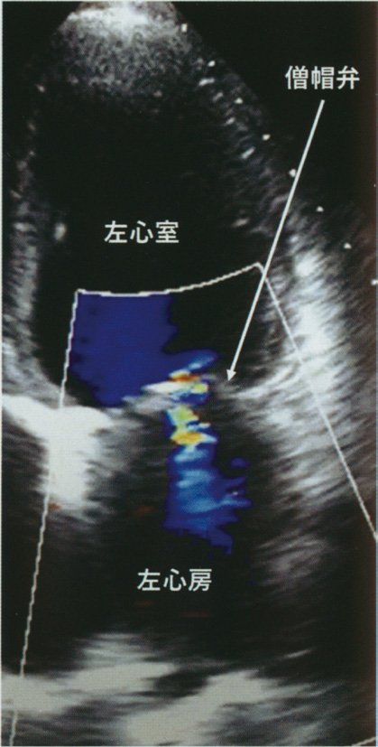
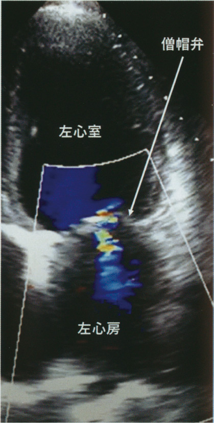
ａ 僧帽弁置換術
ｂ β遮断薬内服
ｃ ワルファリン内服
ｄ 心臓カテーテル検査
ｅ 定期的な心エコー検査
✅
ｅ 定期的な心エコー検査
無症状で左室拡大のない軽症〜中等症MR（心尖部の汎収縮期雑音・EF68％・BNP15）→手術適応はなく、定期的な心エコーで逆流量・左室径・EF・肺高血圧の推移を追う。
❤️ 僧帽弁閉鎖不全症〈MR〉——「心尖部の汎収縮期雑音」から始まる
MRは収縮期に左室から左房へ血液が逆流する病態である。僧帽弁は弁尖・弁輪・腱索・乳頭筋・左室壁という5つの部品が協調して閉じる装置で、どれが壊れてもMRになる——だからMRは「僧帽弁の病気」ではなく「僧帽弁装置の病気」と捉えるのが正しい。2つの型に分けるのが臨床でも国試でも出発点になる：
器質性〈一次性〉MR——弁そのものが壊れている。僧帽弁逸脱症〈MVP〉・腱索断裂・感染性心内膜炎による弁穿孔・リウマチ性。治療は弁を直す（弁形成術）ことで根治しうる
機能性〈二次性〉MR——弁は正常なのに、左室が拡大して乳頭筋が外へ引かれ、弁尖が閉じきれない（テザリング）。拡張型心筋症・心筋梗塞後が代表で、本体は左室の病気だから弁だけ直しても予後は変わりにくい
血行動態——逆流した血液は拡張期に左房から左室へ戻ってくるので、左室には容量負荷がかかり遠心性肥大（内腔が拡がる肥大）を起こす。左室は「逃げ道（低圧の左房）」を持つため後負荷はむしろ軽く、EFは見かけ上よく保たれる——つまりEFが60％台に落ちてきた時点で、実はもう左室は相当傷んでいる。これがMRで「EF≦60％」という一般より高い閾値を手術適応に使う理由である。
急性と慢性で別の病気のように振る舞う：急性MR（腱索断裂・乳頭筋断裂）は左房が広がる暇がないので左房圧が跳ね上がり、いきなり肺水腫とショックになる。慢性MRは左房が年単位でゆっくり拡大して圧を吸収するため長く無症状で、健診の心雑音で見つかる——本例がまさにこれである。
聴診——心尖部を最強点とする汎〈全〉収縮期雑音で、左腋窩へ放散する。Ⅰ音は弁が閉じきらないので減弱し、重症例では左室へ戻る血液量が多いためⅢ音を伴う。大動脈弁狭窄症の雑音が収縮期「駆出性（菱形）」で頸部へ放散するのと、最強点・形・放散方向のすべてが対照的である。
□ 選択肢の検討
| 選択肢 | 解説 |
|---|---|
| ａ 僧帽弁置換術 | 適応がない。MRで弁の手術に踏み切るのは①症状が出たとき ②無症状でも左室が傷み始めたときの2つだけである——本例はジョギングを続けられる完全な無症状で、左室駆出率68％・左室の拡大なし・BNP 15pg/mL（基準18.4以下）と左室はまだ一切音を上げていない。数値の目安はLVEF≦60％または左室収縮末期径≧40mmで、本例はどちらにも当たらない。さらに器質性MRの外科治療は「置換」ではなく「弁形成術」が第一選択である——人工弁は機械弁なら生涯のワルファリン、生体弁なら十数年後の再手術という新しい病気をもう1つ抱えることを意味するので、無症状の患者に最初に示す選択肢ではない。 |
| ｂ β遮断薬内服 | 利益がない。MRに対して逆流量を減らしたり予後を改善したりする内服薬は存在しない——薬が意味を持つのは①心不全を合併したとき（HFrEFの標準治療として）②心房細動を合併したときのレートコントロール ③高血圧を合併したときの後負荷軽減に限られる。本例は血圧114/80mmHg・脈拍68/分で整、頸静脈怒張なし・下腿浮腫なし・呼吸音正常と、そのどれにも該当しない。むしろβ遮断薬は心拍数を落として拡張期を延ばすため、逆流時間である収縮期の比率という点では中立で、飲ませる理由がどこにもない。無症状の患者に副作用だけを負わせる典型的な過剰治療である。 |
| ｃ ワルファリン内服 | 適応がない。弁膜症でワルファリン（または抗凝固薬）を使うのは①心房細動の合併 ②機械弁置換後 ③リウマチ性僧帽弁狭窄症 ④左房内血栓や塞栓症の既往のときである——本例の12誘導心電図（B）は洞調律で、P波が各QRSの前に規則正しく並び、心房細動を示すf波も基線の動揺もない。脈拍も68/分で「整」と明記されており、身体所見と心電図の両方が心房細動を否定している。MR自体は左房を広げるため将来的に心房細動を生みやすいが、「将来出るかもしれない」段階で出血リスクを取る理由はない。逆に言えば、経過観察中に心房細動が出た時点でこの選択肢は正解に変わる。 |
| ｄ 心臓カテーテル検査 | 現時点では不要。弁膜症の重症度評価は心エコーで完結するのが原則で、心臓カテーテル検査を追加するのは①症状と心エコー所見が食い違うとき ②手術が決まった後の冠動脈評価という2つの場面に限られる——本例は症状なし・心エコーの所見も軽症で矛盾がなく、手術も決まっていない。侵襲的検査には穿刺部の出血・造影剤腎症・塞栓症という実害があり、eGFR 60mL/分/1.73m2という腎機能はことさら造影剤に配慮したい水準である。「検査は陽性でも陰性でも次の行動が変わるときにだけ出す」——ここでは何が出ても対応は変わらない。 |
| ◯ ｅ 定期的な心エコー検査 | これが正解。カラードプラ心エコー図（A）の心尖部二腔断面像では、収縮期に左室から左房へ向かうモザイク状の逆流ジェットが僧帽弁を越えて描出されており、身体所見の心尖部最強のLevine 2/6 汎〈全〉収縮期雑音と完全に一致する＝僧帽弁閉鎖不全症〈MR〉である。しかしこの患者を特徴づけているのは疾患名ではなく「無症状で、左室がまだ健全である」という一点である——EF 68％・左室拡大なし・BNP正常・胸部エックス線正常・洞調律のMRは、手術をしても寿命は延びず、合併症だけが増える。だから正しい対応は「何もしないこと」ではなく「変化を捉えるために定期的に測り続けること」で、軽症なら3〜5年ごと、中等症なら1〜2年ごと、重症なら6〜12か月ごとに心エコーを繰り返す。追う数字は逆流の重症度・左室収縮末期径・LVEF・肺動脈収縮期圧・左房径、そして問診での労作時息切れの出現である。 |
🔍 「手術をいつするか」——MRは症状より先に数字が動く
重症MRの自然歴は「長い無症状期のあとに、症状が出てからは急速に悪化する」という形をとる。症状が出るまで待つと左室が不可逆的に傷んだ後になり、手術で逆流を止めてもEFはむしろ下がって心不全が残る——逃げ道だった左房が塞がれることで、術後は後負荷が急に「正規の値」へ戻るためである。そこで症状が出る前に、左室が発する早期のサインを数字で捉えるという戦略が取られる。重症・器質性MRの手術適応（要点）：
① 症状がある（労作時息切れ・心不全）→ 手術
② 無症状でも LVEF≦60％ または 左室収縮末期径≧40mm → 手術
③ 無症状・左室も正常でも 新規の心房細動 または 肺高血圧（肺動脈収縮期圧＞50mmHg） → 手術を考慮
④ ①〜③のどれにも当たらない＝本例。手術は行わず、定期的な心エコーで追う
術式は弁形成術＞弁置換術が明確な序列で、形成術は腱索や乳頭筋を残せるため左室機能が保たれ、抗凝固も不要という二重の利点がある。とくに後尖の逸脱による器質性MRは形成術の成功率が高く、経験のある施設では95％以上で修復できる。
見落としやすい落とし穴が「雑音の大きさは重症度を表さない」ことである——本例のLevine 2/6は決して大きくないが、急性の重症MRではむしろ雑音が小さい（左房圧が急上昇して左室との圧差が消えるため）。重症度を決めるのは聴診ではなく心エコー（逆流ジェット面積・vena contracta幅・有効逆流弁口面積・逆流量）と左室のサイズである。
重症MRの心エコー上の目安を数字で押さえておく：vena contracta幅≧7mm、有効逆流弁口面積〈EROA〉≧0.4cm2、逆流量≧60mL/拍、逆流率≧50％。補助所見として肺静脈血流の収縮期逆流波があれば重症を強く支持する。本例はこれらのどれにも触れられておらず、「左室が拡大していない」という一言が重症でないことの何よりの証拠になっている——重症MRが年単位で続けば左室は必ず拡大するので、正常な左室サイズと重症MRは両立しにくい。
🎯 国試ポイント
無症状＋左室正常のMRは「定期的な心エコー」が正解——この形の設問では、手術・薬・侵襲的検査はすべて「まだ早い」として切れる。拾うべき語は「症状はない」「左室駆出率68％」「左室の拡大は認めない」「BNP 15」「胸部エックス線に異常なし」の5つで、出題者はこれだけ並べて「動くな」と言っている。
MRの手術適応の数字は暗記が要る：LVEF≦60％・左室収縮末期径≧40mm。EFの閾値が他疾患より高いのは、MRのEFが逃げ道のせいで過大評価されるからだと理由ごと覚える。
ワルファリンは心房細動・機械弁・リウマチ性MSの3語のどれかが本文にあるときだけ選ぶ。「脈拍は整」「洞調律」と書いてあれば必ず切る。
心尖部・汎収縮期・腋窩へ放散＝MR／右第2肋間・収縮期駆出性・頸部へ放散＝AS。最強点と放散方向の2語だけで弁膜症は8割方見分けられる。
健診の心雑音という入り口の設問では、まず心エコーで診断と重症度を決め、そのうえで「症状」と「左室の数字」で介入を判断するという順序が問われる。この順序を守れば、いきなり手術・いきなりカテーテル・とりあえず投薬という3種類の誤答はすべて自動的に落ちる。
器質性MRの外科治療は弁形成術が第一選択——「置換」と書かれた選択肢は、それだけで一段疑ってよい。形成術は腱索・乳頭筋を温存できるため左室機能が保たれ、抗凝固も不要という二重の利点を持つ。
Q.303(120D-39)★臨床📷 画像53%
76歳の男性。定期受診で来院した。3 年前に拡張期心雑音を指摘され、定期的に心エコー検査で経過観察をしてきた。今回、6 か月ぶりの心エコー検査と定期外来で受診し、労作時の息切れを認めた。意識は清明。身長168cm、体重72kg。体温35.8℃。脈拍72/ 分、整。血圧142/46mmHg。SpO2 98％（room air）。頸静脈の怒張を認めず、呼吸音に異常を認めない。胸骨左縁第3 ～4 肋間にLevine 2/6 の拡張期雑音を認める。腹部は平坦、軟で、肝・脾を触知しない。四肢に浮腫を認めない。血液生化学所見：尿素窒素14mg/dL、クレアチニン0.8mg/dL、血糖106mg/dL、HbA1c 6.4％（基準4.9 ～6.0）、BNP 245pg/mL（基準18.4 以下）。胸部エックス線写真（A）を示す。心電図では、V4 ～V6 胸部誘導で高電位を認める。心エコー図（B）とカラードプラ心エコー図（C）とを示す。心エコー検査では、左室拡張期径69mm、左室駆出率46％、大動脈弁輪の拡大と重症の大動脈弁閉鎖不全症を認める。胸部造影CT でも、著明な大動脈弁基部の拡張を認める。冠動脈造影検査で冠動脈に病変を認めなかった。
適切な治療はどれか。
適切な治療はどれか。
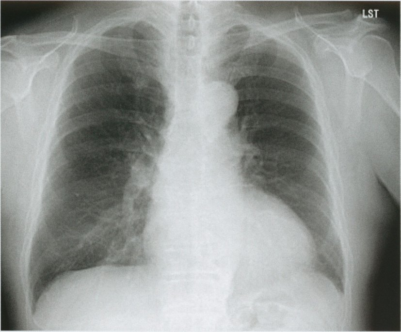
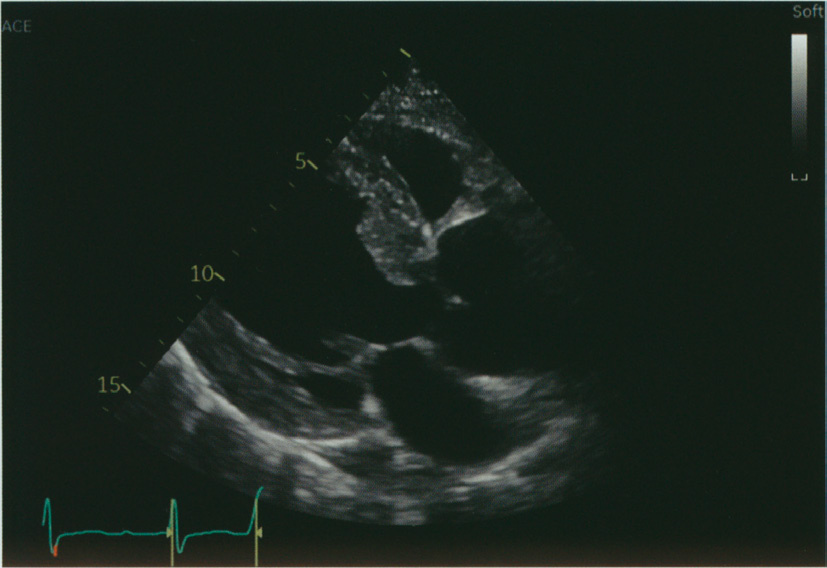
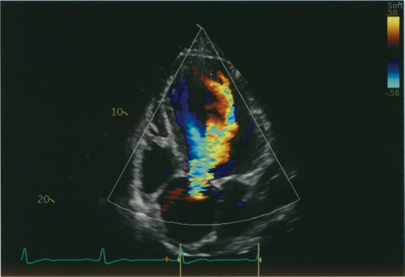
ａ Bentall 手術
ｂ 僧帽弁置換術
ｃ 大動脈弁置換術単独
ｄ 上行大動脈置換術単独
ｅ 経カテーテル大動脈弁留置術〈TAVI〉
✅
ａ Bentall手術
AR+上行大動脈拡大（Marfan症候群等）→Bentall手術（大動脈弁置換+上行大動脈置換を一期的に施行）。
❤️ 大動脈弁閉鎖不全症〈AR〉と大動脈基部拡張——弁と大動脈は一続きの装置
ARは拡張期に大動脈から左室へ血液が逆流する病態で、原因は大きく「弁が壊れた」ものと「弁を支える大動脈が広がった」ものに分かれる。弁側の原因——大動脈二尖弁・感染性心内膜炎・リウマチ性
大動脈側の原因——大動脈弁輪拡張症〈annuloaortic ectasia〉・Marfan症候群・高血圧性の上行大動脈拡大・大動脈解離。弁尖は正常なのに、弁輪が外へ引き伸ばされて弁尖が中央で合わさらなくなる
この「大動脈側の原因」が重要なのは、治療が弁だけでは終わらないからである——弁と大動脈基部は解剖学的にも力学的にも一続きの装置で、片方を放置すると必ずもう片方が再発する。
血行動態——逆流のぶんだけ左室は余分に受け取り、余分に押し出す。1回拍出量が増えるので収縮期圧は上がり、拡張期に大動脈から血液が抜けるので拡張期圧は下がる——結果が脈圧の開大（本例142/46＝96mmHg）である。これが末梢で速脈〈水撃脈・Corrigan脈〉・Quincke徴候（爪床の毛細血管拍動）・de Musset徴候（心拍に合わせた首振り）・大腿動脈のTraube徴候という一連の派手な所見を生む。
左室のリモデリング——ARは容量負荷＋圧負荷の両方がかかる唯一の弁膜症で、左室は心臓の中で最も大きくなる（cor bovinum＝牛心）。本例の左室拡張期径69mmと心電図V4〜V6の高電位、胸部エックス線での心陰影の左下方への張り出しはいずれもこの帰結である。代償が続くうちは無症状だが、拡がりきった左室はやがて収縮できなくなり、EFが落ちて息切れが出る——本例のEF 46％・BNP 245・労作時息切れはまさにその転換点で、「もう待てない」というサインである。
聴診——胸骨左縁第3〜4肋間（Erbの領域）に、Ⅱ音直後から始まる拡張期漸減性雑音。座位で前傾し、呼気で止めると最も強く聴こえる。重症例では逆流ジェットが僧帽弁前尖を叩いてAustin Flint雑音（心尖部の拡張期ランブル）を生じ、MSと紛らわしくなる。ただしAustin Flint雑音ではⅠ音亢進も開放音も伴わないので、この2つの有無で区別できる。
ARに特徴的な末梢徴候は「脈圧が開く」という1つの現象から全部説明できる：Corrigan脈〈水撃脈〉＝立ち上がりが速く直後に虚脱する脈、Quincke徴候＝爪床の毛細血管が拍動して見える、de Musset徴候＝心拍に合わせて頭が揺れる、Traube徴候（大腿動脈のpistol shot音）・Duroziez雑音——いずれも収縮期の急な駆出と拡張期の急な虚脱が体表に現れたものである。
□ 選択肢の検討
| 選択肢 | 解説 |
|---|---|
| ◯ ａ Bentall 手術 | これが正解。本例は重症の大動脈弁閉鎖不全症〈AR〉に著明な大動脈弁基部（バルサルバ洞〜大動脈弁輪）の拡張を合併しており、弁と基部の両方を一度に取り替える必要がある——これを行うのがBentall手術＝人工弁付き人工血管（composite graft）で大動脈弁と大動脈基部・上行大動脈をまとめて置換し、左右の冠動脈をボタン状に切り出して人工血管へ再吻合する術式である。血圧142/46mmHg＝脈圧96mmHgという開大した脈圧、胸骨左縁第3〜4肋間の拡張期雑音、左室拡張期径69mm・EF 46％、BNP 245pg/mL、労作時息切れの出現のすべてが「重症ARが左室を限界まで押し広げ、いま代償が破れた」ことを示す。冠動脈造影で病変がないと確認済みなのは、Bentallでは冠動脈を切り離して付け替えるため、その走行と病変の有無を事前に知っておく必要があるからである。 |
| ｂ 僧帽弁置換術 | 見当違いである。本例の雑音は拡張期で、しかも胸骨左縁第3〜4肋間——僧帽弁領域（心尖部）ではない。僧帽弁の病変なら心尖部の汎収縮期雑音（MR）か心尖部の拡張中期ランブル＋Ⅰ音亢進＋開放音（MS）が出るはずで、どちらの記載もない。心エコーの所見も「大動脈弁輪の拡大と重症の大動脈弁閉鎖不全症」と大動脈弁側にしか触れておらず、造影CTで指摘されたのも大動脈弁基部の拡張である。左室が69mmまで拡大すれば二次性（機能性）MRを伴うことはあるが、それはARを直せば左室が縮んで軽くなる従属的な所見で、単独で置換の対象にはならない。 |
| ｃ 大動脈弁置換術単独 | 不十分である。弁だけを新しくしても拡張した大動脈基部はそのまま残る——拡張は進行し、いずれ大動脈解離や破裂を起こす。加えて弁輪そのものが拡がっていることがこのARの原因なので、弁輪に人工弁を縫い付けても土台が広がり続ければ弁周囲逆流が生じうる。大動脈基部が拡張したARで弁置換だけを行うのは、「傾いた土台の上に新品の扉を付ける」のと同じである。なお大動脈基部の拡張が軽く、弁尖が健全な症例では、自己弁を温存して基部だけを人工血管に入れ替えるDavid手術（自己弁温存基部置換）という選択肢もあるが、本例は重症ARで弁輪拡大も著明であり温存の適応から外れる。 |
| ｄ 上行大動脈置換術単独 | 逆に不十分である。上行大動脈だけを置き換えても重症ARは1ミリも改善しない——左室拡張期径69mm・EF 46％という容量負荷の本体が放置される。ARの左室は「拡張期に大動脈から逆流が戻り、収縮期に全部を押し出す」という二重の仕事を続けているので、逆流を止めない限り左室は縮まない。上行大動脈置換だけで足りるのは弁が正常で、拡張が上行大動脈に限局している（弁輪・バルサルバ洞は正常な）症例であり、本例は基部そのものが拡がっているためこの条件を満たさない。「弁の病気」と「大動脈の病気」を片方だけ直す選択肢は2つとも誤りという構図になっている。 |
| ｅ 経カテーテル大動脈弁留置術〈TAVI〉 | 適応がない。TAVIは石灰化した狭窄弁（AS）の内側にステント付き生体弁を押し広げて固定する治療で、固定するための硬い足場を狭窄弁の石灰化に頼っている——ARでは弁尖が寄らずに開いているだけで石灰化の足場がなく、しかも本例は弁輪そのものが拡大しているので、デバイスが留まらず逸脱・弁周囲逆流を起こす。TAVIが力を発揮するのは高齢・フレイル・開胸手術のリスクが高い重症ASで、76歳という年齢だけでTAVIを選ぶ理由にはならない。さらに本例は大動脈基部の拡張という「弁の外の問題」を抱えており、カテーテル治療では基部に一切手が届かない。 |
🔍 Bentall手術とは何をする手術か——「冠動脈を付け替える」がすべて
Bentall手術＝人工弁を縫い付けた人工血管（composite graft）で、大動脈弁・大動脈基部・上行大動脈を一体として置換する術式である。この手術の勘所は「左右の冠動脈が大動脈基部から出ている」という一点にある——基部ごと取り替えるということは冠動脈の入口も一緒に切り取ってしまうので、周囲の大動脈壁ごとボタン状にくり抜き（button法）、人工血管に窓を開けて縫い付け直す必要がある。術前に冠動脈造影を行うのは、狭窄の有無を見るためだけでなくこの付け替えの計画を立てるためでもある——本例で「冠動脈造影検査で冠動脈に病変を認めなかった」とわざわざ書かれているのはそのためである。基部の手術は3つを区別する：
Bentall手術——人工弁＋人工血管。弁尖が壊れている／弁輪拡大が著明なとき。機械弁を選べば生涯のワルファリンが必要
David手術（自己弁温存基部置換）——弁尖が健全なら自己弁を人工血管の中に吊り直す。抗凝固が不要という大きな利点があるが、手技の難度が高く適応が限られる
上行大動脈置換単独——弁と弁輪が正常で、拡張が上行大動脈だけのとき
手術のタイミング——重症ARでは①症状がある ②無症状でもLVEF≦55％ ③左室収縮末期径＞50mm（または25mm/m2）で手術。大動脈のサイズでは最大径55mm（Marfan症候群や二尖弁では50mm、家族歴があれば45mm）が目安になる。本例は症状・EF低下・著明な左室拡大・基部拡張と、これらをまとめて満たしている。
正答率53％という数字が示すのは、多くの受験生が「重症AR＝大動脈弁置換術」で止まってしまうことである——本文が「大動脈弁輪の拡大」「著明な大動脈弁基部の拡張」と2回も基部に言及しているのは、弁だけ見るなという出題者の指示である。
人工弁の選択もここで決まる：機械弁は耐久性に優れるが生涯のワルファリンが必要、生体弁は抗凝固が不要だが10〜20年で劣化して再手術になる。目安はおおむね65歳以上なら生体弁、若年なら機械弁、そして挙児希望があればワルファリンを避けて生体弁である——76歳の本例では生体弁付きのcomposite graftが選ばれることが多い。術後は人工弁である以上、抜歯などの侵襲的処置の前に感染性心内膜炎の予防的抗菌薬投与が必要になる点も一緒に押さえる。
🎯 国試ポイント
AR＋大動脈基部拡張＝Bentall手術——この組合せを見たら「弁置換術単独」も「上行大動脈置換単独」も片手落ちとして切る。脈圧の開大（本例142/46＝96mmHg）と胸骨左縁第3〜4肋間の拡張期雑音は、2語でARを確定させる組合せとして暗記する。
TAVIはASの治療でARには使えない——「石灰化した狭窄弁を足場にして留置する」という原理から必然的にそうなる、と理由ごと覚えると迷わない。
ARの手術適応：症状あり／LVEF≦55％／左室収縮末期径＞50mm。MRのEF≦60％・収縮末期径≧40mmと数字が違うので、2つ並べて覚えること。
Bentallで冠動脈をボタン状に再吻合するという一点を押さえておくと、術前に冠動脈造影を行う理由も術後合併症に冠動脈吻合部の問題（心筋虚血）がある理由も同時に説明できる。
大動脈径の手術閾値も対で覚える：通常55mm／Marfan症候群・二尖弁では50mm／家族歴があれば45mm。弁を残せるDavid手術は弁尖が健全なときだけ——「弁も基部も壊れているならBentall」と切り分ける。
ARの末梢徴候（脈圧開大・速脈・Quincke徴候・de Musset徴候）はすべて「脈圧が開く」の言い換えである。Austin Flint雑音は重症ARで心尖部に出る拡張期ランブルで、Ⅰ音亢進も開放音も伴わない点でMSと分かれる。
Q.304(120E-19)★必修CBT一般89%
身体診察で、心尖部に全収縮期にわたる高調な雑音が聴取されたときに最も考えられる疾患はどれか。
ａ 心室中隔欠損症
ｂ 大動脈弁狭窄症
ｃ 肺動脈弁狭窄症
ｄ 三尖弁閉鎖不全症
ｅ 僧帽弁閉鎖不全症
✅
ｅ 僧帽弁閉鎖不全症（MR）
全収縮期雑音（pansystolic/holosystolic）→MRまたはVSD。心尖部最強→MR。
❤️ 収縮期雑音の見分け方——「形」と「最強点」の2軸で仕分ける
収縮期雑音はまず「形」で2つに割るのが鉄則である。①駆出性（菱形・収縮中期）——心室から大血管へ出ていく途中に狭いところがあるタイプ。血流が出ている間だけ鳴るのでⅠ音との間に隙間があり、収縮中期に山を持つ：AS・PS・肥大型心筋症の左室流出路狭窄・無害性雑音（高拍出状態）
②逆流性（全収縮期・帯状）——高圧の部屋から低圧の部屋へ、収縮期を通じて漏れ続けるタイプ。Ⅰ音からⅡ音まで一定の強さで続く：MR・TR・VSDの3つだけ
この2分法だけで、「全収縮期」と書かれた瞬間にAS・PSが消える——本設問の選択肢ｂ・ｃはここで落ちる。
残ったMR・TR・VSDは最強点で仕分ける：
MR——心尖部最強、左腋窩へ放散、高調でblowing、吸気で減弱、Ⅰ音減弱・Ⅲ音
TR——胸骨左縁第4肋間／剣状突起下最強、吸気で増強（Rivero-Carvallo徴候）、頸静脈巨大v波・拍動性肝腫大
VSD——胸骨左縁第3〜4肋間最強、粗い（harsh）雑音でthrillを触れる、小欠損ほど大きい
音の高さは圧差を反映するという物理を1つ持っておくと、暗記量が激減する——高調＝圧差が大きい（MR・AR・VSD）、低調＝圧差が小さい（MSの拡張期ランブル・TSのランブル）。同じ理由で聴診器の使い分けも決まる：高調な雑音は膜面（diaphragm）を強く当てて、低調な雑音はベル面（bell）を軽く当てて聴く。
雑音を聴いたら必ず4つを言語化する——①時相（収縮期か拡張期か） ②最強点 ③放散方向 ④音質と形。この4項目を埋めれば疾患名はほぼ一意に定まるので、カルテにも診療でもこの順で記載する。逆に強さ（Levine分類）だけを記載しても診断には結びつかない——強さは重症度でも疾患名でもない。
□ 選択肢の検討
| 選択肢 | 解説 |
|---|---|
| ａ 心室中隔欠損症 | 最強点が違う。心室中隔欠損症〈VSD〉の雑音は確かに全収縮期雑音（左室から右室への圧差が収縮期を通じて存在するため）だが、最強点は胸骨左縁第3〜4肋間である——欠損孔が心室中隔の膜様部（大動脈弁直下）にあることが多く、そこから前胸壁への最短距離が胸骨左縁だからである。VSDの雑音は粗く（harsh）、しばしば振戦〈thrill〉を触れ、放散は「胸骨左縁から右方へ（心臓を取り巻くように）」で、腋窩へは放散しない。また小欠損ほど雑音が大きい（圧差が保たれるため）という逆説があり、雑音の強さと重症度が一致しない点でもMRと共通する。「全収縮期雑音を作る3疾患＝MR・TR・VSD」を最強点で仕分けるのがこの設問の骨格である。 |
| ｂ 大動脈弁狭窄症 | 雑音の形と最強点の両方が違う。大動脈弁狭窄症〈AS〉の雑音は収縮中期に山を持つ駆出性（菱形／crescendo-decrescendo）で、Ⅰ音とⅡ音の間に隙間がある＝「全収縮期にわたる」ではない——左室が大動脈弁を押し開けて駆出している間だけ鳴るからで、収縮の始まり（等容収縮期）と終わりには血流がなく雑音も出ない。最強点は右第2肋間胸骨右縁で、両側頸動脈へ放散する。音の性質も低〜中調で粗い——「高調」と書かれた時点でASは外れる。ただし高齢者では雑音が心尖部でも聴こえ、高調な成分だけが伝わってMRと紛らわしくなる現象（Gallavardin現象）があるので、最強点と放散方向で必ず確認する。 |
| ｃ 肺動脈弁狭窄症 | 部位も呼吸性変動も違う。肺動脈弁狭窄症〈PS〉の雑音は胸骨左縁第2肋間を最強点とする収縮期駆出性雑音で、ASと同じ菱形である——心尖部で最強になることはない。右心系の雑音なので吸気で増強するのが決定的な特徴で、Ⅱ音の肺動脈成分（ⅡP）が減弱・遅延して固定性でない分裂を伴う。PSは成人で新規に見つかることはまれで、多くは先天性心疾患として小児期に指摘される——成人の設問で「心尖部の雑音」の答えになることはほぼない。「右心系の雑音は吸気で強くなる」というRivero-Carvallo徴候の原則は、TR・PS・TSに共通する。 |
| ｄ 三尖弁閉鎖不全症 | 最強点と呼吸性変動が違う。三尖弁閉鎖不全症〈TR〉は全収縮期雑音を作る3疾患の1つだが、最強点は胸骨左縁第4肋間（三尖弁領域）または剣状突起下である。最大の鑑別点は吸気で増強する（Rivero-Carvallo徴候）ことで、吸気に伴い胸腔内圧が下がって右心系への静脈還流が増えるため逆流量が増える——左心系のMRは吸気でむしろ弱くなる（肺血管床に血液が貯留し左心系への還流が減る）。TRでは雑音以外に頸静脈の巨大v波・拍動性肝腫大・下腿浮腫・腹水という右心不全の所見が並ぶのが常で、心尖部で聴こえる高調な雑音だけを提示されたときの答えにはならない。 |
| ◯ ｅ 僧帽弁閉鎖不全症 | これが正解。心尖部＋全収縮期＋高調——この3語がそろえば僧帽弁閉鎖不全症〈MR〉である。3語それぞれに理由がある： ①心尖部が最強点——僧帽弁は左室の心尖寄りに位置し、逆流ジェットが向かう左房は左後方にあるため、雑音は心尖部で最も強く、左腋窩から背部へ放散する ②全収縮期にわたる——左室（100mmHg以上）と左房（10mmHg前後）の圧差は僧帽弁が閉じた瞬間（Ⅰ音）から大動脈弁が閉じるまで（Ⅱ音）ずっと存在するので、収縮期の最初から最後まで途切れず鳴り、しばしばⅠ音とⅡ音を覆い隠す ③高調でblowing（吹くような）——圧差が大きく血流速度が速いほど周波数の高い音になる。MSの拡張期ランブルが低調でゴロゴロしているのは、左房と左室の圧差がわずか数mmHgしかないためで、音の高さは圧差の大きさを反映する 付随所見としてはⅠ音減弱（弁が閉じきらない）とⅢ音（拡張期に左房から大量の血液が戻る）を押さえる。 |
🔍 雑音を「増強・減弱させる操作」で確かめる
身体診察の強みは「条件を変えて、雑音がどう動くかを見る」ことができる点にある。出題される操作は4つに絞られる：①吸気——胸腔内圧が下がり右心系への静脈還流が増える。右心系の雑音（TR・TS・PS）が増強＝Rivero-Carvallo徴候。左心系（MR・AS）はむしろ減弱
②前傾座位＋呼気止め——大動脈基部が前胸壁に近づく。ARの拡張期雑音が最も強く聴こえる
③左側臥位——心尖部が胸壁に密着する。MSの拡張期ランブルとⅢ音がベル面で拾えるようになる
④Valsalva手技・立位（＝前負荷を減らす操作）——左室の容積が小さくなる。肥大型心筋症の左室流出路狭窄による雑音は増強（流出路がさらに狭まる）、僧帽弁逸脱症のクリックと雑音は早く出るのに対し、ASの雑音は減弱（拍出量が減るため）
この④が最も試されやすい——ほとんどの収縮期雑音は前負荷を減らすと弱くなるが、HOCMとMVPだけは強くなる（早く出る）という「例外の2つ」を覚える形で問われる。
聴診で疾患を絞ったあとの確定は心エコーである——身体診察は「どの検査を、どの部位に向けて行うか」を決めるための道具であって、診断そのものを背負うものではない。ただし心エコーを撮る前に予測を立てておくことが読影の質を決める。
Ⅱ音の分裂も収縮期雑音の鑑別に直結する：生理的分裂＝吸気で広がり呼気で閉じる、固定性分裂＝呼吸で変わらない＝心房中隔欠損症、幅広い分裂＝完全右脚ブロック・PS、奇異性分裂（呼気で分裂）＝重症AS・完全左脚ブロック——左室駆出が延びてⅡAがⅡPより遅れるためである。ⅡAの減弱・消失は重症ASの指標で、雑音の大きさより信頼できる。
🎯 国試ポイント
心尖部＋全収縮期＋高調＝MR——3語がそのまま答えになる、弁膜症の最頻出パターンである。全収縮期雑音を作るのはMR・TR・VSDの3つだけ。この3つを最強点で割る：心尖部＝MR／胸骨左縁第4肋間・剣状突起下（吸気で増強）＝TR／胸骨左縁第3〜4肋間（粗くthrill）＝VSD。
「駆出性（菱形）」と書かれたらAS・PS・HOCM、「全収縮期（帯状）」と書かれたらMR・TR・VSD——形の1語で候補が半分に減る。
音の高さ＝圧差。高調ならMR・AR・VSD、低調ならMS・TSのランブル。聴診器も高調は膜面・低調はベル面と連動する。
Rivero-Carvallo徴候（吸気で増強＝右心系）は、TRをMRから切り離す唯一にして決定的な所見として押さえる。
Gallavardin現象——重症ASの雑音の高調成分だけが心尖部に伝わってMRに似る。「心尖部で聴こえた＝必ずMR」ではないので、最強点と頸部への放散で確認する。Levine分類はⅣ度以上でthrillを触れるという定義だけ覚える。強さは重症度を意味しない。
Ⅱ音の分裂は固定性＝ASD／奇異性＝重症AS・完全左脚ブロックの2つを最優先で覚える。ⅡAの減弱・消失は重症ASのサインで、雑音の大きさより信頼できる指標である。
Q.305(119B-9)★必修CBT一般📷 画像92%
胸部の模式図を示す。
大動脈弁狭窄症で聴取される収縮期雑音の最強点はどれか。
大動脈弁狭窄症で聴取される収縮期雑音の最強点はどれか。

ａ ①
ｂ ②
ｃ ③
ｄ ④
ｅ ⑤
✅
ａ ①
AS雑音の最強点は右第2肋間胸骨右縁（大動脈弁領域）。
❤️ 4つの聴診領域——「弁の位置」ではなく「音が伝わる場所」
心臓の聴診部位は弁の解剖学的な位置とは一致しない。音は血流の下流方向へ伝わるので、その弁を通った血液が向かう先の胸壁で最もよく聴こえるように配置されている。①大動脈弁領域＝右第2肋間胸骨右縁——大動脈弁を通った血流は上行大動脈を右上方へ向かう。ASの収縮期駆出性雑音。頸動脈へ放散
②肺動脈弁領域＝左第2肋間胸骨左縁——肺動脈は左上方へ向かう。PSの駆出性雑音・ⅡPの亢進／分裂・ASDの固定性分裂・PDAの連続性雑音
Erbの領域＝左第3肋間胸骨左縁——大動脈弁の逆流は左室（左下方）へ向かうので、順行性のASとは違う場所になる。ARの拡張期漸減性雑音。前傾座位・呼気止めで増強
③（ここでは④）三尖弁領域＝左第4肋間胸骨左縁／剣状突起下——TRの全収縮期雑音（吸気で増強）・VSD
⑤僧帽弁領域＝心尖部（左第5肋間鎖骨中線）——僧帽弁の逆流は左房（左後方）へ向かうので、心尖部最強で左腋窩へ放散。MRの汎収縮期雑音・MSのランブル・Ⅲ音／Ⅳ音
この5か所を「2・2・3・4・5」と数字で唱えると定着する——右2（AS）／左2（PS）／左3（AR＝Erb）／左4（TR・VSD）／左5心尖（MR・MS）。
臨床ではこの順に聴診器を這わせる（右第2肋間→左第2肋間→左第3肋間→左第4肋間→心尖部）のが標準手順で、「聴診の順路」そのものが鑑別のチェックリストになっている。
肋間の数え方も実技として問われる：胸骨角〈Louis角〉に接するのが第2肋骨で、そのすぐ下が第2肋間である——鎖骨から数え下ろすより確実で、大動脈弁領域も肺動脈弁領域もこの1点から決まる。心尖部は左第5肋間鎖骨中線だが、心拡大があれば心尖拍動そのものが左下方へ移動するので、触診で心尖拍動を確かめてから聴診器を当てるのが正しい順序である。
□ 選択肢の検討
| 選択肢 | 解説 |
|---|---|
| ◯ ａ ① | これが正解。模式図の①は患者から見て右の第2肋間・胸骨右縁＝大動脈弁領域〈aortic area〉であり、大動脈弁狭窄症〈AS〉の収縮期駆出性雑音の最強点である。なぜここかは解剖で決まる——大動脈弁そのものは胸骨の裏（第3肋間の高さ付近）にあるが、そこから駆出された血流は上行大動脈を通って右上方へ向かうので、雑音は血流の下流方向にいちばんよく伝わる。同じ理由でASの雑音は両側の頸動脈へ放散する——「右第2肋間で最強、頸部へ放散」はセットで覚える。聴診部位の名前は「弁の位置」ではなく「その弁の音が最もよく伝わる場所」を指している、という原則がここに凝縮されている。実際、大動脈弁・肺動脈弁・僧帽弁・三尖弁の4つは胸骨の裏に近接して並んでいるので、弁の真上を聴いても4つの音が混ざって区別できない——だからあえて弁から離れた「下流」を聴くという設計になっている。 |
| ｂ ② | ここは肺動脈弁領域である。②は左第2肋間胸骨左縁〈pulmonic area〉で、肺動脈弁狭窄症〈PS〉・心房中隔欠損症〈ASD〉の相対的PS雑音・肺高血圧でのⅡP亢進を拾う場所である。ASDではⅡ音の固定性分裂がここで最もよく聴こえる。また動脈管開存症〈PDA〉の連続性雑音（機械様雑音）も左第2肋間からやや上方（左鎖骨下）で最強になる。ASの雑音がここでまったく聴こえないわけではないが、「最強点」を問われている以上、右第2肋間に譲る。 |
| ｃ ③ | 位置がずれている。③は患者から見て右の第3〜4肋間胸骨右縁にあたり、標準的な4つの聴診領域のどれでもない——大動脈弁領域は1つ上の第2肋間である。紛らわしいのがErbの領域＝第3肋間「胸骨左縁」で、これはARの拡張期雑音を最もよく拾う場所である。Erbの領域は左であって右ではない——AS（右第2肋間）とAR（左第3肋間）で同じ大動脈弁の病気なのに聴く場所が違うのは、ASは順行性の血流が上行大動脈（右上方）へ、ARは逆行性の血流が左室（左下方）へ向かうという血流の向きの違いによる。 |
| ｄ ④ | 三尖弁領域である。④は左第4肋間胸骨左縁〈tricuspid area〉で、三尖弁閉鎖不全症〈TR〉の全収縮期雑音（吸気で増強）・心室中隔欠損症〈VSD〉の粗い全収縮期雑音・右室性Ⅲ音／Ⅳ音を拾う。ASの雑音がここまで下りてくることはあるが、最強点にはならない。なお肥大型閉塞性心筋症〈HOCM〉の左室流出路狭窄による雑音は胸骨左縁第3〜4肋間〜心尖部で最強となり、ASと違って頸部へ放散せず、Valsalva手技や立位で増強する——ASとの鑑別で必ず問われる。 |
| ｅ ⑤ | 僧帽弁領域である。⑤は左第5肋間鎖骨中線上＝心尖部〈mitral area〉で、MRの汎収縮期雑音・MSの拡張中期ランブルと開放音・Ⅲ音／Ⅳ音を拾う場所である。ここは心尖拍動を触れる場所でもあり、心拡大があると左下方へ移動するので触診と聴診をセットで行う。ASの雑音が心尖部で高調な成分だけとして聴かれ、MRと紛らわしくなる現象をGallavardin現象と呼ぶが、それでも最強点は右第2肋間のままである。聴診で迷ったら「どこで最も強いか」と「どこへ放散するか」の2つに戻る——ASは頸部へ、MRは腋窩へという放散の向きが決め手になる。心尖部ではベル面を左側臥位で軽く当てるとⅢ音・Ⅳ音・MSのランブルが拾え、膜面を強く当てるとMRの高調な雑音が拾える——同じ場所でも当て方を変えると別の音が聞こえるのが心尖部の特徴である。 |
🔍 大動脈弁狭窄症〈AS〉の雑音——形・放散・随伴所見
ASの雑音は収縮中期に山を持つ駆出性（菱形／crescendo-decrescendo）で、Ⅰ音との間に隙間がある——左室が大動脈弁を押し開けて血液を送り出している間だけ鳴るためで、等容収縮期には血流がなく音も出ない。音質は低〜中調で粗い（harsh）、両側頸動脈へ放散し、右第2肋間で振戦〈thrill〉を触れることがある。重症度は「雑音の大きさ」ではなく次の4つで読む：
①雑音のピークが遅い（収縮後期にずれる）——狭いほど駆出に時間がかかる
②Ⅱ音の大動脈成分（ⅡA）が減弱・消失——弁が硬くて閉じる音が出ない。重症の指標
③奇異性分裂（Ⅱ音が呼気で分裂）——左室駆出が延びてⅡAがⅡPより遅れる
④頸動脈の遅脈・小脈〈pulsus parvus et tardus〉——立ち上がりが遅く振幅が小さい
これらはいずれも「駆出に時間がかかる」という1つの現象の別の顔で、まとめて理解すると忘れない。
ASの3大症状は狭心痛・失神・心不全で、出現すると平均余命はそれぞれ約5年・3年・2年と急激に短縮する——だからASの管理は「無症状のうちは待ち、症状が出たら直ちに手術（AVRまたはTAVI）」という単純明快な形になる。注意すべきは硝酸薬・利尿薬・血管拡張薬が危険なことで、固定された狭窄の下流で血管を広げると血圧が保てず失神・心停止を起こす。
ASの重症度は心エコーの3つの数字で決まる：大動脈弁最大血流速度〈Vmax〉≧4.0m/秒、平均圧較差≧40mmHg、大動脈弁口面積≦1.0cm2——この3つがそろえば重症ASである。ただし低左心機能では圧較差が上がらない（low-flow low-gradient AS）ため、ドブタミン負荷心エコーで真の重症度を確かめる。
治療の選択は外科的大動脈弁置換術〈SAVR〉と経カテーテル大動脈弁留置術〈TAVI〉の2つ——高齢・手術リスクが高い・フレイルならTAVI、若年・大動脈基部にも病変がある・他の心臓手術を同時に行うならSAVR。原因は高齢者では加齢性の石灰化変性、60歳未満では大動脈二尖弁、いずれでもリウマチ性の3つを挙げる。
🎯 国試ポイント
ASの最強点＝右第2肋間胸骨右縁（模式図の①）、放散は頸部。聴診部位は「右2・左2・左3・左4・左5心尖」の5点で覚える——右2＝AS／左2＝PS・ASD・PDA／左3＝AR（Erbの領域）／左4＝TR・VSD／左5心尖＝MR・MS。
Erbの領域は「左」第3肋間。右第2肋間をErbの領域と呼ぶのは誤りで、ここを取り違えるとARとASの鑑別が丸ごと崩れる。
同じ大動脈弁の病気でも、ASは右上（順行）・ARは左下（逆行）と聴く場所が違う。血流の向きで決まると理解しておけば図を見れば選べる。
放散方向の対比は必ず出る：AS→頸部／MR→左腋窩／VSD→胸骨左縁を取り巻くように右方。
ASの3大症状（狭心痛・失神・心不全）が出たら手術。無症状なら経過観察という管理の骨格も同時に思い出す。重症ASに血管拡張薬・硝酸薬・利尿薬は禁忌に近い——前負荷や後負荷を下げると血圧が保てないという理由まで問われる。聴診部位の図は「肋間の数」と「胸骨のどちら側か」の2つだけで選べる。①＝右第2肋間＝大動脈弁領域。
胸骨角に接するのが第2肋骨——ここから数え始めれば肋間を間違えない。Erbの領域は「左」第3肋間でARを聴く場所。右第2肋間と混同する誤答が繰り返し作られている。
Q.306(119D-15)★一般3択90%
僧帽弁閉鎖不全症の原因となるのはどれか。3 つ選べ。
ａ 高安動脈炎
ｂ 拡張型心筋症
ｃ 急性心筋梗塞
ｄ 感染性心内膜炎
ｅ 急性大動脈解離
✅
ｂ 拡張型心筋症 ＋ ｃ 急性心筋梗塞 ＋ ｄ 感染性心内膜炎
MRの主な原因：僧帽弁逸脱（MVP）・感染性心内膜炎・乳頭筋断裂（AMI後）。
❤️ MRの原因を「弁が壊れた」「左室が歪んだ」で二分する
MRの原因は器質性（一次性）と機能性（二次性）に分けると、原因リストが丸暗記から理屈に変わる。器質性MR＝弁装置そのものが壊れている：
僧帽弁逸脱症〈MVP〉——先進国で最多。粘液腫様変性で弁尖が伸び、収縮期に左房側へ突出する。収縮中期クリック＋後収縮期雑音
腱索断裂——MVPの経過中や特発性に起こる。急性MRの代表的な原因
感染性心内膜炎——弁尖穿孔・腱索断裂・疣贅。急性MR
乳頭筋断裂——AMI後2〜7日。後内側乳頭筋が単一血流支配で断裂しやすい
リウマチ性——弁尖の肥厚・短縮・交連癒合。日本では減少したがMSと合併して残る
機能性MR＝弁は正常だが左室が歪んで閉じられない：
拡張型心筋症——弁輪拡大＋乳頭筋テザリング
虚血性心筋症（陳旧性心筋梗塞）——局所の壁運動異常で乳頭筋の位置がずれる
この二分が治療方針を分ける——器質性は弁を直せば治る（弁形成術の良い適応）のに対し、機能性は本体が左室の病気なので、弁だけ直しても予後が変わりにくい（まず心不全治療とCRT）。
MRの原因にならないものを裏から押さえるのも有効である——「上行大動脈・大動脈基部を侵す疾患はARを作る」という1行で、高安動脈炎・大動脈解離・Marfan症候群・大動脈弁輪拡張症・梅毒性大動脈炎がまとめて除外できる。
逆にMRを作る「弁の外の病気」も1つだけある——左房粘液腫のように弁口を機械的に妨げるものだが、これは狭窄（MS様）として現れるので混同しない。薬剤性（食欲抑制薬・エルゴタミン製剤）やカルチノイド症候群も弁膜症を起こすが、カルチノイドは右心系（TR・PS）を侵すのが特徴である——腸管由来のセロトニンが肺で代謝されるため、左心系まで届かないという理屈で覚える。
□ 選択肢の検討
| 選択肢 | 解説 |
|---|---|
| ａ 高安動脈炎 | MRの原因にならない。高安動脈炎〈大動脈炎症候群〉は大動脈とその主要分枝（腕頭動脈・鎖骨下動脈・総頸動脈・腎動脈など）を侵す大型血管炎で、若年女性に多く、上肢の脈拍消失・血圧の左右差・血管雑音・炎症反応上昇を特徴とする。心臓に及ぶ場合も、侵されるのは上行大動脈と大動脈弁輪である——炎症で大動脈弁輪が拡張して弁尖が合わさらなくなり、大動脈弁閉鎖不全症〈AR〉を合併するのが典型で、高安動脈炎の心合併症といえばARであってMRではない。僧帽弁は大動脈から離れた房室弁で、大血管の炎症が直接届く位置にない。「上行大動脈の病気＝AR」という対応は、大動脈弁輪拡張症・Marfan症候群・大動脈解離・梅毒性大動脈炎にも共通する。 |
| ◯ ｂ 拡張型心筋症 | これが正解の1つ。拡張型心筋症〈DCM〉は左室がびまん性に拡大して収縮力が落ちる疾患で、弁そのものは正常なのにMRを生じる＝機能性（二次性）MRの代表である。機序は2つが重なる： ①弁輪拡大——左室が拡がると僧帽弁輪も引き伸ばされ、弁尖が届く距離が広がる ②乳頭筋のテザリング——左室が球状に変形すると乳頭筋が心尖方向・外側へ移動し、腱索が弁尖を下方へ引っ張って閉じきらなくなる 重要なのは「MRが心不全を悪化させ、心不全がMRを悪化させる」という悪循環が回ることで、逆流→左室容量負荷→さらに左室拡大→さらにMRと進む。だから機能性MRの治療はまず心不全の薬物療法とCRT（心臓再同期療法）で左室を小さくすることが先で、それでも残る重症例に経皮的僧帽弁接合不全修復術〈MitraClip〉などを考える。 |
| ◯ ｃ 急性心筋梗塞 | これが正解の1つ。急性心筋梗塞〈AMI〉は2つの機序でMRを起こす： ①乳頭筋断裂（機械的合併症）——発症2〜7日目に突然発症する。後内側乳頭筋は右冠動脈（または回旋枝）からの単一血流支配で虚血に弱く、前外側乳頭筋（左前下行枝と回旋枝の二重支配）より断裂しやすい——臨床像は急性重症MR＝突然の呼吸困難・肺水腫・心原性ショックで、緊急手術が必要な致死的合併症である ②乳頭筋機能不全・虚血性MR——梗塞した心筋の壁運動異常で乳頭筋が正しい位置を保てなくなる。断裂ほど急激ではないが慢性的にMRが残る AMI後に新たな全収縮期雑音＋急性の血行動態破綻を見たら、乳頭筋断裂・心室中隔穿孔・左室自由壁破裂の3つを並べて鑑別する——前2つは雑音を作り、自由壁破裂は心タンポナーデで電導収縮解離となる。 |
| ◯ ｄ 感染性心内膜炎 | これが正解の1つ。感染性心内膜炎〈IE〉は弁尖に疣贅〈vegetation〉を作り、弁を破壊する——僧帽弁は大動脈弁と並んで最も侵されやすい弁である。MRを生じる機序は①弁尖の穿孔 ②腱索の断裂 ③疣贅による弁の閉鎖障害 ④弁輪部膿瘍と多彩で、いずれも急性に進行する。IEによるMRが恐ろしいのは「急性MR」として現れる点で、左房が代償的に拡大する時間がないため左房圧が急上昇し、いきなり肺水腫とショックになる。この場合雑音はむしろ小さい（左室と左房の圧差が急速に消えるため）——「雑音が小さいから軽症」と読んではいけない。IEを疑ったら抗菌薬開始前に血液培養3セット、経胸壁心エコー（不十分なら経食道心エコー）で疣贅を探し、Duke基準で診断を組み立てる。 |
| ｅ 急性大動脈解離 | MRの原因にならない。急性大動脈解離のStanford A型（上行大動脈に解離が及ぶ）では大動脈弁閉鎖不全症〈AR〉を合併する——機序は①解離腔が弁輪を押し広げる ②弁尖の交連部が剥離して逸脱する ③解離フラップが弁口へ落ち込むの3つで、いずれも大動脈弁の話である。A型解離の合併症はAR・心タンポナーデ・冠動脈解離による心筋梗塞・分枝閉塞による脳虚血や下肢虚血で、緊急手術の適応となる。僧帽弁は左房と左室の間にあり、大動脈基部の解離が直接及ぶ構造ではない。選択肢ａと同じく「大動脈の病気はARを作る」という1本の筋で切れる——この設問は「AR型の疾患を2つ混ぜて、MR型の3つを選ばせる」構造になっている。 |
🔍 急性MRと慢性MR——同じ逆流が別の病気に見える理由
MRの臨床像を決めるのは逆流量ではなく「左房が広がる時間があったかどうか」である。急性MR（腱索断裂・乳頭筋断裂・IEによる弁穿孔）：左房は小さく硬いままなので、逆流した血液が入ると左房圧が一気に上がり、そのまま肺静脈圧・肺毛細血管圧へ伝わって肺水腫になる。前方への拍出は減って心原性ショック。心拡大はなく、胸部エックス線では心陰影が正常なのに肺うっ血だけが強いという不釣り合いが手がかりになる。雑音は短く小さい（早期収縮期で終わる）——左房圧が急上昇して収縮後期には圧差が消えるためで、重症なのに聴診が地味という罠がある。治療は後負荷を下げて前向き拍出を稼ぐ（血管拡張薬・IABP）で時間を稼ぎ、早期の外科手術へつなぐ。
慢性MR（MVP・機能性MR・リウマチ性）：左房は年単位でゆっくり拡大して圧を吸収するので、長く無症状のまま経過する。代償として左室も遠心性肥大で拡大し、心尖拍動は左下方へ移動する。拡大した左房は心房細動を生み、そこから塞栓症へつながる。症状が出るころには左室はすでに傷んでいるため、症状を待たず数字（EF≦60％・左室収縮末期径≧40mm）で手術に踏み切るという管理になる。
この対比はARでもそのまま成立する——急性AR（解離・IE）は代償なしで肺水腫、慢性ARは長い無症状期と巨大左室。「急性は圧、慢性は容量」と一言で覚えておくと応用が利く。
急性MRを疑う場面を具体的な語で持っておく：心筋梗塞後2〜7日の突然の呼吸困難＋新規雑音＋ショック＝乳頭筋断裂、発熱が続く患者の新規逆流性雑音＝感染性心内膜炎による弁穿孔、僧帽弁逸脱症の経過中に突然の肺水腫＝腱索断裂。いずれも心エコー（必要なら経食道）で直ちに確認し、外科と同時進行で動くべき状況である。
🎯 国試ポイント
MRの原因＝拡張型心筋症・急性心筋梗塞（乳頭筋断裂）・感染性心内膜炎（＋僧帽弁逸脱症・リウマチ性）。高安動脈炎と急性大動脈解離はARの原因であってMRではない——「大動脈を侵す病気はARを作る」の1行で切る。
器質性MR（弁が壊れた）＝MVP・腱索断裂・IE・乳頭筋断裂・リウマチ性／機能性MR（左室が歪んだ）＝拡張型心筋症・虚血性心筋症。治療方針が分かれるので二分して覚える。
乳頭筋断裂はAMI後2〜7日、後内側乳頭筋（単一血流支配）が断裂しやすい。AMI後の新規雑音＋ショックでは乳頭筋断裂・心室中隔穿孔・自由壁破裂を並べる。
急性MRは雑音が小さい——「雑音が小さい＝軽症」と読ませる罠が国試には繰り返し出る。
高安動脈炎は若年女性・上肢の脈拍消失・血圧の左右差・血管雑音・炎症反応上昇で想起し、心合併症はARと結びつけておく。Stanford A型の急性大動脈解離もAR・心タンポナーデ・心筋梗塞を合併し、緊急手術となる。
カルチノイド症候群の弁膜症は右心系（TR・PS）——セロトニンが肺で代謝されて左心系に届かないためである。原因を問う設問では「弁の病気か、左室の病気か、大動脈の病気か」の3分類に落として考える。
Q.307(117E-22)★必修CBT一般📷 画像90%
心尖部に以下の模式図に示すパターンで心雑音が聴取される疾患はどれか。
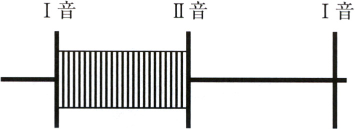
ａ 僧帽弁狭窄症
ｂ 僧帽弁閉鎖不全症
ｃ 大動脈弁狭窄症
ｄ 大動脈弁閉鎖不全症
ｅ 動脈管開存症
✅
ｂ 僧帽弁閉鎖不全症（MR）
全収縮期雑音（pan-systolic murmur）が心尖部で聴取→僧帽弁閉鎖不全症（MR）が典型。
❤️ 心雑音の模式図を読む——「時相」と「形」で疾患は決まる
雑音の模式図はⅠ音とⅡ音の間（収縮期）か、Ⅱ音と次のⅠ音の間（拡張期）かを見るだけで候補が半減する。次に形を見る——帯状（強さが一定）・菱形（中間に山）・漸減形（だんだん弱く）・漸増形（だんだん強く）・連続性（Ⅱ音をまたぐ）の5つしかない。収縮期・帯状（汎収縮期）——MR・TR・VSD。高圧腔から低圧腔へ収縮期を通じて一定の圧差で漏れる
収縮期・菱形（駆出性）——AS・PS・HOCM・無害性雑音。駆出している間だけ鳴る
拡張期・漸減形——AR・PR。逆流の原動力である圧差が拡張期を通じて小さくなっていく
拡張期・低調ランブル＋前収縮期増強——MS・TS。房室弁の狭窄で、圧差が小さいので低調。心房収縮でいったん強まる（前収縮期増強）が、心房細動になるとこの増強は消える
連続性——PDA・動静脈瘻・Valsalva洞動脈瘤破裂。Ⅱ音をまたいで途切れない
この5分類に最強点を掛け合わせれば、聴診だけで鑑別はほぼ完了する——心尖部＋帯状＝MR、胸骨左縁第4肋間＋帯状＋吸気で増強＝TR、胸骨左縁第3〜4肋間＋帯状＋粗い＝VSD。
最後に強さ（Levine分類Ⅰ〜Ⅵ度）を添えるが、強さは重症度を表さない——Ⅳ度以上でthrill（振戦）を触れるという定義だけを覚えれば足りる。
無害性〈機能性〉雑音を鑑別できることも同じくらい大切である：収縮期の菱形でLevine 2/6以下、胸骨左縁で最強、随伴所見（Ⅲ音・Ⅳ音・thrill・脈の異常）がない、体位で変わる——この条件を満たせば病的でない。逆に拡張期雑音は例外なく病的で、連続性雑音・thrillを触れる雑音も必ず精査する。貧血・妊娠・甲状腺機能亢進症・発熱のような高拍出状態では、心臓が正常でも駆出性雑音が出る。
□ 選択肢の検討
| 選択肢 | 解説 |
|---|---|
| ａ 僧帽弁狭窄症 | 時相が違う。僧帽弁狭窄症〈MS〉の雑音は拡張期——模式図はⅠ音からⅡ音まで、つまり収縮期を埋めているので当てはまらない。MSの聴診像は①Ⅰ音の亢進（硬くなった弁が高い圧のもとで閉じる） ②開放音〈opening snap〉（Ⅱ音の直後、弁が勢いよく開くときの高調な音） ③拡張中期の低調なランブル（remumble）＋前収縮期増強という3つの組合せである。音が低調なのは左房と左室の圧差がわずか数mmHgしかないためで、ベル面を心尖部に軽く当て、左側臥位で聴くと拾いやすい。なおⅡからOSまでの間隔が短いほど重症（左房圧が高く、早く弁が開く）という関係も押さえる。 |
| ◯ ｂ 僧帽弁閉鎖不全症 | これが正解。模式図はⅠ音の直後からⅡ音まで、途切れず一定の高さで続く帯状の雑音＝汎〈全〉収縮期雑音（holosystolic／pansystolic murmur）を示している——これが心尖部で聴こえるなら僧帽弁閉鎖不全症〈MR〉である。形がこうなる理由は圧の関係にある：左室（収縮期に100mmHg以上）と左房（10mmHg前後）の圧差は、僧帽弁が閉じる瞬間（Ⅰ音）から大動脈弁が閉じるまで（Ⅱ音）ずっと大きいままなので、逆流は収縮期の最初から最後まで同じ勢いで続き、雑音も強さを変えずに帯状になる。駆出性雑音（AS・PS）が菱形でⅠ音との間に隙間があるのと対照的で、この図はそれだけでAS・PSを除外している。随伴所見はⅠ音減弱・Ⅲ音・左腋窩への放散で、重症例では心尖拍動が左下方へ偏位する。同じ汎収縮期でもTRは吸気で増強し、VSDは粗くてthrillを触れるので、「心尖部」という指定がMRを一意に決めている。なお僧帽弁逸脱症によるMRでは収縮中期クリックに続く後収縮期雑音となり、Ⅰ音の直後から始まる帯状にはならない——図が汎収縮期であることは逸脱以外の器質性MRか機能性MRを示唆する。 |
| ｃ 大動脈弁狭窄症 | 形が違う。大動脈弁狭窄症〈AS〉の雑音は収縮中期に山を持つ菱形（駆出性）で、Ⅰ音との間に隙間がある——模式図のようにⅠ音の直後から始まって一定の高さで続く帯状にはならない。左室が大動脈弁を押し開けている間だけ鳴るためで、等容収縮期には血流がなく音も出ない。最強点も右第2肋間胸骨右縁で頸部へ放散し、設問の「心尖部」と合わない。重症ASでは雑音のピークが収縮後期へずれ、ⅡAが減弱・消失し、頸動脈は遅脈・小脈となる——いずれも「駆出に時間がかかる」という一つの現象の別の顔である。 |
| ｄ 大動脈弁閉鎖不全症 | 時相が違う。大動脈弁閉鎖不全症〈AR〉の雑音はⅡ音の直後から始まる拡張期漸減性雑音（decrescendo）で、収縮期を埋める模式図とは正反対である。拡張期に大動脈圧が左室圧より高い間だけ逆流するので、圧差が縮むにつれて雑音も弱くなる＝漸減形になる。最強点は胸骨左縁第3肋間（Erbの領域）で、座位で前傾させ呼気で止めると最も強く聴こえる。末梢所見として脈圧の開大・速脈〈水撃脈〉・Quincke徴候・de Musset徴候を伴い、重症例ではAustin Flint雑音（心尖部の拡張期ランブル）が加わってMSと紛らわしくなる。順行性の血流も増えるため収縮期駆出性雑音も重なり、to and fro murmur（往復雑音）となる。 |
| ｅ 動脈管開存症 | 連続性雑音であって収縮期雑音ではない。動脈管開存症〈PDA〉の雑音は収縮期から拡張期へ途切れずまたがる連続性雑音（機械様雑音〈machinery murmur〉）で、Ⅱ音を覆い隠して収縮後期に最強となる——大動脈圧が肺動脈圧より収縮期も拡張期も一貫して高いため、短絡血流が心周期を通じて途切れないからである。最強点は左第2肋間から左鎖骨下で、心尖部ではない。模式図はⅡ音でぴたりと終わっており、拡張期には何も描かれていない——この一点でPDAは除外できる。なお脈圧の開大・速脈はARと共通するので、雑音の時相で分けるのが確実である。PDAは左→右短絡なので肺血流増加・左心系の容量負荷を来し、放置するとEisenmenger症候群（短絡の逆転とチアノーゼ）へ進む——早産児ではインドメタシンやイブプロフェンで閉鎖を図り、成人ではカテーテルによるコイル・閉鎖栓留置が標準である。 |
🔍 汎収縮期雑音の3疾患を、心尖部の1点から仕分ける
模式図が汎収縮期を示した時点で候補はMR・TR・VSDの3つに絞られる。ここから先は最強点と、ベッドサイドで加えられる操作で決める。MR——心尖部最強、左腋窩から背部へ放散、高調でblowing。Ⅰ音減弱とⅢ音を伴う。吸気で減弱、握力把持（handgrip：後負荷を上げる操作）で増強
TR——胸骨左縁第4肋間・剣状突起下最強。吸気で増強（Rivero-Carvallo徴候）が決定打。頸静脈の巨大v波・拍動性肝腫大・下腿浮腫という右心不全の所見が並ぶ
VSD——胸骨左縁第3〜4肋間最強、粗くthrillを触れる。小欠損ほど雑音が大きい（圧差が保たれるため）。大欠損でEisenmenger化すると短絡が減って雑音は消え、代わりにチアノーゼとⅡPの亢進が出る
操作で確かめるのがベッドサイドの醍醐味である：
吸気——右心系（TR）増強／左心系（MR）減弱
握力把持〈handgrip〉——後負荷が上がるのでMR・VSD・ARが増強、ASは減弱、HOCMは減弱
Valsalva手技・立位——前負荷が減るのでほとんどの雑音は減弱するが、HOCMは増強しMVPはクリックが早く出る
この3操作の反応表を持っておくと、「どの操作でどう変わるか」を問う設問はすべて解ける。最終確認は心エコー——ただし聴診で予測を立ててから撮ることで、逆流ジェットや壁運動をどこに探しにいくかが決まる。
過剰心音（Ⅲ音・Ⅳ音）も一緒に読む：Ⅲ音＝拡張早期の急速充満音。容量負荷（MR・AR）や心不全で出る。若年者では生理的、Ⅳ音＝心房収縮による前収縮期音。硬い左室（AS・高血圧性心疾患・肥大型心筋症）で出て、心房細動では消える（心房収縮そのものが無くなるため）。MRでⅢ音が聴こえたら「逆流量が多い」という重症のサインになる。
🎯 国試ポイント
Ⅰ音からⅡ音まで一定の高さで続く帯状の雑音＝汎収縮期雑音。心尖部で聴こえればMR。模式図問題は①時相（Ⅰ音〜Ⅱ音か、Ⅱ音〜Ⅰ音か） ②形（帯状・菱形・漸減・連続性）の2点だけ見れば解ける。本図はⅡ音でぴたりと終わる帯状なので、拡張期のMS・ARと連続性のPDAが一気に消える。
菱形（駆出性）＝AS・PSはⅠ音との間に隙間がある——この隙間の有無が帯状との唯一にして最大の違いである。
汎収縮期の3疾患（MR・TR・VSD）は最強点で仕分ける：心尖部＝MR／胸骨左縁第4肋間・吸気で増強＝TR／胸骨左縁第3〜4肋間・粗くthrill＝VSD。
MRの随伴所見「Ⅰ音減弱・Ⅲ音・左腋窩への放散」を一組で覚えると、雑音以外の記載からも確信を持てる。
MSの3徴＝Ⅰ音亢進・開放音〈opening snap〉・拡張中期ランブル。Ⅱ音からOSまでの間隔が短いほど重症。PDAは連続性（機械様）雑音でⅡ音をまたぐ——図でⅡ音の右側に何も描かれていなければ即座に外れる。
拡張期雑音は例外なく病的。無害性雑音は収縮期の菱形・Levine 2/6以下・随伴所見なしに限られる。僧帽弁逸脱症は収縮中期クリック＋後収縮期雑音で、帯状の汎収縮期とは形が違う。
Q.308(116A-49)★CBT臨床99%
45 歳の男性。労作時の息切れ、全身倦怠感を主訴に来院した。5 年前からサイクリングで遠出をすると息切れを自覚していた。徐々により軽い労作で症状が出現するようになり、半年前からは15 分程度の通勤でも息切れが出現し、駅の階段を一気に昇れないこともあった。会社の健診では、以前から心雑音を指摘されていたが精査は行っていない。家族歴に特記すべきことはない。意識は清明。体温36.0℃。脈拍88/ 分、整。血圧124/72mmHg。呼吸数16/ 分。SpO2 95％（room air）。呼吸音に異常を認めない。Levine 4/6 の収縮期雑音を聴取する。心電図では左室高電位、心室期外収縮の3 連発を認めた。心エコー検査では左室拡張末期径は60mm、左室駆出率は40％であり、大動脈弁は二尖弁と判断された。連続波ドプラ法による測定では大動脈弁最大血流速度は5.0m/ 秒であり、大動脈弁口面積は0.65cm2 と推定された。
適切な対応はどれか。
適切な対応はどれか。
ａ 大動脈弁置換術
ｂ 植込み型除細動器の植込み
ｃ トレッドミル運動負荷心電図
ｄ 治療せずに半年後に心エコー検査
ｅ ヒト心房利尿ペプチド〈hANP〉投与
✅
ａ 大動脈弁置換術
大動脈二尖弁による重症AS（Vmax 5.0m/秒・弁口面積0.65cm2）に心不全症状が出現し、左室駆出率も40％へ低下している→症状のある重症ASは直ちに大動脈弁置換術。
❤️ 大動脈弁狭窄症〈AS〉——圧負荷が左室を硬くし、やがて破綻させる
ASは大動脈弁口が狭くなり、左室が高い圧をかけないと血液を送り出せなくなる病態である。原因は年齢で3つに分かれる：①加齢性の石灰化変性——75歳以上で最多。動脈硬化と共通する危険因子を持つ
②大動脈二尖弁〈BAV〉——先天奇形として最も多い（人口の1〜2％）。40〜60歳代で狭窄が完成するので、本例のように中年で重症ASになったらまず二尖弁を疑う
③リウマチ性——交連が癒合する。僧帽弁病変を伴うことが多い
左室の反応——狭い出口に抗って圧を上げるため、左室は求心性肥大（壁が厚くなり内腔はむしろ小さくなる）を起こす。これは壁応力を下げるための合目的な代償だが、代償には代償の値段がつく：
①拡張障害——硬い左室は広がりにくく、心房収縮による充満（Ⅳ音）に強く依存する。だから心房細動になると急激に悪化する
②心内膜下虚血——肥大した心筋は酸素需要が増える一方、高い左室拡張期圧が冠灌流を妨げる。冠動脈に狭窄がなくても狭心痛が出るのはこのためである
③失神——弁口が固定されているため、運動で末梢血管が拡張しても心拍出量を増やせない
ASの3大症状は狭心痛・失神・心不全で、出現後の平均余命はそれぞれ約5年・3年・2年と急激に短縮する——この数字が「症状が出たら直ちに手術」という管理方針の根拠そのものである。
聴診は右第2肋間胸骨右縁を最強点とする収縮期駆出性（菱形）雑音で、両側頸動脈へ放散する。重症になるほど雑音のピークが収縮後期へずれ、ⅡAが減弱・消失し、頸動脈は遅脈・小脈〈pulsus parvus et tardus〉となる——いずれも「駆出に時間がかかる」という1つの現象の別の顔である。
□ 選択肢の検討
| 選択肢 | 解説 |
|---|---|
| ◯ ａ 大動脈弁置換術 | これが正解。本例は大動脈二尖弁を基礎に持つ重症大動脈弁狭窄症〈AS〉で、症状があり、しかも左室機能がすでに落ち始めている。重症度は心エコーの3つの数字で決まる——大動脈弁最大血流速度5.0m/秒（≧4.0で重症）、大動脈弁口面積0.65cm2（≦1.0で重症）、そして左室高電位＝圧負荷による求心性肥大。症状は5年かけて「遠出のサイクリング」から「15分の通勤」へと閾値が下がり、階段が昇れない——ASの3大症状のうち心不全が完成している。加えて左室駆出率40％は、後負荷に耐えきれず左室が破綻に転じたことを意味する。症状のある重症ASの平均余命は2〜5年で、内科治療で延ばす手段は存在しない——弁を取り替える以外に道はない。45歳という年齢と二尖弁という基礎から、術式はカテーテル治療〈TAVI〉ではなく外科的大動脈弁置換術〈SAVR〉が選ばれる。 |
| ｂ 植込み型除細動器の植込み | 順序が逆である。心電図の心室期外収縮の3連発は確かに気になる所見だが、これは重症ASと左室機能低下がもたらした「結果」であって独立した病気ではない。一次予防の植込み型除細動器〈ICD〉が適応となるのは、至適な薬物治療を3か月以上続けてなおEF≦35％のような場合であり、是正できる原因が残っている段階では考えない。本例は弁を取り替えれば後負荷が下がり、左室肥大も心筋虚血も改善して不整脈自体が減ることが期待できる。先にICDだけ入れれば突然死の原因である狭窄はそのままで、デバイス感染・リード合併症という新しいリスクだけが増える。「是正可能な原因を先に直す」——不整脈治療の大原則である。 |
| ｃ トレッドミル運動負荷心電図 | 危険であり、禁忌に近い。症状のある重症ASに運動負荷試験を行ってはならない——大動脈弁口が固定的に狭い状態で運動させると、末梢血管が拡張しても心拍出量を増やせず、血圧が保てずに失神・致死性不整脈・心停止を起こしうる。運動負荷心電図が意味を持つのは「無症状の重症AS」で、本当に無症状なのかを客観的に確かめたいときだけであり、本例のように症状がはっきりしている患者に行う理由はない。診断はすでに心エコーで確定しているので、検査を追加しても方針は1つも変わらない。「陽性でも陰性でも次の行動が変わらない検査は出さない」という原則にも反する。 |
| ｄ 治療せずに半年後に心エコー検査 | 最も危険な選択である。症状の出た重症ASを半年放置すれば、その間に突然死しうる——狭心痛が出れば平均余命約5年、失神なら約3年、心不全なら約2年とされ、心不全症状が出た本例はその最も短い群にいる。経過観察が正解になるのは無症状で、左室機能も保たれているときだけで、本例は症状もEF低下も心室期外収縮の連発もそろっている。重症ASの管理は「無症状なら待つ、症状が出たら直ちに手術」という単純な二分法で、本例は明確に後者である。「まだ45歳だから」「弁置換は大きな手術だから」という躊躇は、この疾患ではそのまま予後の悪化になる。 |
| ｅ ヒト心房利尿ペプチド〈hANP〉投与 | 病態と逆向きの薬である。hANP〈カルペリチド〉は血管拡張と利尿で前負荷・後負荷をともに下げる薬で、重症ASでは前負荷の低下がそのまま心拍出量の低下になる——狭い弁口の下流で血管を広げれば、血圧を保つための代償手段が残っていない。同じ理由で硝酸薬・利尿薬・強力な降圧薬も重症ASでは慎重に扱う。重症ASの左室は求心性肥大で硬く、十分な前負荷（拡張末期容積）があってはじめて拍出できるので、「乾かす」治療は原則として悪手である。薬でできるのは手術までの限られた期間、うっ血を最小限に和らげることだけで、治療の本体にはならない。 |
🔍 重症ASの手術適応と術式の選び方
重症ASの心エコー基準は3つ：最大血流速度Vmax≧4.0m/秒、平均圧較差≧40mmHg、弁口面積≦1.0cm2（弁口面積係数≦0.6cm2/m2）。本例はVmax 5.0m/秒・弁口面積0.65cm2で、「超重症（Vmax≧5.0）」の域に入っている。手術適応は次のどれかで立つ：
①症状がある重症AS——最も強い適応。本例
②無症状でもLVEF＜50％——本例はEF 40％でこれも満たす
③無症状でもVmax≧5.0m/秒・運動負荷で症状や血圧低下が出る・BNPの著明高値
④他の心臓手術（冠動脈バイパス術など）を行うとき
術式の選択は年齢・手術リスク・弁と大動脈の形態で決める：
外科的大動脈弁置換術〈SAVR〉——若年・低〜中リスク・二尖弁・大動脈基部にも病変がある・他の心臓手術を同時に行うとき。本例（45歳・二尖弁）はこちら
経カテーテル大動脈弁留置術〈TAVI〉——高齢・フレイル・開胸リスクが高いとき。生体弁なので長期耐久性の問題があり、若年者では第一選択にならない
バルーン大動脈弁形成術〈BAV〉は再狭窄が早く、成人では手術までのつなぎ（bridge）にしかならない
人工弁の種類は65歳未満なら機械弁（耐久性優先・生涯のワルファリン）、高齢や挙児希望なら生体弁（抗凝固不要・十数年で再手術）が目安である。45歳の本例では機械弁と生体弁の利害を本人と話し合って決める——患者の希望・妊娠計画・服薬アドヒアランスが判断材料になる。
大動脈二尖弁〈BAV〉には「弁の外の問題」が付いてくることも押さえる——BAVの2〜4割に上行大動脈の拡張（大動脈症）が合併し、大動脈解離の危険因子になる。そのため術前に上行大動脈径を必ず評価し、45〜50mm以上なら弁置換と同時に上行大動脈も置換する。これはTAVIでは対応できない——若年の二尖弁でSAVRが選ばれるもう1つの理由である。BAVは第一度近親者にも1割前後で見つかるので、家族のスクリーニングも勧められる。
🎯 国試ポイント
症状のある重症AS＝直ちに大動脈弁置換術。この一行が本設問の全部で、残る4肢はすべて「手術を先延ばしにする選択」として切れる。重症ASに運動負荷試験は行わない（症状があるなら禁忌に近い）。hANP・硝酸薬・利尿薬・強力な降圧薬も危険——固定された狭窄の下流で血管を広げてはいけない。
中年で重症AS＝大動脈二尖弁を疑う。75歳以上なら加齢性石灰化と、年齢で原因を切り替える。
重症の数字：Vmax≧4.0m/秒・平均圧較差≧40mmHg・弁口面積≦1.0cm2。EF＜50％なら無症状でも手術。
是正できる原因があるうちはICDを入れない——不整脈は結果であって病気ではない、という考え方が問われている。
二尖弁には上行大動脈拡張が伴うので、弁だけでなく大動脈径も必ず見る。45歳・二尖弁ならTAVIではなくSAVR——TAVIは生体弁なので若年では耐久性が足りない。
Q.309(116F-65)★臨床📷 画像99%
次の文を読み、309 ～311 の問いに答えよ。
59 歳の男性。呼吸困難のため救急車で搬入された。
現病歴：仕事中に突然の息苦しさが出現した。胸痛は自覚しなかった。早めに帰宅し自宅で安静にしていたが、症状が持続するため救急車を要請した。
既往歴：高血圧症を指摘されたことがあるが、投薬治療は受けていない。
生活歴：職業は銀行員。喫煙歴はない。飲酒は機会飲酒。
家族歴：特記すべきことはない。
現 症：意識は清明。顔貌はやや苦悶様。身長167cm、体重58kg。体温36.5 ℃。心拍数108/ 分、整。血圧134/86mmHg。呼吸数20/ 分。SpO2 99％（マスク5L/ 分酸素投与下）。眼瞼結膜と眼球結膜に異常を認めない。頸静脈の怒張を認めない。心音はⅢ音ギャロップを呈しており、心尖部を最強点とするLevine 4/6 の全収縮期雑音を聴取する。呼吸音は両側の下胸部にcoarse crackles を聴取する。腹部は平坦、軟で、肝・脾を触知しない。下腿に浮腫を認めない。
検査所見：血液所見：赤血球442 万、Hb 13.8g/dL、Ht 42％、白血球7,300、血小板20 万、血液生化学所見：LD 218U/L（基準120 ～245）、CK 70U/L（基準30 ～140）、尿素窒素19mg/dL、クレアチニン0.8mg/dL、血糖158mg/dL。心筋トロポニンT 迅速検査陰性。胸部エックス線写真で肺うっ血を認めた。心電図（A）と心エコー図（B）とを示す。心エコー検査では左室駆出率は75％で、局所壁運動異常は認めず、僧帽弁後尖に線維状の構造物の付着を認めた。
病態はどれか。
59 歳の男性。呼吸困難のため救急車で搬入された。
現病歴：仕事中に突然の息苦しさが出現した。胸痛は自覚しなかった。早めに帰宅し自宅で安静にしていたが、症状が持続するため救急車を要請した。
既往歴：高血圧症を指摘されたことがあるが、投薬治療は受けていない。
生活歴：職業は銀行員。喫煙歴はない。飲酒は機会飲酒。
家族歴：特記すべきことはない。
現 症：意識は清明。顔貌はやや苦悶様。身長167cm、体重58kg。体温36.5 ℃。心拍数108/ 分、整。血圧134/86mmHg。呼吸数20/ 分。SpO2 99％（マスク5L/ 分酸素投与下）。眼瞼結膜と眼球結膜に異常を認めない。頸静脈の怒張を認めない。心音はⅢ音ギャロップを呈しており、心尖部を最強点とするLevine 4/6 の全収縮期雑音を聴取する。呼吸音は両側の下胸部にcoarse crackles を聴取する。腹部は平坦、軟で、肝・脾を触知しない。下腿に浮腫を認めない。
検査所見：血液所見：赤血球442 万、Hb 13.8g/dL、Ht 42％、白血球7,300、血小板20 万、血液生化学所見：LD 218U/L（基準120 ～245）、CK 70U/L（基準30 ～140）、尿素窒素19mg/dL、クレアチニン0.8mg/dL、血糖158mg/dL。心筋トロポニンT 迅速検査陰性。胸部エックス線写真で肺うっ血を認めた。心電図（A）と心エコー図（B）とを示す。心エコー検査では左室駆出率は75％で、局所壁運動異常は認めず、僧帽弁後尖に線維状の構造物の付着を認めた。
病態はどれか。
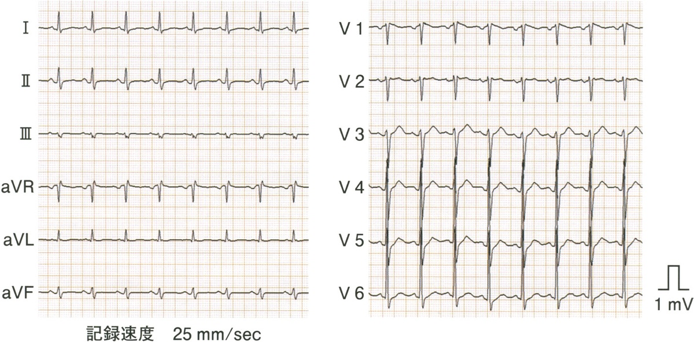
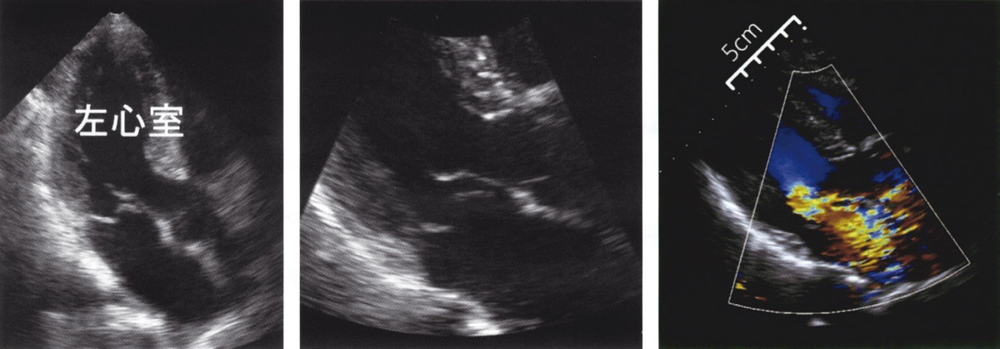
ａ 僧帽弁狭窄症
ｂ 肺動脈弁狭窄症
ｃ 大動脈弁狭窄症
ｄ 僧帽弁閉鎖不全症
ｅ 大動脈弁閉鎖不全症
✅
ｄ 僧帽弁閉鎖不全症（MR）
心尖部最強のLevine 4/6 汎収縮期雑音＋Ⅲ音＋肺うっ血、心エコーで僧帽弁後尖に断裂腱索（線維状の構造物）→急性の僧帽弁閉鎖不全症。
❤️ 急性MR——「代償する時間がなかった逆流」が肺水腫を作る
同じ重症MRでも、急性と慢性ではまるで別の病気に見える。分けているのは左房が拡がる時間があったかどうかである。急性MR——左房は小さく硬いままなので、逆流した血液が入ると左房圧が一気に跳ね上がり、そのまま肺静脈圧・肺毛細血管圧へ伝わって肺水腫になる。前方への拍出は減るので頻脈で代償し、進めば心原性ショックとなる。胸部エックス線では心陰影は正常大なのに肺うっ血だけが強いという不釣り合いが手がかりで、心拡大が起こる暇がなかったことを示す。本例の突然の呼吸困難・洞性頻脈108/分・Ⅲ音ギャロップ・両側下胸部のcoarse crackles・肺うっ血はすべてこれで説明できる。
慢性MR——左房が年単位でゆっくり拡大して圧を吸収するので長く無症状。左房拡大から心房細動を生み、左室も遠心性肥大で拡大する。
急性MRの原因は3つに絞られる：
①腱索断裂——僧帽弁逸脱症の経過中や特発性。健常者に突然起こる。本例
②乳頭筋断裂——心筋梗塞後2〜7日。後内側乳頭筋（単一血流支配）が断裂しやすい
③感染性心内膜炎——弁尖穿孔・腱索断裂。発熱・炎症反応・塞栓所見を伴う
急性MRでは雑音がむしろ小さく短い——左房圧が急上昇して収縮後期には左室との圧差が消えるためで、「雑音が小さい＝軽症」と読んではいけない。本例がLevine 4/6と大きめなのは、左房がまだある程度受け止められている（完全なショックには至っていない）段階だからと読める。
急性MRの心電図と胸部エックス線は「異常が乏しいこと」が所見になる——心電図は洞性頻脈のみで、ST上昇も異常Q波もない、胸部エックス線は心陰影が正常大なのに肺うっ血だけが強い。「肺水腫なのに心臓が大きくない」という不釣り合いは、代償する時間がなかったこと＝急性の発症を意味する。逆に慢性MRの増悪なら、心陰影は左室・左房ともに拡大している。
□ 選択肢の検討
| 選択肢 | 解説 |
|---|---|
| ａ 僧帽弁狭窄症 | 時相が違う。僧帽弁狭窄症〈MS〉の雑音は拡張期（心尖部の低調なランブル）で、本例のLevine 4/6 の「全収縮期雑音」とは合わない。MSではさらにⅠ音の亢進と開放音〈opening snap〉を伴うが、本文にあるのはⅢ音ギャロップである。Ⅲ音は拡張早期に大量の血液が急速に流れ込むときの音で、流入が妨げられるMSでは原理的に出ない——Ⅲ音があること自体がMSを否定している。加えてMSは年単位でゆっくり進む疾患で、「仕事中に突然」発症する形をとらない。MSでは左房が拡大して心房細動を伴うことが多いが、本例の心電図（A）は洞性頻脈である。 |
| ｂ 肺動脈弁狭窄症 | 部位が違う。肺動脈弁狭窄症〈PS〉の雑音は胸骨左縁第2肋間を最強点とする収縮期駆出性（菱形）雑音で、心尖部が最強点になることはない。右心系の雑音なので吸気で増強し、ⅡPの減弱・遅延を伴う。病態としても、PSは右室に圧負荷をかける疾患なので、うっ血が起きるとすれば頸静脈怒張・肝腫大・下腿浮腫という右心不全の形である——本例は頸静脈の怒張なし・肝脾を触知せず・下腿浮腫なしで右心系は無事、代わりに両側下胸部のcoarse cracklesと胸部エックス線の肺うっ血＝左心系の急性うっ血を示している。PSの大半は先天性で小児期に発見される点でも、59歳での突然発症とは相容れない。 |
| ｃ 大動脈弁狭窄症 | 雑音の形と随伴所見が合わない。大動脈弁狭窄症〈AS〉の雑音は右第2肋間胸骨右縁を最強点とする収縮期駆出性（菱形）雑音で、Ⅰ音との間に隙間があり、頸部へ放散する——本例の心尖部最強・全収縮期・Levine 4/6とは形も場所も違う。またASは圧負荷の疾患なので左室は求心性肥大で硬くなり、Ⅳ音は出てもⅢ音は出にくい。決定的なのは心エコーで左室駆出率75％・局所壁運動異常なしという記載で、重症ASなら長年の圧負荷による肥大所見が必ず書かれる。さらに僧帽弁後尖に線維状の構造物という所見は、異常が大動脈弁ではなく僧帽弁にあることを名指ししている。 |
| ◯ ｄ 僧帽弁閉鎖不全症 | これが正解。診断の根拠は3つがきれいに一致することにある： ①聴診——心尖部を最強点とするLevine 4/6の全収縮期雑音。汎収縮期雑音を作るのはMR・TR・VSDだけで、心尖部最強ならMR ②心エコー図（B）——カラードプラで左房内へ吹き上がる幅広いモザイク状の逆流ジェットが描出されている ③僧帽弁後尖に付着する線維状の構造物——断裂して左房内へ翻る腱索（flail leaflet）である 病態は急性の重症MRで、Ⅲ音ギャロップ・洞性頻脈108/分・両側下胸部のcoarse crackles・胸部エックス線の肺うっ血がその帰結である。左室駆出率75％という高値も矛盾しない——急性MRでは左室が低圧の左房へ「逃がす」ので後負荷が軽く、EFは見かけ上高く出る。むしろ急性MRでEFが正常なら、それは実質的な左室機能低下を意味する。 |
| ｅ 大動脈弁閉鎖不全症 | 時相が違う。大動脈弁閉鎖不全症〈AR〉の雑音はⅡ音直後から始まる拡張期漸減性雑音で、胸骨左縁第3肋間（Erbの領域）が最強点である。末梢所見も脈圧の開大・速脈〈水撃脈〉・Quincke徴候が並ぶはずだが、本例の血圧は134/86mmHg＝脈圧48mmHgと正常範囲である。急性ARであれば大動脈解離・感染性心内膜炎という原因が背景にあり、胸背部痛や発熱という手がかりが本文に置かれるはずだが、胸痛は自覚せず、体温36.5℃・白血球7,300である。心エコーの所見が僧帽弁後尖を名指ししている以上、大動脈弁の疾患は候補から外れる。 |
🔍 心エコーで「flail leaflet」を見る——線維状の構造物の正体
「僧帽弁後尖に線維状の構造物の付着」——この一文が本問の診断を確定させている。選択肢を分けるうえで、この構造物が何なのかを3つの候補で考えるのが実戦的である：①断裂した腱索——弁尖の先に糸のような索状物がぶら下がり、収縮期に左房内へ翻る（flail leaflet）。本例
②疣贅〈vegetation〉——感染性心内膜炎。塊状で弁尖の心房側に付着し、独立して揺れる。発熱・炎症反応・血液培養陽性を伴う
③腫瘤（乳頭状線維弾性腫・血栓）——まれ
本例は体温36.5℃・白血球7,300・CRPの記載なしで炎症の証拠がなく、感染性心内膜炎は支持されない。
腱索断裂のMRは「後尖」に多い——後尖が翻ると逆流ジェットは前方（大動脈弁側）へ偏るため、心尖部から胸骨左縁・大動脈弁領域へ向かう放散を示し、ASの雑音と紛らわしくなることがある。逆に前尖が翻ると逆流は後方（左房後壁側）へ向かい、背部へ放散する——ジェットの向きで放散方向が決まるという理屈である。
経胸壁心エコーで逆流の機序（どの弁尖が、どう壊れているか）まで詰めきれないときは経食道心エコー〈TEE〉を行う——左房は食道のすぐ前にあるので、TEEは僧帽弁と左房の観察に圧倒的に強い。手術で形成が可能かどうかの判断にも必須である。
急性MRのカテーテル所見も知識として持っておくと理解が深まる——肺動脈楔入圧の波形に巨大なv波が現れる。v波は収縮期に左房へ入ってくる血液が作る圧波で、硬い左房に大量の逆流が叩き込まれると異常に高くなる。同じ理屈で三尖弁閉鎖不全症では頸静脈に巨大v波が見える——右心系での同じ現象である。「巨大v波＝房室弁の逆流」と一般化して覚える。
🎯 国試ポイント
心尖部最強の全収縮期雑音＋Ⅲ音＋肺うっ血＝急性MR。突然発症・胸痛なし・トロポニン陰性・局所壁運動異常なしなら、心筋梗塞ではなく弁の破綻である。急性MRのEFは高く出る（低圧の左房へ逃がすので後負荷が軽い）。EF 75％は正常ではなく「これでようやく普通」という読み方をする。
Ⅲ音は「流入が多い」音——MSでは原理的に出ない。Ⅲ音の有無だけでMSを外せる。
汎収縮期＝MR・TR・VSD、心尖部最強＝MR。雑音の形と最強点の2語で弁膜症の設問は大半が解ける。
急性MRの原因は3つ——腱索断裂・乳頭筋断裂（心筋梗塞後2〜7日）・感染性心内膜炎。梗塞の証拠と発熱の有無で1つに絞る。
「僧帽弁に付着する線維状の構造物」＝断裂した腱索。発熱と炎症反応がなければ疣贅ではない。
心陰影は正常大なのに肺うっ血だけが強い——急性の左心系うっ血を示す組合せとして覚える。肺動脈楔入圧の巨大v波は急性MRの典型所見。TRでは頸静脈の巨大v波と対で押さえる。
Q.310(116F-66)★臨床65%
次の文を読み、309 ～311 の問いに答えよ。
59 歳の男性。呼吸困難のため救急車で搬入された。
現病歴：仕事中に突然の息苦しさが出現した。胸痛は自覚しなかった。早めに帰宅し自宅で安静にしていたが、症状が持続するため救急車を要請した。
既往歴：高血圧症を指摘されたことがあるが、投薬治療は受けていない。
生活歴：職業は銀行員。喫煙歴はない。飲酒は機会飲酒。
家族歴：特記すべきことはない。
現 症：意識は清明。顔貌はやや苦悶様。身長167cm、体重58kg。体温36.5 ℃。心拍数108/ 分、整。血圧134/86mmHg。呼吸数20/ 分。SpO2 99％（マスク5L/ 分酸素投与下）。眼瞼結膜と眼球結膜に異常を認めない。頸静脈の怒張を認めない。心音はⅢ音ギャロップを呈しており、心尖部を最強点とするLevine 4/6 の全収縮期雑音を聴取する。呼吸音は両側の下胸部にcoarse crackles を聴取する。腹部は平坦、軟で、肝・脾を触知しない。下腿に浮腫を認めない。
検査所見：血液所見：赤血球442 万、Hb 13.8g/dL、Ht 42％、白血球7,300、血小板20 万、血液生化学所見：LD 218U/L（基準120 ～245）、CK 70U/L（基準30 ～140）、尿素窒素19mg/dL、クレアチニン0.8mg/dL、血糖158mg/dL。心筋トロポニンT 迅速検査陰性。胸部エックス線写真で肺うっ血を認めた。心電図（A）と心エコー図（B）とを示す。心エコー検査では左室駆出率は75％で、局所壁運動異常は認めず、僧帽弁後尖に線維状の構造物の付着を認めた。
この患者に出現した弁膜症の原因として最も考えられるのはどれか。
59 歳の男性。呼吸困難のため救急車で搬入された。
現病歴：仕事中に突然の息苦しさが出現した。胸痛は自覚しなかった。早めに帰宅し自宅で安静にしていたが、症状が持続するため救急車を要請した。
既往歴：高血圧症を指摘されたことがあるが、投薬治療は受けていない。
生活歴：職業は銀行員。喫煙歴はない。飲酒は機会飲酒。
家族歴：特記すべきことはない。
現 症：意識は清明。顔貌はやや苦悶様。身長167cm、体重58kg。体温36.5 ℃。心拍数108/ 分、整。血圧134/86mmHg。呼吸数20/ 分。SpO2 99％（マスク5L/ 分酸素投与下）。眼瞼結膜と眼球結膜に異常を認めない。頸静脈の怒張を認めない。心音はⅢ音ギャロップを呈しており、心尖部を最強点とするLevine 4/6 の全収縮期雑音を聴取する。呼吸音は両側の下胸部にcoarse crackles を聴取する。腹部は平坦、軟で、肝・脾を触知しない。下腿に浮腫を認めない。
検査所見：血液所見：赤血球442 万、Hb 13.8g/dL、Ht 42％、白血球7,300、血小板20 万、血液生化学所見：LD 218U/L（基準120 ～245）、CK 70U/L（基準30 ～140）、尿素窒素19mg/dL、クレアチニン0.8mg/dL、血糖158mg/dL。心筋トロポニンT 迅速検査陰性。胸部エックス線写真で肺うっ血を認めた。心電図（A）と心エコー図（B）とを示す。心エコー検査では左室駆出率は75％で、局所壁運動異常は認めず、僧帽弁後尖に線維状の構造物の付着を認めた。
この患者に出現した弁膜症の原因として最も考えられるのはどれか。
ａ 腱索断裂
ｂ 乳頭筋断裂
ｃ 動脈硬化症
ｄ Marfan 症候群
ｅ 感染性心内膜炎
✅
ａ 腱索断裂
胸痛なし・トロポニン陰性・局所壁運動異常なし（＝乳頭筋断裂を否定）、発熱も炎症反応もなし（＝感染性心内膜炎を否定）で、僧帽弁後尖に索状の可動性構造物→腱索断裂。
❤️ 腱索断裂——僧帽弁装置の「吊り糸」が切れる
僧帽弁は弁尖・弁輪・腱索・乳頭筋・左室壁の5つが協調して閉じる装置で、どれが壊れてもMRになる。腱索は弁尖を下から吊る糸で、収縮期に弁尖が左房側へめくれ返らないよう引き留めている——これが切れるとその部分の弁尖が左房内へ翻り（flail leaflet）、閉鎖線に大きな隙間ができて重症MRになる。切れる背景：
①粘液腫様変性（僧帽弁逸脱症〈MVP〉）——最も多い。弁尖と腱索が伸びて脆くなっているところに突然の断裂が起こる
②加齢変化・特発性——健康な中高年に誘因なく起こる
③感染性心内膜炎——炎症が腱索を溶かす。発熱を伴う
④外傷・リウマチ性
後尖の腱索が切れることが多い——後尖は前尖より小さく、支える腱索が細いためである。後尖が翻ると逆流ジェットは前方（大動脈弁側）へ偏り、雑音が胸骨左縁や心基部へ放散してASと紛らわしくなることがある。
臨床像は「急性重症MR」そのもの——突然の呼吸困難・起坐呼吸・頻脈・Ⅲ音・湿性ラ音・肺水腫で発症し、心拡大はまだない。心電図は洞性頻脈のみで非特異的、トロポニンは陰性——「肺水腫なのに心電図も心筋逸脱酵素も正常」なら弁の急性破綻を疑う。
治療は原則として早期の外科手術で、翻った弁尖を切除・縫縮し、人工腱索を用いて修復する弁形成術が第一選択である——器質性MRの中でも後尖の限局した逸脱・断裂は形成術の成功率がとくに高い。
□ 選択肢の検討
| 選択肢 | 解説 |
|---|---|
| ◯ ａ 腱索断裂 | これが正解。本例を腱索断裂と決めるのは、「他の4つが積極的に否定される」という消去の筋道である： ①突然発症で、その直前まで健康だった——腱索は粘液腫様変性のある弁（僧帽弁逸脱症）や加齢変化のある弁で、誘因なく突然切れる ②心筋梗塞の証拠がない——胸痛なし・心筋トロポニンT陰性・CK 70U/L・局所壁運動異常なし。乳頭筋断裂は必ず梗塞を伴うので、これで外れる ③感染の証拠がない——体温36.5℃・白血球7,300 ④心エコーで僧帽弁後尖に線維状の構造物——切れて左房内へ翻る腱索そのもの。弁尖に載る塊状の疣贅とは形が違う 腱索断裂は急性MRの最も代表的な原因で、左房が代償できないまま左房圧が跳ね上がり、いきなり肺水腫とショックになる。好発は後尖の腱索で、翻った弁尖（flail leaflet）は外科的に切除・縫縮して形成術で修復できることが多い。 |
| ｂ 乳頭筋断裂 | 心筋梗塞の証拠がない。乳頭筋断裂は急性心筋梗塞の機械的合併症で、発症2〜7日目に起こる——本例は「胸痛は自覚しなかった」と明記され、心筋トロポニンT迅速検査陰性・CK 70U/L（基準30〜140）・心電図（A）にST上昇も異常Q波もなく、心エコーで局所壁運動異常も認めない。この4つが並んでいるのは、出題者が乳頭筋断裂を確実に否定するために置いた記載である。解剖の知識として、後内側乳頭筋は右冠動脈（または回旋枝）からの単一血流支配のため前外側乳頭筋（左前下行枝と回旋枝の二重支配）より断裂しやすい。臨床像は本例とよく似た急性重症MR＋肺水腫＋ショックだが、背景に必ず梗塞がある点で決定的に異なる。 |
| ｃ 動脈硬化症 | 機序として結びつかない。動脈硬化症が直接引き起こす弁膜症は加齢性の石灰化による大動脈弁狭窄症〈AS〉であって、僧帽弁の腱索を切ることはない。僧帽弁輪の石灰化〈MAC〉が高齢者に見られることはあるが、これが急性の重症MRを作ることはまれである。動脈硬化がMRに関わるとすれば冠動脈疾患を介した虚血性MR（乳頭筋機能不全）だが、それは慢性に進行する機能性MRで、本例のように突然発症する形をとらない。本例は喫煙歴なし・59歳・トロポニン陰性・壁運動異常なしで、虚血性の関与を示す所見が1つもない。「動脈硬化」は多くの循環器疾患の背景になるが、この設問では機序を説明できない。 |
| ｄ Marfan 症候群 | 身体的特徴と家族歴が合わない。Marfan症候群はフィブリリン1遺伝子〈FBN1〉の異常による常染色体顕性遺伝の結合組織疾患で、高身長・細く長い四肢・クモ指〈arachnodactyly〉・側弯・漏斗胸・高口蓋・水晶体亜脱臼を伴う——本例は身長167cm・体重58kgと平均的で、家族歴も「特記すべきことはない」と明記されている。Marfan症候群の心血管合併症で最も重要なのは大動脈基部拡張による大動脈弁閉鎖不全症〈AR〉と大動脈解離であり、MRよりARが前面に出る。ただし僧帽弁逸脱症を高率に合併し、そこから腱索断裂を起こすことはある——「Marfanだから違う」のではなく「Marfanを示す所見が1つもない」から違うと考えるのが正しい。 |
| ｅ 感染性心内膜炎 | 感染の証拠がない。感染性心内膜炎〈IE〉は弁尖穿孔・腱索断裂・疣贅による閉鎖障害で急性MRを起こすので、機序としては十分ありうる——だからこそ最も紛らわしい選択肢である。しかし本例にはIEを支持する所見が1つもない：体温36.5℃（発熱なし）、白血球7,300（正常）、眼瞼結膜・眼球結膜に異常なし（点状出血なし）、脾を触知しない、Osler結節やJaneway病変の記載なし。IEは「発熱＋新規の心雑音」が診断の入り口で、発熱がない時点で入り口に立てない。心エコー所見も「線維状の構造物」＝索状であって、疣贅の典型である「弁尖に載る塊状で可動性のある腫瘤」とは記載が異なる。 |
🔍 疣贅か、切れた腱索か——急性MRの「その先」を分ける
急性MRを見たら、原因を3つに絞って1つずつ潰すのが定型の思考である。それぞれに決め手となる検査所見があり、治療がまったく違うので取り違えられない：①乳頭筋断裂——決め手は心筋梗塞の証拠（胸痛・心電図変化・トロポニン上昇・局所壁運動異常）。心筋梗塞後2〜7日という時間軸も重要。治療は緊急手術＋冠血行再建
②感染性心内膜炎——決め手は発熱・炎症反応・血液培養陽性・疣贅。塞栓所見（点状出血・Osler結節・Janeway病変・脾腫）も探す。治療は長期の抗菌薬＋状況により手術。抗菌薬開始前に血液培養3セットが鉄則
③腱索断裂——上の2つが否定され、心エコーで索状の可動性構造物とflail leafletが見えたとき。治療は早期の弁形成術
本例は①を4つの記載（胸痛なし・トロポニン陰性・CK正常・壁運動異常なし）で、②を4つの記載（体温正常・白血球正常・結膜異常なし・脾を触知せず）で、それぞれ丁寧に否定してある——否定の記載が並んでいるときは、出題者が消去法を要求していると読む。
心室中隔穿孔も心筋梗塞後の急性の血行動態破綻として鑑別に挙がる——こちらは胸骨左縁第4肋間の粗い全収縮期雑音でthrillを触れ、右心カテーテルで右室レベルの酸素飽和度ステップアップが決め手になる。心尖部最強ならMR、胸骨左縁最強でthrillなら心室中隔穿孔——最強点で分ける。
僧帽弁逸脱症〈MVP〉は腱索断裂の最大の背景なので、対で理解しておく：粘液腫様変性で弁尖が厚く伸び、収縮期に左房側へ突出する。聴診は収縮中期クリック＋後収縮期雑音で、立位やValsalva手技（前負荷を減らす操作）でクリックが早く出て雑音が長くなる。多くは無害だが、腱索断裂・重症MR・感染性心内膜炎・不整脈を合併しうる。Marfan症候群やEhlers-Danlos症候群など結合組織疾患に高率に合併する。
🎯 国試ポイント
突然の肺水腫＋心尖部の全収縮期雑音＋トロポニン陰性＋壁運動異常なし＝腱索断裂による急性MR。乳頭筋断裂は「心筋梗塞後2〜7日」が絶対条件。梗塞の証拠がなければ選ばない。後内側乳頭筋（単一血流支配）が断裂しやすいという解剖もセットで問われる。
感染性心内膜炎は「発熱＋新規心雑音」が入り口。体温正常・白血球正常なら入り口に立てない。
Marfan症候群は高身長・クモ指・水晶体亜脱臼・家族歴と大動脈基部拡張によるARで想起する。身長167cm・家族歴なしでは支持されない。
「僧帽弁に付着する線維状の構造物」＝切れた腱索／「弁尖に載る可動性の塊状物」＝疣贅。形の記載で読み分ける。
腱索断裂は後尖に多い（後尖を支える腱索が細い）。治療は早期の弁形成術。否定の記載が並ぶ設問は消去法の指示——本問は乳頭筋断裂を4つ、感染性心内膜炎を4つの記載で潰してある。
Q.311(116F-67)★臨床2択46%
次の文を読み、309 ～311 の問いに答えよ。
59 歳の男性。呼吸困難のため救急車で搬入された。
現病歴：仕事中に突然の息苦しさが出現した。胸痛は自覚しなかった。早めに帰宅し自宅で安静にしていたが、症状が持続するため救急車を要請した。
既往歴：高血圧症を指摘されたことがあるが、投薬治療は受けていない。
生活歴：職業は銀行員。喫煙歴はない。飲酒は機会飲酒。
家族歴：特記すべきことはない。
現 症：意識は清明。顔貌はやや苦悶様。身長167cm、体重58kg。体温36.5 ℃。心拍数108/ 分、整。血圧134/86mmHg。呼吸数20/ 分。SpO2 99％（マスク5L/ 分酸素投与下）。眼瞼結膜と眼球結膜に異常を認めない。頸静脈の怒張を認めない。心音はⅢ音ギャロップを呈しており、心尖部を最強点とするLevine 4/6 の全収縮期雑音を聴取する。呼吸音は両側の下胸部にcoarse crackles を聴取する。腹部は平坦、軟で、肝・脾を触知しない。下腿に浮腫を認めない。
検査所見：血液所見：赤血球442 万、Hb 13.8g/dL、Ht 42％、白血球7,300、血小板20 万、血液生化学所見：LD 218U/L（基準120 ～245）、CK 70U/L（基準30 ～140）、尿素窒素19mg/dL、クレアチニン0.8mg/dL、血糖158mg/dL。心筋トロポニンT 迅速検査陰性。胸部エックス線写真で肺うっ血を認めた。心電図（A）と心エコー図（B）とを示す。心エコー検査では左室駆出率は75％で、局所壁運動異常は認めず、僧帽弁後尖に線維状の構造物の付着を認めた。
弁膜症に対する緊急手術を行うこととなった。
手術までの治療として血行動態の改善が期待できるものはどれか。2 つ選べ。
59 歳の男性。呼吸困難のため救急車で搬入された。
現病歴：仕事中に突然の息苦しさが出現した。胸痛は自覚しなかった。早めに帰宅し自宅で安静にしていたが、症状が持続するため救急車を要請した。
既往歴：高血圧症を指摘されたことがあるが、投薬治療は受けていない。
生活歴：職業は銀行員。喫煙歴はない。飲酒は機会飲酒。
家族歴：特記すべきことはない。
現 症：意識は清明。顔貌はやや苦悶様。身長167cm、体重58kg。体温36.5 ℃。心拍数108/ 分、整。血圧134/86mmHg。呼吸数20/ 分。SpO2 99％（マスク5L/ 分酸素投与下）。眼瞼結膜と眼球結膜に異常を認めない。頸静脈の怒張を認めない。心音はⅢ音ギャロップを呈しており、心尖部を最強点とするLevine 4/6 の全収縮期雑音を聴取する。呼吸音は両側の下胸部にcoarse crackles を聴取する。腹部は平坦、軟で、肝・脾を触知しない。下腿に浮腫を認めない。
検査所見：血液所見：赤血球442 万、Hb 13.8g/dL、Ht 42％、白血球7,300、血小板20 万、血液生化学所見：LD 218U/L（基準120 ～245）、CK 70U/L（基準30 ～140）、尿素窒素19mg/dL、クレアチニン0.8mg/dL、血糖158mg/dL。心筋トロポニンT 迅速検査陰性。胸部エックス線写真で肺うっ血を認めた。心電図（A）と心エコー図（B）とを示す。心エコー検査では左室駆出率は75％で、局所壁運動異常は認めず、僧帽弁後尖に線維状の構造物の付着を認めた。
弁膜症に対する緊急手術を行うこととなった。
手術までの治療として血行動態の改善が期待できるものはどれか。2 つ選べ。
ａ β遮断薬投与
ｂ 血管拡張薬投与
ｃ ジギタリス投与
ｄ 体外式ペースメーカー留置
ｅ 大動脈内バルーンパンピング〈IABP〉挿入
✅
ｂ 血管拡張薬投与 ＋ ｅ 大動脈内バルーンパンピング（IABP）挿入
急性重症MR→後負荷↓で前向き拍出↑→血管拡張薬+IABPで血行動態改善。
❤️ 急性重症MRの内科治療——「後負荷を下げて、前へ流す」
急性重症MRで起きていることは「左室が押し出した血液の相当部分が、低圧の左房へ逆戻りしている」という一事に尽きる。左室から見ると出口は2つあり、大動脈（高圧・抵抗が大きい）と左房（低圧・抵抗が小さい）である——血液は抵抗の小さいほうへ流れるので、体血管抵抗が高いほど逆流が増え、前向き拍出量が減る。したがって治療の原則は「後負荷を下げて、前へ流す」の一言になる：
①血管拡張薬——ニトロプルシド・ニカルジピン。体血管抵抗を下げて逆流率を減らす。血圧が保たれていることが条件
②IABP——収縮期の後負荷を機械的に下げ、同時に拡張期の冠灌流を増やす。血圧を下げずに済むので低血圧例でも使える
③利尿薬・硝酸薬——肺うっ血の軽減。ただし前負荷を下げすぎると拍出量が落ちるので慎重に
④酸素・非侵襲的陽圧換気〈NPPV〉——肺水腫の呼吸仕事量を減らし、胸腔内圧を上げて静脈還流と後負荷を同時に軽くする
やってはいけないことも対で覚える：β遮断薬の新規開始（代償性頻脈を潰す）、昇圧薬による安易な血管収縮（後負荷が上がって逆流が増える）。
そしてこれらはすべて時間稼ぎであり、根治は外科手術である——急性重症MRの内科治療単独の予後は悪く、血行動態が破綻していれば緊急手術となる。本例が「弁膜症に対する緊急手術を行うこととなった。手術までの治療として」と限定しているのは、この橋渡しの発想を問うためである。
□ 選択肢の検討
| 選択肢 | 解説 |
|---|---|
| ａ β遮断薬投与 | かえって悪化させうる。β遮断薬は陰性変力作用（収縮力を落とす）と陰性変時作用（心拍数を落とす）を持つ——急性重症MRでは頻脈108/分そのものが、減った前方拍出量を回数で補うための代償なので、これを止めると心拍出量がさらに落ちる。また心拍数を落とすと拡張期が延びる一方で、収縮期の1拍あたりの逆流量はむしろ増える。β遮断薬が有用なのは慢性の心不全（HFrEF）を安定期に長期投与するときや心房細動のレートコントロールであって、急性期の血行動態破綻の場では原則として使わない。「急性非代償性心不全に、いま新たにβ遮断薬を始めてはいけない」——心不全治療の基本原則である。 |
| ◯ ｂ 血管拡張薬投与 | これが正解の1つ。急性MRの血行動態は「左室が押し出した血液が、大動脈と左房に分かれて流れる」という構図で理解する——どちらへ多く流れるかは、それぞれの抵抗（後負荷）の比で決まる。血管拡張薬で体血管抵抗＝大動脈側の抵抗を下げれば、血液は大動脈側へ流れやすくなり、逆流量が減って前向き拍出量が増える。具体的にはニトロプルシド・ニカルジピン・ニトログリセリンなどを用い、肺うっ血も同時に軽くなる。注意点は血圧が保たれていることが前提である点で、すでにショックに陥っている場合は血管拡張薬だけでは血圧が維持できない——本例は血圧134/86mmHgと保たれているので使える。これはARの急性期にも共通する考え方で、「逆流性弁膜症は後負荷を下げる」と1本にまとめて覚えられる。 |
| ｃ ジギタリス投与 | この場面では効果が乏しい。ジギタリスの主な役割は心房細動の心拍数調節と慢性心不全での症状軽減であり、本例は洞調律（心電図Aは洞性頻脈）なのでレートコントロールの対象がない。陽性変力作用はあるが弱く、効果発現も遅いため、数時間単位で血行動態を立て直さなければならない急性期には向かない。そもそも急性MRで問題なのは収縮力ではなく「逆流という漏れ」である——EF 75％と収縮力はむしろ過剰なくらいで、強心薬を足しても漏れの割合は変わらない。治療の狙いは「収縮を強めること」ではなく「漏れる側の抵抗を上げず、出ていく側の抵抗を下げること」にある。 |
| ｄ 体外式ペースメーカー留置 | 適応がない。体外式ペースメーカーが必要なのは徐脈性不整脈（完全房室ブロック・洞不全症候群）で血行動態が破綻しているときである——本例は心拍数108/分、整で頻脈であり、ペーシングで補うべき徐脈は存在しない。心電図（A）も洞性頻脈で、房室ブロックを示す所見はない。むしろ不要なリード挿入は感染・穿孔・出血のリスクを加えるだけで、緊急手術を控えた患者に負わせる理由がない。「何かしなければ」という焦りから病態と無関係のデバイスを足すのは、急性期でもっとも避けたい判断である。 |
| ◯ ｅ 大動脈内バルーンパンピング〈IABP〉挿入 | これが正解の1つ。大動脈内バルーンパンピング〈IABP〉は下行大動脈に置いたバルーンを、拡張期に膨らませ収縮期直前にしぼませる装置である。効果は2つ： ①拡張期圧の増強〈diastolic augmentation〉——拡張期に膨らむことで大動脈拡張期圧が上がり、冠動脈への血流が増える ②収縮期の後負荷軽減〈systolic unloading〉——収縮直前にしぼむことで左室が押し出す先の圧が下がり、前向き拍出量が増えて逆流量が減る 急性MRで効くのは主に②で、薬剤性の血管拡張と同じ方向の作用を、血圧を下げずに得られる点が決定的な利点である。だから血圧が低くて血管拡張薬を使いにくい症例ほどIABPの価値が上がる——手術室へ運ぶまでの橋渡し〈bridge to surgery〉として標準的に用いられる。⚠️ IABPは大動脈弁閉鎖不全症〈AR〉では禁忌——拡張期に大動脈圧を上げると逆流が増えるからで、MRとARで正反対になる点が問われる。 |
🔍 IABPを「どこで使い、どこで使わないか」
IABPの効果は心周期に合わせた2つの動作で説明できる：拡張期に膨らむ→大動脈拡張期圧が上がる→冠動脈血流が増える（拡張期圧増強）
収縮直前にしぼむ→大動脈圧が下がる→左室が押し出しやすくなる（後負荷軽減）
得られるのは心拍出量のおよそ10〜20％の上乗せで、それ自体は大きくない——「循環を代替する装置ではなく、支える装置」と理解しておく。
主な適応：①心原性ショック（内科治療に反応しないもの）、②急性心筋梗塞の機械的合併症（乳頭筋断裂による急性MR・心室中隔穿孔）、③難治性の不安定狭心症、④高リスク症例の手術・PCIの周術期支援。
禁忌——ここが最も問われる：
①中等度以上の大動脈弁閉鎖不全症〈AR〉——拡張期に大動脈圧を上げると逆流が増え、左室がさらに膨れる
②大動脈解離・大動脈瘤——バルーンが偽腔へ入る、破裂を助長する
③高度の腸骨・大腿動脈の閉塞性病変——挿入路がとれず下肢虚血を起こす
合併症は下肢虚血・血小板減少・溶血・大動脈損傷・バルーン位置異常による腎動脈や左鎖骨下動脈の閉塞。
より強い補助が必要なら経皮的心肺補助〈PCPS／VA-ECMO〉や補助人工心臓〈IMPELLA・VAD〉へ進むが、いずれも「根治までの橋渡し」という位置づけは変わらない。
注意すべきはVA-ECMOは後負荷をむしろ上げる点である——大腿動脈から逆行性に血液を送り返すので、左室が押し出す先の圧が上がり、左室の負担が増える。そのためECMO単独では左室が拡張して肺水腫が悪化しうるので、IABPやIMPELLAを併用して左室を減圧〈LV venting〉することがある。「IABPは後負荷を下げる／ECMOは上げる」という向きの違いが、この2つを併用する理由である。
🎯 国試ポイント
急性重症MRの橋渡し治療＝血管拡張薬＋IABP。合言葉は「後負荷を下げて、前へ流す」。IABPはARで禁忌——拡張期に大動脈圧を上げる装置だからと理由ごと覚える。MRでは有効、ARでは禁忌という対比で出題される。
急性非代償性心不全にβ遮断薬を新規開始しない。頻脈は代償であって、潰すべき敵ではない。
ジギタリスは心房細動のレートコントロールが主役。洞調律の急性期には出番がない。
体外式ペースメーカーは徐脈のための道具。心拍数108/分の患者に選ぶ理由はない。
正答率46％という難問だが、「逆流を減らすには、どちらの出口の抵抗を下げればよいか」という1つの理屈だけで2肢とも選べる。
IABPの2作用＝拡張期圧増強（冠灌流↑）と収縮期の後負荷軽減（前向き拍出↑）。禁忌はAR・大動脈解離・高度の腸骨大腿動脈病変の3つ。
Q.312(115B-19)★必修CBT一般73%
左室にかかる前負荷が低下するのはどれか。
ａ 僧帽弁狭窄症
ｂ 大動脈弁狭窄症
ｃ 三尖弁閉鎖不全症
ｄ 僧帽弁閉鎖不全症
ｅ 大動脈弁閉鎖不全症
✅
ａ 僧帽弁狭窄症
前負荷＝左室拡張末期容積。僧帽弁狭窄症は左房から左室への流入そのものが妨げられるので左室の前負荷は低下する（MR・AR・TRは前負荷増大、ASは後負荷増大）。
❤️ 前負荷・後負荷——弁膜症を4つの型に整理する
前負荷＝収縮直前に心室が受けている伸展。実務上は左室拡張末期容積〈LVEDV〉、指標としては左室拡張末期圧・肺動脈楔入圧・中心静脈圧で代用する。後負荷＝心室が血液を押し出すときに抗う負荷。実務上は体血管抵抗・大動脈圧・（狭窄があれば）弁の圧較差である。Frank-Starlingの法則——前負荷が増えると心筋は引き伸ばされ、収縮力が増して1回拍出量が増える。ただし引き伸ばしすぎると曲線は頭打ちになり、やがて下降する——これが心不全の状態である。
弁膜症は4つの型に分けられる：
①入口の狭窄（MS・TS）——その先の心室の前負荷が低下。心室は小さいまま。手前の心房と静脈系にうっ血
②出口の狭窄（AS・PS）——後負荷（圧負荷）が増大。求心性肥大で壁が厚くなる
③入口の逆流（MR・TR）——その心室と手前の心房の両方に容量負荷。心室は遠心性肥大で拡大
④出口の逆流（AR・PR）——心室に容量負荷＋圧負荷。最も大きく拡大する
この表を持っていれば、「前負荷が下がるのは？」「後負荷が上がるのは？」「求心性肥大はどれ？」「遠心性肥大はどれ？」という設問はすべて同じ1枚で解ける。
臨床的な補足として、前負荷を下げる操作は利尿薬・硝酸薬・立位・Valsalva手技、後負荷を下げる操作は血管拡張薬・IABP・ACE阻害薬である——MSでは前負荷を下げすぎると拍出量が落ちる、逆流性弁膜症では後負荷を下げると前向き拍出が増えると、治療も同じ枠組みで説明できる。
□ 選択肢の検討
| 選択肢 | 解説 |
|---|---|
| ◯ ａ 僧帽弁狭窄症 | これが正解。前負荷とは、心室が収縮を始める直前に受けている伸展の度合い＝実質的には左室拡張末期容積〈LVEDV〉である。僧帽弁狭窄症〈MS〉では左房から左室への入口そのものが狭くなるので、拡張期に左室へ入ってこられる血液量が減り、左室の前負荷は低下する。この結果、左室は小さいまま（あるいは正常大）にとどまり、心拍出量は低下する——MSは「左室の病気ではなく、左室の手前で詰まる病気」だと理解すると、他の弁膜症と一線を画すことがわかる。行き場を失った血液は左房→肺静脈→肺毛細血管と後ろへ溜まり、労作時呼吸困難・起坐呼吸・血痰・肺高血圧・右心不全を順に生む。拡大するのは左房で、心房細動と左房内血栓、そして脳塞栓症へ連なる。同じ理屈で三尖弁狭窄症〈TS〉は右室の前負荷を下げる——「房室弁の狭窄は、その先の心室の前負荷を下げる」と一般化できる。 |
| ｂ 大動脈弁狭窄症 | 増えるのは前負荷ではなく後負荷である。大動脈弁狭窄症〈AS〉は左室の出口が狭いので、左室は高い圧を発生しなければならない＝後負荷（圧負荷）の増大である。左室は求心性肥大で応え、壁が厚く内腔はむしろ小さくなる。前負荷はどうなるか——初期は正常、進行して拡張障害と心不全が加わると左室拡張末期圧が上がり、前負荷はむしろ増える方向に動く。いずれにせよ「低下する」ことはないので、本設問の答えにはならない。なお硬くなった左室は心房収縮による充満に強く依存するため、ASでⅣ音が聴かれ、心房細動になると急に悪化する——前負荷を作る仕組みそのものが失われるからである。 |
| ｃ 三尖弁閉鎖不全症 | 影響するのは右心系であり、しかも間接的である。三尖弁閉鎖不全症〈TR〉では収縮期に右室から右房へ逆流するので、容量負荷がかかるのは右房と右室——右室の前負荷が増える。臨床像も頸静脈の巨大v波・拍動性肝腫大・下腿浮腫・腹水という右心不全である。厳密にいえば、高度なTRでは右室から肺へ送られる血液が減り、その結果として左房への還流も減って左室前負荷が下がる——しかしこれは右心不全を介した二次的な帰結であって、「左室への流入が直接妨げられる」MSとは因果の階層が違う。設問が問うているのは左室の前負荷を直接規定する病態であり、房室弁の狭窄という機序を持つMSが一意の答えになる。 |
| ｄ 僧帽弁閉鎖不全症 | 前負荷は増大する。僧帽弁閉鎖不全症〈MR〉では収縮期に左房へ逃げた血液が、次の拡張期に肺静脈からの血液と一緒に左室へ戻ってくる——つまり左室は毎拍、正規の量に逆流量を上乗せして受け取る＝容量負荷（前負荷の増大）である。左室は遠心性肥大（内腔が拡がる肥大）で応え、左室拡張末期径は次第に大きくなる。一方で後負荷は低圧の左房という逃げ道があるぶん軽いので、EFは見かけ上よく保たれる——だからMRの手術適応ではEF≦60％という高めの閾値を使う。「逆流性弁膜症＝容量負荷＝前負荷増大」、「狭窄性弁膜症＝圧負荷（出口）または流入制限（入口）」と2つに整理すると、この種の設問は機械的に解ける。 |
| ｅ 大動脈弁閉鎖不全症 | 前負荷は最も大きく増大する。大動脈弁閉鎖不全症〈AR〉では拡張期に大動脈から左室へ血液が逆流するので、左室は肺静脈から来る正規の血液に加えて逆流分を受け取る＝著明な容量負荷となる。しかもARは収縮期にその全部を押し出さねばならない＝圧負荷も同時にかかる唯一の弁膜症で、左室は心臓の中で最も大きくなる（cor bovinum＝牛心）。結果として1回拍出量が増えて収縮期圧が上がり、拡張期に血液が抜けて拡張期圧が下がる＝脈圧の開大が生じる。これが速脈〈水撃脈〉・Quincke徴候・de Musset徴候という末梢の派手な所見を生む。前負荷が「低下する」病態を選ぶ設問で、ARは最も遠い選択肢である。 |
🔍 僧帽弁狭窄症〈MS〉——「左房の病気」として理解する
MSの本質は「左室は無事なのに、その手前で詰まる」ことにある。原因の大半はリウマチ性で、A群β溶血性連鎖球菌感染後のリウマチ熱から10〜20年かけて弁尖の肥厚・交連の癒合・腱索の短縮が進む。日本では激減したが、高齢者や海外出生者では今も見る。まれな原因として僧帽弁輪石灰化・先天性・カルチノイドがある。血行動態の連鎖を1本で追う：
弁口面積の減少（正常4〜6cm2／重症は1.5cm2未満）→左房圧上昇→左房拡大→肺静脈圧・肺毛細血管圧上昇→労作時呼吸困難・起坐呼吸・血痰→肺高血圧→右心不全（頸静脈怒張・肝腫大・浮腫）
一方で左室は前負荷不足のままなので、心拍出量は低下し、易疲労感が出る。
MSで最も怖いのは心房細動である——①拡張期が短くなって左房から左室への流入時間が減り、急激に肺うっ血が悪化する、②左房内に血栓ができ、脳塞栓症を起こす。だからリウマチ性MSに合併した心房細動は「弁膜症性心房細動」と呼ばれ、DOACではなくワルファリンが適応となる。
聴診の3徴はⅠ音亢進・開放音〈opening snap〉・心尖部の拡張中期低調ランブル（＋前収縮期増強）。Ⅱ音からOSまでの間隔が短いほど重症（左房圧が高く早く弁が開く）、心房細動になると前収縮期増強は消える。
治療は①レートコントロールと抗凝固 ②経皮的僧帽弁交連切開術〈PTMC〉 ③弁置換術——PTMCは弁の石灰化が軽く、MRの合併がなく、左房内血栓がない症例に適する。
MSの胸部エックス線も特徴的で、左房拡大の所見が4つそろう：①右第2弓の二重陰影（double contour）、②左第3弓（左心耳）の突出＝左第4弓との間のくびれが消えて心陰影が直線化する、③気管分岐角の開大、④食道造影での左房による圧排。加えて肺うっ血・Kerley B線・上肺野への血流再分布が出るが、左室は拡大しない。この「左房は大きいのに左室は普通」という組合せがMSの指紋である。
🎯 国試ポイント
左室の前負荷が低下する＝僧帽弁狭窄症。「入口が詰まれば、その先の心室には入ってこない」という一行で決まる。4つの型で整理する：入口の狭窄（MS・TS）＝前負荷低下／出口の狭窄（AS・PS）＝後負荷増大・求心性肥大／入口の逆流（MR・TR）＝容量負荷・遠心性肥大／出口の逆流（AR・PR）＝容量負荷＋圧負荷で最大の拡大。
MSで拡大するのは左房であって左室ではない——左室が小さいままなのがMSの特徴である。
MSの3徴＝Ⅰ音亢進・開放音・拡張中期ランブル。Ⅱ音からOSまでが短いほど重症。
リウマチ性MS＋心房細動＝弁膜症性心房細動で、抗凝固はワルファリン（DOACは不可）——次問（Q.313）と地続きの知識である。
MSの胸部エックス線＝右第2弓の二重陰影・左第3弓の突出・気管分岐角の開大（すべて左房拡大）。左室は拡大しない。MSで前負荷を下げすぎない——利尿薬をかけすぎると心拍出量が落ちる。
Q.313(115F-47)★臨床95%
53 歳の男性。心房細動に対するアブレーション治療を目的として入院した。40 歳時に僧帽弁狭窄症に対して機械弁置換術が行われワルファリンが開始となった。48 歳時から高血圧症、糖尿病に対して薬物療法が行われている。5 か月前に突然動悸を自覚し、定期的に通院している診療所で心房細動と診断された。その後も月に数回、3 ～5 日程度持続する動悸発作が出現した。3 か月前および1 か月前の外来受診時の心電図でも心房細動が確認されたため、カテーテルアブレーション目的に紹介され入院となった。入院時は心房細動調律であった。入院2 日目に行ったカテーテルアブレーションで洞調律に復帰し、入院6 日目に退院となった。
退院後のワルファリン治療について正しいのはどれか。
退院後のワルファリン治療について正しいのはどれか。
ａ 継続して行う。
ｂ アスピリンに変更する。
ｃ 動悸出現時に頓服する。
ｄ ビタミンK 製剤と併用する。
ｅ 直接経口抗凝固薬［direct oral anticoagulant〈DOAC〉］に変更する。
✅
ａ 継続して行う
弁膜症性Af（機械弁・リウマチ性MS）はワルファリンが唯一の適応→DOACに変更不可・継続必須。
❤️ 弁膜症性心房細動と抗凝固——「ワルファリンしか使えない2つ」
心房細動の抗凝固では、まず「弁膜症性か非弁膜症性か」を分けるのが出発点である。弁膜症性心房細動と呼ばれるのは①機械弁置換後 ②中等度以上のリウマチ性僧帽弁狭窄症の2つだけで、この2つではDOACが使えずワルファリンが唯一の選択肢となる。紛らわしいが、生体弁置換後・弁形成術後・MR・AS・ARなどはすべて「非弁膜症性」に分類され、DOACを使える——「弁膜症があるかどうか」ではなく「この2つに当たるかどうか」で判定する、と覚える。非弁膜症性心房細動ではCHADS2スコアで塞栓リスクを見積もる：C＝心不全1点／H＝高血圧1点／A＝75歳以上1点／D＝糖尿病1点／S2＝脳卒中・TIAの既往2点。1点以上でDOACを考慮、2点以上で推奨となる。
ワルファリンの実務を押さえる：
作用機序——ビタミンK依存性凝固因子（Ⅱ・Ⅶ・Ⅸ・Ⅹ）とプロテインC・Sの産生を抑える。効果発現・消失ともに数日
モニタリング——PT-INR。機械弁では概ね2.0〜3.0（弁の位置・種類・塞栓リスクで調整）
食事——納豆・クロレラ・青汁は禁止。納豆は腸内でビタミンKが産生され続けるため影響が長引く
相互作用が非常に多い——抗菌薬・アゾール系抗真菌薬・アミオダロンなどで効果が増強、リファンピシン・カルバマゼピンで減弱
妊娠——催奇形性があり、妊娠初期は原則避ける（ヘパリンへ変更）。機械弁を持つ女性の妊娠管理は難題で、だからこそ挙児希望があれば生体弁を選ぶという判断につながる。
□ 選択肢の検討
| 選択肢 | 解説 |
|---|---|
| ◯ ａ 継続して行う。 | これが正解。本例にはワルファリンを止められない理由が「心房細動とは別に」存在する——40歳時の僧帽弁位機械弁置換術である。機械弁は表面が異物であり、そこで凝固系が活性化して血栓が形成される——弁に血栓が乗れば弁機能不全（弁葉の可動制限）と全身塞栓症を起こし、いずれも致死的である。したがって機械弁置換後の抗凝固は生涯継続で、心房細動が治ろうが治るまいが変わらない。目標値はPT-INRで管理し、僧帽弁位は大動脈弁位よりやや高めに設定する（本邦ではおおむね2.0〜3.0）。カテーテルアブレーションで洞調律に復帰したことは「心房細動という1つの適応が減ったかもしれない」だけで、機械弁という適応には何の影響もない——この「適応が2つあり、片方が消えてももう片方が残る」構造を見抜かせるのが本問である。 |
| ｂ アスピリンに変更する。 | 薬の種類が根本的に違う。アスピリンは抗血小板薬で、動脈硬化性プラークの破綻部位にできる白色血栓（血小板主体）を抑える薬である——主戦場は心筋梗塞・脳梗塞（アテローム血栓性）・末梢動脈疾患である。一方、機械弁や心房細動でできるのは血流の停滞に伴う赤色血栓（フィブリン主体）で、これを抑えるのは抗凝固薬である。機械弁の血栓予防をアスピリン単剤で行うことはできない——置き換えれば弁血栓症と塞栓症のリスクが跳ね上がる。なお塞栓症を繰り返す場合などにワルファリンへ低用量アスピリンを「上乗せ」することはあるが、それは併用であって変更ではない。 |
| ｃ 動悸出現時に頓服する。 | 抗凝固薬の使い方として成立しない。ワルファリンはビタミンK依存性凝固因子（Ⅱ・Ⅶ・Ⅸ・Ⅹ）の産生を抑える薬で、効果が現れるまでに数日、切れるまでにも数日かかる——「動悸が出たときに飲む」という頓服では、必要なときに効いていない。そもそも血栓は症状が出ていないときにも静かに形成されるので、抗凝固は途切れなく続けてはじめて意味を持つ。加えて本例は発作性心房細動だった——動悸を感じない無症候性の発作も高頻度で起こることが知られており、症状を目印にする戦略は原理的に破綻している。アブレーション後も再発の多くは無症候性で、「症状がない＝洞調律」とは言えない。 |
| ｄ ビタミンK 製剤と併用する。 | 正反対の作用を持つ薬を同時に使うことになる。ビタミンK製剤はワルファリンの拮抗薬——ワルファリンの効果を打ち消す目的（過度の抗凝固や重篤な出血時）に使うものである。同じ理由で、ワルファリン内服中はビタミンKを多く含む食品に注意が必要になる：納豆（腸内細菌がビタミンKを産生し続けるため少量でも強く影響する）・クロレラ・青汁は禁止、緑黄色野菜は極端に偏らなければ可。機械弁を持つ患者で意図的にワルファリンを打ち消せば、弁血栓症を招く。なお出血合併症の対処としてはビタミンK投与・プロトロンビン複合体製剤・新鮮凍結血漿が用いられるが、それは緊急時の話であって日常の併用ではない。 |
| ｅ 直接経口抗凝固薬［direct oral anticoagulant〈DOAC〉］に変更する。 | 機械弁では禁忌である。DOAC（直接経口抗凝固薬：ダビガトラン・リバーロキサバン・アピキサバン・エドキサバン）は非弁膜症性心房細動には有効で、食事制限がなく定期的なモニタリングも不要という利点がある——しかし機械弁置換後にはワルファリンより血栓塞栓症と出血の両方が増えることが臨床試験で示され、禁忌とされている。機序としては、機械弁表面での凝固活性化は接触相（内因系）から始まるため、トロンビンや第Ⅹa因子だけを標的とするDOACでは抑えきれないと説明される。「弁膜症性心房細動」＝機械弁置換後 ＋ 中等度以上のリウマチ性僧帽弁狭窄症——この2つだけがDOACを使えず、ワルファリンが唯一の選択肢である。本例はその両方の履歴（リウマチ性と推定されるMSに対する機械弁置換）を持っている。 |
🔍 アブレーション後も抗凝固を続ける理由
カテーテルアブレーションで洞調律に戻っても、抗凝固をすぐには止めないのが原則である。理由は3つある：①無症候性再発が多い——アブレーション後の心房細動再発は症状を伴わないことが多く、患者も医師も気づかない。「動悸がないから洞調律」とは言えない
②焼灼した心房内膜そのものが血栓源になる——術後しばらくは内膜が修復されるまで血栓リスクが上がるので、術後最低2〜3か月は必ず継続する
③リズムが戻っても左房の機能は戻りきらない——拡大しリモデリングした左房は収縮能が落ちたまま（atrial stunning／心房筋症）で、血流の停滞は続きうる
そのため長期の抗凝固の要否は「リズムの成否」ではなく「塞栓リスク（CHADS2など）」で決める——アブレーションは症状を減らす治療であって、抗凝固をやめるための治療ではない。
そして本例にはこの議論の前に、機械弁という絶対的な適応がある——機械弁がある限り、心房細動の状態に関わらずワルファリンは生涯継続である。
機械弁と生体弁の使い分けもここで整理しておく：
機械弁——耐久性に優れ再手術が要らないが、生涯のワルファリンが必要。若年者向き
生体弁——抗凝固は術後数か月で終了できるが、10〜20年で劣化し再手術。高齢者・出血リスクが高い人・挙児希望のある女性向き
いずれの人工弁でも感染性心内膜炎のリスクは高いままなので、抜歯などの侵襲的処置の前には予防的抗菌薬投与が必要である。
予防投与の対象は限られている——人工弁置換後・感染性心内膜炎の既往・チアノーゼ性先天性心疾患（未修復または修復材料が残るもの）が高リスク群で、処置は「歯肉や根尖部の操作、口腔粘膜を穿破する歯科処置」が中心。アモキシシリンを処置の1時間前に単回経口投与するのが標準で、ペニシリンアレルギーがあればクリンダマイシンなどへ変更する。一方で消化管・泌尿器の処置に対する画一的な予防投与は現在は推奨されていない。
🎯 国試ポイント
機械弁置換後のワルファリンは生涯継続。心房細動がアブレーションで治っても止めない。DOACが使えない「弁膜症性心房細動」は2つだけ——①機械弁置換後 ②中等度以上のリウマチ性僧帽弁狭窄症。生体弁・弁形成術後・MR・AS・ARは非弁膜症性でDOACを使える。
アスピリン（抗血小板薬）では代用できない——白色血栓（動脈硬化）と赤色血栓（血流停滞）の違いで説明する。
ビタミンK製剤はワルファリンの拮抗薬。納豆・クロレラ・青汁は禁止で、納豆は腸内細菌がビタミンKを産生するため影響が長い。
抗凝固は「症状が出たら頓服」では成立しない——効果発現に数日かかり、血栓は無症状のうちに作られるから。
アブレーションは症状を減らす治療であって、抗凝固をやめるための治療ではないという一文を覚えておくと応用が利く。
人工弁置換後は感染性心内膜炎の高リスク群——歯科処置前にアモキシシリンの予防投与。機械弁は若年、生体弁は高齢・出血リスク・挙児希望という使い分けを、ワルファリンの要否から導けるようにしておく。
Q.314(114D-34)★臨床97%
20 歳の男性。高身長および長い手指を指摘されて受診した。1 週前に感冒様症状があり自宅近くの診療所を受診した際に、高身長や長い手指を指摘され、専門の医療機関を受診するよう勧められた。中学時からバレーボール部の選手として活躍している。喫煙歴および飲酒歴はない。父親が34 歳で突然死している。15 歳の妹も高身長である。意識は清明。身長190cm、体重75kg。脈拍80/ 分、整。血圧132/72mmHg。手足は長く、クモ状手指を認める。胸骨左縁第3 肋間を最強点とするⅡ/Ⅵの拡張期雑音を聴取する。呼吸音に異常を認めない。腹部は平坦、軟で、肝・脾を触知しない。血液所見：赤血球424 万、Hb 13.5g/dL、白血球6,800、血小板18 万。血液生化学所見：総蛋白7.0g/dL、アルブミン4.3g/dL、AST 21U/L、ALT 21U/L、尿素窒素13mg/dL、クレアチニン0.6mg/dL。心エコー検査で大動脈基部径の軽度の拡大と大動脈弁逆流とを認める。左室駆出率は60％。胸腹部造影CT では、大動脈基部の拡大以外の異常所見を認めない。眼科受診で水晶体亜脱臼を認めた。
この患者への説明として適切なのはどれか。
この患者への説明として適切なのはどれか。
ａ 「内分泌異常が原因となる疾患です」
ｂ 「競技スポーツ参加を制限する必要はありません」
ｃ 「今後、大血管病変が進行する可能性もあります」
ｄ 「高身長の妹が同じ疾患に罹患している可能性はありません」
ｅ 「アンジオテンシン変換酵素〈ACE〉阻害薬の内服は禁忌です」
✅
ｃ 「今後、大血管病変が進行する可能性もあります」
Marfan症候群（高身長・クモ指・家族歴・心エコーで大動脈基部拡大）→大動脈解離・瘤形成のリスクを説明。
❤️ Marfan症候群——結合組織が弱いことから全身の所見を導く
Marfan症候群はFBN1遺伝子（15番染色体）の変異によりフィブリリン1が正常に作られない、常染色体顕性遺伝の結合組織疾患である。頻度はおよそ5,000人に1人で、約25％は新生突然変異——家族歴がなくても否定できない。フィブリリン1は微小線維の主成分で、組織に弾性を与えると同時にTGF-βを結合して不活性のまま留めておく役割を持つ——変異すると①組織が力学的に弱くなる ②TGF-βシグナルが過剰になるという2つの経路で病態が進む。3つの系統の所見で診断を組み立てる：
①骨格——高身長・細長い四肢（上下節比の低下・指極長／身長比＞1.05）・クモ状指〈arachnodactyly〉・漏斗胸／鳩胸・側弯・高口蓋・関節過可動性・扁平足
②眼——水晶体亜脱臼〈ectopia lentis〉が最も特異的で、典型的には上外方へずれる。近視・網膜剥離も多い
③心血管——大動脈基部（バルサルバ洞）の拡張が本症の予後を決める。そこから大動脈弁閉鎖不全症・大動脈解離・破裂へ進む。僧帽弁逸脱症の合併も多い
身体診察の小技として母指徴候〈Steinberg徴候：握った拳から母指が突き出る〉と手関節徴候〈Walker-Murdoch徴候：母指と小指で反対の手関節を握ると重なる〉がある。
鑑別も押さえる：ホモシスチン尿症は高身長・クモ状指・水晶体亜脱臼（下内方）とよく似るが、常染色体潜性遺伝で、知的障害と血栓症を伴い、尿中ホモシスチンが陽性になる。Ehlers-Danlos症候群（血管型）は皮膚の過伸展・easy bruising・動脈や腸管の破裂が前面に出る。Loeys-Dietz症候群は眼間開離・口蓋垂裂・動脈の蛇行を伴い、より若年で大動脈が解離する。
□ 選択肢の検討
| 選択肢 | 解説 |
|---|---|
| ａ 「内分泌異常が原因となる疾患です」 | 誤り。Marfan症候群は内分泌疾患ではなく、結合組織の遺伝性疾患である。原因は15番染色体上のFBN1遺伝子の変異で、細胞外マトリックスの微小線維〈microfibril〉を構成するフィブリリン1が正常に作られない。その結果、大動脈中膜・水晶体の毛様体小帯・骨格の結合組織が力学的に弱くなる。高身長という表現型が目立つため下垂体性巨人症・先端巨大症と混同されやすいが、成長ホルモン過剰では水晶体亜脱臼もクモ状指も大動脈基部拡張も起こらない。本例は身長190cm・クモ状手指・水晶体亜脱臼・大動脈基部拡大・AR・父の34歳での突然死という結合組織病の所見だけで固められている。近年はフィブリリン1がTGF-βを封じ込める役割を持ち、変異でTGF-βシグナルが過剰になることが病態の中核と理解されている。 |
| ｂ 「競技スポーツ参加を制限する必要はありません」 | 誤り。むしろ制限が要る。Marfan症候群で最も命に関わるのは大動脈基部の拡張とそこから起こる大動脈解離・破裂である——本例にはすでに大動脈基部の拡大とARがある。したがって血圧と心拍数を急激に上げる運動、いきむ運動、身体接触のある競技は避けるのが原則で、競技レベルのバレーボールは典型的に制限の対象となる。具体的には等尺性運動（重量挙げ・懸垂）・全力疾走・コンタクトスポーツを避け、軽〜中等度の有酸素運動にとどめる。「中学時からバレーボール部の選手として活躍している」という一文は、本人にとって最も痛い生活指導が必要になることを示すために置かれている。説明を怠れば競技中の大動脈解離という取り返しのつかない結末を招きうる。 |
| ◯ ｃ 「今後、大血管病変が進行する可能性もあります」 | これが正解。Marfan症候群の予後を決めるのは大動脈基部（バルサルバ洞）の進行性拡張で、放置すれば大動脈弁閉鎖不全症の悪化・大動脈解離・破裂へ進む。本例の父親が34歳で突然死という家族歴は、まさにこの経過をたどった可能性を示している。だからこの疾患の管理は「大血管を測り続け、拡がる前に手を打つ」ことに尽きる： ①定期的な心エコー・CT／MRIによる大動脈径の計測（少なくとも年1回、拡大傾向があればより頻回） ②β遮断薬またはアンジオテンシンⅡ受容体拮抗薬〈ARB〉で血圧と大動脈壁への剪断応力を下げ、拡張速度を遅らせる ③予防的手術——大動脈基部径50mm（家族歴があれば45mm、急速拡大なら早期）で人工血管置換。弁尖が健全ならDavid手術、弁も壊れていればBentall手術 ④妊娠は大動脈解離のリスクが上がるため、事前の評価と計画が要る。本人に「今は軽度でも進行しうる」と伝えることが、生涯にわたる通院の動機づけになる。 |
| ｄ 「高身長の妹が同じ疾患に罹患している可能性はありません」 | 誤り。むしろ検査を勧めるべきである。Marfan症候群は常染色体顕性（優性）遺伝で、患者の第一度近親者（親・同胞・子）は50％の確率で同じ変異を受け継ぐ。本例は父親が34歳で突然死し、15歳の妹も高身長——家系内に本症が流れていることを強く示唆する情報が2つ並んでいる。妹に対しては身体所見の評価・心エコーによる大動脈基部径の計測・眼科での水晶体評価を行い、必要なら遺伝カウンセリングと遺伝学的検査を提示する。「罹患している可能性はありません」と断言することは医学的に誤りであるうえ、妹の突然死を防ぐ機会を奪う。なお約25％は新生突然変異〈de novo〉で家族歴がないこともあるので、家族歴がないことは否定の根拠にならない。 |
| ｅ 「アンジオテンシン変換酵素〈ACE〉阻害薬の内服は禁忌です」 | 誤り。禁忌ではなく、むしろ使う。Marfan症候群の薬物療法の柱はβ遮断薬とARB（ロサルタンなど）で、いずれも大動脈拡張の進行を遅らせる目的で用いられる。β遮断薬は心拍数と左室の圧上昇速度〈dP/dt〉を下げて大動脈壁への剪断応力を減らす、ARBは過剰になっているTGF-βシグナルを抑えるという機序が想定されている。ACE阻害薬もレニン・アンジオテンシン系を抑える薬であり、降圧薬として禁忌とされる理由はない。実際の使い分けではARBのほうが証拠が多く選ばれやすいが、「ACE阻害薬は禁忌」という記述は誤りである。なおACE阻害薬・ARBがはっきり禁忌になるのは妊娠（胎児腎障害・羊水過少）で、20歳男性の本例には当てはまらない。 |
🔍 大動脈を「測り続ける」——Marfan症候群の長期管理
Marfan症候群の診療は「症状を治す」のではなく「破局を予防する」ことに向いている。柱は計測・薬・手術・生活指導・家族の評価の5つである。①計測——心エコーでバルサルバ洞の径を年1回以上測る。拡大速度が年3〜5mmを超えるなら間隔を詰める。全大動脈の評価にはCTまたはMRIを用いる
②薬物——β遮断薬で心拍数と左室dP/dtを下げる。ARB（ロサルタン）はTGF-βシグナルの抑制を狙う。いずれも拡張速度を遅らせる目的で、拡張を元に戻すものではない
③予防的手術——大動脈基部径50mmが目安。大動脈解離の家族歴がある・急速に拡大している・重症ARを伴う・妊娠を計画しているなら45mmで考慮する
術式は弁尖が健全ならDavid手術（自己弁温存基部置換：抗凝固が不要）、弁も壊れていればBentall手術（人工弁付き人工血管）
④生活指導——等尺性運動・コンタクトスポーツ・全力での競技を避ける。軽〜中等度の有酸素運動は勧める。喫煙は厳禁
⑤家族の評価——第一度近親者は50％の確率で罹患。身体所見・心エコー・眼科診察を勧め、遺伝カウンセリングを提示する
妊娠は特別な注意が要る——循環血液量の増加とホルモン変化で大動脈解離のリスクが上がるため、妊娠前に大動脈径を評価し、45mm以上なら妊娠前の手術を検討する。妊娠中はβ遮断薬を継続し、ACE阻害薬・ARBは中止する（胎児毒性があるため）。
診断は改訂Ghent基準で行い、大動脈基部拡張／解離・水晶体亜脱臼・FBN1変異・全身徴候スコア・家族歴を組み合わせる——大動脈基部拡張＋水晶体亜脱臼がそろえば、それだけで診断できる。
最後に説明の順序も押さえておく——①診断名と遺伝形式 ②最も注意すべきは大動脈 ③そのために何を測り続けるか ④運動制限の具体的な中身 ⑤家族の評価という順で伝えると、本人が「なぜ通院し続けるのか」を自分の言葉で言えるようになる。20歳という年齢は、生活の主導権が本人へ移る時期である——親に説明して終わりにせず、本人に直接、具体的に伝えることが長期の転帰を左右する。とくに「今は無症状でも通院をやめてはいけない」ことと、「胸背部の突然の激痛は救急受診」という2点は、初回で必ず伝える。
🎯 国試ポイント
高身長＋クモ状指＋水晶体亜脱臼＋大動脈基部拡大＋若年の突然死の家族歴＝Marfan症候群。最も伝えるべきは「大血管病変が進行しうる」こと——予後を決めるのは大動脈解離・破裂だからである。
常染色体顕性遺伝で第一度近親者は50％。「妹が罹患している可能性はない」は明確な誤り。約25％はde novoなので家族歴がなくても否定できない。
β遮断薬とARBを使う。ACE阻害薬は禁忌ではない（禁忌になるのは妊娠）。
競技スポーツ・等尺性運動・コンタクトスポーツは制限する。手術は基部径50mm（家族歴があれば45mm）。
ホモシスチン尿症との鑑別は遺伝形式（潜性）・知的障害・血栓症・水晶体は下内方で行う。
Q.315(113A-52)★臨床📷 画像83%
74 歳の男性。息苦しさを主訴に来院した。半年前から階段昇降時などに息切れを自覚していた。2 日前から症状が増悪し、昨夜からは安静時にも息苦しさを自覚するようになったため来院した。体温36.4℃。脈拍112/ 分、整。血圧152/82mmHg。呼吸数20/ 分。SpO2 95％（room air）。両下胸部にcoarse crackles を聴取する。胸部エックス線写真（A）を示す。心電図は洞性頻脈でST-T 変化を認めない。心エコー図（B，C）を示す。
本症例に関する研修医と指導医の会話を示す。
研修医：「心不全の患者さんが来院しました」
指導医：「先ほど私もお会いしました。心音はどうですか」
研修医：「（ア）を呈していました。」
指導医：「心雑音はどうですか」
研修医：「Levine Ⅲ/Ⅵの（イ）収縮期雑音を聴取しました」
指導医：「体位や呼吸で心雑音の強度は変化しますか」
研修医：「（ウ）」
指導医：「頸静脈の所見はどうですか」
研修医：「上体の45 度の挙上で胸骨角から10cm の高さまで頸静脈拍動を認めます。推定の中心静脈圧は（エ）程度だと思います」
指導医：「触診所見はどうでしょうか」
研修医：「心尖拍動は（オ）で触知されました」
ア～オと会話内容の組合せで正しいのはどれか。
本症例に関する研修医と指導医の会話を示す。
研修医：「心不全の患者さんが来院しました」
指導医：「先ほど私もお会いしました。心音はどうですか」
研修医：「（ア）を呈していました。」
指導医：「心雑音はどうですか」
研修医：「Levine Ⅲ/Ⅵの（イ）収縮期雑音を聴取しました」
指導医：「体位や呼吸で心雑音の強度は変化しますか」
研修医：「（ウ）」
指導医：「頸静脈の所見はどうですか」
研修医：「上体の45 度の挙上で胸骨角から10cm の高さまで頸静脈拍動を認めます。推定の中心静脈圧は（エ）程度だと思います」
指導医：「触診所見はどうでしょうか」
研修医：「心尖拍動は（オ）で触知されました」
ア～オと会話内容の組合せで正しいのはどれか。


ａ ア ―――――― 奔馬調律
ｂ イ ―――――― 頸部に放散する
ｃ ウ ―――――― 座位の前傾姿勢で雑音が増強します
ｄ エ ―――――― 5cmH2O
ｅ オ ―――――― 鎖骨中線の内側
✅
ａ ア――奔馬調律
心尖部最強の汎収縮期雑音とカラードプラの左房へ吹き込む幅広いジェット→重症MRによる急性心不全。頻脈にⅢ音が重なって奔馬調律〈gallop rhythm〉となる。推定中心静脈圧は胸骨角からの高さ＋5cmで10＋5＝15cmH2O、心尖拍動は左室拡大で鎖骨中線より外側下方へ偏位し、MRの雑音は頸部ではなく左腋窩へ放散する。
❤️ 心不全の身体診察——過剰心音・頸静脈・心尖拍動を読む
心不全の診察は「うっ血がどこにあるか」と「心臓がどう変形しているか」の2つを、器具なしで見積もる作業である。①過剰心音：
Ⅲ音——拡張早期の急速充満音。容量負荷（MR・AR）と収縮不全の心不全で出る。頻脈と重なると奔馬調律。低調なので心尖部・ベル面・左側臥位で聴く。若年者では生理的、40歳以降では病的
Ⅳ音——前収縮期、心房収縮が硬い心室へ血液を押し込む音。圧負荷（AS・高血圧・肥大型心筋症）や虚血で出る。心房細動では消える（心房収縮そのものがなくなるため）
②頸静脈——上体を45度挙上し、内頸静脈の拍動の最高点を探す。胸骨角は右房の約5cm上方なので、推定中心静脈圧＝胸骨角からの高さ＋5cm。正常は5〜10cmH2O。波形ではa波（心房収縮）、v波（収縮期の心房充満）が重要で、巨大v波は三尖弁閉鎖不全症、a波の消失は心房細動、大砲a波は房室解離を示す。吸気で頸静脈圧が上がるKussmaul徴候は収縮性心膜炎・右室梗塞で見られる。
③心尖拍動——正常は左第5肋間・鎖骨中線上またはその内側。外側下方への偏位＝左室拡大、持続する強い拍動＝圧負荷（求心性肥大）、広く弾む拍動＝容量負荷。
④肺の聴診——両側下肺野のcoarse crackles（水泡音）＝肺うっ血。重症ではピンク色泡沫状痰を伴う。心臓喘息（うっ血による気道狭窄でwheezeを聴く）は気管支喘息と紛らわしい。
□ 選択肢の検討
| 選択肢 | 解説 |
|---|---|
| ◯ ａ ア ―――――― 奔馬調律 | これが正解。本例は半年前からの労作時息切れが2日前に増悪し、安静時呼吸困難に至った急性心不全である——頻脈112/分・両下胸部のcoarse crackles・胸部エックス線写真（A）の心拡大と肺うっ血がそろっている。この状況で聴かれる過剰心音がⅢ音で、頻脈と重なると「ドドッ・ドッ」と馬の駆け足のように聞こえる＝奔馬調律〈gallop rhythm〉である。Ⅲ音は拡張早期、左室へ血液が急速に流れ込むときに、容量負荷で伸びきった心室壁が受け止める音で、心尖部でベル面を左側臥位で当てると拾いやすい。本例は心エコー図（C）で左房へ吹き込む幅広いモザイク状の逆流ジェット＝重症MRがあり、拡張期に大量の血液が左室へ戻る——Ⅲ音が出る条件そのものである。Ⅲ音は若年者では生理的だが、40歳以降で聴こえれば病的と考える。 |
| ｂ イ ―――――― 頸部に放散する | 放散方向が違う。本例の雑音は心尖部で最強のLevine Ⅲ/Ⅵ 汎〈全〉収縮期雑音で、放散するのは左腋窩から背部である——これは僧帽弁の逆流ジェットが左後方の左房へ向かうという解剖から必然的に決まる。頸部（両側頸動脈）へ放散するのは大動脈弁狭窄症〈AS〉で、右第2肋間胸骨右縁を最強点とする収縮期駆出性（菱形）雑音である。ASならⅠ音との間に隙間があり、頸動脈は遅脈・小脈、ⅡAは減弱するはずだが、本例は血圧152/82mmHgで脈圧も保たれ、心エコー（C）が示すのは僧帽弁の逆流である。放散方向は「ジェットがどちらへ向かうか」で決まる——AS＝頸部／MR＝腋窩／VSD＝胸骨左縁を取り巻いて右方。 |
| ｃ ウ ―――――― 座位の前傾姿勢で雑音が増強します | 操作と対象が噛み合っていない。座位で前傾させ呼気で止めると増強するのは、大動脈弁閉鎖不全症〈AR〉の拡張期漸減性雑音である——大動脈基部が前胸壁に近づくためで、収縮期雑音であるMRには当てはまらない。MRの雑音を強めたいなら左側臥位（心尖部を胸壁に密着させる）や握力把持〈handgrip：後負荷を上げる〉を用いる。逆にMRは吸気で減弱する（左心系への還流が減るため）——吸気で増強するのは右心系のTR（Rivero-Carvallo徴候）である。「体位や呼吸で変化しますか」という指導医の問いは、操作と疾患の対応を正しく言えるかを試している。 |
| ｄ エ ―――――― 5cmH2O | 値が違う。頸静脈圧から中心静脈圧を見積もるときは、胸骨角が右房のおよそ5cm上方にあることを使う——したがって推定中心静脈圧＝（胸骨角からの頸静脈拍動の高さ）＋5cmである。本例は胸骨角から10cmなので、10＋5＝約15cmH2O——選択肢の5cmH2Oは正常値そのもので、頸静脈怒張という所見と矛盾する。正常はおよそ5〜10cmH2O（胸骨角から3〜4cm以内）で、上体を45度挙上して測るのが約束である。中心静脈圧の上昇は右心系のうっ血を意味し、本例では左心不全から肺高血圧を経て右心系にも負荷が及んでいることを示す。 |
| ｅ オ ―――――― 鎖骨中線の内側 | 方向が逆である。心尖拍動の正常な位置は左第5肋間・鎖骨中線上またはその内側だが、左室が拡大すると外側かつ下方へ移動する——本例は胸部エックス線写真（A）で心陰影が拡大し、心エコー（B）のMモードでも左室内腔が拡大して壁運動が低下している。したがって心尖拍動は鎖骨中線より外側（前腋窩線に近づく）で、第6肋間などより下方に触れるはずである。なお心尖拍動の性状も情報を持つ：MR・ARのような容量負荷では広く弾むような拍動（hyperkinetic）、ASや高血圧のような圧負荷では持続する強い拍動（sustained／heaving）となる。触診は「どこで触れるか」で心拡大を、「どんな触れ方か」で負荷の種類を教えてくれる。 |
🔍 この症例を最後まで読む——重症MRによる急性心不全
提示された3枚の画像は、1つの物語をそれぞれの角度から語っている：胸部エックス線写真（A）——心陰影の拡大と肺門部から広がる肺うっ血像。心拡大があること自体が「急性発症ではなく、慢性の経過に急性増悪が乗った」ことを示す
心エコー図（B）——Mモードで左室内腔が拡大し、壁の動きが乏しい。慢性の容量負荷で遠心性肥大が完成している
カラードプラ心エコー図（C）——左室から左房へ向かう幅広いモザイク状のジェット＝重症MR
つまり「半年前からの労作時息切れ」は慢性MRによる緩徐な心不全の進行で、2日前からの増悪は代償の破綻である。
身体所見はすべてこれで説明できる：奔馬調律（Ⅲ音＋頻脈）＝容量負荷と収縮不全、心尖部最強の汎収縮期雑音で腋窩へ放散＝MR、推定中心静脈圧15cmH2O＝右心系にも及んだうっ血、心尖拍動の外側下方への偏位＝左室拡大、両下胸部のcoarse crackles＝肺うっ血。
初期対応は酸素投与（必要ならNPPV）・上体挙上・利尿薬・血管拡張薬——逆流性弁膜症では後負荷を下げると前向き拍出が増えるので、血圧152/82mmHgと保たれている本例では血管拡張薬が特に有効である。安定化したのちMRの重症度・機序（器質性か機能性か）・左室機能を評価し、手術適応を判断する。
この設問が会話形式をとっているのは、身体所見を「言葉にして正確に伝えられるか」を問うためである——所見の名称・測り方・単位・基準値のどれが欠けても、この形式では答えられない。
心雑音の記載法も、この設問が問うている技能の一部である——①最強点（部位） ②時相（収縮期／拡張期・汎／駆出性） ③強度（Levine分類Ⅰ〜Ⅵ） ④性状（粗い・柔らかい・高調・低調） ⑤放散方向 ⑥体位・呼吸・手技による変化の6項目をそろえて書く。Levine分類はⅠ＝注意して聴いてやっと聴こえる／Ⅱ＝すぐ聴こえるが弱い／Ⅲ＝明らかだがthrillなし／Ⅳ＝thrillを触れる／Ⅴ＝聴診器の縁だけで聴こえる／Ⅵ＝胸壁から離しても聴こえる——Ⅳ以上＝thrillを触れるが境目で、Ⅳ以上は例外なく器質的疾患である。本例はⅢ/Ⅵなのでthrillは触れないが明瞭という強さで、心エコーの所見（重症MR）と矛盾しない。
汎収縮期雑音を作る3疾患を並べて覚えておく：MR（心尖部・腋窩へ放散・吸気で減弱）、TR（胸骨左縁下部・吸気で増強＝Rivero-Carvallo徴候）、VSD（胸骨左縁第3〜4肋間・thrillを伴うことが多い）。いずれもⅠ音からⅡ音まで一様に続く（心エコー図の圧較差が収縮期を通じて存在するため）点が共通する。
🎯 国試ポイント
心不全＋頻脈で聴こえるⅢ音＝奔馬調律〈gallop rhythm〉。推定中心静脈圧＝胸骨角からの頸静脈拍動の高さ＋5cm（胸骨角は右房の5cm上）。本例は10＋5＝15cmH2O。
心尖拍動は左室拡大で外側下方へ移動する。「鎖骨中線の内側」は正常位置で、心拡大のある本例には当てはまらない。
放散方向：MR＝左腋窩／AS＝頸部。前傾座位で増強するのはARの拡張期雑音で、収縮期雑音のMRではない。
Ⅲ音＝容量負荷・収縮不全（心尖部・ベル面・左側臥位）／Ⅳ音＝圧負荷・硬い心室（心房細動では消える）という対で覚える。
Q.316(112E-11)★必修CBT一般67%
座位から体幹を前傾させると、より明瞭になる聴診所見はどれか。
ａ Ⅲ音
ｂ Ⅱ音の分裂
ｃ 頸動脈雑音
ｄ 心基部拡張期雑音
ｅ 心尖部収縮期雑音
✅
ｄ 心基部拡張期雑音
前傾座位（erb point）で増強する拡張期雑音→大動脈弁閉鎖不全症（AR）の拡張期漸減性雑音。
❤️ 聴診を「条件で操作する」——体位・呼吸・手技
聴診は受け身の観察ではなく、条件を変えて音の変化を見る能動的な検査である。押さえるべき操作は体位・呼吸・手技の3系統に整理できる。①体位：
座位で前傾＋呼気止め——大動脈基部が前胸壁に近づく。ARの拡張期雑音・心膜摩擦音が明瞭になる
左側臥位——心尖部が胸壁に密着する。Ⅲ音・Ⅳ音・MSの拡張中期ランブル・MRの雑音が拾いやすい
立位／しゃがみ込み——前負荷が変わる。肥大型閉塞性心筋症と僧帽弁逸脱症だけが例外的な反応を示す
②呼吸：
吸気——胸腔内圧が下がり右心系への還流が増える。右心系の雑音（TR・TS・PS）が増強＝Rivero-Carvallo徴候。左心系はむしろ減弱
呼気止め——肺の空気が減って音の伝達がよくなる。ARの拡張期雑音で必須
③手技：
握力把持〈handgrip〉——後負荷が上がる。MR・VSD・ARが増強、ASとHOCMは減弱
Valsalva手技——前負荷が減る。ほとんどの雑音は減弱するが、HOCMは増強しMVPはクリックが早く出る
しゃがみ込み〈squatting〉——前負荷も後負荷も増える。Valsalvaと逆の反応になる
加えて聴診器の使い分けも条件の一部である：膜面を強く当てる＝高調な音（ARの拡張期雑音・MRの汎収縮期雑音・Ⅱ音）、ベル面を軽く当てる＝低調な音（Ⅲ音・Ⅳ音・MSのランブル）。ベル面を強く押し当てると皮膚が張って膜面と同じになり、低調な音が消える——実技として問われることがある。
□ 選択肢の検討
| 選択肢 | 解説 |
|---|---|
| ａ Ⅲ音 | 体位の選び方が違う。Ⅲ音は低調な音なので、心尖部にベル面を軽く当て、左側臥位にすると最もよく聴こえる——左側臥位では心尖部が胸壁に密着するためで、前傾座位は心尖部を胸壁から遠ざける方向に働く。Ⅲ音は拡張早期に左室へ血液が急速に流れ込む音で、容量負荷（MR・AR）や収縮不全の心不全で出る。若年者や妊婦では生理的だが、40歳以降で聴こえれば病的と考える。同じ低調の仲間であるⅣ音と僧帽弁狭窄症の拡張中期ランブルも、すべて「心尖部・ベル面・左側臥位」で拾う——前傾座位とは対になる体位である。 |
| ｂ Ⅱ音の分裂 | 体位ではなく呼吸で変わる所見である。Ⅱ音の分裂は胸骨左縁第2肋間（肺動脈弁領域）で膜面を用いて評価し、変化させるのは体位ではなく呼吸である。生理的分裂——吸気で右心系への還流が増えて右室駆出が延び、ⅡPが遅れて分裂が広がる。呼気で閉じる。異常としては固定性分裂＝心房中隔欠損症、幅広い分裂＝完全右脚ブロック・肺動脈弁狭窄症、奇異性分裂（呼気で分裂）＝重症AS・完全左脚ブロックを押さえる。前傾させてもⅡAとⅡPの時間差そのものは変わらないので、「より明瞭になる」という問いに対する答えにはならない。 |
| ｃ 頸動脈雑音 | 心臓由来ではないので体位に依存しない。頸動脈雑音〈carotid bruit〉は頸動脈自体の狭窄で生じる乱流音で、頸部に聴診器を当てて聴く——体幹を前傾させても頸動脈と胸壁の位置関係は変わらない。臨床的には頸動脈狭窄のスクリーニングとして重要だが、ASの雑音が頸部へ放散したものと紛らわしい。見分け方は①胸骨上窩から頸部にかけて連続的に強くなるならAS由来 ②片側のみで頸部が最強なら頸動脈狭窄、そしてASなら右第2肋間で最強点が確認できる。なお高度な頸動脈狭窄では、かえって雑音が消えることがある——血流そのものが減るためで、雑音がないことは狭窄を否定しない。 |
| ◯ ｄ 心基部拡張期雑音 | これが正解。心基部（胸骨左縁第3肋間＝Erbの領域）で聴かれる拡張期雑音といえば大動脈弁閉鎖不全症〈AR〉の拡張期漸減性雑音である——座位で上半身を前傾させ、呼気で息を止めると最もよく聴こえる。理由は力学的で単純である：前傾すると心臓が前方へ移動して大動脈基部が前胸壁に接近し、呼気で肺が縮むと心臓と胸壁の間から空気（＝音を遮る媒体）が減る。ARの雑音は高調で柔らかく〈blowing〉、Ⅱ音直後から始まってだんだん弱くなるため、もともと聴き取りにくい部類——だからこそ体位と呼吸で条件を整える必要がある。聴診器は高調なので膜面を強めに押し当てる。肺動脈弁閉鎖不全症〈PR〉の拡張期雑音も同じ領域で聴かれるが、頻度としてはARが圧倒的である。 |
| ｅ 心尖部収縮期雑音 | 体位の選び方が違う。心尖部の収縮期雑音といえば僧帽弁閉鎖不全症〈MR〉の汎収縮期雑音で、左側臥位にすると心尖部が胸壁に密着して聴きやすくなる。増強させる操作は握力把持〈handgrip〉で、後負荷が上がって逆流量が増えるためである。前傾座位は心尖部を胸壁から遠ざける方向に働くので、MRの雑音がより明瞭になることはない。なお僧帽弁逸脱症の収縮中期クリックと後収縮期雑音は立位やValsalva手技（前負荷を減らす操作）でクリックが早く出て雑音が長くなる——体位で最も大きく変わる収縮期雑音である。「体位で変化する」ことと「前傾で明瞭になる」ことは別の話で、設問が指定しているのは後者である。 |
🔍 大動脈弁閉鎖不全症〈AR〉の聴診と末梢所見
ARの雑音はⅡ音の直後から始まり、だんだん弱くなる高調な拡張期漸減性雑音である——拡張期を通じて大動脈圧が左室圧より高い間だけ逆流し、その圧差が縮むにつれて音も弱くなるから漸減形になる。最強点は胸骨左縁第3肋間（Erbの領域）だが、大動脈基部が拡張している場合（Marfan症候群・大動脈弁輪拡張症）は右第2肋間側で最強になることがある。ARで聴かれる音は1つではない：
①拡張期漸減性雑音——本体
②収縮期駆出性雑音——逆流分も含めて大量の血液を押し出すため。①と合わせてto and fro murmur（往復雑音）となる
③Austin Flint雑音——逆流ジェットが僧帽弁前尖を叩き、心尖部に拡張期ランブルを生む。MSと紛らわしいが、Ⅰ音亢進も開放音も伴わない
末梢所見は「脈圧が開く」という1つの現象の言い換えである：速脈〈Corrigan脈・水撃脈〉、Quincke徴候（爪床の毛細血管拍動）、de Musset徴候（心拍に合わせた首振り）、Traube徴候（大腿動脈のpistol shot音）、Duroziez雑音（大腿動脈を圧迫して聴く往復雑音）、Müller徴候（口蓋垂の拍動）。
急性ARでは末梢所見が出ないことに注意する——左室が拡がる暇がなく、1回拍出量が増えないため脈圧は開かない。代わりに頻脈と肺水腫が前面に出る。原因は大動脈解離・感染性心内膜炎で、いずれも緊急手術を要する。
慢性ARの手術適応は症状がある／無症状でもLVEF≦55％／左室収縮末期径＞50mm。MRのEF≦60％・収縮末期径≧40mmと数字が違うので対で覚える。
ARの原因も整理しておく——弁尖の異常：大動脈二尖弁・リウマチ性・感染性心内膜炎による弁尖の破壊、大動脈基部の拡張：Marfan症候群・大動脈弁輪拡張症・高血圧・梅毒性大動脈炎・大動脈解離、その他：大動脈炎症候群〈高安動脈炎〉・強直性脊椎炎。本邦ではリウマチ性が減り、二尖弁と基部拡張が主体になっている。
心エコーでのAR重症度は逆流ジェットの幅／左室流出路径の比・vena contracta幅・pressure half time・下行大動脈の拡張期逆行性血流で評価する——pressure half timeが短いほど重症（大動脈と左室の圧が早く等しくなる＝逆流が多い）という向きに注意する。腹部大動脈まで拡張期逆流が及べば高度ARである。心電図では左室の容量負荷を反映してSokolow-Lyon基準を満たす左室肥大所見を示すことが多い。
🎯 国試ポイント
座位で前傾＋呼気止め＝ARの拡張期雑音（心基部・Erbの領域）。大動脈基部が前胸壁に近づくからと理由ごと覚える。左側臥位＝心尖部の低調音（Ⅲ音・Ⅳ音・MSのランブル）。前傾座位と対になる体位である。
Ⅱ音の分裂は体位ではなく呼吸で評価する。固定性＝ASD／奇異性＝重症AS・完全左脚ブロック。
膜面＝高調（AR・MR・Ⅱ音）／ベル面＝低調（Ⅲ音・Ⅳ音・MSランブル）。ベル面を強く押すと膜面になる。
ARのto and fro murmur（収縮期駆出性＋拡張期漸減性）とAustin Flint雑音は頻出。急性ARでは末梢所見が出ないことも押さえる。
Q.317(111A-15)★CBT一般2択94%
人工弁置換術について正しいのはどれか。2 つ選べ。
ａ 生体弁は機械弁より耐久性が優れている。
ｂ 機械弁置換術後の観血的処置は禁忌である。
ｃ 機械弁は生体弁に比べて感染が起こりにくい。
ｄ 術後は抜歯にあたり抗菌薬の予防投与が推奨される。
ｅ 機械弁置換術後は長期的なワルファリンの投与が必要である。
✅
ｄ 術後は抜歯にあたり抗菌薬の予防投与が推奨される。 ＋ ｅ 機械弁置換術後は長期的なワルファリンの投与が必要である。
人工弁（特に機械弁）は感染性心内膜炎（IE）リスク高→抜歯前に抗菌薬予防。機械弁はワルファリン終生継続。
❤️ 人工弁——機械弁と生体弁のトレードオフ
人工弁の選択は「耐久性」と「抗凝固の要否」のトレードオフに尽きる。どちらが優れているかではなく、その患者にとってどちらの不利益が小さいかを選ぶ問題である。機械弁：
利点——耐久性がほぼ半永久的で、構造的劣化による再手術がまれ
欠点——生涯のワルファリンが必須。出血リスク・食事制限（納豆など）・薬物相互作用・定期的なPT-INR測定・妊娠時の催奇形性
向く人——おおむね65歳未満の若年者、すでに他の理由で抗凝固が必要な人（心房細動など）
生体弁：
利点——抗凝固は術後数か月で終えられる（他に適応がなければ）
欠点——10〜20年で石灰化・裂開により劣化し、再手術が必要。若年者ほど劣化が速い
向く人——高齢者、出血リスクが高い人、抗凝固の管理が難しい人、挙児希望のある女性
挙児希望は決定的な因子である——ワルファリンは催奇形性があり、妊娠初期は使えないので、機械弁を持つ女性の妊娠管理はきわめて難しい。近年は劣化した生体弁の中にカテーテルで新しい弁を入れる valve-in-valveが可能になり、再手術のハードルが下がったため生体弁を選ぶ年齢が下がる傾向にある。
どちらの弁でも共通するのは①感染性心内膜炎の高リスクが生涯続くこと ②定期的な心エコーによる弁機能の評価が必要なことである。
□ 選択肢の検討
| 選択肢 | 解説 |
|---|---|
| ａ 生体弁は機械弁より耐久性が優れている。 | 逆である。耐久性に優れるのは機械弁で、生体弁は劣化する——機械的性質としては機械弁（パイロライトカーボン製の二葉弁が主流）はほぼ半永久的で、構造的劣化による再手術はまれである。一方生体弁（ウシ心膜弁・ブタ大動脈弁）は石灰化と弁尖の裂開により、およそ10〜20年で劣化して再手術（または弁内弁のカテーテル治療）が必要になる。劣化は若年者ほど速い——カルシウム代謝が活発なためで、だからこそ生体弁は高齢者向きとされる。代わりに生体弁が持つ利点は「抗凝固が原則として術後数か月で終えられる」ことで、耐久性と抗凝固の要否がトレードオフになっている。 |
| ｂ 機械弁置換術後の観血的処置は禁忌である。 | 禁忌ではない。機械弁置換後の患者にも抜歯・内視鏡・手術といった観血的処置は必要に応じて行う——求められるのは「行わないこと」ではなく「抗凝固をどう扱うかを計画すること」である。出血リスクの低い処置（単純な抜歯・白内障手術・皮膚小手術）はワルファリンを継続したまま、PT-INRを治療域の下限に合わせて行うのが原則である。出血リスクの高い手術ではワルファリンを中止し、その間ヘパリンで橋渡し〈heparin bridging〉する——ヘパリンは半減期が短く、手術直前に止めて直後に再開できるからである。機械弁で抗凝固を無計画に中断すると、弁血栓症と全身塞栓症を起こす——「禁忌にする」ことがかえって危険である。 |
| ｃ 機械弁は生体弁に比べて感染が起こりにくい。 | そう言える根拠はない。人工弁感染性心内膜炎〈PVE〉のリスクは機械弁と生体弁で大きな差がない——どちらも自己弁より高リスクである。人工弁は異物であり、血流にさらされる面に細菌が定着しやすい——とくに術後1年以内の早期PVEは縫合部（弁輪）に及びやすく、弁輪部膿瘍・弁周囲逆流・房室ブロックを起こして予後がきわめて悪い。起炎菌は早期はコアグラーゼ陰性ブドウ球菌・黄色ブドウ球菌、晩期は自己弁のIEと同様に緑色連鎖球菌・腸球菌が多い。したがって弁の種類によらず、生涯にわたって感染予防と早期発見が必要である——「発熱＋人工弁」を見たら血液培養3セットが反射的に出てくるようにしておく。 |
| ◯ ｄ 術後は抜歯にあたり抗菌薬の予防投与が推奨される。 | これが正解の1つ。人工弁置換術後の患者は感染性心内膜炎の「高リスク群」に分類され、歯科処置の前に抗菌薬の予防投与が推奨される。高リスク群は3つ：①人工弁置換後（人工物を用いた弁形成後を含む）、②感染性心内膜炎の既往、③チアノーゼ性先天性心疾患（未修復、または修復材料が残るもの）。対象となる処置は「歯肉や根尖周囲の操作、口腔粘膜を穿破する処置」——抜歯・歯石除去・インプラント・根管治療などである。標準的にはアモキシシリン2g（小児50mg/kg）を処置の1時間前に単回経口投与し、ペニシリンアレルギーがあればクリンダマイシンなどへ変更する。一方で消化管・泌尿器の処置に対する画一的な予防投与は、現在は推奨されていない——対象と処置が限定されている点まで含めて覚える。 |
| ◯ ｅ 機械弁置換術後は長期的なワルファリンの投与が必要である。 | これが正解の1つ。機械弁は表面が異物であり、そこで凝固系が活性化して血栓が形成されるため、生涯にわたるワルファリンによる抗凝固が必須である。抗凝固が不十分だと弁葉に血栓が乗って可動が制限される弁血栓症と脳梗塞をはじめとする全身塞栓症が起こり、いずれも致死的になりうる。管理はPT-INRで行い、弁の位置と塞栓リスクで目標値を調整する（本邦では概ね2.0〜3.0、僧帽弁位や塞栓リスクが高い例では高め）。⚠️ 機械弁にDOACは使えない——臨床試験でワルファリンより血栓塞栓症と出血がともに増え、禁忌とされた。食事では納豆・クロレラ・青汁が禁止（納豆は腸内細菌がビタミンKを産生し続けるため影響が長引く）、薬物相互作用も多い。この負担の大きさが、高齢者や挙児希望のある女性で生体弁を選ぶ理由そのものである。 |
🔍 人工弁を持つ患者を「外来で管理する」
人工弁置換術は手術で終わりではなく、そこから生涯の管理が始まる。外来で押さえる項目は5つある。①抗凝固の管理（機械弁）——PT-INRを定期測定し、目標域に保つ。体調不良・食事量の変化・抗菌薬の追加で大きく動くので、そのたびに確認する
②観血的処置の前の計画——出血リスクが低ければ継続、高ければヘパリンへ橋渡し。「勝手に休薬させない」ことが最重要で、自己判断の中断が弁血栓症の最大の原因である
③感染性心内膜炎の予防——歯科処置前の抗菌薬に加え、日常の口腔衛生（歯磨き・定期的な歯科受診）のほうが実は寄与が大きい。ピアス・タトゥーは避ける
④弁機能の評価——定期的な心エコー。新たな雑音・心不全症状・塞栓症状が出たら弁血栓症・弁周囲逆流・生体弁の劣化・PVEを疑う
⑤溶血の監視——機械弁や弁周囲逆流では赤血球が機械的に壊れる。LD上昇・ハプトグロビン低下・網赤血球増加・貧血で気づく
人工弁機能不全を疑うサインを具体的に持っておく：
弁血栓症——急な心不全・塞栓症・弁音（機械弁のクリック音）の減弱。PT-INRが低い期間があったかを必ず問う。診断は経食道心エコーと透視、治療は血栓溶解または手術
人工弁感染性心内膜炎——発熱・新規の逆流性雑音・塞栓所見。抗菌薬開始前に血液培養3セット、経食道心エコーが必須。弁輪部膿瘍による房室ブロック（心電図のPR延長）は重要な手がかりである
生体弁の劣化——徐々に進む狭窄または逆流。定期心エコーで早めに捉える。
抗凝固の目標値と代表的な合併症を数字で押さえる——PT-INRの目標は弁の位置と危険因子で決まり、大動脈弁位より僧帽弁位のほうが高めに設定される（僧帽弁位は血流が遅く血栓ができやすいため）。目標を下回れば弁血栓症・塞栓症、上回れば頭蓋内出血・消化管出血——どちらへ外れても致死的になりうるので、定期測定が生涯必要である。ワルファリンはビタミンK依存性凝固因子（Ⅱ・Ⅶ・Ⅸ・Ⅹ）とプロテインC・Sの産生を阻害する薬で、効果発現に数日かかる——だから開始時にはヘパリンを併用する。
過量投与への対応も問われる：出血がなくINRだけ高い→休薬、軽度の出血→ビタミンK投与、重篤な出血→プロトロンビン複合体濃縮製剤または新鮮凍結血漿＋ビタミンK（ビタミンKだけでは効果発現が遅く間に合わない）。相互作用としては抗菌薬（腸内細菌のビタミンK産生を減らす）・NSAIDs・アミオダロンで作用が増強、ビタミンKを多く含む食品（納豆・クロレラ・青汁・大量の緑黄色野菜）で減弱。納豆が特に問題なのは、腸内で納豆菌がビタミンKを産生し続けるため影響が数日続く点である。
🎯 国試ポイント
機械弁＝耐久性◎・生涯のワルファリン／生体弁＝抗凝固不要・10〜20年で劣化。耐久性が優れているのは機械弁（選択肢ａは逆）。人工弁置換後は感染性心内膜炎の高リスク群——歯科処置前にアモキシシリンを1時間前単回投与。高リスクは「人工弁・IEの既往・チアノーゼ性先天性心疾患」の3つ。
観血的処置は禁忌ではない。低リスクなら継続、高リスクならヘパリンへ橋渡し——自己判断の休薬こそが危険。
感染リスクは機械弁と生体弁で大差ない。どちらも自己弁より高い。
機械弁にDOACは禁忌。「弁膜症性心房細動＝機械弁置換後＋中等度以上のリウマチ性MS」だけがワルファリン一択である。
Q.318(110D-19)★一般3択52%
心疾患のない女性で、胸骨左縁第2 肋間を最強点とする収縮早期雑音の原因となるのはどれか。3 つ選べ。
ａ 貧 血
ｂ 妊 娠
ｃ 脱 水
ｄ 肥 満
ｅ 甲状腺機能亢進症
✅
ａ 貧 血 ＋ ｂ 妊 娠 ＋ ｅ 甲状腺機能亢進症
心疾患がなくても、貧血・妊娠・甲状腺機能亢進症のような高拍出状態では肺動脈弁を通る血流が増え、胸骨左縁第2肋間に無害性の収縮早期駆出性雑音を生じる。
❤️ 無害性〈機能性〉雑音——「心臓が正常でも鳴る」条件
雑音は血流の乱れで生じる。乱れやすさは①流速が速い ②流れる量が多い ③粘稠度が低い ④通り道が狭い／不整で決まる——④が弁膜症だが、①〜③は心臓が正常でも成立する。これが無害性〈機能性〉雑音で、健常小児の3〜5割、妊婦の8〜9割で聴かれる。高拍出状態を作るものを覚える：
貧血——酸素運搬能の低下を心拍出量で補う。粘稠度も下がる
妊娠——循環血液量が40〜50％増、心拍出量が30〜50％増
甲状腺機能亢進症——収縮力・心拍数の増加＋末梢血管拡張
発熱・感染症／運動・不安／脚気心（ビタミンB1欠乏）／動静脈瘻・透析シャント／肝硬変／Paget病
無害性雑音と判断してよい条件——満たさないものが1つでもあれば精査する：
①収縮期（拡張期雑音は例外なく病的）
②駆出性（菱形）で、収縮早期〜中期に限られる
③Levine 2/6以下で、thrillを触れない
④胸骨左縁または肺動脈弁領域で最強
⑤随伴所見がない（Ⅲ音・Ⅳ音・Ⅱ音の異常分裂・脈の異常・心拡大・症状）
⑥体位で変化する（立位で減弱するなど）
逆に精査が必要なサインは拡張期雑音・連続性雑音・Levine 3/6以上・thrillを触れる・全収縮期・症状や心拡大を伴うである。
代表的な無害性雑音としてStill雑音（小児の心尖部〜胸骨左縁下部の音楽的な収縮期雑音）、肺動脈駆出性雑音、静脈コマ音〈venous hum：頸部の連続性雑音で、体位や頸静脈の圧迫で消える〉を挙げておく。
□ 選択肢の検討
| 選択肢 | 解説 |
|---|---|
| ◯ ａ 貧 血 | これが正解の1つ。貧血では血液の酸素運搬能が落ちるため、心拍出量を増やして組織への酸素供給を保とうとする＝高拍出状態になる。加えて血液の粘稠度が下がって流れが乱れやすくなるので、正常な弁を通る血流でも乱流が生じて雑音になる。結果として胸骨左縁第2肋間（肺動脈弁領域）を最強点とする、収縮早期の柔らかい駆出性雑音が聴かれる——典型的な無害性〈機能性〉雑音である。貧血ではほかに頻脈・脈圧の増大・眼瞼結膜蒼白・易疲労感を伴い、高度な貧血では高拍出性心不全に至ることもある。重要なのは心臓は正常で、貧血を治せば雑音も消えるという点で、雑音そのものを弁膜症として追いかけない。 |
| ◯ ｂ 妊 娠 | これが正解の1つ。妊娠では循環血液量が非妊時の約1.5倍（40〜50％増）まで増え、心拍出量も30〜50％増加する——妊娠中期以降には妊婦の8〜9割で収縮期駆出性雑音が聴かれるとされ、生理的な所見である。機序は貧血と同じ高拍出状態に加え、血漿量の増加が赤血球量の増加を上回るための「妊娠性（希釈性）貧血」も重なる。妊娠ではほかにⅠ音の亢進・Ⅲ音・乳房上の連続性雑音〈mammary souffle〉も生理的に出る。⚠️ ただし拡張期雑音・Levine 3/6以上の収縮期雑音・thrillを触れる雑音は妊娠でも病的で、必ず心エコーで評価する——妊娠は心疾患を顕在化させる負荷試験でもある（未診断のMSが妊娠中に心不全を起こすのは典型例）。 |
| ｃ 脱 水 | 逆に雑音は弱くなる。脱水では循環血液量が減って前負荷が下がり、1回拍出量も心拍出量も低下する——血流量が減れば弁を通る流速も乱流も減るので、駆出性雑音はむしろ小さくなる。脱水で見られるのは頻脈・起立性低血圧・口腔粘膜の乾燥・皮膚ツルゴールの低下・尿量減少・頸静脈の虚脱である。実際、ほとんどの収縮期雑音は前負荷を減らすと減弱する——Valsalva手技や立位で雑音が小さくなるのはこのためである。例外は肥大型閉塞性心筋症〈HOCM〉と僧帽弁逸脱症〈MVP〉の2つで、前負荷が減ると左室が小さくなり、流出路狭窄や弁の逸脱がむしろ強まる。 |
| ｄ 肥 満 | 雑音の原因にはならない。肥満は心拍出量を増やす要因ではあるが、それは体表面積の増加に見合った生理的なもので、乱流を生むほどの高拍出状態ではない。むしろ肥満で問題になるのは胸壁の脂肪が音を減衰させ、心音も雑音も聴き取りにくくなることである——「聴こえにくくする」方向に働くのであって、「新たな雑音を作る」わけではない。同じ理由で肺気腫（過膨張した肺が心臓を覆う）でも心音は減弱する。長期的には肥満は高血圧・糖尿病・睡眠時無呼吸を介して心不全や心房細動の risk factor になるが、それは「心疾患のない女性」という設問の前提から外れる。 |
| ◯ ｅ 甲状腺機能亢進症 | これが正解の1つ。甲状腺機能亢進症では甲状腺ホルモンが心筋のβ受容体を増やし、収縮力と心拍数を高めると同時に、末梢血管を拡張させて後負荷を下げる——その両方が心拍出量を大きく増やし、典型的な高拍出状態を作る。聴診ではⅠ音の亢進・収縮期駆出性雑音が聴かれ、甲状腺そのものにも血管雑音〈bruit〉を聴くことがある。循環器合併症としては洞性頻脈・心房細動（高齢者では唯一の症状のこともある）・高拍出性心不全が重要である。全身症状は体重減少・発汗・振戦・下痢・暑がり・眼球突出（Basedow病）で、検査ではTSH低下・FT4／FT3上昇。「頻脈と収縮期雑音＋体重減少」を見たら甲状腺機能検査——見落とすと心房細動の原因を取り違える。 |
🔍 高拍出状態を見つけたら、その原因まで診断する
「無害性雑音です」で診察を終えてはいけない——雑音は無害でも、その背景にある高拍出状態は無害とは限らない。本設問の3つは、いずれも見つければ治療対象になる病態である。貧血——まず原因を探す。成人女性なら鉄欠乏（月経過多・子宮筋腫）が最多だが、中高年では消化管出血（大腸癌・胃癌）を必ず除外する。MCVで小球性・正球性・大球性に分けて進めるのが定石である
妊娠——生理的変化と病的所見の線引きが問われる。拡張期雑音・Levine 3/6以上・thrill・症状を伴う雑音は心エコーへ進む。未診断の僧帽弁狭窄症が妊娠中期に心不全として現れるのは古典的な提示である
甲状腺機能亢進症——TSH・FT4／FT3を測る。心房細動の原因として見落とされやすく、高齢者では頻脈と体重減少だけが症状のこと（apathetic hyperthyroidism）もある
高拍出状態が長引くと高拍出性心不全になる——心拍出量はむしろ増えているのに、末梢の需要に追いつかず、うっ血症状が出るという一見矛盾した状態である。原因は重症貧血・甲状腺機能亢進症・脚気心（ビタミンB1欠乏）・動静脈瘻／透析シャント・肝硬変・Paget病——治療は「心臓の薬」ではなく「原因の是正」で、ビタミンB1を投与すれば脚気心は劇的に改善する。
診断の入口として末梢が温かく脈圧が開いていれば高拍出性、末梢が冷たく脈圧が狭ければ低拍出性という身体所見の使い分けが役に立つ。
雑音を「病的か無害か」で分けるための実務的な問いを3つ持っておく：
①拡張期か——拡張期雑音は例外なく病的。この1問で大半は片がつく
②thrillを触れるか——Levine 4/6以上＝thrillあり＝器質的疾患
③随伴所見があるか——Ⅲ音・Ⅳ音・Ⅱ音の異常分裂・脈の異常・心拡大・症状のいずれかがあれば精査
この3つが全部「いいえ」で、かつ高拍出状態を説明できる背景（貧血・妊娠・甲状腺機能亢進症・発熱）があるなら、無害性雑音として扱ってよい。それでも不安が残るなら心エコーを1回行っておくのが実務的で、「正常である」ことを確認した記録が後の診療を助ける。
小児の無害性雑音も国試では頻出である——Still雑音は2〜6歳・胸骨左縁下部〜心尖部・収縮早期・振動性（musical, vibratory）・立位で減弱という特徴を持ち、最も多い無害性雑音である。静脈コマ音〈venous hum〉は頸部の連続性雑音で、臥位にする・頸静脈を圧迫する・頸を反対へ向けると消える——動脈管開存症の連続性雑音との鑑別に使う。
🎯 国試ポイント
心疾患のない人に収縮期駆出性雑音を作るのは高拍出状態＝貧血・妊娠・甲状腺機能亢進症（＋発熱・運動・動静脈瘻・脚気心）。脱水は前負荷が減って雑音がむしろ弱くなる。肥満は音を減衰させるだけで雑音を作らない。
無害性雑音の条件——収縮期・駆出性・Levine 2/6以下・胸骨左縁／肺動脈弁領域・随伴所見なし・体位で変化。1つでも外れたら精査。
拡張期雑音は例外なく病的。連続性雑音・thrillを触れる雑音も必ず精査する。
妊娠は8〜9割で収縮期雑音が聴かれるが、拡張期雑音やLevine 3/6以上は病的。妊娠は潜在する心疾患を顕在化させる負荷試験でもある。
Q.319(109A-17)★一般2択81%
大動脈弁狭窄症の治療について正しいのはどれか。2 つ選べ。
ａ 約6 割に自己弁温存手術が行われる。
ｂ 70 歳以上の高齢者には生体弁をまず考慮する。
ｃ 人工心肺を用いないオフポンプ手術が主流である。
ｄ 心不全症状を呈する患者は人工弁置換術の適応である。
ｅ 失神発作を呈する患者はペースメーカ植込みが必要である。
✅
ｂ 70歳以上の高齢者には生体弁をまず考慮する。 ＋ ｄ 心不全症状を呈する患者は人工弁置換術の適応である。
AS：心不全（最悪予後）症状あり→手術適応。高齢者（ワルファリン管理困難）→生体弁優先。
❤️ 大動脈弁狭窄症の治療——「症状が出たら弁を替える」
ASの管理は、循環器のなかでもとりわけ単純明快である——「無症状なら待つ、症状が出たら直ちに弁を替える」。それだけである。この単純さの根拠は自然歴のデータにある：無症状の重症ASの年間突然死率は1％未満と低いのに、症状が出ると平均余命が2〜5年へ急落する。そして内科治療で予後を改善する手段が存在しないため、「待つ」ことに医学的な利益がなくなった瞬間が手術のタイミングになる。重症度の基準（心エコー）：Vmax≧4.0m/秒、平均圧較差≧40mmHg、弁口面積≦1.0cm2。低左心機能では圧較差が上がらない（low-flow low-gradient AS）ので、ドブタミン負荷心エコーで真の重症度を確かめる。
手術適応：
①症状のある重症AS（狭心痛・失神・心不全）——最も強い適応
②無症状でもLVEF＜50％
③無症状でもVmax≧5.0m/秒・運動負荷で症状や血圧低下・BNPの著明高値・急速な進行
④他の心臓手術を行うとき
術式：
SAVR（外科的大動脈弁置換術）——若年・低〜中リスク・二尖弁・大動脈基部にも病変・他の心臓手術を同時に
TAVI（経カテーテル大動脈弁留置術）——高齢・フレイル・開胸リスクが高い。用いるのは生体弁
バルーン大動脈弁形成術〈BAV〉——再狭窄が早く、成人では手術までのつなぎにしかならない
薬物治療でASの進行は止められない——スタチンも無効であることが臨床試験で示されている。
□ 選択肢の検討
| 選択肢 | 解説 |
|---|---|
| ａ 約6 割に自己弁温存手術が行われる。 | 誤り。大動脈弁狭窄症〈AS〉に対する自己弁温存手術（弁形成術）はきわめて限られた場面でしか行われない——ASの本体は弁尖が石灰化して硬く開かなくなることで、硬化した組織を「直して」柔らかく戻すことはできない。成人ASの標準治療は大動脈弁置換術〈SAVR〉または経カテーテル大動脈弁留置術〈TAVI〉で、いずれも弁を取り替える治療である。弁形成が現実的なのは石灰化のない若年の先天性大動脈弁狭窄症（交連切開術）や、大動脈弁閉鎖不全症のうち弁尖が健全な症例（David手術など）に限られる。「弁形成が第一選択」なのは僧帽弁閉鎖不全症〈MR〉であり、ASと取り違えないこと——MRは弁が「閉じない」病気なので形を整えれば閉じるが、ASは弁が「硬い」病気なので形では解決しない。 |
| ◯ ｂ 70 歳以上の高齢者には生体弁をまず考慮する。 | これが正解の1つ。人工弁の選択は「耐久性」と「抗凝固の要否」のトレードオフで決まり、高齢者では生体弁が優先される。理由は3つある： ①余命と弁の耐久性が釣り合う——生体弁の耐久年数は10〜20年で、70歳以上なら再手術に至らずに済む可能性が高い ②抗凝固の不利益が大きい——高齢者は転倒による出血・腎機能低下・多剤併用・認知機能の問題を抱えやすく、ワルファリンの管理そのものがリスクになる ③生体弁の劣化は若年者ほど速い——カルシウム代謝が活発なためで、裏を返せば高齢者では劣化が遅い なおこの年齢層では開胸手術に代えてTAVIを選ぶことも多く、TAVIで用いるのも生体弁である。逆に65歳未満・すでに抗凝固が必要（心房細動など）・妊娠の予定がないなら機械弁が選ばれる。 |
| ｃ 人工心肺を用いないオフポンプ手術が主流である。 | 誤り。オフポンプ手術〈off-pump〉とは人工心肺を使わずに心臓を拍動させたまま行う手術のことで、冠動脈バイパス術〈OPCAB〉に限られた話である——弁の手術は心臓を切り開いて弁を取り替えるので、人工心肺と心停止（心筋保護液による心停止）が必須である。拍動している心臓の中を開けば出血と空気塞栓で成立しない——物理的に不可能である。「人工心肺を使わない弁の治療」に近いのはTAVIだが、これは開心術ではなくカテーテル治療であり、オフポンプ手術とは概念が違う。用語の対応を整理しておく：on-pump／off-pump＝人工心肺の有無（冠動脈バイパス術の文脈）、SAVR／TAVI＝開胸か経カテーテルか（大動脈弁の文脈）。 |
| ◯ ｄ 心不全症状を呈する患者は人工弁置換術の適応である。 | これが正解の1つ。ASは症状が出るまでは予後良好だが、症状が出た瞬間に予後が一変する——狭心痛が出れば平均余命約5年、失神なら約3年、心不全なら約2年とされる。したがって3大症状（狭心痛・失神・心不全）のいずれかが出た重症ASは、それだけで手術適応である。とくに心不全症状は最も予後が悪い群で、ためらう理由がない。無症状でも手術に踏み切るのは①LVEF＜50％ ②Vmax≧5.0m/秒などの超重症 ③運動負荷で症状や血圧低下が出る ④他の心臓手術を同時に行うときである。重要なのは内科治療でASの予後を改善する手段が存在しない点で、薬は症状を和らげる補助にすぎない——むしろ血管拡張薬・硝酸薬・利尿薬は前負荷や後負荷を下げて血圧を保てなくする危険がある。 |
| ｅ 失神発作を呈する患者はペースメーカ植込みが必要である。 | 誤り。機序を取り違えている。ASの失神は徐脈によるものではなく、「固定された狭窄のせいで、必要なときに心拍出量を増やせないこと」による——労作で末梢血管が拡張しても拍出量を増やして血圧を保つことができず、脳灌流が落ちて失神する。したがってペースメーカで心拍数を上げても解決しない——問題は回数ではなく1回に送り出せる量だからである。失神はASの3大症状の1つで、意味するのは「手術のタイミングが来た」ということである。ただし例外的に大動脈弁輪の石灰化が房室結節近傍へ及んで房室ブロックを起こすことはあり、TAVI後の完全房室ブロックは既知の合併症でペースメーカが必要になる——しかしそれはASそのものの失神の説明にはならない。 |
🔍 TAVIとSAVR——どちらを選ぶかの実際
かつて重症ASの治療はSAVR一択だったが、TAVIの登場で「開胸に耐えられない患者にも治療ができる」ようになった。現在の使い分けは年齢・手術リスク・解剖学的条件・余命で決まる。TAVIが選ばれる——高齢（おおむね75〜80歳以上）、フレイル・多臓器の併存疾患で開胸リスクが高い、開胸歴がある（再開胸のリスク）、大動脈の石灰化が強く遮断が難しい（磁器様大動脈）
SAVRが選ばれる——若年（余命が長く、生体弁の耐久性が問題になる）、二尖弁（弁輪の形が円形でなくデバイスが安定しにくい）、上行大動脈も置換が必要、冠動脈バイパス術など他の手術を同時に行う、感染性心内膜炎の合併
TAVI特有の合併症を押さえる：
①完全房室ブロック——デバイスが房室結節近傍を圧迫する。恒久的ペースメーカが必要になることがある
②弁周囲逆流〈paravalvular leak〉——石灰化が不均一だと隙間が残る
③脳梗塞——石灰化片の飛散
④血管合併症——大腿動脈のアクセス部位の損傷
一方SAVRの合併症は人工心肺に伴うもの（出血・脳梗塞・腎障害・炎症反応）と開胸そのものの負担である。
いずれの弁を入れても、感染性心内膜炎の高リスクは生涯続く——歯科処置前の抗菌薬予防と定期的な心エコーによる弁機能の評価が必要になる。また生体弁が劣化したら、その中にカテーテルで新しい弁を入れる valve-in-valveという選択肢があり、これが生体弁を選ぶ年齢を下げている。
🎯 国試ポイント
症状（狭心痛・失神・心不全）のある重症AS＝弁置換術の適応。とくに心不全症状は最も予後が悪い。70歳以上には生体弁——耐久年数と余命が釣り合い、抗凝固の不利益が大きいから。65歳未満なら機械弁。
ASの失神はペースメーカでは治らない——徐脈ではなく「拍出量を増やせないこと」が原因だから。失神は手術のサイン。
オフポンプ手術は冠動脈バイパス術の話。弁の手術には人工心肺と心停止が必須。
弁形成術が第一選択なのはMR。ASは石灰化して硬くなる病気なので「替える」しかない。
内科治療でASの予後は改善しない。血管拡張薬・硝酸薬・利尿薬はむしろ危険である。
Q.320(109I-36)★一般2択59%
大動脈弁閉鎖不全症の進行を示唆する徴候はどれか。2 つ選べ。
ａ 脈圧の減少
ｂ 狭心痛の出現
ｃ 爪床血管拍動の消失
ｄ 拡張期心雑音の高調化
ｅ 心尖拍動の左下方への偏位
✅
ｂ 狭心痛の出現 ＋ ｅ 心尖拍動の左下方への偏位
AR進行→左室拡大（心尖拍動の左下方偏位）+容量負荷増大→相対的冠血流不足→狭心痛。
❤️ 大動脈弁閉鎖不全症〈AR〉——容量負荷が左室を作り変える
ARは拡張期に大動脈から左室へ血液が逆流する病態で、左室は「送り出すべき量＝体循環へ出す分＋逆流して戻ってくる分」を毎拍こなすことになる——典型的な容量負荷（volume overload）である。代償のしかた——慢性ARの左室は数十年かけて作り変えられる：
①遠心性肥大——内腔を広げつつ壁も厚くする。拡張末期容積が増えてもFrank-Starling機構で1回拍出量を増やせる
②コンプライアンスの増大——大量の血液を受け入れても拡張末期圧が上がらない。だから長期間無症状でいられる
③代償の限界——やがて心筋の線維化が進み、収縮力そのものが落ちる。ここを越えると弁を治しても左室機能は戻らない
身体所見はすべて「脈圧の開大」と「左室拡大」から導ける：
拡張期漸減性雑音（胸骨左縁第3肋間・高調・座位前傾＋呼気止めで増強）
収縮期駆出性雑音（大量の血液を押し出すため）→合わせてto and fro murmur
Austin Flint雑音（逆流ジェットが僧帽弁前尖を叩く拡張期ランブル。MSと違いⅠ音亢進も開放音もない）
末梢所見——速脈・Quincke・de Musset・Traube・Duroziez・Müller・Hill徴候
心尖拍動の外側下方への偏位
原因は弁尖側と大動脈基部側に分けて覚える：弁尖＝大動脈二尖弁・リウマチ性・感染性心内膜炎、基部＝Marfan症候群・大動脈弁輪拡張症・高血圧・大動脈解離・梅毒性大動脈炎・大動脈炎症候群。
□ 選択肢の検討
| 選択肢 | 解説 |
|---|---|
| ａ 脈圧の減少 | 逆である。ARでは脈圧はむしろ開く。慢性ARでは逆流した血液が次の収縮で上乗せされるため1回拍出量が増え、収縮期血圧が上がる——同時に拡張期には大動脈から左室へ血液が逃げるので拡張期血圧が下がる。結果として脈圧が大きく開く（例：血圧160/40mmHg）のがARの典型で、重症化すればするほど脈圧はさらに開く。この「脈圧の開大」から派生した末梢所見が速脈〈Corrigan脈〉・Quincke徴候・de Musset徴候・Traube徴候・Duroziez雑音で、すべて1つの現象の言い換えである。⚠️ 急性ARでは話が違い、左室が拡がる余裕がないため1回拍出量が増えず、脈圧は開かない——その代わり頻脈と肺水腫が前面に出るので、「脈圧が開いていないAR」を見たら急性を疑う。 |
| ◯ ｂ 狭心痛の出現 | これが正解の1つ。ARで狭心痛が出るのは冠動脈に狭窄がなくても起こりうる——機序は需要の増加と供給の減少が同時に進むことにある： 需要↑——左室は逆流分も含めた大量の血液を送り出すため容量負荷を受け、遠心性肥大を起こして心筋量が増える。心筋量が増えれば酸素消費量も増える 供給↓——冠動脈血流の大部分は拡張期に流れるのに、ARでは拡張期血圧そのものが低い。冠灌流圧＝拡張期大動脈圧−左室拡張末期圧で、ARは前者が下がり後者が上がるので、両側から圧差が潰される とくに心内膜下は最も灌流圧に不利な層なので、心内膜下虚血として狭心痛が出る。症状の出現＝代償の破綻であり、ARでは症状が出た時点で手術適応になる。 |
| ｃ 爪床血管拍動の消失 | 逆である。進行すればむしろ出現する。爪床血管拍動＝Quincke徴候は、爪を軽く圧迫したときに毛細血管床の境界が心拍に同期して動く所見で、脈圧の開大を反映する。したがってARが進行して脈圧がさらに開けば、より明瞭になる——「消失」は進行の徴候になりえない。同じ機序の所見を並べておく：Corrigan脈〈水撃脈〉＝急速に立ち上がり急速に落ちる脈、de Musset徴候＝心拍に合わせた首振り、Traube徴候＝大腿動脈のpistol shot音、Duroziez雑音＝大腿動脈を聴診器で圧迫すると往復雑音、Müller徴候＝口蓋垂の拍動、Hill徴候＝下肢の収縮期血圧が上肢より著明に高い。これらはARの重症度を示す所見であって、消失は改善か急性化を意味する。 |
| ｄ 拡張期心雑音の高調化 | 雑音の性質の変化は進行の指標にならない。ARの拡張期雑音はもともと高調〈high-pitched, blowing〉である——大動脈と左室の圧差が大きいほど血流速度が速くなり、速い流れは高い周波数の音を生むためで、ARの雑音は最初から高調である。したがって「高調化」という変化そのものを進行の指標にはできない。むしろARの重症度と相関するのは雑音の強さではなく持続時間で、慢性の高度ARでは拡張期を通じて続く（holodiastolic）。⚠️ 急性の高度ARでは逆に雑音が短くなる——拡張期の早い段階で左室圧が大動脈圧に追いついてしまい、圧差が消えるからで、「雑音が小さくて短い＝軽症」とは限らないという重要な例外である。重症度の判定は身体所見だけに頼らず、心エコーで逆流ジェット幅・vena contracta・pressure half time・下行大動脈の拡張期逆行性血流を見る。 |
| ◯ ｅ 心尖拍動の左下方への偏位 | これが正解の1つ。慢性ARでは1拍ごとに逆流分の血液が余分に左室へ入る＝容量負荷がかかり、左室は内腔を広げながら壁も厚くする「遠心性肥大」で対応する。左室が大きくなれば心尖（＝左室の先端）の位置も外へ下へ移動する——正常は左第5肋間・鎖骨中線上またはその内側だが、ARが進行すると第6肋間・前腋窩線に近い位置で触れるようになる。心尖拍動は器具を使わずに左室拡大を追える所見で、経過観察のたびに位置を確認する価値がある。性状も情報を持ち、ARやMRのような容量負荷では広く弾むような拍動〈hyperkinetic〉、ASや高血圧のような圧負荷では持続する強い拍動〈sustained／heaving〉となる。左室拡大は心エコーの左室収縮末期径＞50mmという手術適応の指標に直結するため、この所見の変化は「そろそろ手術を考える時期」を示す。 |
🔍 ARの手術適応——「無症状のうちに数字で決める」
ARの難しさは「無症状の期間がきわめて長いのに、症状が出てからでは遅い」点にある——左室のリモデリングが不可逆になる前に手を打たねばならない。だから適応は症状だけでなく、心エコーの数字で決める。①症状のある高度AR——労作時呼吸困難・狭心痛・失神。それだけで適応
②無症状でもLVEF≦55％
③無症状でも左室収縮末期径＞50mm（または体表面積で補正して25mm/m2超）
④他の心臓手術（冠動脈バイパス術・上行大動脈置換など）を行うとき
⚠️ MRの数字（EF≦60％・左室収縮末期径≧40mm）と混同しない——MRのほうが厳しいのは、MRでは低圧の左房へ逃げられる（後負荷が軽い）ので、EFが見かけ上よく出てしまうからである。
術式：大動脈弁置換術〈AVR〉が基本。弁尖が健全で基部だけが拡張しているなら、自己弁を温存するDavid手術（弁形成＋基部置換）——抗凝固が不要になるので若年者に利点が大きい。Marfan症候群や大動脈弁輪拡張症で弁も壊れていればBentall手術（人工弁付き人工血管）。TAVIはARには原則として不向き——弁を固定する石灰化がないため、デバイスが安定しないからである。
薬物療法は手術を先送りする手段ではない——血管拡張薬（ACE阻害薬・ARB・ジヒドロピリジン系Ca拮抗薬）は、症状があって手術ができない場合や、高血圧を合併している場合の補助にとどまる。β遮断薬は徐脈にして拡張期を延ばす＝逆流時間を延ばすので、ARでは原則として慎重に扱う（Marfan症候群で大動脈保護のために使う場合は別）。
🎯 国試ポイント
ARの進行を示す徴候＝症状（狭心痛・呼吸困難・失神）の出現と、左室拡大による心尖拍動の外側下方への偏位。脈圧は開く（減少ではない）。Quincke徴候などの末梢所見は進行で明瞭になる（消失ではない）。
ARの狭心痛は冠動脈狭窄がなくても起こる——心筋量の増加（需要↑）と拡張期血圧の低下（供給↓）が同時に進むから。
重症度と相関するのは雑音の強さではなく持続時間。急性の高度ARでは雑音がむしろ短く、脈圧も開かない。
手術適応の数字：AR＝EF≦55％・左室収縮末期径＞50mm／MR＝EF≦60％・左室収縮末期径≧40mm。
Q.321(104I-48)★臨床📷 画像43%
15 歳の女子。学校の健康診断で心雑音を指摘され来院した。小児期から強度の近視と漏斗胸とを指摘されているが、健常な生活を送っている。身長168cm、体重48kg。脈拍72/ 分、整。血圧118/72mmHg。心エコー図を示す。
心雑音の特徴はどれか。
心雑音の特徴はどれか。

ａ 連続性
ｂ 収縮期・低調
ｃ 収縮期・高調
ｄ 拡張期・低調
ｅ 拡張期・高調
✅
ｃ 収縮期・高調
MVP（僧帽弁逸脱症）→収縮中期クリック+後収縮期高調blowing雑音（心尖部で聴取）。
❤️ 僧帽弁逸脱症〈MVP〉——最も多い弁膜異常
僧帽弁逸脱症は収縮期に僧帽弁尖が僧帽弁輪を越えて左房側へ張り出す状態で、心エコーで「胸骨左縁長軸断面において弁尖が弁輪面より2mm以上左房側へ偏位する」ことで定義される。一般人口の約2〜3％に見られ、若年女性に多い——最も頻度の高い弁膜異常である。原因は2つに分けて考える：
①粘液腫様変性〈myxomatous degeneration〉——弁尖が厚く余剰になり、腱索が延長する。Barlow病とも呼ばれる。結合組織疾患（Marfan症候群・Ehlers-Danlos症候群・骨形成不全症）に合併しやすい
②線維弾性欠損〈fibroelastic deficiency〉——高齢者で腱索が細く脆くなる。腱索断裂による急性MRの原因
聴診所見が最大の特徴である：
収縮中期クリック——逸脱した弁尖と腱索がぴんと張りつめる瞬間の音
後収縮期雑音——クリックの後に始まる高調な吹鳴様の逆流性雑音。心尖部で最強
体位による変化が診断的である：
立位・Valsalva手技（前負荷↓→左室が小さくなる→弁尖がより余る）→クリックが早く出て、雑音が長くなる
しゃがみ込み・handgrip（前負荷／後負荷↑→左室が大きくなる）→クリックが遅く出て、雑音が短くなる
⚠️ ほとんどの収縮期雑音は前負荷を減らすと弱くなるのに、MVPと肥大型閉塞性心筋症〈HOCM〉だけは逆に増強する——この2つが例外である。
予後は多くが良好だが、重症MRへの進行・感染性心内膜炎・腱索断裂による急性MR・不整脈が問題になりうる。
□ 選択肢の検討
| 選択肢 | 解説 |
|---|---|
| ａ 連続性 | 誤り。連続性雑音〈continuous murmur〉は、収縮期から拡張期にかけてⅡ音をまたいで途切れずに続く雑音で、収縮期にも拡張期にも圧差が存在し続ける「シャント」や「異常交通」で生じる。代表は動脈管開存症〈PDA〉で、胸骨左縁第2肋間を最強点とする機械様〈machinery〉雑音となる。ほかにValsalva洞動脈瘤破裂・冠動静脈瘻・動静脈瘻・大動脈肺動脈中隔欠損、静脈コマ音〈venous hum〉も連続性である。本例は心エコー図で収縮期に僧帽弁尖が左房側へ張り出す＝僧帽弁逸脱症であり、逆流が起こるのは収縮期だけ——拡張期には左室圧が左房圧より低くなり逆流は止まる。したがって連続性にはなりえない。 |
| ｂ 収縮期・低調 | 時相は合っているが、性質が違う。雑音の高低は血流の速度＝圧差の大きさで決まる——圧差が大きいほど流速が速く、高調な音になる。僧帽弁逆流では収縮期の左室圧（約120mmHg）と左房圧（約10mmHg）の差が100mmHg以上あり、逆流ジェットはきわめて高速——だから高調な吹鳴様〈blowing〉の雑音になる。低調な音になるのは圧差が小さいときで、僧帽弁狭窄症の拡張中期ランブル（左房と左室の圧差は数〜十数mmHg）やⅢ音・Ⅳ音がそれにあたる。低調な音はベル面を軽く当てて聴き、高調な音は膜面を強く押し当てて聴く——「低調＝ベル・心尖部・左側臥位」「高調＝膜面」という対応が身体診察の実技そのものである。 |
| ◯ ｃ 収縮期・高調 | これが正解。心エコー図では胸骨左縁長軸断面で、拡張期には正常に見える僧帽弁が、収縮期には弁尖が左房側へ張り出している——僧帽弁逸脱症〈mitral valve prolapse：MVP〉である。MVPの聴診所見は収縮中期クリック〈mid-systolic click〉に続く後収縮期雑音で、この雑音は僧帽弁逆流によるものだから収縮期・高調である。臨床像も合致する：15歳で身長168cm・体重48kgの痩せ型、強度の近視、漏斗胸——結合組織が弱いことを示す所見が並んでおり、Marfan症候群や類縁の結合組織疾患を背景としたMVPを考える文脈である。MVPは若年女性に多く、多くは無症状で予後良好だが、逆流が進行すればMRとして手術対象になり、腱索断裂で急性MRを起こすこともある。MVPの雑音は体位で大きく変わる——立位やValsalva手技（前負荷↓）でクリックが早く出て雑音が長くなり、しゃがみ込み（前負荷↑）で遅く出て短くなる。 |
| ｄ 拡張期・低調 | 誤り。拡張期・低調といえば僧帽弁狭窄症〈MS〉の拡張中期ランブルである——心尖部でベル面を軽く当て、左側臥位で聴く。MSの聴診三徴は①Ⅰ音の亢進（硬くなった弁尖が高い圧から閉じる）②僧帽弁開放音〈opening snap：ⅡA音の直後〉③拡張中期ランブル（心房収縮に一致した前収縮期増強を伴う）である。ⅡA音から開放音までの間隔が短いほど重症——左房圧が高いほど早く弁が開くからで、数字で重症度を推し量れる数少ない聴診所見である。本邦のMSはほぼすべてリウマチ性で、15歳でリウマチ熱の既往もない本例には合わない。なおARのAustin Flint雑音も心尖部の拡張期ランブルだが、Ⅰ音亢進も開放音も伴わない点で区別する。 |
| ｅ 拡張期・高調 | 誤り。拡張期・高調といえば大動脈弁閉鎖不全症〈AR〉の拡張期漸減性雑音である——胸骨左縁第3肋間（Erbの領域）で膜面を用い、座位で前傾して呼気で止めると最もよく聴こえる。肺動脈弁閉鎖不全症〈PR〉も同じ領域の拡張期高調雑音（肺高血圧に伴うものをGraham Steell雑音という）だが、頻度としてはARが圧倒的である。本例で拡張期雑音を考えるとすればMarfan症候群に伴うARの合併だが、提示された心エコー図が示しているのは収縮期の僧帽弁の逸脱であり、大動脈弁の異常ではない。設問は「心雑音の特徴はどれか」——提示された画像所見から導ける雑音を答えるものなので、画像に写っていない病変を想定してはいけない。 |
🔍 結合組織疾患を背景に持つ心疾患を見抜く
本例が「15歳の女子・身長168cm・体重48kg・強度の近視・漏斗胸」という情報を並べているのは偶然ではない——いずれも結合組織が弱いことを示す所見で、Marfan症候群やその類縁疾患を想起させるための配置である。身体所見から結合組織疾患を疑う手がかり：
骨格——高身長・細長い四肢・クモ状指・漏斗胸／鳩胸・側弯・高口蓋・関節過可動性・扁平足
眼——強度の近視・水晶体亜脱臼・網膜剥離
心血管——僧帽弁逸脱症・大動脈基部拡張・大動脈弁閉鎖不全症。予後を決めるのは大動脈
母指徴候〈Steinberg〉と手関節徴候〈Walker-Murdoch〉は器具なしで確認できる
こうした背景を持つ患者ではMVPを見つけて終わりにしてはいけない——必ず大動脈基部径を計測し、以後も定期的に追う。命に関わるのは僧帽弁ではなく大動脈だからである。
学校心臓検診で心雑音を指摘された小児・若年者への進め方：
①病歴——失神・胸痛・動悸・易疲労、家族歴（若年突然死・心筋症・Marfan症候群）
②身体所見——雑音の6項目（部位・時相・強度・性状・放散・体位／呼吸による変化）と結合組織疾患の徴候
③心電図・胸部エックス線・心エコー
無害性雑音として扱ってよいのは、収縮期・駆出性・Levine 2/6以下・随伴所見なしのときだけ——拡張期雑音・連続性雑音・thrillを触れる雑音・症状を伴う雑音は必ず精査する。
なおMVP患者への感染性心内膜炎の抗菌薬予防投与は、現在は原則として推奨されていない——予防投与の対象は「人工弁・IEの既往・チアノーゼ性先天性心疾患」の高リスク3群に限られる。代わりに日常の口腔衛生が重視されている。
MVPが問題になる場面を整理しておく：
①重症MRへの進行——弁尖の余剰と腱索の延長が進むと逆流量が増える。本邦の器質性MRで最も多い原因である
②腱索断裂による急性MR——突然の呼吸困難と肺水腫で発症する。心エコーで弁尖に付着した索状の可動性構造物が見える
③感染性心内膜炎——逆流ジェットが当たる部位の内膜が傷つき、菌の定着の場になる
④不整脈——心室性期外収縮。まれに致死性不整脈
逆に多くのMVPは無症状で予後良好であり、「MVP＝病気」と扱わないことも同じくらい重要である——逆流の程度と左室の大きさで管理方針が決まる。器質性MRの手術は弁形成術〈mitral valve repair〉が第一選択で、逸脱した部位を切除して縫合したり、人工腱索を用いたりする——自己弁を残せるので抗凝固が不要になり、長期成績も弁置換より優れる。
🎯 国試ポイント
僧帽弁逸脱症＝収縮中期クリック＋後収縮期の高調な雑音（心尖部）。収縮期・高調である。高調＝圧差が大きい（MR・AR・VSD）／低調＝圧差が小さい（MSランブル・Ⅲ音・Ⅳ音）。低調はベル面・心尖部・左側臥位。
MVPとHOCMだけが「立位・Valsalvaで増強」する——他の収縮期雑音は前負荷が減ると弱くなる。
連続性雑音＝PDA・動静脈瘻・Valsalva洞動脈瘤破裂・静脈コマ音。拡張期・低調＝MS／拡張期・高調＝AR。
高身長・強度の近視・漏斗胸＋MVP を見たらMarfan症候群を疑い、大動脈基部径を必ず測る。
Q.322(102D-25)★臨床2択52%
58 歳の男性。1 か月前からの胸痛を主訴に来院した。意識は清明。身長168cm、体重66kg。脈拍84/ 分、整。血圧142/36mmHg。胸骨左縁第3 肋間に3/6 度の拡張期雑音を聴取する。呼吸音に異常を認めない。腹部は平坦、軟で、肝・脾を触知しない。血液所見：赤血球420 万、Hb 14.0g/dl、白血球6,800、血小板20 万。血液生化学所見：総蛋白7.4g/dl、アルブミン4.0g/dl、尿素窒素15.0mg/dl、クレアチニン0.8mg/dl、AST 20IU/l、ALT 15IU/l。
必要な検査はどれか。2 つ選べ。
必要な検査はどれか。2 つ選べ。
ａ Holter 心電図
ｂ 心単純MRI
ｃ 心血管造影
ｄ 心エコー検査
ｅ 心筋シンチグラフィ
✅
ｃ 心血管造影 ＋ ｄ 心エコー検査
AR診断と重症度評価→心エコー（逆流量・LV機能・弁形態）+必要に応じ心血管造影（手術前の冠動脈評価）。
❤️ 脈圧の開大と拡張期雑音——ARを身体所見で診断する
本例は血圧142/36mmHg——脈圧が106mmHgも開いている。正常の脈圧はおよそ40〜50mmHgなので、この1つの数字だけでARが強く疑われる。そこへ胸骨左縁第3肋間の3/6度拡張期雑音が加われば、診断はほぼ確定する。なぜ脈圧が開くのか——ARの病態から必然的に導ける：
収縮期血圧↑——逆流して戻ってきた分が次の収縮で上乗せされ、1回拍出量が増える
拡張期血圧↓——拡張期に大動脈から左室へ血液が逃げる
この2つが同時に起こるので、脈圧＝収縮期血圧−拡張期血圧が大きく開く
末梢所見はすべてこの1つの現象の言い換えである：速脈〈Corrigan脈・水撃脈〉、Quincke徴候（爪床の毛細血管拍動）、de Musset徴候（首振り）、Traube徴候（大腿動脈のpistol shot音）、Duroziez雑音（大腿動脈を圧迫して聴く往復雑音）、Müller徴候（口蓋垂の拍動）、Hill徴候（下肢の収縮期血圧が上肢より著明に高い）。
脈圧が開く病態はARだけではないので鑑別も持っておく：高拍出状態（貧血・妊娠・甲状腺機能亢進症・脚気心・動静脈瘻）、動脈管開存症、高齢者の動脈硬化（大血管が硬くなり収縮期血圧だけ上がる＝収縮期高血圧）。本例で決め手になるのは拡張期雑音の存在で、高拍出状態や動脈硬化では拡張期雑音は生じない。
□ 選択肢の検討
| 選択肢 | 解説 |
|---|---|
| ａ Holter 心電図 | 不要である。Holter心電図（24時間心電図）は発作性の不整脈や無症候性心筋虚血を捉えるための検査である——適応は動悸・失神・めまいなど不整脈を疑う症状があるときや、心房細動の検出・治療効果の判定である。本例の主訴は1か月前からの胸痛で、脈拍84/分・整と記載されており、不整脈を疑わせる情報が1つもない。診察で得られている決定的な所見は血圧142/36mmHg（脈圧106mmHgの著明な開大）と胸骨左縁第3肋間の3/6度拡張期雑音——これは大動脈弁閉鎖不全症〈AR〉そのものである。まず確かめるべきは「弁がどうなっているか」であって、心拍のリズムではない。 |
| ｂ 心単純MRI | この場面での第一選択ではない。心臓MRIは逆流量の定量・左室容積・心筋性状の評価に優れた検査で、心エコーで評価しきれないときの追加検査として有用である。しかし本選択肢は「心単純MRI」＝造影剤を用いない撮影で、心筋の遅延造影（線維化の評価）も冠動脈の評価もできない。加えて検査時間が長く、撮像に息止めと心電図同期が要り、どの施設でもすぐに撮れるわけではない。ARの診断と重症度評価は心エコーで十分に始められる——簡便・非侵襲・ベッドサイドで反復可能という点で、最初の1手は必ず心エコーである。「使える検査」と「まず選ぶべき検査」は別で、設問が問うているのは後者である。 |
| ◯ ｃ 心血管造影 | これが正解の1つ。心血管造影（大動脈造影＋冠動脈造影）は手術を前提にした評価として必要になる。理由は2つある： ①大動脈造影によるARの重症度評価——上行大動脈へ造影剤を注入し、左室へ逆流する造影剤の量と濃度からSellers分類Ⅰ〜Ⅳ度に分ける。心エコーの評価が難しいときの裏取りになる ②冠動脈造影——58歳という年齢と1か月前からの胸痛があり、弁手術を行うなら冠動脈狭窄の有無を必ず確認する。狭窄があれば弁置換と同時に冠動脈バイパス術を行うからである ARの胸痛は冠動脈狭窄がなくても起こりうる（心筋量の増加と拡張期血圧の低下）が、「起こりうる」ことは「冠動脈は正常だ」という証明にはならない。手術前に冠動脈を評価しないという選択肢はない——この年齢層では冠動脈疾患の合併がありふれているからである。 |
| ◯ ｄ 心エコー検査 | これが正解の1つ。心エコー検査は弁膜症の診断・重症度評価・手術適応の判定すべての基礎で、ARを疑ったら例外なく最初に行う。得られる情報は多岐にわたる： ①弁の形態——三尖か二尖か、弁尖の肥厚・石灰化・逸脱・穿孔（感染性心内膜炎の疣腫） ②大動脈基部——バルサルバ洞・上行大動脈の径。拡張していればMarfan症候群や大動脈弁輪拡張症 ③逆流の重症度——ジェット幅／左室流出路径の比・vena contracta幅・pressure half time（短いほど重症）・下行大動脈の拡張期逆行性血流 ④左室——拡張末期径・収縮末期径・LVEF。手術適応（EF≦55％・収縮末期径＞50mm）を決める数字がここから出る ⑤合併する弁膜症・肺高血圧の有無 非侵襲的で繰り返せるため、手術に至るまでの経過観察もこの検査で行う。 |
| ｅ 心筋シンチグラフィ | この場面では不要である。心筋シンチグラフィ（心筋血流SPECT）は心筋虚血の有無と範囲を評価する検査で、安定狭心症が疑われる患者の非侵襲的な虚血評価に用いる。しかし本例では身体所見の時点でARという構造的な原因がはっきりしており、しかも手術を検討する流れである——手術前提なら、虚血の有無を間接的に推し量るより冠動脈造影で血管を直接見るほうが確実である。加えてARでは冠動脈に狭窄がなくても心内膜下虚血が起こるので、シンチグラフィの所見が陽性でも「冠動脈疾患がある」とは断定できない。偽陽性が出やすい状況で非侵襲的検査を選ぶと、結局は造影検査を追加することになる——検査の順番は「その結果で次の一手が変わるか」で決める。 |
🔍 検査の順番は「その結果で次の一手が変わるか」で決める
検査を選ぶ問題は「使える検査を全部挙げる」ことではなく、「今この患者に対して、結果が診療方針を変える検査はどれか」を問うている。ARを疑ったときの流れ：
①心エコー——診断の確定・重症度・原因（弁尖か基部か）・左室機能。これで手術適応の判断材料がほぼそろう
②胸部エックス線・心電図——左室拡大・上行大動脈の拡張・左室肥大所見。簡便で必ず撮る
③心臓CT／MRI——大動脈基部から上行大動脈の形態を精密に見る。基部拡張があるときに必須
④心臓カテーテル検査（大動脈造影＋冠動脈造影）——手術方針が固まった段階で、冠動脈の評価を兼ねて行う
近年は低リスクの若年例では冠動脈CTで代用することもあるが、年齢や胸痛を伴う例では侵襲的な冠動脈造影が確実である。
ARの重症度評価の「Sellers分類」を押さえる——上行大動脈へ造影剤を注入し、左室への逆流の程度を4段階で表す：Ⅰ度＝左室に淡く一過性に描出／Ⅱ度＝左室全体が淡く描出、1心拍ごとに消える／Ⅲ度＝左室が大動脈と同程度に濃く描出／Ⅳ度＝左室が大動脈より濃く描出され心拍ごとに濃くなる。Ⅲ度以上が高度ARである。
⚠️ 同じSellers分類という名前が僧帽弁閉鎖不全症でも使われる（左室造影で左房への逆流を4段階に分ける）——どちらの弁の話をしているかで内容が変わるので注意する。
最後に本例で見落としてはならない可能性を挙げておく——58歳男性の胸痛＋拡張期雑音＋脈圧の開大という組合せは、大動脈解離（Stanford A型）が大動脈弁を巻き込んで急性ARを起こした場合にも成立する。本例は1か月前からの胸痛で全身状態も安定しており慢性ARらしいが、突然発症の激烈な胸痛なら真っ先に造影CTで解離を除外する。
ARで行う他の検査も、それぞれ何を見ているかを押さえる：
胸部エックス線写真——左第4弓の突出（左室拡大）・心胸郭比の増大・上行大動脈の拡張。肺うっ血があれば代償が破綻している
心電図——左室の容量負荷を反映してSokolow-Lyon基準を満たす左室高電位。進行例ではストレイン型ST-T変化
血液検査——BNPは心不全の客観的指標で、経過観察の材料になる
造影CT——大動脈基部から上行大動脈の形態。基部拡張があるときは必須
本例は血液検査に異常がなく、腹部所見も呼吸音も正常——「循環器以外の原因を除外する材料はすでにそろっている」という読み方もできる。つまり残る仕事は「弁を見る」ことと「手術に向けて冠動脈を見る」ことの2つだけで、設問の正解はそのまま2つになっている。
🎯 国試ポイント
脈圧の著明な開大（142/36mmHg）＋胸骨左縁第3肋間の拡張期雑音＝大動脈弁閉鎖不全症。弁膜症を疑ったら最初の検査は必ず心エコー——診断・重症度・原因・左室機能がすべて得られる。
手術を検討する年齢層では冠動脈造影が必要。狭窄があれば弁置換と冠動脈バイパス術を同時に行う。
ARの造影による重症度＝Sellers分類Ⅰ〜Ⅳ度。Ⅲ度以上が高度。
Holter心電図は不整脈、心筋シンチグラフィは虚血の非侵襲的評価——どちらもこの場面では方針を変えない。
ARの胸痛は冠動脈狭窄がなくても起こるが、それは冠動脈が正常であることの証明にはならない。
Q.323(100I-26)★臨床📷 画像88%
68 歳の男性。重い荷物を持って駅の階段を昇っているときに呼吸困難が生じ、意識を失って救急車で搬入された。3 年前から労作時に軽度の動悸と息切れとがあり、安静によって軽快していた。脈拍64/ 分、整。血圧100/60mmHg。頸部に放散する4/6 度の収縮期雑音を胸骨右縁第2 肋間から胸骨左縁第4 肋間にかけて聴取する。心臓カテーテル所見を示す。
この疾患で誤っているのはどれか。
この疾患で誤っているのはどれか。
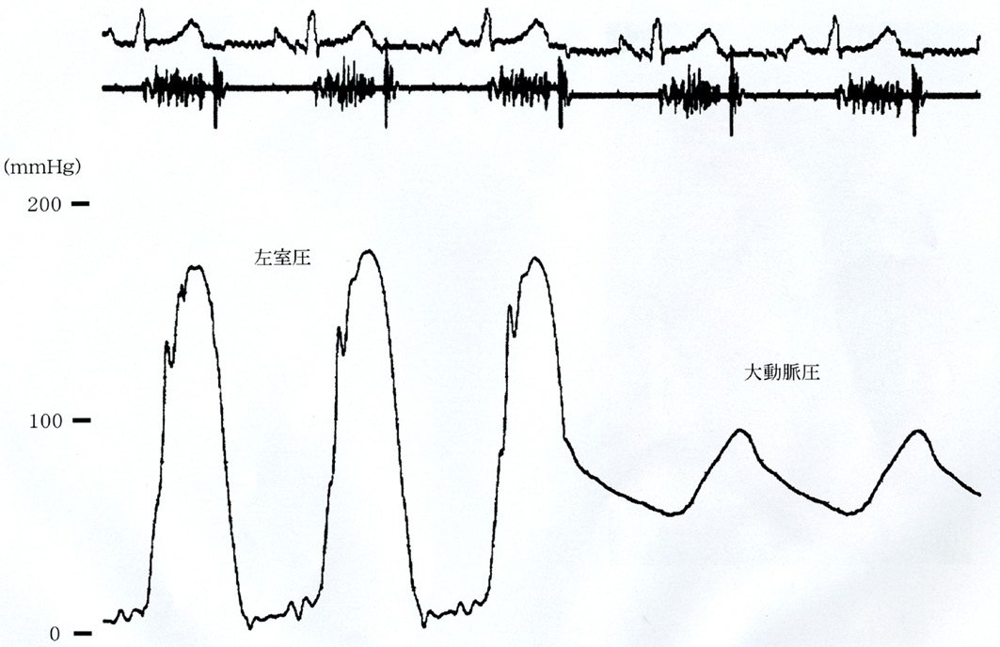
ａ 突然死の原因となる。
ｂ 胸痛をきたす。
ｃ 左室が肥大する。
ｄ 速脈を特徴とする。
ｅ 二尖弁が原因となる。
✅
ｄ 速脈を特徴とする
ASの脈は「小脈・遅脈（parvus et tardus）」。速脈はARや高出力状態（貧血等）の所見。
❤️ 大動脈弁狭窄症〈AS〉——圧負荷と3大症状
ASは大動脈弁口が狭くなり、左室から大動脈への駆出が妨げられる病態で、左室に典型的な圧負荷（pressure overload）をかける。代償のしかた：
①求心性肥大——内腔は広げず壁だけを厚くして壁応力を正常に保つ（Laplaceの法則）
②拡張障害——厚く硬くなった心室は拡がりにくく、心房収縮への依存が高まる。だから心房細動になると急激に代償が破綻する
③代償の限界——心内膜下虚血・線維化が進み、やがて収縮力そのものが落ちる
3大症状と予後——ASの臨床はこの3つに集約される：
狭心痛——平均余命 約5年。冠動脈狭窄がなくても起こる
失神——平均余命 約3年。労作時に心拍出量を増やせず脳灌流が落ちる
心不全——平均余命 約2年。最も予後が悪い
身体所見：
右第2肋間胸骨右縁を最強点とする収縮期駆出性（菱形）雑音で、両側頸動脈へ放散する
小脈・遅脈〈pulsus parvus et tardus〉。脈圧はむしろ狭い
ⅡA音の減弱・消失（硬い弁が閉じる音が出ない＝重症の指標）
Ⅳ音（硬い左室へ心房が血液を押し込む）、持続する強い心尖拍動
収縮期雑音の頂点が遅いほど重症——狭いほど駆出に時間がかかるから
重症度（心エコー）：Vmax≧4.0m/秒・平均圧較差≧40mmHg・弁口面積≦1.0cm2。低左心機能では圧較差が上がらない（low-flow low-gradient AS）のでドブタミン負荷心エコーで確かめる。
□ 選択肢の検討
| 選択肢 | 解説 |
|---|---|
| ａ 突然死の原因となる。 | 正しい記述である（したがって答えではない）。重症大動脈弁狭窄症〈AS〉は突然死の重要な原因である——とくに症状が出現してからの突然死リスクは高く、無症状の間は年1％未満なのに対し、症状が出ると急激に予後が悪化する。機序は①労作時に心拍出量を増やせず脳灌流が破綻する ②左室肥大を背景とした心室性不整脈 ③心内膜下虚血である。本例はまさに「階段を昇っているときに呼吸困難が生じ、意識を失って搬入された」——労作時失神そのものである。心臓カテーテル所見では左室圧が約180mmHg、大動脈圧が約95mmHgで、圧較差は80mmHgを超えている＝高度AS。失神を起こした重症ASは、それだけで手術適応である。 |
| ｂ 胸痛をきたす。 | 正しい記述である（したがって答えではない）。ASの3大症状は狭心痛・失神・心不全で、胸痛（狭心痛）はその1つである。重要なのは冠動脈に狭窄がなくても狭心痛が起こる点である——機序は需要の増加と供給の減少が同時に進むことにある： 需要↑——狭い弁を通して血液を押し出すため左室は高い圧を発生し、求心性肥大を起こす。心筋量が増えれば酸素消費量も増える 供給↓——肥大した心筋に対して毛細血管の密度が相対的に不足し、さらに左室拡張末期圧の上昇が心内膜下の灌流を妨げる とくに心内膜下は最も虚血に陥りやすい層で、心電図ではストレイン型のST-T変化を示す。狭心痛が出現した重症ASの平均余命は約5年とされ、手術適応となる。 |
| ｃ 左室が肥大する。 | 正しい記述である（したがって答えではない）。ASでは狭い弁口を通して血液を押し出すために左室が高い圧を発生させる必要がある＝圧負荷がかかる——左室はこれに対して求心性肥大〈concentric hypertrophy〉で対応する。Laplaceの法則（壁応力＝圧×半径÷（2×壁厚））から、壁を厚くすれば壁応力を正常に保てる——だから内腔は広がらず壁だけが厚くなる。ARやMRの容量負荷で起こる「遠心性肥大（内腔も広がる）」とは対照的である。結果として心電図では左室高電位とストレイン型ST-T変化、身体所見では持続する強い心尖拍動〈sustained／heaving〉、聴診ではⅣ音（硬い心室へ心房が血液を押し込む音）が現れる。代償が限界を越えると拡張障害から左房圧が上がって心不全となり、さらに進めば収縮力そのものが落ちる。 |
| ◯ ｄ 速脈を特徴とする。 | これが正解——誤っている記述である。ASの脈は速脈ではなく「小脈・遅脈」〈pulsus parvus et tardus〉である——狭い弁口を通って血液が押し出されるので、①1回拍出量が制限されて振幅が小さく〈parvus〉②立ち上がりが緩やかで頂点に達するのが遅い〈tardus〉。提示された心臓カテーテル所見でも大動脈圧波形の立ち上がりが緩やかで頂点が丸いことが読み取れる。速脈〈Corrigan脈・水撃脈〉は逆にARや高拍出状態（貧血・妊娠・甲状腺機能亢進症・動静脈瘻）の所見で、脈圧が開くことの反映である。ASでは脈圧はむしろ狭くなる——1回拍出量が制限されて収縮期血圧が上がらないからである。頸動脈で触れると遅れて立ち上がる小さな脈に、雑音の振動が伝わる〈shudder〉ことがあり、頸動脈でASを診断できる。 |
| ｅ 二尖弁が原因となる。 | 正しい記述である（したがって答えではない）。大動脈二尖弁〈bicuspid aortic valve：BAV〉は最も多い先天性心疾患のひとつで、一般人口の1〜2％に見られる——正常の三尖弁より1弁尖あたりの機械的ストレスが大きいため石灰化が早く進み、通常より20〜30年早くASを発症する。ASの原因は年齢で分けて考える：①加齢に伴う変性・石灰化——高齢者で最多。動脈硬化と同じ危険因子を共有する、②大動脈二尖弁——50〜60歳代でASになる例の主因、③リウマチ性——本邦では減少。ほぼ必ず僧帽弁病変を伴う。二尖弁ではASだけでなくARも起こし、さらに大動脈基部・上行大動脈の拡張を合併しやすい——だから二尖弁と診断したら、弁だけでなく上行大動脈の径も必ず追う。本例は68歳で、加齢性変性と二尖弁のどちらもありうる年齢である。 |
🔍 心臓カテーテル所見の読み方——引き抜き圧記録
提示された記録はカテーテルを左室から大動脈へ引き抜きながら圧を連続記録したもの〈pullback tracing〉である——ASの重症度を直接測る古典的な方法で、左室圧と大動脈圧の差＝圧較差がそのまま画面上に現れる。この記録から読めること：
①左室収縮期圧が約180mmHg——正常なら収縮期血圧とほぼ等しい（本例は100/60mmHg）はずなのに、はるかに高い
②引き抜いた先の大動脈圧が約95mmHg——ピーク間圧較差は80mmHg以上＝高度AS
③大動脈圧波形の立ち上がりが緩やかで頂点が丸い——小脈・遅脈〈parvus et tardus〉の波形そのもの
④同時記録の心音図では、収縮期に菱形の雑音が記録されている
⚠️ 圧較差だけで重症度を決めてはいけない——左室機能が落ちて拍出量が減ると、弁がどれだけ狭くても圧較差は小さくなる。この状態をlow-flow low-gradient ASといい、ドブタミン負荷で拍出量を増やして真の重症度を確かめる。同じ理由で弁口面積（Gorlinの式で算出）が重視される。
現在の実地では、重症度評価の主役は心エコーである——連続波ドプラで通過血流速度を測り、簡易Bernoulli式（圧較差＝4V2）で圧較差を求め、連続の式で弁口面積を算出する。カテーテル検査は、心エコーと臨床所見が食い違うときや、手術前の冠動脈評価を兼ねるときに行う。
⚠️ ASの患者に対する血管拡張薬・硝酸薬・利尿薬の安易な投与は危険である——狭窄が固定されていて心拍出量を増やせないため、後負荷や前負荷を下げると血圧を保てず失神やショックに至る。「胸痛だから硝酸薬」と反射的に投与しないことは、実地でも国試でも問われる。
🎯 国試ポイント
ASの脈は小脈・遅脈〈pulsus parvus et tardus〉。速脈はARや高拍出状態の所見で、ASでは脈圧はむしろ狭い。ASの3大症状と平均余命：狭心痛 約5年／失神 約3年／心不全 約2年。症状が出たら手術。
ASは圧負荷→求心性肥大（ARやMRの容量負荷→遠心性肥大と対にする）。
原因は加齢性変性・大動脈二尖弁・リウマチ性。二尖弁は20〜30年早くASになり、上行大動脈の拡張も合併。
雑音は右第2肋間胸骨右縁で最強、両側頸動脈へ放散。ⅡA音減弱と雑音頂点の遅れが重症の指標。
ASに血管拡張薬・硝酸薬を安易に使わない——拍出量を増やせないので血圧が保てなくなる。
Q.324(95G-21)★臨床📷 画像3択
45 歳の男性。人間ドックの胸部エックス線検査で異常陰影を指摘され来院した。自覚症状はない。身長170cm、体重68kg。脈拍72/ 分、整。血圧154/80mmHg。第4 肋間胸骨左縁に2/6 度の拡張期雑音を聴取する。胸部単純CT（A）と大動脈造影写真（B）とを示す。
この疾患について正しいのはどれか。3 つ選べ。
この疾患について正しいのはどれか。3 つ選べ。


ａ 動脈硬化症が病因である
ｂ 大動脈弁輪部が拡張する。
ｃ 大動脈弁閉鎖不全を伴う。
ｄ 進行例はBentall 手術の適応となる。
ｅ 心不全をきたすことはまれである。
✅
ｂ 大動脈弁輪部が拡張する。 ＋ ｃ 大動脈弁閉鎖不全を伴う。 ＋ ｄ 進行例はBentall 手術の適応となる。
大動脈弁輪拡張症〈annuloaortic ectasia〉。中膜の嚢胞状壊死で弁輪から上行大動脈が洋梨状に拡張しARを伴う→進行例はBentall手術（大動脈弁付き人工血管による基部置換）。
❤️ 大動脈弁輪拡張症〈annuloaortic ectasia〉
大動脈弁輪拡張症は大動脈弁輪からバルサルバ洞、上行大動脈基部にかけてが「洋梨状」に拡張し、その結果として大動脈弁閉鎖不全症を伴う病態である。本態は中膜の嚢胞状壊死——中膜の弾性線維と平滑筋が失われ、粘液様物質（グリコサミノグリカン）が沈着する。壁が力学的に弱くなり、血圧という繰り返しの負荷に耐えられなくなる。動脈硬化性大動脈瘤とは病因も好発部位も年齢層も異なる——動脈硬化は内膜から始まり、腹部大動脈や下行大動脈に好発する。
背景疾患：
Marfan症候群——FBN1変異。高身長・クモ状指・水晶体亜脱臼
Loeys-Dietz症候群——眼間開離・口蓋垂裂・動脈の蛇行。より若年で解離
Ehlers-Danlos症候群（血管型）／大動脈二尖弁／孤発例（本例のような明らかな基礎疾患のない例）
臨床像：
無症状で偶然発見されることが多い（健診の胸部エックス線で上縦隔の拡大を指摘される）
ARによる拡張期雑音——基部が拡張しているため、Erbの領域だけでなく右第2肋間側でも聴かれることがある
進行すればARによる心不全・大動脈解離・破裂
診断：造影CT／MRIで大動脈全体の形態と径を計測、心エコーで弁輪径・バルサルバ洞径・上行大動脈径とARの重症度・左室機能、大動脈造影で洋梨状の形態を確認。
□ 選択肢の検討
| 選択肢 | 解説 |
|---|---|
| ａ 動脈硬化症が病因である | 誤り。病因が違う。大動脈弁輪拡張症〈annuloaortic ectasia：AAE〉の本態は中膜の嚢胞状壊死〈cystic medial necrosis〉である——中膜の弾性線維と平滑筋が失われ、粘液様物質が沈着して壁が力学的に弱くなる変化で、動脈硬化とはまったく別の機序である。背景にはMarfan症候群をはじめとする結合組織疾患があることが多く、孤発例でも同様の中膜病変を認める。動脈硬化性の大動脈瘤は内膜のプラーク形成から始まり、腹部大動脈（腎動脈下）や下行大動脈に好発し、高齢・喫煙・高血圧・脂質異常症が危険因子である。本例は45歳・無症状・上行大動脈から弁輪にかけての洋梨状の拡張——動脈硬化性の分布でも年齢でもない。病因が違えば手術のタイミングも術式も変わるので、この区別は実務的にも重要である。 |
| ◯ ｂ 大動脈弁輪部が拡張する。 | これが正解の1つ。大動脈弁輪拡張症は「弁輪部（大動脈弁が付着する輪）そのものが拡がる」ことを名前が示している——拡張はバルサルバ洞から上行大動脈基部にかけて連続し、造影では特徴的な「洋梨状〈pear-shaped〉」または「チューリップ球根状」の形態を呈する。提示された胸部単純CT（A）と大動脈造影写真（B）は、まさにこの形を示すために置かれている。重要なのは「弁そのものは正常なのに、弁を支える輪が拡がったせいで弁尖が中央で合わさらなくなる」という点である——弁尖の器質的な異常がなくてもARが生じるという機序で、弁尖が健全なら自己弁温存手術〈David手術〉の適応にもなる。診断は心エコー・造影CT・MRIで弁輪径・バルサルバ洞径・上行大動脈径を計測して行う。 |
| ◯ ｃ 大動脈弁閉鎖不全を伴う。 | これが正解の1つ。弁輪が拡がれば弁尖は中央で合わさることができず、拡張期に大動脈から左室へ逆流する＝大動脈弁閉鎖不全症〈AR〉が生じる。本例の身体所見はこれを裏づけている：第4肋間胸骨左縁の2/6度拡張期雑音＝ARの拡張期漸減性雑音、血圧154/80mmHg＝脈圧74mmHgとやや開大。現時点では2/6度と軽度で、自覚症状もないが、基部の拡張が進めばARも進行する。ARが進めば左室が容量負荷で拡大し、やがて不可逆になる——だから手術のタイミングは「大動脈径」と「左室の数字（EF≦55％・収縮末期径＞50mm）」の両方で判断する。なおこの機序で起こるARは、弁尖が壊れていないので弁形成で治せる可能性がある点が、石灰化したASとの決定的な違いである。 |
| ◯ ｄ 進行例はBentall 手術の適応となる。 | これが正解の1つ。Bentall手術は「人工弁付き人工血管〈composite graft〉で大動脈基部を丸ごと置換し、左右の冠動脈を人工血管へ再吻合する」術式である——大動脈弁輪拡張症のように「弁と基部の両方が病んでいる」病態に対する標準術式である。冠動脈の再建が要るのは置換する範囲に冠動脈起始部が含まれるからで、ここがBentall手術の技術的な核心である。⚠️ 弁尖が健全なら、自己弁を温存するDavid手術（弁温存基部置換）を選ぶ——人工弁を使わないので生涯の抗凝固が不要になり、若年者では利点が大きい。手術のタイミングは大動脈基部径50mm（Marfan症候群では45mm、家族歴や急速な拡大があればさらに早く）、あるいはARが高度で左室の数字が基準に達したときである。無症状でも径で決めるのは、破裂・解離が起きてからでは間に合わないからである。 |
| ｅ 心不全をきたすことはまれである。 | 誤り。まれではない。大動脈弁輪拡張症の自然経過を放置すれば、①ARの進行による左室の容量負荷 → 心不全 ②大動脈解離 ③破裂という3つの転帰が待っている。ARが高度になれば左室は拡大し、代償が限界を越えれば心不全に至る——むしろ心不全は主要な合併症のひとつである。本例は45歳・無症状・2/6度の軽度の雑音という早期の段階で見つかっているにすぎず、「症状がない＝進行しない」ではない。⚠️ 最も恐ろしいのは大動脈解離である——中膜が弱い壁に高い圧がかかり続けるため、Stanford A型解離を起こすと致死率がきわめて高い。だからこの疾患の管理は①降圧（β遮断薬・ARB）②定期的な径の計測 ③基準に達したら無症状でも手術という、Marfan症候群とまったく同じ方針になる。 |
🔍 Bentall手術とDavid手術——基部を置き換える2つの方法
大動脈基部の手術は「弁を替えるか、残すか」で2つに分かれる。Bentall手術——人工弁付き人工血管〈composite graft〉で基部を丸ごと置換し、左右の冠動脈を人工血管へ再吻合する：
適応——弁尖にも器質的な異常がある（石灰化・二尖弁の変性・感染性心内膜炎による破壊）
利点——確実。長期成績が確立している
欠点——機械弁を用いれば生涯のワルファリンが必要（生体弁を用いれば劣化と再手術の問題）
David手術（自己弁温存基部置換）——弁尖を残したまま基部だけを人工血管へ置き換え、弁尖を人工血管の内側へ縫い付ける：
適応——弁尖が健全で、弁輪の拡張だけがARの原因になっている
利点——人工弁を使わないので生涯の抗凝固が不要。若年者・挙児希望のある女性で価値が大きい
欠点——術者の技量に依存し、長期的にはARが再発しうる
手術のタイミング——「破裂・解離が起きる前に、無症状のうちに」が原則である：
大動脈基部径50mm（Marfan症候群では45mm、解離の家族歴・年5mmを超える急速な拡大・妊娠計画があればさらに早く）
高度ARを伴い、左室の数字（EF≦55％・収縮末期径＞50mm）が基準に達したとき
他の心臓手術を行うとき
手術までの内科管理：β遮断薬・ARBによる降圧と、大動脈壁への剪断応力〈dP/dt〉の抑制、等尺性運動・コンタクトスポーツ・いきむ動作の制限、禁煙、定期的な画像による径の追跡。患者には「胸背部の突然の激痛は直ちに救急受診」と伝えておく——解離の初発症状だからである。
🎯 国試ポイント
大動脈弁輪拡張症＝中膜の嚢胞状壊死により弁輪〜上行大動脈が洋梨状に拡張し、ARを伴う。動脈硬化が病因ではない。進行例はBentall手術（人工弁付き人工血管＋冠動脈再建）。弁尖が健全ならDavid手術（自己弁温存＝抗凝固不要）。
放置すればARによる心不全・大動脈解離・破裂——「心不全はまれ」は誤り。
背景にMarfan症候群などの結合組織疾患。手術は基部径50mm（Marfanでは45mm）で無症状でも行う。
内科管理はβ遮断薬・ARBによる降圧、運動制限、定期的な径の計測——Marfan症候群とまったく同じである。
Q.325(117A-16)臨床📷 画像93%
72 歳の女性。動悸と息切れを主訴に来院した。3 週間前から動悸を自覚していたが、1 週間前から短距離の歩行で息切れを自覚するようになった。一昨日から夜間就寝後に息苦しさで覚醒するようになったため受診した。15 年前から僧帽弁閉鎖不全症、10 年前から高血圧を指摘されており、自宅近くの診療所で投薬治療を受けている。来院時、意識は清明。身長153cm、体重39kg。脈拍136/ 分、不整。血圧152/88mmHg。SpO2 85％（room air）。心音は心尖部を最強点とするLevine 3/6 の収縮期雑音を聴取する。呼吸音は両側下肺野でcoarse crackles を聴取する。腹部に異常を認めない。両下腿に浮腫を認める。血液所見：Hb 12.2g/dL、Ht 38％、白血球7,800、血小板21 万。血液生化学所見：アルブミン3.3g/dL、AST 24U/L、ALT 18U/L、CK 72U/L（基準30 ～140）、尿素窒素14mg/dL、クレアチニン1.2mg/dL、血糖110mg/dL、Na 140mEq/L、K 3.9mEq/dL（編註：「mEq/L」の誤記と思われる）、脳性ナトリウム利尿ペプチド〈BNP〉588pg/mL（基準18.4 以下）、心筋トロポニンT 0.02ng/mL（基準0.01 以下）。CRP 1.8mg/dL。12 誘導心電図（A）と胸部エックス線写真（B）を示す。心エコー検査では僧帽弁逸脱による中等症の僧帽弁閉鎖不全症を認め、左室駆出率は68％であった。
この患者で誤っているのはどれか。
この患者で誤っているのはどれか。
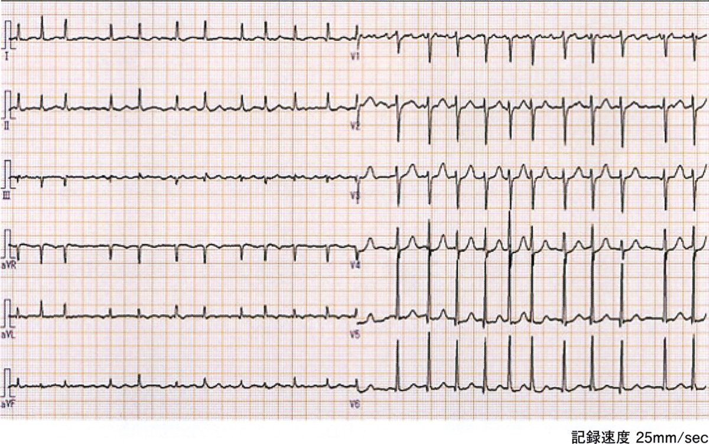
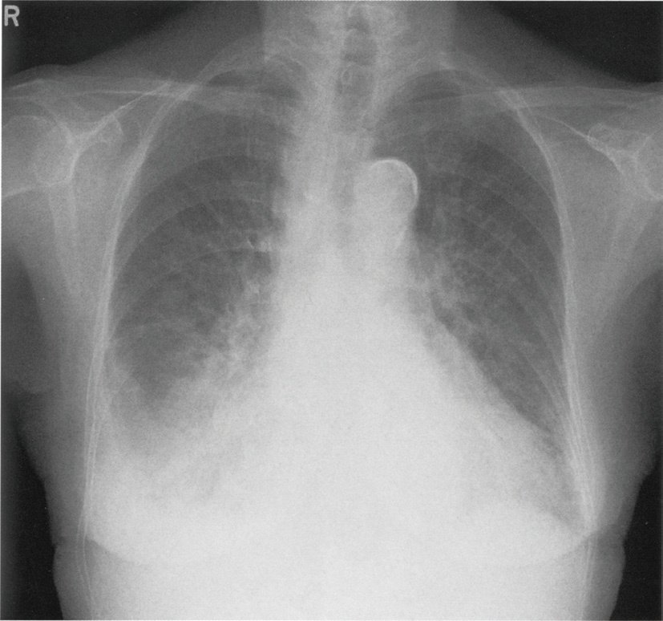
ａ 抗凝固療法の適応がある。
ｂ 左室駆出率は正常範囲である。
ｃ 肺動脈楔入圧は低下している。
ｄ 甲状腺機能の評価が必要である。
ｅ 来院時に認めた不整脈は労作時息切れの一因である。
✅
ｃ 肺動脈楔入圧は低下している。
15年来の僧帽弁閉鎖不全症に頻脈性心房細動（136/分）が加わり、心房収縮の消失と拡張時間の短縮で左房圧が上昇→肺静脈圧が上がって肺うっ血に至った急性心不全。肺動脈楔入圧は左房圧を反映するので上昇しており、「低下している」が誤り。
❤️ 慢性MRに心房細動が加わって心不全が顕在化する
本例は「15年前から僧帽弁閉鎖不全症」という慢性の土台に、3週間前からの心房細動という新しい負荷が乗って心不全が顕在化した典型例である。なぜ心房細動が加わると崩れるのか：
①心房収縮の消失——左室充満の20〜30％を失う
②拡張時間の短縮——頻脈で縮むのは拡張期。充満する時間そのものが減る
③左房圧の上昇——逆流分に加えて心房が拡張し、圧が肺静脈へ伝わる
④悪循環——MRで左房が拡大する→心房細動が起こりやすくなる→MRが悪化する
本例の所見を病態と結びつける：
脈拍136/分・不整、心電図でP波なくRR不整＝頻脈性心房細動
心尖部最強のLevine 3/6 収縮期雑音＝MR
SpO2 85％・両側下肺野のcoarse crackles・胸部エックス線の肺うっ血＝左心不全
両下腿浮腫＝右心系にも及んだうっ血
BNP 588pg/mL＝心室壁の伸展。心不全の客観的指標
心筋トロポニンT 0.02ng/mL（基準0.01以下）＝軽度上昇だが、需要供給ミスマッチによる二次性のもの。CK 72U/Lは正常で急性心筋梗塞は考えにくい
アルブミン3.3g/dL・体重39kg＝低栄養。高齢心不全患者の予後因子
初期治療：酸素投与（SpO2 85％なので必要に応じてNPPV）・上体挙上・利尿薬・血管拡張薬、レートコントロール（心不全があるのでβ遮断薬は慎重に。急性期はジギタリスや短時間作用型β遮断薬）、抗凝固療法の開始。
□ 選択肢の検討
| 選択肢 | 解説 |
|---|---|
| ａ 抗凝固療法の適応がある。 | 正しい記述である（したがって答えではない）。12誘導心電図（A）はRR間隔が不整でP波を認めない頻脈＝心房細動〈AF〉で、心拍数は約136/分——「脈拍136/分、不整」という記載と一致する。心房細動では左房内、とくに左心耳に血栓が形成され、遊離すれば心原性脳塞栓症を起こす。抗凝固の適応はCHADS2スコアで判断する——C（うっ血性心不全）1点・H（高血圧）1点・A（年齢≧75歳）1点・D（糖尿病）1点・S2（脳卒中／TIAの既往）2点。本例は心不全（1点）＋高血圧（1点）＝2点で、1点以上あれば抗凝固療法の適応である。薬剤は非弁膜症性心房細動なのでDOAC（直接経口抗凝固薬）が第一選択——ワルファリン一択になるのは機械弁置換後と中等度以上のリウマチ性僧帽弁狭窄症だけである。 |
| ｂ 左室駆出率は正常範囲である。 | 正しい記述である（したがって答えではない）。左室駆出率〈LVEF〉の正常範囲はおおむね55〜80％で、本例の68％は数字としては正常範囲である。⚠️ ただし「正常範囲＝心機能に問題がない」ではない——僧帽弁閉鎖不全症では、左室は収縮期に「大動脈という高い圧の出口」と「左房という低い圧の逃げ道」の両方へ血液を送り出せる。後負荷が軽いぶんEFは見かけ上よく出るので、MRではEF 60％を切った時点ですでに心筋障害が始まっていると考える。だからMRの手術適応はEF≦60％・左室収縮末期径≧40mmと、ARの基準（EF≦55％・収縮末期径＞50mm）より厳しく設定されている。この設問は「正しいのはどれか」ではなく「誤っているのはどれか」を問うているので、数字としての正誤で判定する。 |
| ◯ ｃ 肺動脈楔入圧は低下している。 | これが正解——誤っている記述である。肺動脈楔入圧〈PCWP〉は低下ではなく上昇している。PCWPは肺動脈にカテーテルを進めて先端のバルーンを膨らませ、その先の血流を止めて測る圧で、肺静脈圧、ひいては左房圧を反映する。本例は僧帽弁閉鎖不全症に心房細動が加わり、収縮期に左房へ逆流した血液と、心房収縮の消失・拡張時間の短縮が重なって左房圧が急激に上昇している——その圧は肺静脈から肺毛細血管へ伝わり、肺うっ血・肺水腫を起こす。臨床所見がすべてこれを裏づけている：夜間発作性呼吸困難・SpO2 85％（room air）・両側下肺野のcoarse crackles・BNP 588pg/mL・胸部エックス線写真（B）の肺うっ血像。PCWPが低下するのは循環血液量が減っているとき（脱水・出血）で、両下腿浮腫を伴う本例とは正反対である。 |
| ｄ 甲状腺機能の評価が必要である。 | 正しい記述である（したがって答えではない）。新たに心房細動を指摘された患者では、甲状腺機能の評価が必須である——甲状腺機能亢進症は心房細動の「治療可能な原因」で、見逃すとリズムコントロールが効かない。機序は甲状腺ホルモンが心筋のβ受容体を増やし、収縮力と心拍数を高めるとともに心房筋の不応期を短縮させることによる。⚠️ 高齢者では典型的な症状（体重減少・発汗・振戦・暑がり）を欠き、心房細動と心不全だけが症状のことがある（apathetic hyperthyroidism）——本例は72歳・体重39kg（身長153cmでBMI 16.7と痩せている）で、まさに疑うべき体格である。検査はTSH・FT4（必要ならFT3）で、TSHが低下していれば亢進症を考える。心房細動を見たら甲状腺・高血圧・弁膜症・虚血・アルコール・睡眠時無呼吸を一通り探す。 |
| ｅ 来院時に認めた不整脈は労作時息切れの一因である。 | 正しい記述である（したがって答えではない）。心房細動、とくに心拍数136/分という頻脈性心房細動は、労作時息切れの明確な原因になる。機序は2つある： ①心房収縮〈atrial kick〉の消失——正常では左室の充満量の約20〜30％を心房収縮が担う。心房細動ではこれが失われる ②拡張時間の短縮——心拍数が上がると縮むのは拡張期のほうなので、左室が血液を受け入れる時間そのものが減る。同時に冠灌流の時間も減る この2つが重なって1回拍出量が落ち、左房圧が上がる——結果として心拍出量は低下し、肺うっ血が進む。本例の経過は「3週間前から動悸（＝心房細動の発症）→1週間前から短距離歩行で息切れ→一昨日から夜間発作性呼吸困難」と、心房細動を起点として心不全が段階的に悪化した経過そのものである。したがって治療は心不全への対応と並行して、レートコントロールで心拍数を落とすことが要になる。 |
🔍 心房細動を見たときに考えること
心房細動は「不整脈そのもの」よりも「その周りにあるもの」が問われる——診療は①原因を探す ②塞栓を防ぐ ③心拍数か調律かを決めるの3つで組み立てる。①原因を探す：
心臓性——弁膜症（とくにMS・MR）・高血圧性心疾患・心不全・虚血性心疾患・心筋症・心膜炎
心臓以外——甲状腺機能亢進症・アルコール（holiday heart syndrome）・睡眠時無呼吸・肺疾患・電解質異常・感染症・術後
とくに甲状腺は必ず測る——治療可能な原因で、放置するとリズムコントロールが効かない
②塞栓を防ぐ（最も重要）：
CHADS2スコア——C うっ血性心不全1／H 高血圧1／A 年齢≧75歳1／D 糖尿病1／S2 脳卒中・TIAの既往2。1点以上で抗凝固
非弁膜症性心房細動ではDOACが第一選択——頭蓋内出血がワルファリンより少なく、食事制限もPT-INRの測定も不要
ワルファリン一択なのは「機械弁置換後」と「中等度以上のリウマチ性僧帽弁狭窄症」だけ——これを「弁膜症性心房細動」と呼ぶ
抗血小板薬（アスピリン）は心房細動の塞栓予防には無効——血栓の成り立ちが違う（うっ滞による赤色血栓）から
③レートかリズムか：
レートコントロール——β遮断薬・非ジヒドロピリジン系Ca拮抗薬・ジギタリス。多くの症例で予後はリズムコントロールと同等
リズムコントロール——若年・症状が強い・発症early・心不全を伴う例で考慮。抗不整脈薬・カテーテルアブレーション
⚠️ 48時間を超えて持続した心房細動を除細動する前には、抗凝固または経食道心エコーによる左房内血栓の確認が必要——洞調律に戻った瞬間に心房が収縮を再開し、溜まっていた血栓を押し出すからである。
🎯 国試ポイント
MRに心房細動が加わって心不全が顕在化した症例。肺うっ血があるのだからPCWP（＝左房圧）は上昇している——「低下している」が誤り。心房細動の抗凝固はCHADS2スコアで判断（心不全1＋高血圧1＝2点）。非弁膜症性ならDOACが第一選択。
新規の心房細動では甲状腺機能を必ず測る。高齢者では心房細動だけが症状のことがある。
心房細動が息切れを起こす機序＝心房収縮の消失＋拡張時間の短縮。
MRのEFは見かけ上よく出るので、手術適応はEF≦60％・左室収縮末期径≧40mmとARより厳しい。
48時間超の心房細動を除細動する前には、抗凝固または経食道心エコーで左房内血栓を否定する。
Q.326(116B-44)必修CBT臨床99%
次の文を読み、326 と327 の問いに答えよ。
78 歳の女性。息切れを主訴に来院した。
現病歴：65 歳で事務職を退職するまで毎年、健康診断を受けていたが、異常を指摘されたことはなかった。4 年前に感冒症状で自宅近くの診療所を受診した時に、心雑音を指摘されたが精査はされていない。趣味で卓球をしていたが、1 年ほど前から競技中に胸部圧迫感を自覚するようになった。1 か月ほど前から買い物のためスーパーまで15 分程度歩いていく途中に息切れを自覚するようになった。
生活歴：喫煙は20 歳から65 歳まで1 日20 本。飲酒は機会飲酒。
家族歴：父が73 歳時に脳出血で死亡。母は82 歳時に腹部大動脈にステントグラフト内挿術を受けた。
現 症：意識は清明。身長154cm、体重54kg。体温36.8℃。脈拍60/ 分、整。血圧154/92mmHg。呼吸数18/ 分。SpO2 97％（room air）。眼瞼結膜に異常を認めない。頸静脈の怒張を認めない。呼吸音に異常を認めない。頸部に放散する胸骨右縁第2 肋間を最強点とするLevine 3/6 の駆出性収縮期雑音を聴取する。腹部は平坦、軟で、肝・脾を触知しない。
可能性の高い疾患はどれか。
78 歳の女性。息切れを主訴に来院した。
現病歴：65 歳で事務職を退職するまで毎年、健康診断を受けていたが、異常を指摘されたことはなかった。4 年前に感冒症状で自宅近くの診療所を受診した時に、心雑音を指摘されたが精査はされていない。趣味で卓球をしていたが、1 年ほど前から競技中に胸部圧迫感を自覚するようになった。1 か月ほど前から買い物のためスーパーまで15 分程度歩いていく途中に息切れを自覚するようになった。
生活歴：喫煙は20 歳から65 歳まで1 日20 本。飲酒は機会飲酒。
家族歴：父が73 歳時に脳出血で死亡。母は82 歳時に腹部大動脈にステントグラフト内挿術を受けた。
現 症：意識は清明。身長154cm、体重54kg。体温36.8℃。脈拍60/ 分、整。血圧154/92mmHg。呼吸数18/ 分。SpO2 97％（room air）。眼瞼結膜に異常を認めない。頸静脈の怒張を認めない。呼吸音に異常を認めない。頸部に放散する胸骨右縁第2 肋間を最強点とするLevine 3/6 の駆出性収縮期雑音を聴取する。腹部は平坦、軟で、肝・脾を触知しない。
可能性の高い疾患はどれか。
ａ 肥大型心筋症
ｂ 動脈管開存症
ｃ 大動脈弁狭窄症
ｄ 心房中隔欠損症
ｅ 僧帽弁閉鎖不全症
✅
ｃ 大動脈弁狭窄症
頸部へ放散する胸骨右縁第2肋間最強のLevine 3/6 駆出性収縮期雑音＝大動脈弁狭窄症。1年前からの労作時胸部圧迫感（狭心痛）と1か月前からの労作時息切れ（心不全症状）が出ており、症状のある重症ASとして手術適応を検討する段階にある。
❤️ 収縮期雑音を「駆出性」と「逆流性」に分ける
収縮期雑音を鑑別する最初の一手は「駆出性〈ejection〉か、逆流性〈regurgitant／汎収縮期〉か」を決めることである。駆出性収縮期雑音——血液が狭い出口を通って前方へ出ていく音：
形——菱形〈crescendo-decrescendo〉。Ⅰ音との間に隙間があり、Ⅱ音の前で終わる（等容性収縮期には弁がまだ開いていないから）
疾患——大動脈弁狭窄症（右第2肋間・頸部へ放散）／肺動脈弁狭窄症（左第2肋間）／肥大型閉塞性心筋症（左第3〜4肋間・放散なし）／無害性雑音（高拍出状態）
逆流性（汎収縮期）雑音——高圧の腔から低圧の腔へ血液が漏れる音：
形——Ⅰ音から始まりⅡ音まで一様に続く〈holosystolic〉（収縮期を通じて圧差があるから）
疾患——僧帽弁閉鎖不全症（心尖部・左腋窩へ放散）／三尖弁閉鎖不全症（胸骨左縁下部・吸気で増強＝Rivero-Carvallo徴候）／心室中隔欠損症（胸骨左縁第3〜4肋間・thrillを伴うことが多い）
ASの聴診所見をまとめる：
最強点は右第2肋間胸骨右縁、両側頸動脈へ放散
ⅡA音の減弱・消失（硬い弁が閉じる音を出せない＝重症の指標）
雑音の頂点が遅いほど重症（狭いほど駆出に時間がかかる）
小脈・遅脈〈pulsus parvus et tardus〉、脈圧は狭い
Ⅳ音、持続する強い心尖拍動〈sustained／heaving〉
⚠️ 重症になるほど雑音は「大きく」なるとは限らない——心拍出量が落ちれば雑音は小さくなるので、強さではなく「頂点の遅れ」と「ⅡA音の減弱」で重症度を推し量る。
□ 選択肢の検討
| 選択肢 | 解説 |
|---|---|
| ａ 肥大型心筋症 | 雑音の最強点と放散方向が合わない。肥大型心筋症〈HCM〉のうち左室流出路狭窄を伴う閉塞性〈HOCM〉では収縮期駆出性雑音を聴くが、最強点は胸骨左縁第3〜4肋間で、頸部へは放散しない——狭窄が心室中隔と僧帽弁前尖の間（大動脈弁より手前）にあるからである。鑑別に最も有効なのは負荷による雑音の変化である：HOCMは立位・Valsalva手技（前負荷↓→左室が小さくなる→流出路がより狭くなる）で増強し、しゃがみ込み・handgripで減弱する——ASはこれと正反対（前負荷が増えれば駆出量が増えて雑音は強くなる）。加えてHOCMの頸動脈は二峰性の速い立ち上がり〈spike and dome〉で、ASの小脈・遅脈とは触れ方が違う。本例は78歳・喫煙歴あり・頸部へ放散する右第2肋間最強の雑音で、典型的な加齢性のASである。 |
| ｂ 動脈管開存症 | 雑音の時相そのものが違う。動脈管開存症〈PDA〉の雑音は連続性雑音〈machinery murmur〉で、収縮期から拡張期にかけてⅡ音をまたいで途切れずに続く——大動脈と肺動脈の圧差が収縮期にも拡張期にも存在し続けるためである。最強点は胸骨左縁第2肋間で、頸部ではなく背部・左鎖骨下へ伝わる。本例の雑音は「駆出性収縮期雑音」と明記されており、連続性ではない。加えてPDAは先天性心疾患で、通常は乳幼児期に発見される——本例は「65歳の退職まで毎年の健康診断で異常を指摘されたことがなく、心雑音が初めて指摘されたのは4年前（74歳）」という経過で、成人期以降に新たに出現した雑音＝後天性の弁膜症を示している。 |
| ◯ ｃ 大動脈弁狭窄症 | これが正解。頸部に放散する、胸骨右縁第2肋間を最強点とするLevine 3/6の駆出性収縮期雑音——大動脈弁狭窄症〈AS〉の教科書的な聴診所見である。経過も典型的である： ①4年前に心雑音を指摘されたが精査されていない——ASは長く無症状のまま進行する ②1年ほど前から卓球の競技中に胸部圧迫感——労作時の狭心痛。3大症状の1つが出現した ③1か月前から15分の歩行で息切れ——心不全症状。より予後の悪い症状へ進んでいる つまり「無症状のうちに見つかっていたのに、症状が出るまで放置された」という、ASの自然歴をそのままなぞった提示である。背景も合致する：78歳という年齢（加齢性の変性・石灰化が最多の原因）、45年間20本/日の喫煙歴と血圧154/92mmHg（動脈硬化と危険因子を共有する）。症状のある重症ASは手術適応であり、次の設問（Q.327）はその方針決定に必要な情報を問うている。 |
| ｄ 心房中隔欠損症 | 雑音の由来と付随所見が合わない。心房中隔欠損症〈ASD〉で聴かれるのは、欠損孔そのものの雑音ではなく「肺動脈弁を通る血流量が増えたことによる相対的肺動脈弁狭窄の駆出性収縮期雑音」である——最強点は胸骨左縁第2肋間（肺動脈弁領域）で、頸部へは放散しない。ASDの決定的な所見はⅡ音の固定性分裂〈fixed splitting〉である——右心系への流入が心房間交通で常に等化されるため、呼吸によって分裂幅が変わらない。三尖弁を通る血流も増えるので胸骨左縁下部に拡張期ランブルを聴くこともある。心電図では不完全右脚ブロック・右軸偏位が特徴的である。本例には固定性分裂の記載がなく、雑音は右第2肋間最強で頸部へ放散——左心系の流出路の狭窄を示している。 |
| ｅ 僧帽弁閉鎖不全症 | 最強点・時相・放散方向のすべてが違う。僧帽弁閉鎖不全症〈MR〉の雑音は心尖部を最強点とする汎〈全〉収縮期雑音で、左腋窩から背部へ放散する——逆流ジェットが左後方の左房へ向かうという解剖から必然的に決まる。本例の雑音は①胸骨右縁第2肋間が最強 ②駆出性（菱形）③頸部へ放散で、3つとも噛み合わない。加えてMRではⅠ音の減弱・Ⅲ音・心尖拍動の外側下方への偏位を伴うことが多いが、本例にはいずれの記載もない。収縮期雑音を見たら「駆出性か、逆流性（汎収縮期）か」をまず分ける——駆出性＝AS・PS・HOCM・無害性雑音（Ⅰ音との間に隙間がある菱形）／逆流性＝MR・TR・VSD（Ⅰ音から始まりⅡ音まで一様）。この2分法だけで収縮期雑音の大半は整理できる。 |
🔍 高齢者の労作時症状——ASを見落とさない
本例が投げかけているのは「4年前に心雑音を指摘されたが精査はされていない」という一文である——その時点で心エコーを1回行っていれば、症状が出る前に経過観察の枠に乗せられた。高齢者の労作時症状は非特異的で、しばしば「年のせい」にされる：
労作時の胸部圧迫感——狭心症だけでなくASでも起こる。冠動脈に狭窄がなくても心内膜下虚血が生じる
労作時息切れ——心不全・貧血・呼吸器疾患・脱条件付けのどれとも取れる
失神・前失神——ASでは労作時に心拍出量を増やせないことによる。最も見落としてはならない症状
だからこそ身体診察で雑音を捉えたら心エコーへ進むという単純な流れが効く。
ASの管理は「無症状なら測って待つ、症状が出たら替える」：
重症度——Vmax≧4.0m/秒・平均圧較差≧40mmHg・弁口面積≦1.0cm2
無症状の重症ASの経過観察——心エコーを半年〜1年ごと。運動負荷試験で症状や血圧低下が出れば手術へ
症状が出た重症AS——狭心痛 約5年／失神 約3年／心不全 約2年。直ちに手術
術式の選択——年齢・フレイル・併存疾患・解剖学的条件でSAVRかTAVIかを決める
内科治療でASの進行は止められない——スタチンも無効であることが臨床試験で示され、薬は合併する高血圧の管理と心不全症状の緩和に留まる。⚠️ 血管拡張薬・硝酸薬・利尿薬は前負荷／後負荷を下げて血圧を保てなくする危険があり、重症ASでは慎重に扱う。
本例は78歳・症状あり・併存疾患は高血圧と長い喫煙歴——SAVRとTAVIのどちらも現実的な選択肢で、次の設問はまさにその判断材料を問うている。
🎯 国試ポイント
頸部へ放散する右第2肋間最強の駆出性収縮期雑音＝大動脈弁狭窄症。収縮期雑音はまず「駆出性（菱形・Ⅰ音と隙間）」と「逆流性（Ⅰ音からⅡ音まで一様）」に分ける。
HOCMは左第3〜4肋間で放散なし、立位・Valsalvaで増強（ASは逆に減弱）。頸動脈はspike and dome。
ASDはⅡ音の固定性分裂＋左第2肋間の相対的PS雑音。PDAは連続性雑音。MRは心尖部・汎収縮期・腋窩へ放散。
ASは無症状の期間が長い——雑音を指摘されたら心エコーへ進む。症状が出た時点で手術適応。
Q.327(116B-45)必修CBT臨床97%
次の文を読み、326 と327 の問いに答えよ。
78 歳の女性。息切れを主訴に来院した。
現病歴：65 歳で事務職を退職するまで毎年、健康診断を受けていたが、異常を指摘されたことはなかった。4 年前に感冒症状で自宅近くの診療所を受診した時に、心雑音を指摘されたが精査はされていない。趣味で卓球をしていたが、1 年ほど前から競技中に胸部圧迫感を自覚するようになった。1 か月ほど前から買い物のためスーパーまで15 分程度歩いていく途中に息切れを自覚するようになった。
生活歴：喫煙は20 歳から65 歳まで1 日20 本。飲酒は機会飲酒。
家族歴：父が73 歳時に脳出血で死亡。母は82 歳時に腹部大動脈にステントグラフト内挿術を受けた。
現 症：意識は清明。身長154cm、体重54kg。体温36.8℃。脈拍60/ 分、整。血圧154/92mmHg。呼吸数18/ 分。SpO2 97％（room air）。眼瞼結膜に異常を認めない。頸静脈の怒張を認めない。呼吸音に異常を認めない。頸部に放散する胸骨右縁第2 肋間を最強点とするLevine 3/6 の駆出性収縮期雑音を聴取する。腹部は平坦、軟で、肝・脾を触知しない。
治療方針の決定に役立つ情報に含まれないのはどれか。
78 歳の女性。息切れを主訴に来院した。
現病歴：65 歳で事務職を退職するまで毎年、健康診断を受けていたが、異常を指摘されたことはなかった。4 年前に感冒症状で自宅近くの診療所を受診した時に、心雑音を指摘されたが精査はされていない。趣味で卓球をしていたが、1 年ほど前から競技中に胸部圧迫感を自覚するようになった。1 か月ほど前から買い物のためスーパーまで15 分程度歩いていく途中に息切れを自覚するようになった。
生活歴：喫煙は20 歳から65 歳まで1 日20 本。飲酒は機会飲酒。
家族歴：父が73 歳時に脳出血で死亡。母は82 歳時に腹部大動脈にステントグラフト内挿術を受けた。
現 症：意識は清明。身長154cm、体重54kg。体温36.8℃。脈拍60/ 分、整。血圧154/92mmHg。呼吸数18/ 分。SpO2 97％（room air）。眼瞼結膜に異常を認めない。頸静脈の怒張を認めない。呼吸音に異常を認めない。頸部に放散する胸骨右縁第2 肋間を最強点とするLevine 3/6 の駆出性収縮期雑音を聴取する。腹部は平坦、軟で、肝・脾を触知しない。
治療方針の決定に役立つ情報に含まれないのはどれか。
ａ 自覚症状
ｂ 併存疾患の有無
ｃ 心エコー検査の所見
ｄ 心臓カテーテル検査の所見
ｅ MIBG 心筋シンチグラフィの所見
✅
ｅ MIBG心筋シンチグラフィの所見
MIBG：心臓交感神経機能評価→慢性心不全・パーキンソン病鑑別。ASの治療方針決定には不要。
❤️ ASの治療方針を決める4つの柱
症状のある重症ASと診断がついたら、方針決定に必要な情報は4つに整理できる。①症状——手術に踏み切るかどうかを決める：
3大症状（狭心痛・失神・心不全）のいずれかが出れば、それだけで手術適応
無症状でも手術に踏み切る条件——LVEF＜50％／Vmax≧5.0m/秒などの超重症／運動負荷で症状や血圧低下／他の心臓手術を同時に行う
②弁と左室の状態——心エコー：
Vmax・平均圧較差・弁口面積・LVEF・左室肥大・合併弁膜症・肺高血圧
弁の形態と石灰化の分布（TAVIのデバイス選択に関わる）
③冠動脈——心臓カテーテル検査／冠動脈CT：
狭窄があれば弁置換と同時にバイパス術、TAVIなら事前のPCI
④手術に耐えられるか——併存疾患・フレイル・余命：
呼吸機能・腎機能・肝機能・脳血管疾患・悪性腫瘍・認知機能・日常生活動作
これらがSAVRかTAVIかを決め、場合によっては「侵襲的治療を行わない」という結論にもなる
判断はハートチーム（循環器内科・心臓外科・麻酔科・看護師ら）で行うのが標準である
⚠️ この4つに入らない検査は、どれほど高度でも「方針を変えない検査」である——MIBG心筋シンチグラフィ・Holter心電図・心筋生検などは、それぞれ別の疾患のための道具で、ASの方針決定には寄与しない。
□ 選択肢の検討
| 選択肢 | 解説 |
|---|---|
| ａ 自覚症状 | これは方針決定の中心にある情報である（したがって答えではない）。ASの手術適応は、まず「症状があるかどうか」で決まる——無症状の重症ASの年間突然死率は1％未満と低いのに、症状が出ると平均余命が2〜5年へ急落するからである。本例には①1年前からの労作時胸部圧迫感（狭心痛）②1か月前からの労作時息切れ（心不全症状）という2つの症状がすでに出ている。症状のある重症AS＝手術適応で、これだけで方針の骨格は決まる。⚠️ 高齢者では「年のせい」「運動不足」として症状を過小申告することが多いので、「以前と比べてどれだけ歩けなくなったか」を具体的に聞き出すことが要る。本例が「趣味の卓球」「スーパーまで15分の歩行」という具体的な生活場面で書かれているのは、この聞き方の見本を示している。 |
| ｂ 併存疾患の有無 | これも方針決定に直結する（したがって答えではない）。78歳という年齢では、「手術をするか」だけでなく「どの方法で行うか」を併存疾患が決める。具体的にはSAVR（外科的大動脈弁置換術）とTAVI（経カテーテル大動脈弁留置術）の選択である： SAVR——人工心肺と心停止を要する開胸手術。若年・低〜中リスク・他の心臓手術を同時に行う場合 TAVI——高齢・フレイル・開胸リスクが高い場合。呼吸機能障害・腎機能障害・開胸歴・磁器様大動脈 本例は45年間20本/日の喫煙歴があり、慢性閉塞性肺疾患の合併があれば開胸手術のリスクが上がる。加えて悪性腫瘍・認知症・フレイルなど「余命そのものを規定する併存疾患」があれば、侵襲的治療の妥当性そのものを問い直す。手術適応の判断は循環器内科医・心臓外科医・麻酔科医らのハートチームで行うのが標準である。 |
| ｃ 心エコー検査の所見 | これが最も基本的な検査である（したがって答えではない）。心エコーはASの重症度・左室機能・合併する弁膜症・肺高血圧のすべてを非侵襲的に評価でき、手術適応の判断材料の中心である。得られる数字は具体的である： Vmax（大動脈弁通過血流の最高速度）≧4.0m/秒 平均圧較差≧40mmHg（簡易Bernoulli式：圧較差＝4V2） 弁口面積≦1.0cm2（連続の式で算出） LVEF——50％未満なら無症状でも手術適応 弁の形態——三尖か二尖か、石灰化の程度。TAVIの適否にも関わる ⚠️ 左室機能が落ちていると圧較差が上がらない（low-flow low-gradient AS）ので、ドブタミン負荷心エコーで真の重症度を確かめる。非侵襲的で繰り返せるため、手術に至るまでの経過観察もこの検査で行う。 |
| ｄ 心臓カテーテル検査の所見 | 手術を前提とすれば必要になる（したがって答えではない）。心臓カテーテル検査は、この場面では主として冠動脈造影のために行う——78歳・45年間の喫煙歴・高血圧という背景では冠動脈疾患の合併がありふれており、狭窄があれば弁置換と同時に冠動脈バイパス術を行うからである。加えて心エコーと臨床所見が食い違うときには、左室と大動脈の圧を直接測って圧較差を確かめる。TAVIを行う場合も術前に冠動脈と、カテーテルを通す腸骨・大腿動脈の評価（造影CT）が要る。本例の「1年前からの労作時胸部圧迫感」はASによる心内膜下虚血でも説明できるが、それは冠動脈が正常であることの証明にはならない——手術前に冠動脈を評価しないという選択肢はない。近年は低リスク例で冠動脈CTを用いることもあるが、「必要な情報である」ことに変わりはない。 |
| ◯ ｅ MIBG 心筋シンチグラフィの所見 | これが正解——治療方針の決定には役立たない。MIBG〈123I-メタヨードベンジルグアニジン〉心筋シンチグラフィは、心臓交感神経の機能を画像化する検査である——MIBGはノルアドレナリンの類似体で、交感神経終末に取り込まれる。評価するのは心縦隔比〈H/M比〉と洗い出し率〈washout rate〉で、用途は次の2つに限られる： ①慢性心不全の予後評価——H/M比が低いほど交感神経障害が強く、予後不良 ②Lewy小体病の診断——Parkinson病・Lewy小体型認知症では心筋への集積が著明に低下する。本態性振戦や進行性核上性麻痺、Alzheimer型認知症との鑑別に用いる いずれもASの重症度も手術適応も左室機能も評価しない——ASで必要なのは「弁がどれだけ狭いか」「左室がどうなっているか」「冠動脈はどうか」「手術に耐えられるか」の4つで、交感神経の機能はその中に入らない。検査を選ぶ問題は「その結果で方針が変わるか」で判定する。 |
🔍 核医学検査は「何を見ているか」で使い分ける
核医学検査は使う放射性医薬品ごとに見ているものがまったく違う——「心臓の核医学検査」と一括りにせず、薬剤と目的を対にして覚える。①心筋血流シンチグラフィ（201Tl・99mTc-MIBI／テトロホスミン）：
見ているもの——心筋への血流分布
用途——虚血の有無と範囲（負荷／安静の対比）、心筋の生存性〈viability〉の評価
負荷で欠損が出て安静で回復＝虚血／負荷でも安静でも欠損＝梗塞（瘢痕）
②MIBG心筋シンチグラフィ（123I-MIBG）：
見ているもの——心臓交感神経終末の機能（MIBGはノルアドレナリンの類似体）
指標——心縦隔比〈H/M比〉と洗い出し率〈washout rate〉
用途——慢性心不全の予後評価、Parkinson病・Lewy小体型認知症の診断（集積の著明な低下）
③心筋脂肪酸代謝シンチグラフィ（123I-BMIPP）：
見ているもの——心筋の脂肪酸代謝。虚血が去った後も代謝異常が残る「虚血の記憶」を捉える
④ピロリン酸シンチグラフィ（99mTc-PYP）：
見ているもの——壊死心筋へのカルシウム沈着。近年はトランスサイレチン型心アミロイドーシスの診断で重要
⑤心プールシンチグラフィ（99mTc標識赤血球）：
見ているもの——心腔内の血液量の変化。LVEFの定量（抗癌薬の心毒性の追跡など）
⚠️ ASの重症度を核医学で測ることはできない——弁の狭窄は「形と血流速度」の問題であり、心エコーとカテーテル検査の領分である。検査を選ぶときは「この結果が陽性／陰性だったら、次の一手はどう変わるか」を自問するのが最も確実な検算になる。
🎯 国試ポイント
ASの方針決定に必要なのは①症状 ②心エコー（重症度・左室機能）③冠動脈 ④手術に耐えられるか（併存疾患）の4つ。MIBG心筋シンチグラフィは心臓交感神経の機能を見る検査——慢性心不全の予後評価とParkinson病／Lewy小体型認知症の診断に使う。ASの方針決定には寄与しない。
心筋血流シンチ＝虚血と生存性／BMIPP＝虚血の記憶／PYP＝心アミロイドーシス／心プール＝LVEFの定量。
高齢のASではSAVRかTAVIかを併存疾患とフレイルで決める。判断はハートチームで行う。
検査を選ぶ問題は「その結果で次の一手が変わるか」で判定する。
Q.328(114B-41)必修CBT臨床84%
次の文を読み、328 と329 の問いに答えよ。
80 歳の女性。失神のため救急車で搬入された。
現病歴：1 か月前から咳が出現し、5m 歩行しても息切れするようになった。発熱や喀痰、胸痛はなく、体重が1 か月で3kg 増加した。本日、自宅の居間で倒れているのを家族が発見し、救急車を要請した。救急隊到着時には意識はすでに回復し清明であった。
既往歴：高血圧症および不眠症があり、降圧薬と睡眠薬を内服中である。
アレルギー歴：特記すべきことはない。
生活歴：喫煙歴と飲酒歴はない。認知機能は正常で介護保険サービスは利用していない。夫とは8 年前に死別し、現在は息子夫婦および孫3 人と同居している。
家族歴：突然死や心疾患はなく、姉は70 歳時に乳癌で死亡した。
この患者で、失神の原因として不整脈を疑う場合に聞くべき質問はどれか。
80 歳の女性。失神のため救急車で搬入された。
現病歴：1 か月前から咳が出現し、5m 歩行しても息切れするようになった。発熱や喀痰、胸痛はなく、体重が1 か月で3kg 増加した。本日、自宅の居間で倒れているのを家族が発見し、救急車を要請した。救急隊到着時には意識はすでに回復し清明であった。
既往歴：高血圧症および不眠症があり、降圧薬と睡眠薬を内服中である。
アレルギー歴：特記すべきことはない。
生活歴：喫煙歴と飲酒歴はない。認知機能は正常で介護保険サービスは利用していない。夫とは8 年前に死別し、現在は息子夫婦および孫3 人と同居している。
家族歴：突然死や心疾患はなく、姉は70 歳時に乳癌で死亡した。
この患者で、失神の原因として不整脈を疑う場合に聞くべき質問はどれか。
ａ 「倒れた後、舌を噛んで口から血が出ていませんでしたか」
ｂ 「呼吸が速くなってきて、手足がしびれてきませんでしたか」
ｃ 「倒れた後、30 分程度意識がもうろうとしていませんでしたか」
ｄ 「座っていたときに急に目の前が暗くなって倒れませんでしたか」
ｅ 「突然バットで殴られたような激しい頭痛の後に意識を失いませんでしたか」
✅
ｄ 「座っていたときに急に目の前が暗くなって倒れませんでしたか」
不整脈による失神（Adams-Stokes発作）：突然の意識消失→数秒で回復。前駆症状なし・労作と無関係・座位でも発症。
❤️ 失神の鑑別——問診が最大の武器
失神〈syncope〉は「一過性の脳全体の低灌流による、短時間の意識消失で、自然に完全回復するもの」と定義される——「低灌流」と「完全回復」が定義に入っている点が、てんかん・低血糖・脳血管障害との線引きになる。3つの機序に分けて覚える：
①反射性（神経調節性）失神——最も多い。血管迷走神経性（長時間の立位・疼痛・恐怖・排尿排便）／状況失神（咳・嚥下・排尿）／頸動脈洞症候群。悪心・冷汗・顔面蒼白・視野狭窄などの前駆症状を伴う
②起立性低血圧——立ち上がったときに起こる。脱水・出血・降圧薬／α遮断薬／利尿薬・自律神経障害（Parkinson病・糖尿病）
③心原性失神——最も予後が悪く、見逃してはならない
不整脈——完全房室ブロック・洞不全症候群（徐脈性）／心室頻拍・心室細動（頻脈性）。Adams-Stokes発作
器質的心疾患——大動脈弁狭窄症・肥大型閉塞性心筋症・肺塞栓症・肺高血圧・心タンポナーデ・大動脈解離
心原性を疑うレッドフラグ：
①労作中または臥位・座位での発症 ②前駆症状がない突然の発症 ③動悸や胸痛を伴う ④器質的心疾患・心不全の既往 ⑤心電図異常 ⑥若年突然死の家族歴
本例は①1か月前からの咳と労作時息切れ ②1か月で3kgの体重増加——心不全のうっ血を示す情報が並んでおり、心原性失神を疑うべき文脈である。
てんかん発作との鑑別：失神＝回復が速く完全／てんかん＝発作後もうろう状態・舌側縁の咬傷・尿失禁・前兆。
□ 選択肢の検討
| 選択肢 | 解説 |
|---|---|
| ａ 「倒れた後、舌を噛んで口から血が出ていませんでしたか」 | これは痙攣発作を疑う質問である。舌（とくに側縁）の咬傷は、てんかん発作による意識消失を強く示唆する所見である——強直間代発作では咀嚼筋が強く収縮し、舌の側面を噛む。舌の先端の咬傷は特異度が低い（失神で倒れたときにも起こりうる）ので、「側縁か先端か」まで確かめるとよい。痙攣発作を疑うその他の手がかりは①発作の目撃（強直→間代）②発作後のもうろう状態〈postictal state〉が数分〜数十分続く ③尿失禁 ④発作前の前兆〈aura〉である。失神と痙攣発作の最大の違いは「回復の速さ」——失神は脳血流が戻れば速やかに（数十秒以内に）完全に意識が回復するのに対し、痙攣発作では発作後のもうろう状態が続く。本例は救急隊到着時にはすでに意識が清明で、失神として矛盾しない。 |
| ｂ 「呼吸が速くなってきて、手足がしびれてきませんでしたか」 | これは過換気症候群を疑う質問である。過換気により動脈血二酸化炭素分圧が下がると、①脳血管が収縮して脳血流が減り、めまい・失神感 ②呼吸性アルカローシスによりイオン化カルシウムが低下して四肢末梢と口周囲のしびれ・テタニーが生じる。典型的にはテタニーによる助産師手位〈carpopedal spasm〉を伴う。若年女性に多く、不安や心理的ストレスが誘因となる。しかし過換気症候群では真の意識消失に至ることはまれで、本例のように「倒れているのを発見される」という提示には合わない。加えて本例は80歳で、1か月前からの咳と労作時息切れ、1か月で3kgの体重増加——心不全のうっ血を示す情報が並んでおり、心原性の失神を疑うべき文脈である。過換気症候群は他の原因を除外したうえで初めて考える診断である。 |
| ｃ 「倒れた後、30 分程度意識がもうろうとしていませんでしたか」 | これも痙攣発作を疑う質問である。発作後のもうろう状態〈postictal state〉が数十分続くのは、てんかん発作に特徴的である——発作で神経細胞が過剰に興奮した後、抑制系が働いて意識レベルが一時的に落ちる。この質問が有用なのは「失神か、痙攣発作か」を分ける決定的な情報だからである： 失神——脳血流が戻れば数十秒以内に完全に回復し、その後はけろりとしている 痙攣発作——発作後のもうろう状態・頭痛・筋肉痛・全身倦怠感が続く ただし脳血流の低下が強いと失神でも短時間の四肢の痙攣様の動き〈convulsive syncope〉が出ることがあるので、「痙攣したかどうか」だけでは分けられない。設問が問うているのは「不整脈を疑う場合に聞くべき質問」で、これは痙攣発作を疑うための質問である。 |
| ◯ ｄ 「座っていたときに急に目の前が暗くなって倒れませんでしたか」 | これが正解。不整脈による失神〈Adams-Stokes発作〉の特徴は「前駆症状がほとんどなく、突然意識を失い、数十秒で速やかに完全回復する」ことである。この質問が2つの情報を同時に取りに行っている点が重要である： ①「座っていたときに」——体位に依存しない失神を確かめている。起立性低血圧なら立ち上がったとき、血管迷走神経性失神なら長時間の立位や疼痛・恐怖の場面で起こる——座位や臥位で起こる失神は心原性を強く疑う ②「急に目の前が暗くなって」——脳灌流の急激な低下を意味する。前駆症状が「ごく短い」または「まったくない」のが不整脈性の特徴 対照的に血管迷走神経性失神では、悪心・冷汗・顔面蒼白・あくび・視野の狭窄といった前駆症状が数十秒〜数分続く。労作時の失神なら大動脈弁狭窄症・肥大型閉塞性心筋症・肺高血圧を考える。失神の問診は「いつ・どんな体位で・前駆症状は・回復の速さは・目撃者は何を見たか」の5点に尽きる。 |
| ｅ 「突然バットで殴られたような激しい頭痛の後に意識を失いませんでしたか」 | これはくも膜下出血を疑う質問である。「突然バットで殴られたような激しい頭痛」＝雷鳴頭痛〈thunderclap headache〉で、くも膜下出血の典型的な発症様式である——脳動脈瘤の破裂により頭蓋内圧が急上昇し、一過性に意識を失うことがある。診断は頭部単純CTで、脳底槽・シルビウス裂の高吸収域を見る。CTで陰性でも臨床的に疑わしければ腰椎穿刺（キサントクロミー）を行う。本例には頭痛の記載がなく、神経診察でも異常を認めない。⚠️ ただし意識消失を主訴とする患者では、頭蓋内疾患の除外は常に必要である——この質問自体は「聞く価値のない質問」ではなく、「不整脈を疑うための質問ではない」という位置づけである。設問は複数の鑑別に対する問診を並べ、そのうち不整脈に対応するものを選ばせている。 |
🔍 Adams-Stokes発作と、失神患者の初期評価
Adams-Stokes発作は徐脈性または頻脈性の不整脈により心拍出量が急激に落ち、脳虚血で意識を失う発作である。特徴：
前駆症状がほとんどない——「気がついたら倒れていた」
体位に依存しない——座位・臥位でも起こる。これが反射性失神・起立性低血圧との決定的な違い
回復が速く完全——数秒〜数十秒。血流が戻れば元通り
顔面蒼白から回復時の紅潮——血流が戻る瞬間の反応
原因——完全房室ブロック・洞不全症候群・洞停止（徐脈性）／心室頻拍・心室細動・torsades de pointes（頻脈性）
失神患者の初期評価は3つ：
①病歴と目撃情報——いつ・どんな体位で・何をしていて・前駆症状は・回復の速さは・目撃者は何を見たか。最も診断に寄与する
②身体診察——臥位と立位の血圧（起立性低血圧）・心雑音・不整脈・神経学的所見・貧血・直腸診（消化管出血）
③12誘導心電図——全例に行う。房室ブロック・脚ブロック・QT延長・Brugada型・δ波・心室肥大・虚血性変化
必要に応じて心エコー・Holter心電図・植込み型ループレコーダ・電気生理検査・運動負荷試験・head-up tilt試験を追加する
⚠️ 高齢者の失神は「複数の原因が重なっている」ことが多い——降圧薬・利尿薬・睡眠薬による起立性低血圧や薬剤性の徐脈に、脱水や貧血、器質的心疾患が重なる。本例も降圧薬と睡眠薬を内服中で、薬剤の確認は必須である。
入院の閾値は低くする——心原性が疑われる失神は突然死のリスクを伴うので、原因が特定できないまま帰宅させない。
🎯 国試ポイント
不整脈による失神＝前駆症状がなく、体位に依存せず（座位・臥位でも起こる）、数十秒で完全回復（Adams-Stokes発作）。舌側縁の咬傷・発作後のもうろう状態・尿失禁＝てんかん発作。雷鳴頭痛＝くも膜下出血。四肢末梢と口周囲のしびれ＝過換気症候群。
失神と痙攣発作を分ける最大の点は「回復の速さと完全さ」。
心原性のレッドフラグ——労作中／臥位・座位での発症・前駆症状なし・動悸や胸痛・器質的心疾患・心電図異常・若年突然死の家族歴。
失神では全例に12誘導心電図。高齢者では薬剤（降圧薬・利尿薬・睡眠薬）の確認を必ず行う。
Q.329(114B-42)必修CBT臨床📷 画像93%
次の文を読み、328 と329 の問いに答えよ。
80 歳の女性。失神のため救急車で搬入された。
現病歴：1 か月前から咳が出現し、5m 歩行しても息切れするようになった。発熱や喀痰、胸痛はなく、体重が1 か月で3kg 増加した。本日、自宅の居間で倒れているのを家族が発見し、救急車を要請した。救急隊到着時には意識はすでに回復し清明であった。
既往歴：高血圧症および不眠症があり、降圧薬と睡眠薬を内服中である。
アレルギー歴：特記すべきことはない。
生活歴：喫煙歴と飲酒歴はない。認知機能は正常で介護保険サービスは利用していない。夫とは8 年前に死別し、現在は息子夫婦および孫3 人と同居している。
家族歴：突然死や心疾患はなく、姉は70 歳時に乳癌で死亡した。
現 症：意識は清明。身長154cm、体重49kg。体温35.9℃。心拍数80/ 分、整。血圧100/78mmHg。呼吸数22/ 分。SpO2 98％（マスク5L/ 分酸素投与下）。眼瞼結膜は貧血を認めず、眼球結膜に黄染を認めない。頸部リンパ節腫脹および甲状腺腫大を認めない。心音は胸骨右縁第2 肋間を最強点とするⅢ/Ⅵの収縮期駆出性雑音を聴取し、頸部への放散を認める。呼吸音は両側胸部にcoarse crackles を聴取する。腹部は平坦、軟で、肝・脾を触知しない。両側下腿に軽度の圧痕性浮腫を認める。神経診察で異常を認めない。
検査所見：尿所見：蛋白（－）、糖（－）、ケトン体（－）、潜血（－）。血液所見：赤血球444 万、Hb 13.5g/dL、Ht 41％、白血球6,900（好中球65％、好酸球2％、好塩基球0％、単球4％、リンパ球29％）、血小板22 万。血液生化学所見：総ビリルビン0.5mg/dL、AST 21U/L、ALT 18U/L、LD 175U/L（基準120 ～245）、ALP 166U/L（基準115 ～359）、γ-GT 35U/L（基準8 ～50）、CK 121U/L、尿素窒素20mg/dL、クレアチニン0.7mg/dL、血糖103mg/dL、Na 142mEq/L、K 3.9mEq/L、Cl 101mEq/L。脳性ナトリウム利尿ペプチド（BNP）2,200pg/mL（基準18.4 以下）。心電図（A）及び胸部エックス線写真（B，C）を示す。
この患者でみられる身体所見はどれか。
80 歳の女性。失神のため救急車で搬入された。
現病歴：1 か月前から咳が出現し、5m 歩行しても息切れするようになった。発熱や喀痰、胸痛はなく、体重が1 か月で3kg 増加した。本日、自宅の居間で倒れているのを家族が発見し、救急車を要請した。救急隊到着時には意識はすでに回復し清明であった。
既往歴：高血圧症および不眠症があり、降圧薬と睡眠薬を内服中である。
アレルギー歴：特記すべきことはない。
生活歴：喫煙歴と飲酒歴はない。認知機能は正常で介護保険サービスは利用していない。夫とは8 年前に死別し、現在は息子夫婦および孫3 人と同居している。
家族歴：突然死や心疾患はなく、姉は70 歳時に乳癌で死亡した。
現 症：意識は清明。身長154cm、体重49kg。体温35.9℃。心拍数80/ 分、整。血圧100/78mmHg。呼吸数22/ 分。SpO2 98％（マスク5L/ 分酸素投与下）。眼瞼結膜は貧血を認めず、眼球結膜に黄染を認めない。頸部リンパ節腫脹および甲状腺腫大を認めない。心音は胸骨右縁第2 肋間を最強点とするⅢ/Ⅵの収縮期駆出性雑音を聴取し、頸部への放散を認める。呼吸音は両側胸部にcoarse crackles を聴取する。腹部は平坦、軟で、肝・脾を触知しない。両側下腿に軽度の圧痕性浮腫を認める。神経診察で異常を認めない。
検査所見：尿所見：蛋白（－）、糖（－）、ケトン体（－）、潜血（－）。血液所見：赤血球444 万、Hb 13.5g/dL、Ht 41％、白血球6,900（好中球65％、好酸球2％、好塩基球0％、単球4％、リンパ球29％）、血小板22 万。血液生化学所見：総ビリルビン0.5mg/dL、AST 21U/L、ALT 18U/L、LD 175U/L（基準120 ～245）、ALP 166U/L（基準115 ～359）、γ-GT 35U/L（基準8 ～50）、CK 121U/L、尿素窒素20mg/dL、クレアチニン0.7mg/dL、血糖103mg/dL、Na 142mEq/L、K 3.9mEq/L、Cl 101mEq/L。脳性ナトリウム利尿ペプチド（BNP）2,200pg/mL（基準18.4 以下）。心電図（A）及び胸部エックス線写真（B，C）を示す。
この患者でみられる身体所見はどれか。
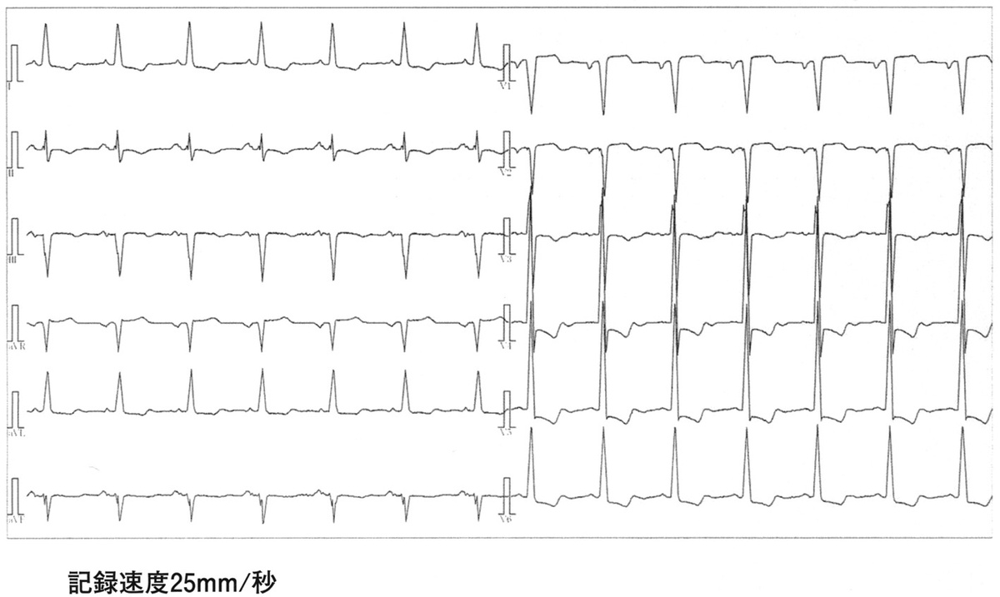
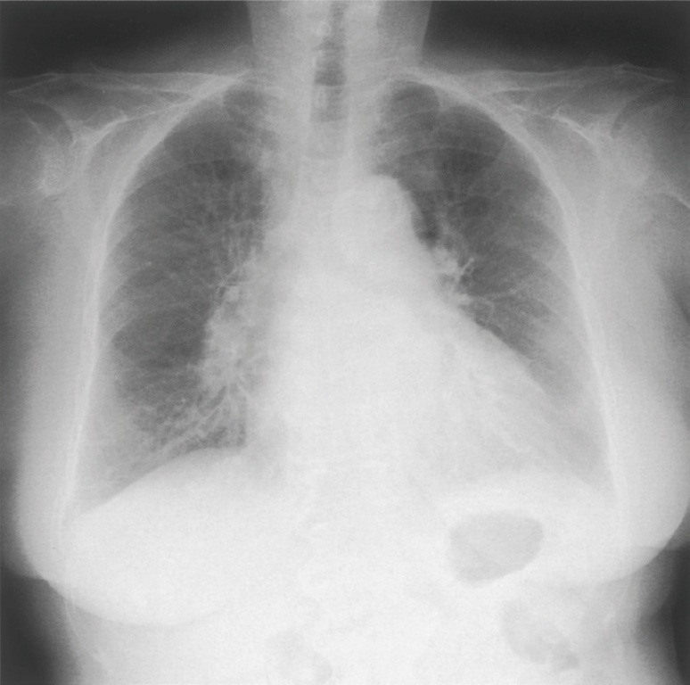
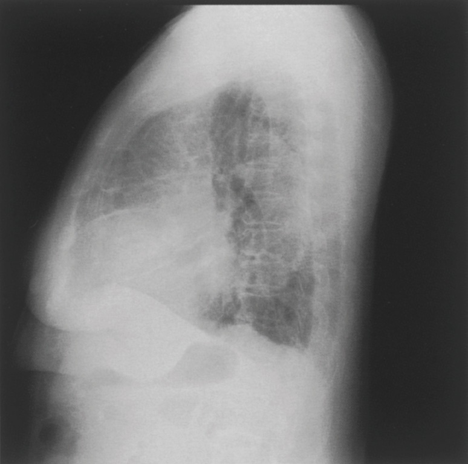
ａ 遅 脈
ｂ Ⅱ音の亢進
ｃ Kussmaul 呼吸
ｄ 腋窩に放散する収縮期心雑音
ｅ しゃがんだ時に減弱する心雑音
✅
ａ 遅脈
AS→左室流出路狭窄→大動脈への駆出が遅延→遅脈（pulsus tardus）・小脈（pulsus parvus）。
❤️ 重症ASの身体所見と検査所見を1つの病態から導く
本例の所見は「狭い弁口を通して血液を押し出さねばならない」という1点からすべて導ける。①脈——小脈・遅脈：1回拍出量が制限されて振幅が小さく〈parvus〉、立ち上がりが緩やかで頂点が遅い〈tardus〉。脈圧も狭くなる
②聴診：右第2肋間最強の駆出性収縮期雑音、両側頸動脈へ放散、ⅡA音の減弱・消失（重症の指標）、Ⅳ音（硬い左室へ心房が押し込む）、雑音の頂点が遅いほど重症
③心尖拍動：持続する強い拍動〈sustained／heaving〉＝圧負荷
④心電図：左室高電位（Sokolow-Lyon基準）とストレイン型ST-T変化——求心性肥大と心内膜下虚血の反映
⑤胸部エックス線写真：初期は心陰影が正常（求心性肥大では内腔が広がらない）、進行して心不全に至れば心拡大と肺うっ血、大動脈弁の石灰化・狭窄後拡張
⑥血液検査：BNPの著明な高値＝心室壁の伸展。本例は2,200pg/mLで重症の心不全
代償の破綻の順序：
求心性肥大で壁応力を保つ → 拡張障害で左房圧が上がる → 心房収縮への依存が高まる → 心不全 → 収縮力そのものの低下
⚠️ この段階の患者に心房細動が起こると急激に破綻する——硬い左室は心房収縮に頼っているので、それを失うと充満量が一気に落ちる。
□ 選択肢の検討
| 選択肢 | 解説 |
|---|---|
| ◯ ａ 遅 脈 | これが正解。遅脈〈pulsus tardus〉は「脈波の立ち上がりが緩やかで、頂点に達するのが遅い」脈で、大動脈弁狭窄症〈AS〉に特徴的である——狭い弁口を通してしか血液が出ていけないので、大動脈圧の上昇に時間がかかる。同時に1回拍出量が制限されるため振幅も小さくなり〈小脈：pulsus parvus〉、あわせて「小脈・遅脈〈pulsus parvus et tardus〉」と呼ばれる。本例がASであることは所見のすべてが指している：胸骨右縁第2肋間最強のⅢ/Ⅵ収縮期駆出性雑音で頸部へ放散、心電図（A）の著明な左室高電位とストレイン型ST-T変化＝圧負荷による求心性肥大、胸部エックス線写真（B,C）の心拡大と肺うっ血、BNP 2,200pg/mLという著明な高値＝心不全。80歳で失神・労作時息切れ・体重増加——3大症状のうち2つが出た重症ASである。 |
| ｂ Ⅱ音の亢進 | ASではむしろⅡ音は減弱する。Ⅱ音の大動脈成分〈ⅡA〉は、大動脈弁が閉じるときの音である——ASでは弁尖が石灰化して硬くなり、きれいに閉じる動きができないため、ⅡAは減弱し、重症では消失する。「ⅡA音の減弱・消失」はASの重症度を示す重要な所見である。ではⅡ音が亢進するのはどんなときか：ⅡAの亢進＝体循環の高血圧（大動脈圧が高いので弁が強く閉じる）、ⅡPの亢進＝肺高血圧（僧帽弁狭窄症・肺塞栓症・慢性肺疾患・左心不全から続発したもの）。本例の血圧は100/78mmHgと低めで、体循環の高血圧によるⅡA亢進は考えにくい。なお重症ASではⅡ音の奇異性分裂（呼気で分裂し、吸気で狭くなる）が起こりうる——左室の駆出が延びてⅡAがⅡPより遅れるためである。 |
| ｃ Kussmaul 呼吸 | 呼吸様式の異常であり、この病態では起こらない。Kussmaul呼吸は「深く大きい呼吸が規則的に続く」呼吸様式で、代謝性アシドーシスに対する呼吸性代償である——糖尿病ケトアシドーシス・尿毒症・乳酸アシドーシスで見られる。本例は血糖103mg/dL・尿ケトン体（－）・クレアチニン0.7mg/dLと腎機能も正常で、代謝性アシドーシスを示す情報が1つもない。呼吸数22/分・SpO2 98％（マスク5L/分酸素投与下）という所見は肺うっ血による頻呼吸で説明でき、Kussmaul呼吸とは呼吸の「深さ」が違う。⚠️ Kussmaul呼吸とKussmaul徴候はまったく別のものである——Kussmaul徴候は「吸気時に頸静脈圧が上昇する（正常とは逆）」所見で、収縮性心膜炎・右室梗塞・重症の三尖弁閉鎖不全症で見られる。名前が似ているだけで、意味も対象も違う。 |
| ｄ 腋窩に放散する収縮期心雑音 | 放散方向が違う。腋窩へ放散する収縮期雑音は僧帽弁閉鎖不全症〈MR〉の所見で、心尖部を最強点とする汎収縮期雑音である——逆流ジェットが左後方の左房へ向かうからである。本例の記載は「胸骨右縁第2肋間を最強点とするⅢ/Ⅵの収縮期駆出性雑音を聴取し、頸部への放散を認める」——最強点も形も放散方向もASのものである。放散方向は「ジェットがどちらへ向かうか」で決まる：AS＝両側頸動脈（上行大動脈へ向かう）、MR＝左腋窩から背部（左房へ向かう）、VSD＝胸骨左縁を取り巻いて右方、PDA＝背部・左鎖骨下。⚠️ ただし高齢者のASでは、雑音の高調成分が心尖部へも伝わって「腋窩でも聴こえる」ことがある〈Gallavardin現象〉——MRと紛らわしいが、時相が駆出性であることと頸部への放散で区別できる。 |
| ｅ しゃがんだ時に減弱する心雑音 | 変化の向きが逆である。しゃがみ込み〈squatting〉は下肢の静脈還流を増やして前負荷を上げ、同時に末梢血管を圧迫して後負荷も上げる——前負荷が増えれば1回拍出量が増え、狭い弁を通る血流量も増えるので、ASの雑音はむしろ増強する。ではしゃがみ込みで減弱する雑音は何か：肥大型閉塞性心筋症〈HOCM〉——左室が大きくなると流出路の狭窄が緩むから、僧帽弁逸脱症〈MVP〉——左室が大きくなると弁尖の余剰が相対的に減るから。この2つだけが「前負荷が増えると弱くなる」という例外的な反応を示し、立位・Valsalva手技では逆に増強する。⚠️ HOCMとASはどちらも収縮期駆出性雑音なので、体位による変化が最も有効な鑑別法である——頸動脈の触れ方（ASは小脈・遅脈／HOCMはspike and dome）も併せて確かめる。 |
🔍 体位・呼吸による雑音の変化——鑑別の道具として使う
雑音の鑑別で最も強力な道具は「条件を変えて音の変化を見る」ことである——とくにASとHOCMのように「どちらも収縮期駆出性雑音」という組合せでは、これが決め手になる。前負荷を増やす操作（しゃがみ込み・下肢挙上）：
ほとんどの雑音は増強する（流れる血液が増えるから）——AS・MR・AR・VSD
HOCMとMVPだけは減弱（左室が大きくなると狭窄や弁尖の余剰が緩む）
前負荷を減らす操作（立位・Valsalva手技）：
ほとんどの雑音は減弱
HOCMは増強、MVPはクリックが早く出て雑音が長くなる
後負荷を上げる操作（握力把持〈handgrip〉）：
MR・VSD・ARは増強（逆流量が増える／左室から出にくくなる）
ASとHOCMは減弱（大動脈圧が上がって左室との圧差が縮む）
呼吸：
吸気で増強＝右心系（TR・TS・PS・PR）＝Rivero-Carvallo徴候
呼気で増強＝左心系。とくにARの拡張期雑音は座位前傾＋呼気止めで最も明瞭
体位：
左側臥位＝心尖部の低調音（Ⅲ音・Ⅳ音・MSのランブル・MRの雑音）
座位で前傾＋呼気止め＝心基部の拡張期雑音（AR）・心膜摩擦音
⚠️ ASとHOCMの鑑別はこの表だけで済ませず、頸動脈の触診も併せて行う——ASは小脈・遅脈、HOCMは急峻に立ち上がって二峰性になる〈spike and dome〉。HOCMの雑音は頸部へ放散しない点も重要な違いである。
🎯 国試ポイント
ASの脈は小脈・遅脈〈pulsus parvus et tardus〉。脈圧はむしろ狭い。ASではⅡA音は減弱・消失する（亢進ではない）。ⅡA亢進＝体循環の高血圧／ⅡP亢進＝肺高血圧。
Kussmaul呼吸（代謝性アシドーシスの深い呼吸）とKussmaul徴候（吸気で頸静脈圧が上昇＝収縮性心膜炎・右室梗塞）は別物。
放散方向：AS＝頸部／MR＝腋窩。Gallavardin現象ではASの雑音が心尖部でも聴こえるが、時相と頸部への放散で区別する。
しゃがみ込みで減弱するのはHOCMとMVPだけ——ASを含む他の雑音は増強する。
心電図の左室高電位＋ストレイン型ST-T変化＝圧負荷による求心性肥大。
Q.330(113B-48)必修CBT臨床94%
次の文を読み、330 と331 の問いに答えよ。
68 歳の男性。一過性の意識消失を主訴に来院した。
現病歴：買い物中に突然目の前が真っ暗になり、意識を失って転倒した。居合わせた家族によると30 秒後に速やかに意識を回復したとのことであった。そのまま家族に連れられて受診した。
既往歴：10 年前から高血圧症で自宅近くの診療所に通院中。
生活歴：喫煙は10 本/ 日を68 歳まで40 年間。飲酒は機会飲酒。
家族歴：父親は70 歳時に大腸癌で死亡。
追加して確認すべき情報で重要度が低いのはどれか。
68 歳の男性。一過性の意識消失を主訴に来院した。
現病歴：買い物中に突然目の前が真っ暗になり、意識を失って転倒した。居合わせた家族によると30 秒後に速やかに意識を回復したとのことであった。そのまま家族に連れられて受診した。
既往歴：10 年前から高血圧症で自宅近くの診療所に通院中。
生活歴：喫煙は10 本/ 日を68 歳まで40 年間。飲酒は機会飲酒。
家族歴：父親は70 歳時に大腸癌で死亡。
追加して確認すべき情報で重要度が低いのはどれか。
ａ 内服薬
ｂ 動悸の有無
ｃ 胸痛の有無
ｄ 黒色便の有無
ｅ 頭位変換時のめまいの有無
✅
ｅ 頭位変換時のめまいの有無
頭位変換時のめまいは良性発作性頭位めまい症〈BPPV〉を疑う質問だが、BPPVは意識消失を伴わないので失神の鑑別には寄与しない。残る4つ（内服薬・動悸・胸痛・黒色便）はいずれも陽性なら方針が変わる情報である。
❤️ 一過性意識消失〈T-LOC〉の枠組みで考える
「一過性に意識を失った」という主訴はtransient loss of consciousness〈T-LOC〉と呼ばれ、まず4つに大別する：①失神〈syncope〉——一過性の脳全体の低灌流による。数十秒で完全回復
②てんかん発作——神経細胞の過剰な同期発火。発作後もうろう状態が続く
③心因性——心因性非てんかん発作。長時間続き、閉眼していることが多い
④その他——低血糖・低酸素・中毒・椎骨脳底動脈系の一過性脳虚血発作（きわめてまれ）
「めまい」「ふらつき」は意識消失を伴わないので、T-LOCには含まれない——本例で頭位変換時のめまい（BPPV）を聞く重要度が低いのはこのためである
失神の3機序（前の設問の解説と同じ枠組み）：
反射性（神経調節性）——最も多い。前駆症状を伴う。予後は良好
起立性低血圧——立ち上がったとき。薬剤・脱水・出血・自律神経障害
心原性——最も予後が悪い。不整脈と器質的心疾患
本例が心原性を疑わせる理由：
①前駆症状がほとんどない（「突然目の前が真っ暗になり」）
②回復が速く完全（30秒）
③68歳・40年間の喫煙歴・10年来の高血圧という動脈硬化の危険因子
④「買い物中」＝歩行中＝労作中の発症
続く設問で胸骨右縁第2肋間最強のⅣ/Ⅵ駆出性雑音が示され、大動脈弁狭窄症による労作時失神という診断に至る。
□ 選択肢の検討
| 選択肢 | 解説 |
|---|---|
| ａ 内服薬 | これは必ず確認すべき情報である（したがって答えではない）。薬剤は失神の原因として非常に多く、しかも中止・減量で対処できる「治せる原因」である。本例は10年前から高血圧症で通院中——降圧薬を内服している可能性が高い。失神を起こしうる薬剤を系統で押さえる： 起立性低血圧を起こす——降圧薬全般・利尿薬・α遮断薬・硝酸薬・三環系抗うつ薬・抗Parkinson病薬・前立腺肥大症の治療薬 徐脈を起こす——β遮断薬・非ジヒドロピリジン系Ca拮抗薬・ジギタリス・抗不整脈薬 QT延長からtorsades de pointesを起こす——抗不整脈薬・一部の抗菌薬／抗真菌薬・抗精神病薬・制吐薬。低カリウム血症・低マグネシウム血症が加わると危険が増す 低血糖を起こす——インスリン・スルホニル尿素薬 市販薬・サプリメント・他院の処方も含めて、実際に飲んでいるものを確認することが要る。 |
| ｂ 動悸の有無 | これも重要である（したがって答えではない）。動悸の有無は不整脈による失神を疑うための直接の手がかりである。聞き方も具体的にする——「速かったか遅かったか」「規則的か不規則か」「突然始まって突然止まったか」「どれくらい続いたか」： 突然始まり突然止まる規則的な頻脈——発作性上室頻拍 速く不規則——心房細動 失神の直前に一瞬だけ動悸があった、あるいはまったくなかった——心室頻拍・完全房室ブロックによるAdams-Stokes発作 ゆっくりした脈を自覚——徐脈性不整脈 本例は68歳・「突然目の前が真っ暗になり、意識を失って転倒し、30秒で速やかに回復」——前駆症状に乏しく回復が速い、心原性失神を強く疑う経過である。不整脈は発作時にしか捉えられないので、問診で発作時の様子を再構成することがきわめて重要である。 |
| ｃ 胸痛の有無 | これも重要である（したがって答えではない）。胸痛を伴う失神は、命に関わる疾患を示唆する： 急性冠症候群——心筋梗塞に伴う不整脈・心原性ショック 急性大動脈解離——心タンポナーデ・冠動脈入口部の閉塞・脳血流の途絶。突然の激烈な胸背部痛 肺塞栓症——右心不全から心拍出量が急減する。失神が唯一の症状のことがある 大動脈弁狭窄症——労作時の狭心痛と失神が3大症状のうち2つ 肥大型閉塞性心筋症——労作時の失神と胸痛 本例は68歳・40年間10本/日の喫煙歴・10年来の高血圧——動脈硬化性疾患の危険因子がそろっており、これらの除外は必須。なお続く設問（Q.331）で胸骨右縁第2肋間を最強点とするⅣ/Ⅵの駆出性雑音が明らかになり、本例の失神は大動脈弁狭窄症によるものと判明する。 |
| ｄ 黒色便の有無 | これも重要である（したがって答えではない）。黒色便〈タール便〉は上部消化管出血のサインで、循環血液量の減少と貧血の両方から失神を起こしうる。失神の原因として「出血していないか」は必ず確認する——とくに高齢者では、NSAIDsや抗血小板薬・抗凝固薬の使用に伴う消化管出血が多い。機序は2つある：①急性の出血による循環血液量の減少——起立性低血圧・頻脈・冷汗、②慢性の失血による貧血——酸素運搬能の低下。身体診察では眼瞼結膜の蒼白・起立性の血圧低下・直腸診による便の性状の確認を行う。本例は父親が70歳時に大腸癌で死亡という家族歴があり、消化管疾患を念頭に置く根拠がある。失神の原因は心臓に限らない——出血・脱水・貧血・低血糖・薬剤は、いずれも見落とされやすく、しかも治療できる原因である。 |
| ◯ ｅ 頭位変換時のめまいの有無 | これが正解——重要度が低い。頭位変換時のめまいは良性発作性頭位めまい症〈BPPV〉を疑う質問である——半規管内に迷入した耳石が、頭位を変えたときにクプラを刺激して回転性めまいを起こす疾患である。しかしBPPVで問題になるのは「めまい〈vertigo〉」であって「失神〈syncope〉」ではない——BPPVでは意識を失わない。両者は症状の性質がまったく違う：めまい＝周囲が回る・ふらつく感覚。意識は保たれる／失神＝脳全体の低灌流による意識消失。数十秒で完全回復。本例は「意識を失って転倒し、30秒後に速やかに意識を回復した」と明記されており、失神である。したがってBPPVを疑う問診は、この患者の診断にも治療方針にも寄与しない。⚠️ 「めまい」と「失神」を患者が同じ言葉で語ることは多いので、「目の前が暗くなったのか、周りが回ったのか、意識はあったのか」を分けて聞くことが問診の要点である。 |
🔍 「重要度が低いのはどれか」という問い方の読み方
この形式の設問は「間違っている選択肢」を探すのではなく、「他の4つより優先度が低いもの」を選ぶ——4つは「この患者の診断と方針に直結する」のに対し、1つだけが「別の疾患のための質問」という構造になっている。本例で残る4つが何を狙っているか：
内服薬——薬剤性の起立性低血圧・徐脈・QT延長。中止／減量で対処できる「治せる原因」
動悸の有無——不整脈性失神（Adams-Stokes発作）の直接の手がかり
胸痛の有無——急性冠症候群・大動脈解離・肺塞栓症・AS・HOCMという「命に関わる原因」の除外
黒色便の有無——消化管出血による循環血液量減少と貧血。高齢者に多く見落とされやすい
いずれも「陽性なら方針が大きく変わる」情報である——これが優先度の判定基準になる。
めまいと失神を切り分ける問診は実地でも重要である：
①「周りが回りましたか、それとも目の前が暗くなりましたか」——回転性めまいか、前失神か
②「意識はありましたか。周りの人と話せましたか」——意識消失の有無
③「倒れる前に何か感じましたか」——前駆症状の有無と長さ
④「どれくらいで元通りになりましたか」——回復の速さ
⑤「そばで見ていた人は何と言っていましたか」——目撃情報は本人の記憶より正確
⚠️ 患者は「めまいがした」という言葉で、回転性めまい・ふらつき・前失神・意識消失のすべてを表現する——言葉をそのまま受け取らず、実際に何が起きたかを再構成するのが問診の要点である。
🎯 国試ポイント
頭位変換時のめまい＝良性発作性頭位めまい症〈BPPV〉——意識消失を伴わないので、失神の鑑別には寄与しない。失神の問診で必ず聞くのは、内服薬・動悸・胸痛・出血（黒色便）——いずれも陽性なら方針が変わる。
心原性失神のレッドフラグ——労作中の発症・前駆症状なし・回復が速い・動悸や胸痛・器質的心疾患・心電図異常。
「めまい」と「失神」を患者は同じ言葉で語る——「周りが回ったのか、目の前が暗くなったのか、意識はあったのか」を分けて聞く。
高齢者の失神では薬剤（降圧薬・利尿薬・α遮断薬・β遮断薬）の確認を必ず行う。
Q.331(113B-49)必修CBT臨床📷 画像88%
次の文を読み、330 と331 の問いに答えよ。
68 歳の男性。一過性の意識消失を主訴に来院した。
現病歴：買い物中に突然目の前が真っ暗になり、意識を失って転倒した。居合わせた家族によると30 秒後に速やかに意識を回復したとのことであった。そのまま家族に連れられて受診した。
既往歴：10 年前から高血圧症で自宅近くの診療所に通院中。
生活歴：喫煙は10 本/ 日を68 歳まで40 年間。飲酒は機会飲酒。
家族歴：父親は70 歳時に大腸癌で死亡。
現 症：意識は清明。身長168cm、体重64kg。体温36.1℃。脈拍88/ 分、整。血圧128/88mmHg。呼吸数16/ 分。SpO2 98％（room air）。眼瞼結膜と眼球結膜とに異常を認めない。心臓の聴診で胸骨右縁第2 肋間を最強点とするⅣ/ Ⅵの駆出性雑音を認める。心音・心雑音の模式図を以下に示す。
この患者で予測されるのはどれか。
68 歳の男性。一過性の意識消失を主訴に来院した。
現病歴：買い物中に突然目の前が真っ暗になり、意識を失って転倒した。居合わせた家族によると30 秒後に速やかに意識を回復したとのことであった。そのまま家族に連れられて受診した。
既往歴：10 年前から高血圧症で自宅近くの診療所に通院中。
生活歴：喫煙は10 本/ 日を68 歳まで40 年間。飲酒は機会飲酒。
家族歴：父親は70 歳時に大腸癌で死亡。
現 症：意識は清明。身長168cm、体重64kg。体温36.1℃。脈拍88/ 分、整。血圧128/88mmHg。呼吸数16/ 分。SpO2 98％（room air）。眼瞼結膜と眼球結膜とに異常を認めない。心臓の聴診で胸骨右縁第2 肋間を最強点とするⅣ/ Ⅵの駆出性雑音を認める。心音・心雑音の模式図を以下に示す。
この患者で予測されるのはどれか。
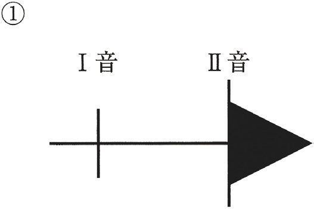
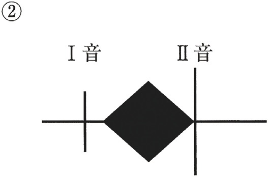
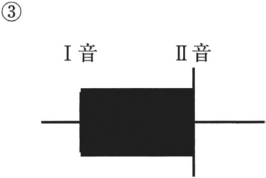
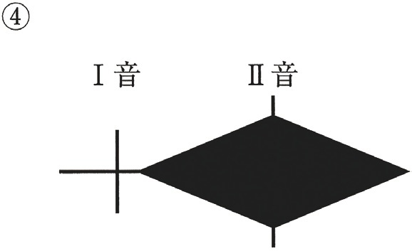
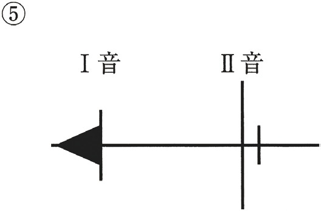
ａ ①
ｂ ②
ｃ ③
ｄ ④
ｅ ⑤
✅
ｂ ②
Ⅰ音ともⅡ音とも接しない菱形の収縮期雑音＝駆出性収縮期雑音の心音図で、胸骨右縁第2肋間最強・頸部へ放散という記載と合わせて大動脈弁狭窄症を示す。①Ⅱ音直後から漸減＝AR／③Ⅰ音からⅡ音まで一様＝汎収縮期雑音／④Ⅱ音をまたいで途切れない＝連続性雑音／⑤開放音＋前収縮期増強＝MS。
❤️ 心音図の模式図を読む——形と位置で疾患が決まる
心雑音の模式図は「Ⅰ音とⅡ音のどこに、どんな形で描かれているか」だけで疾患を絞り込める——形＝血流の速度変化、位置＝心周期のどの相かを表しているからである。収縮期（Ⅰ音〜Ⅱ音）：
菱形でⅠ音とⅡ音のどちらにも接しない——駆出性収縮期雑音。AS・PS・HOCM・無害性雑音
Ⅰ音からⅡ音まで一様な長方形——汎収縮期雑音。MR・TR・VSD
収縮中期のクリック＋その後の漸増——僧帽弁逸脱症
拡張期（Ⅱ音〜次のⅠ音）：
Ⅱ音直後から漸減——AR（またはPR）
Ⅱ音の少し後に小さな音（開放音）＋その後のランブル＋Ⅰ音へ向かう漸増——MS
拡張中期の短いランブル（Ⅰ音亢進も開放音もない）——ARのAustin Flint雑音
収縮期・拡張期をまたぐ：
Ⅱ音のあたりで最強となり途切れない——連続性雑音。PDA・動静脈瘻・Valsalva洞動脈瘤破裂・静脈コマ音
Ⅱ音のところで途切れて収縮期と拡張期に2つある——to and fro murmur。ARの収縮期駆出性＋拡張期漸減性
この分類に最強点を掛け合わせれば、疾患はほぼ一意に決まる：
右第2肋間＝大動脈弁領域／左第2肋間＝肺動脈弁領域／左第3肋間＝Erbの領域／左第4肋間＝三尖弁領域／心尖部＝僧帽弁領域。
□ 選択肢の検討
| 選択肢 | 解説 |
|---|---|
| ａ ① | ①はⅡ音の直後から始まってだんだん弱くなる拡張期漸減性雑音＝大動脈弁閉鎖不全症〈AR〉である。形が漸減する〈decrescendo〉のは、拡張期を通じて大動脈圧が左室圧より高い間だけ逆流が続き、その圧差が縮むにつれて音も弱くなるためである。聴診は胸骨左縁第3肋間（Erbの領域）で膜面を用い、座位で前傾して呼気で止める。ARなら脈圧が大きく開き、速脈・Quincke徴候などの末梢所見を伴う。本例の血圧は128/88mmHgで脈圧40mmHgと正常——ARを示す情報がない。さらに設問には「胸骨右縁第2肋間を最強点とするⅣ/Ⅵの駆出性雑音」と明記されている——「駆出性」という語が拡張期雑音を排除している。 |
| ◯ ｂ ② | これが正解。②はⅠ音とⅡ音の間に収まる菱形〈crescendo-decrescendo〉の収縮期雑音で、Ⅰ音ともⅡ音とも接していない——典型的な駆出性収縮期雑音の模式図である。この形が生まれる理由は心周期の力学にある： ①Ⅰ音の直後は等容性収縮期で、まだ大動脈弁が開いていない——だからⅠ音との間に隙間ができる ②弁が開いて駆出が始まると流速が上がり、駆出の中期に頂点を迎える ③駆出が終わるにつれて流速が落ち、Ⅱ音の前で雑音が消える 本例の記載「胸骨右縁第2肋間を最強点とするⅣ/Ⅵの駆出性雑音」と、68歳・高血圧・喫煙という背景、そして買い物中の失神——すべてが大動脈弁狭窄症〈AS〉を指している。Levine Ⅳ/Ⅵ＝thrillを触れる強さで、器質的疾患であることが確定する。重症になるほど雑音の頂点は収縮後期へ遅れる——狭いほど駆出に時間がかかるからである。 |
| ｃ ③ | ③はⅠ音からⅡ音まで一様に続く汎〈全〉収縮期雑音である。この形になるのは収縮期を通じて圧差が存在し続けるときで、高圧の腔から低圧の腔へ血液が漏れる病態を示す： 僧帽弁閉鎖不全症〈MR〉——心尖部最強、左腋窩へ放散。左室（120mmHg）と左房（10mmHg）の圧差が収縮期を通じて存在する 三尖弁閉鎖不全症〈TR〉——胸骨左縁下部、吸気で増強（Rivero-Carvallo徴候） 心室中隔欠損症〈VSD〉——胸骨左縁第3〜4肋間、thrillを伴うことが多い 駆出性雑音と違い、汎収縮期雑音はⅠ音の直後から始まる——房室弁は等容性収縮期の初めからすでに逆流しているからである。本例の雑音は「駆出性」で「胸骨右縁第2肋間が最強」——形も部位も合わない。 |
| ｄ ④ | ④は収縮期に始まってⅡ音を越え、拡張期まで続く雑音＝連続性雑音〈continuous murmur〉である。Ⅱ音のあたりで最も強くなるのが特徴で、動脈管開存症〈PDA〉の機械様雑音〈machinery murmur〉がその代表である。連続性になるのは収縮期にも拡張期にも圧差が存在し続けるからで、大動脈と肺動脈の間に交通があれば、心周期を通じて血液が流れ続ける。ほかにValsalva洞動脈瘤破裂・冠動静脈瘻・動静脈瘻・大動脈肺動脈中隔欠損、生理的なものとして静脈コマ音〈venous hum〉がある。PDAの最強点は胸骨左縁第2肋間で、背部・左鎖骨下へ伝わる。本例は68歳で新たに失神を発症しており、先天性心疾患としてのPDAを考える文脈ではない。⚠️ to and fro murmur（ARの収縮期駆出性＋拡張期漸減性）は連続性雑音とは別——Ⅱ音のところでいったん途切れる。 |
| ｅ ⑤ | ⑤はⅠ音に向かって強くなる拡張後期（前収縮期）の雑音で、Ⅱ音の直後に小さな追加の音を伴う。これは僧帽弁狭窄症〈MS〉の模式図である——Ⅱ音直後の小さな音＝僧帽弁開放音〈opening snap〉、Ⅰ音へ向かう漸増＝心房収縮による前収縮期増強。MSの聴診三徴は①Ⅰ音の亢進 ②僧帽弁開放音 ③拡張中期ランブル（前収縮期増強を伴う）である。ⅡA音から開放音までの間隔が短いほど重症——左房圧が高いほど早く弁が開くからで、数字で重症度を推し量れる数少ない聴診所見である。聴診は心尖部でベル面を軽く当て、左側臥位——低調な音だからである。⚠️ 心房細動になると心房収縮が失われるので、前収縮期増強は消える。本例は脈拍88/分・整で、雑音も「駆出性」と記載されており合わない。 |
🔍 Levine分類と、雑音の強さが意味するもの
本例の雑音はⅣ/Ⅵ——Levine分類の第4度である。Levine分類：
Ⅰ度——注意深く聴いてやっと聴こえる
Ⅱ度——聴診器を当てるとすぐ聴こえるが弱い
Ⅲ度——明らかに聴こえるが、thrillは触れない
Ⅳ度——thrill（振戦）を触れる
Ⅴ度——聴診器の縁だけを胸壁に当てても聴こえる
Ⅵ度——聴診器を胸壁から離しても聴こえる
Ⅳ度以上＝thrillを触れる＝例外なく器質的疾患——無害性雑音がⅣ度になることはない。
⚠️ ただし雑音の強さは重症度と比例しない——ASでは心拍出量が落ちれば雑音は小さくなるので、「雑音が小さくなった」ことが改善ではなく悪化を意味することがある。ASの重症度を身体所見で推し量るなら、①雑音の頂点の遅れ ②ⅡA音の減弱・消失 ③小脈・遅脈の3つを見る。
本例の診断と方針：
68歳・買い物中（労作中）の失神・胸骨右縁第2肋間最強のⅣ/Ⅵ駆出性雑音＝重症の大動脈弁狭窄症による労作時失神
失神が出現した重症ASの平均余命は約3年——それだけで手術適応である
次に行うのは心エコー——Vmax・平均圧較差・弁口面積・LVEF・弁の形態を確認する
続いて冠動脈評価（68歳・40年間の喫煙歴・高血圧）を行い、SAVRかTAVIかを決める
⚠️ この患者に硝酸薬や血管拡張薬を安易に投与しない——狭窄が固定されていて心拍出量を増やせないため、後負荷を下げると血圧を保てず失神やショックに至る。
🎯 国試ポイント
Ⅰ音ともⅡ音とも接しない菱形の収縮期雑音＝駆出性収縮期雑音＝AS（右第2肋間・頸部へ放散）。Ⅰ音からⅡ音まで一様＝汎収縮期雑音（MR・TR・VSD）／Ⅱ音直後から漸減＝AR／Ⅱ音をまたいで途切れない＝連続性雑音（PDA）。
Ⅱ音直後の小さな音＝僧帽弁開放音。Ⅰ音へ向かう前収縮期増強を伴えばMS（心房細動では前収縮期増強が消える）。
Levine Ⅳ度＝thrillを触れる＝器質的疾患。ただし雑音の強さは重症度と比例しない。
ASの重症度を示す身体所見は「雑音の頂点の遅れ・ⅡA音の減弱・小脈遅脈」の3つ。
Q.332(112D-9)一般91%
僧帽弁閉鎖不全症の原因になりにくいのはどれか。
ａ 急性心筋梗塞
ｂ 拡張型心筋症
ｃ 上行大動脈瘤
ｄ 感染性心内膜炎
ｅ 僧帽弁の粘液変性
✅
ｃ 上行大動脈瘤
上行大動脈瘤→大動脈弁閉鎖不全症（AR）の原因。僧帽弁とは解剖学的に遠く、MRの原因にならない。
📋 MRの原因と非原因
| 原因 | 機序 | 補足 |
|---|---|---|
| MRの原因 | ||
| 急性心筋梗塞（AMI） | 乳頭筋断裂・乳頭筋機能不全 | 後壁梗塞（RCA）で多い |
| 拡張型心筋症 | 心拡大→弁輪拡大（機能性MR） | |
| 感染性心内膜炎 | 弁組織破壊・穿孔 | |
| 僧帽弁粘液変性 | 弁逸脱（MVP） | 最多原因 |
| ×ARの原因 | ||
| 上行大動脈瘤 | 大動脈基部拡大→大動脈弁輪拡大→AR | Marfan症候群など |
🎯 国試ポイント
MR原因：MVP・感染性心内膜炎・乳頭筋断裂・拡張型心筋症・リウマチ熱。上行大動脈瘤→AR（大動脈弁閉鎖不全症）の原因であり、MRの原因にはならない。🔍 選択肢解説
a 急性心筋梗塞：乳頭筋障害でMR。b 拡張型心筋症：弁輪拡大でMR。
c 上行大動脈瘤：ARの原因でMRになりにくい。✓
d 感染性心内膜炎：弁破壊でMR。
e 僧帽弁の粘液変性：MVPでMR。
Q.333(111H-25)必修臨床85%
70 歳の男性。息苦しさを主訴に来院した。1 か月前から農作業の途中で息切れを自覚するようになり、1 週間前から就寝中に息苦しさで目が覚め、しばらく座っていると呼吸が楽になることが何度かあった。2 日前から就寝中の息苦しさが増悪するため受診した。意識は清明。体温36.5℃。脈拍88/ 分、整。血圧112/90mmHg。呼吸数24/ 分。SpO2 94％（room air）。頸静脈の怒張を認めない。胸部の聴診でⅡ音の奇異性分裂、Ⅲ音およびⅣ音を認め、胸骨右縁第2 肋間を最強点とするⅣ/ Ⅵの収縮期駆出性雑音を聴取し、頸部への放散を認める。両側の下胸部に吸気時のcoarse crackles を聴取する。下腿に軽度の浮腫を認める。
この患者で予想される所見はどれか。
この患者で予想される所見はどれか。
ａ 脈圧の開大
ｂ 大腿静脈の怒張
ｃ 脈波伝達速度の亢進
ｄ 頸動脈波の鈍い立ち上がり
ｅ 足関節上腕血圧比〈ABI〉の低下
✅
ｄ 頸動脈波の鈍い立ち上がり
ASの特徴的な末梢脈所見：頸動脈触診で立ち上がりが遅い（pulsus tardus）＋振幅小さい（pulsus parvus）。
❤️ ASの末梢循環所見
頸動脈波：鈍い立ち上がり（tardus）・振幅小（parvus）＝小脈・遅脈（parvus et tardus） ←典型的脈圧縮小：収縮期圧低め・拡張期圧正常→差が小さい
ｃ（Kussmaul）：代謝性アシドーシスの深大な過呼吸（ASとは関係なし）
🎯 国試ポイント
ASの身体所見ポイント：①頸動脈立ち上がりが鈍い（遅脈）②右第2肋間収縮期駆出性雑音③A₂消失④S₄。ａ（脈圧開大）→AR。ｃ（Kussmaul）→代謝性アシドーシス。ｅ（ABI低下）→末梢動脈疾患（PAD）。🔍 選択肢解説
本例は大動脈弁狭窄症。a 脈圧の開大：ARの所見でASは狭小化。
b 大腿静脈の怒張：無関係。
c 脈波伝達速度の亢進：主でない。
d 頸動脈波の鈍い立ち上がり：ASのpulsus parvus et tardus。✓
e ABIの低下：末梢動脈疾患の所見。
Q.334(110A-20)一般3択91%
大動脈弁狭窄症について予後不良の症候はどれか。3 つ選べ。
ａ 失 神
ｂ 狭心痛
ｃ 心不全
ｄ 脈圧の増大
ｅ 爪床血管拍動の出現
✅
ａ 失 神 ＋ ｂ 狭心痛 ＋ ｃ 心不全
ASの予後不良3徴＝狭心痛・失神・心不全。出現すると平均余命はそれぞれ約5年・3年・2年とされ、無症状のうちは低リスクなので「症状が出たら手術」が原則になる。
❤️ 感染性心内膜炎（IE）のDuke基準
主要基準（2項目中2、または1+3副要）①血液培養：IEの特徴的菌（Streptococcus viridans等）が2セット陽性
②心エコー所見：疣贅・膿瘍・新規弁逆流
副要基準：発熱・血管現象（Janeway病変等）・免疫現象（Osler結節・Roth斑等）・血液培養（主要を満たさない）
📋 IEの皮膚・眼所見
| 所見 | 特徴 |
|---|---|
| Janeway病変 | 手掌・足底の無痛性紅斑（血管現象） |
| Osler結節 | 指尖部の有痛性結節（免疫現象） |
| Roth斑 | 眼底の白色中心部を持つ出血斑（免疫現象） |
| 爪下出血（線状） | 線状出血→血管塞栓 |
🎯 国試ポイント
Duke主要基準：血液培養+心エコー所見（疣贅・膿瘍・新規弁逆流）。JanewayはAF（血管現象）、OslerはIF（免疫現象）→皮膚所見は副要基準。🔍 選択肢解説
a 失神：ASの予後不良の三徴。✓b 狭心痛：三徴。✓
c 心不全：三徴。✓
d 脈圧の増大：ARの所見。
e 爪床血管拍動の出現：ARの所見。
Q.335(110D-40)臨床94%
68 歳の男性。労作時の前胸部圧迫感を主訴に来院した。半年前から早足で歩くときなどに前胸部圧迫感を自覚していた。症状は咽頭部から顎にかけての詰まる感じを伴うが、安静により3 分程度で良くなるので医療機関は受診していなかった。3 週前から軽労作でも症状が生じるようになり、生活が制限されるようになってきた。今朝8 時には、朝食後に症状が出現し10 分程度続いた。同時に一過性の眼前暗黒感も生じたため受診した。意識は清明。身長168cm、体重68kg。体温36.2℃。脈拍76/ 分、整。血圧150/88mmHg。呼吸数16/ 分。SpO2 98％（room air）。胸部の聴診でⅡ音の奇異性分裂、Ⅲ音およびⅣ音を認め、胸骨右縁第2 肋間を最強点とするⅣ/ Ⅵの収縮期駆出性雑音を聴取する。呼吸音に異常を認めない。腹部に異常を認めない。血液所見：赤血球443 万、Hb 14.4g/dL、Ht 41％、白血球4,800、血小板14 万。血液生化学所見：総蛋白7.2g/dL、アルブミン3.8g/dL、総ビリルビン1.2mg/dL、AST56IU/L、ALT 48IU/L、LD 222IU/L（基準176 ～353）、ALP 356IU/L（基準115 ～359）、γ-GTP 50IU/L（基準8～50）、アミラーゼ118IU/L（基準37～160）、尿素窒素18mg/dL、クレアチニン0.9mg/dL。Na 138mEq/L、K 4.2mEq/L、Cl 102mEq/L。CRP 0.3mg/dL。胸部エックス線写真で左第1 弓の軽度の突出を認める。心電図は心拍数78/ 分の洞調律で左室高電位の所見を認める。呼吸機能検査で異常を認めない。
次に行うべき検査はどれか。
次に行うべき検査はどれか。
ａ 心エコー
ｂ 胸部造影CT
ｃ Holter 心電図
ｄ 運動負荷心電図
ｅ 心臓カテーテル検査
✅
ａ 心エコー
胸痛+心雑音（AS疑い）→まず非侵襲的な心エコーで弁膜症の評価・重症度判定。
❤️ AS診断のアプローチ
心エコー（最初の検査）：弁口面積・弁口圧較差・LVEF・弁の石灰化→重症度評価心臓カテーテル検査：冠動脈評価（術前に施行）・エコーと非一致時
運動負荷心電図：無症状AS→禁忌（心停止リスク）
ホルター心電図：不整脈評価
📋 ASの重症度基準
| 重症度 | 弁口面積 | 圧較差 | 血流速度 |
|---|---|---|---|
| 重症度 | 弁口面積 | 弁口圧較差 | 血流速度 |
| 軽症 | >1.5cm² | <25mmHg | <3m/秒 |
| 中等症 | 1.0〜1.5cm² | 25〜40mmHg | 3〜4m/秒 |
| 重症 | <1.0cm² | >40mmHg | >4m/秒 |
🎯 国試ポイント
ASの検査順序：①心エコー（非侵襲的・第一選択）→②重症例・手術前に心臓カテーテル（冠動脈評価）。無症状重症ASへの運動負荷試験は原則禁忌（重篤な不整脈・失神）。🔍 選択肢解説
労作性狭心痛＋AS(駆出性雑音)。a 心エコー：ASの評価(弁口面積・圧較差)。✓
b 胸部造影CT：主でない。
c Holter心電図：主でない。
d 運動負荷心電図：症候性ASに禁忌。
e 心臓カテーテル検査：侵襲的で第一でない。
Q.336(109B-48)臨床📷 画像97%
79 歳の男性。呼吸困難のため搬入された。10 年前から高血圧症、脂質異常症および2 型糖尿病で加療中である。1 年6 か月前に急性心筋梗塞を発症し、左前下行枝の完全閉塞に対しカテーテル治療を施行された。その後、抗血小板薬、利尿薬およびβ遮断薬を投与され、日常生活で心不全の症状を認めなかった。数日前から労作時の息切れを自覚し、数時間前から安静時にも強い呼吸困難を生じたため救急搬送された。意識は清明。脈拍104/ 分、整。血圧154/102mmHg。呼吸数24/ 分。SpO2 100％（リザーバー付マスク10L/ 分酸素投与下）。心尖部を最強点とするⅣ/ Ⅵの収縮期雑音を聴取する。両側の胸部にcoarse crackles とwheezes とを聴取する。血液生化学所見：AST22IU/L、ALT 19IU/L、LD 218IU/L（基準176～353）、CK 52IU/L（基準30～140）、脳性ナトリウム利尿ペプチド〈BNP〉952pg/mL（基準18.4 以下）。胸部エックス線写真（A）と心エコー図（B）とを示す。
呼吸困難の原因として考えられるのはどれか。
呼吸困難の原因として考えられるのはどれか。
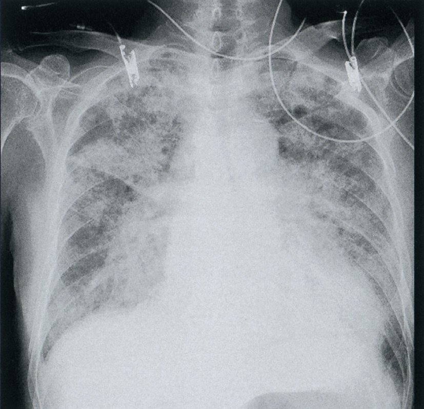
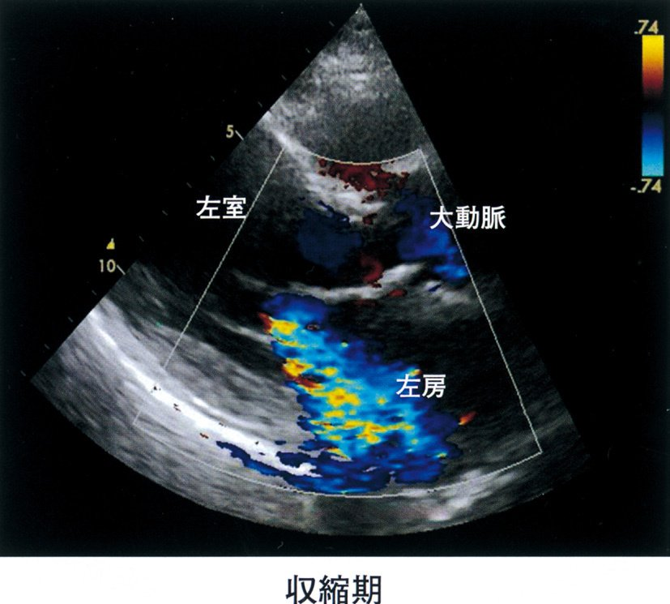
ａ 心室中隔穿孔
ｂ 心タンポナーデ
ｃ 三尖弁閉鎖不全症
ｄ 僧帽弁閉鎖不全症
ｅ 大動脈弁閉鎖不全症
✅
ｄ 僧帽弁閉鎖不全症
LAD梗塞後→心尖部〜前壁の壁運動障害→乳頭筋機能不全→機能性MR（機能的僧帽弁閉鎖不全）。
❤️ 心筋梗塞後の弁膜症
機能性MR：LAD梗塞→心尖部壁運動低下→前乳頭筋機能不全→MR乳頭筋断裂MR：AMI急性期（2〜7日）→急性MR→肺水腫・ショック
VSD（心室中隔穿孔）：AMI急性期→突然の収縮期雑音増悪+両心不全
📋 AMI合併症の鑑別
| 合併症 | 原因 | 特徴 |
|---|---|---|
| 機能性MR | LAD梗塞→乳頭筋機能不全 | 慢性経過・心拡大で増悪 |
| 乳頭筋断裂MR | 後壁AMI（RCA）→急性MR | AMI後2〜7日・ショック |
| VSD | 前壁AMI（LAD）→急性期 | AMI後2〜7日・両心不全 |
| 心タンポナーデ | 心破裂 | 急性期・緊急心嚢ドレナージ |
🎯 国試ポイント
LAD梗塞後の慢性MR：心拡大→弁輪拡大+乳頭筋機能不全→機能性MR。急性乳頭筋断裂はRCA（後下行枝）梗塞で多い。🔍 選択肢解説
陳旧性心筋梗塞後の急性心不全＋新規収縮期雑音。a 心室中隔穿孔：胸骨左縁の雑音。
b 心タンポナーデ：合わない。
c 三尖弁閉鎖不全症：右心系。
d 僧帽弁閉鎖不全症：梗塞後の乳頭筋機能不全による虚血性MR(心尖部収縮期雑音)。✓
e 大動脈弁閉鎖不全症：拡張期雑音。
Q.337(109G-57)臨床91%
38 歳の女性。労作時息切れを主訴に来院した。幼少時に先天性僧帽弁狭窄症と診断され、経過観察されていた。1 年前から買い物で長時間歩くと息切れを自覚していた。最近は家事でも息切れを生じるようになってきた。今回、精査の結果で人工弁置換術を施行する予定となった。
人工弁の種類（生体弁または機械弁）の選択において考慮すべきなのはどれか。
人工弁の種類（生体弁または機械弁）の選択において考慮すべきなのはどれか。
ａ 挙児希望
ｂ う歯の有無
ｃ 左室収縮能
ｄ 僧帽弁の石灰化の程度
ｅ 三尖弁閉鎖不全症の合併
✅
ａ 挙児希望
38歳女性＝妊娠の可能性がある。機械弁は生涯のワルファリンが必要で催奇形性と胎児出血の問題があるため、挙児希望があれば耐久性に劣っても生体弁を選ぶ。
❤️ 人工弁選択における考慮事項
挙児希望：機械弁→ワルファリン必要（催奇形性）→生体弁推奨う歯（虫歯）の有無：感染性心内膜炎の予防（口腔内細菌）→術前歯科治療
左室収縮能：手術リスク・術後予後評価
弁の石灰化：PTMC（経皮的交連切開術）の適応判断
🎯 国試ポイント
人工弁の選択：機械弁＝耐久性高いが生涯ワルファリン必要。生体弁＝ワルファリン不要だが10〜15年で劣化。若い女性（挙児希望）→生体弁。挙児希望は弁選択に直結する最重要事項。🔍 選択肢解説
a 挙児希望：妊娠希望なら催奇形性のワルファリンを要する機械弁の可否を考慮。✓b う歯の有無：主でない。
c 左室収縮能：主でない。
d 僧帽弁の石灰化の程度：主でない。
e 三尖弁閉鎖不全症の合併：主でない。
Q.338(109G-64)臨床96%
次の文を読み、338 ～340 の問いに答えよ。
86 歳の女性。発熱と呼吸困難とを主訴に来院した。
現病歴：ADL は自立していたが半年前から時々食事中にむせることがあった。2 日前から咳や痰を伴う38℃台の発熱が出現した。しばらく自宅で様子をみていたが、今朝になり呼吸困難も生じたため同居中の長女に付き添われて受診した。
既往歴：60 歳ころから高血圧症、80 歳ころから心房細動で投薬治療中。
生活歴：喫煙歴と飲酒歴とはない。
家族歴：父親が心筋梗塞で死亡。母親が胃癌で死亡。
現 症：意識レベルはJCSⅠ-3。身長150cm、体重54kg。体温38.4℃。脈拍112/ 分、不整。血圧152/72mmHg。呼吸数24/ 分。SpO2 94％（鼻カニューラ2L/ 分酸素投与下）。頸静脈の怒張を認める。Ⅲ音を聴取する。Ⅳ音を聴取しない。心尖部を最強点とするⅢ/ Ⅵの汎〈全〉収縮期雑音を聴取する。右背下部でcoarse crackles を聴取する。腹部は平坦、軟で、肝・脾を触知しない。両側下腿に浮腫を認める。
検査所見：尿所見：蛋白（－）、糖（－）、潜血1 ＋、沈査に白血球を認めない。血液所見：赤血球347 万、Hb9.9g/dL、Ht 30％、白血球10,200（桿状核好中球30％、分葉核好中球45％、好酸球1％、好塩基球1％、単球6％、リンパ球17％）、血小板28 万。血液生化学所見：総蛋白5.4g/dL、アルブミン2.7g/dL、総ビリルビン0.9mg/dL、AST 28IU/L、ALT 26IU/L、LD 280IU/L（基準176 ～353）、ALP 174IU/L（基準115 ～359）、γ-GTP 24IU/L（基準8 ～50）、アミラーゼ72IU/L（基準37 ～160）、CK 135IU/L（基準30 ～140）、尿素窒素27mg/dL、クレアチニン1.1mg/dL、尿酸6.9mg/dL、血糖112mg/dL、HbA1c 6.0％（基準4.6 ～6.2）、Na 133mEq/L、K 4.0mEq/L、Cl 97mEq/L。CRP 7.4mg/dL。胸部エックス線写真で右下肺野浸潤影、肺血管陰影の増強、右肋骨横隔膜角鈍化、右第2 弓の二重陰影および左第4 弓の突出を認める。12 誘導心電図で心拍数110/ 分の心房細動を認める。
経胸壁心エコー検査で予想されるのはどれか。
86 歳の女性。発熱と呼吸困難とを主訴に来院した。
現病歴：ADL は自立していたが半年前から時々食事中にむせることがあった。2 日前から咳や痰を伴う38℃台の発熱が出現した。しばらく自宅で様子をみていたが、今朝になり呼吸困難も生じたため同居中の長女に付き添われて受診した。
既往歴：60 歳ころから高血圧症、80 歳ころから心房細動で投薬治療中。
生活歴：喫煙歴と飲酒歴とはない。
家族歴：父親が心筋梗塞で死亡。母親が胃癌で死亡。
現 症：意識レベルはJCSⅠ-3。身長150cm、体重54kg。体温38.4℃。脈拍112/ 分、不整。血圧152/72mmHg。呼吸数24/ 分。SpO2 94％（鼻カニューラ2L/ 分酸素投与下）。頸静脈の怒張を認める。Ⅲ音を聴取する。Ⅳ音を聴取しない。心尖部を最強点とするⅢ/ Ⅵの汎〈全〉収縮期雑音を聴取する。右背下部でcoarse crackles を聴取する。腹部は平坦、軟で、肝・脾を触知しない。両側下腿に浮腫を認める。
検査所見：尿所見：蛋白（－）、糖（－）、潜血1 ＋、沈査に白血球を認めない。血液所見：赤血球347 万、Hb9.9g/dL、Ht 30％、白血球10,200（桿状核好中球30％、分葉核好中球45％、好酸球1％、好塩基球1％、単球6％、リンパ球17％）、血小板28 万。血液生化学所見：総蛋白5.4g/dL、アルブミン2.7g/dL、総ビリルビン0.9mg/dL、AST 28IU/L、ALT 26IU/L、LD 280IU/L（基準176 ～353）、ALP 174IU/L（基準115 ～359）、γ-GTP 24IU/L（基準8 ～50）、アミラーゼ72IU/L（基準37 ～160）、CK 135IU/L（基準30 ～140）、尿素窒素27mg/dL、クレアチニン1.1mg/dL、尿酸6.9mg/dL、血糖112mg/dL、HbA1c 6.0％（基準4.6 ～6.2）、Na 133mEq/L、K 4.0mEq/L、Cl 97mEq/L。CRP 7.4mg/dL。胸部エックス線写真で右下肺野浸潤影、肺血管陰影の増強、右肋骨横隔膜角鈍化、右第2 弓の二重陰影および左第4 弓の突出を認める。12 誘導心電図で心拍数110/ 分の心房細動を認める。
経胸壁心エコー検査で予想されるのはどれか。
ａ 大動脈弁狭窄症
ｂ 大動脈弁閉鎖不全症
ｃ 僧帽弁狭窄症
ｄ 僧帽弁閉鎖不全症
ｅ 肺動脈弁狭窄症
✅
ｄ 僧帽弁閉鎖不全症
心尖部最強の汎収縮期雑音＋Ⅲ音＋胸部エックス線の右第2弓二重陰影（左房拡大）と左第4弓突出（左室拡大）→僧帽弁閉鎖不全症。
❤️ 心エコーにおける弁膜症診断
僧帽弁閉鎖不全症（MR）のエコー所見：カラードプラで左室→左房への逆流ジェット左室・左房拡大：容量負荷
弁逸脱・腱索断裂・弁穿孔などの形態異常
📋 心エコーで評価する弁膜症
| 弁膜症 | エコー所見 | 重症度指標 |
|---|---|---|
| MR | カラードプラ：左室→左房逆流 | 有効逆流口面積（EROA） |
| MS | PHT（圧半減時間）法 | 弁口面積・弁肥厚・石灰化 |
| AS | CW-ドプラ：最高血流速度 | 弁口面積（連続の方程式） |
| AR | カラードプラ：大動脈→左室逆流 | 逆流幅/LVOTd比 |
🎯 国試ポイント
MR診断のゴールドスタンダード：経胸壁・経食道心エコー（カラードプラ）。術前には経食道心エコーで弁の形態詳細評価。🔍 選択肢解説
a 大動脈弁狭窄症：駆出性雑音で合わない。b 大動脈弁閉鎖不全症：拡張期。
c 僧帽弁狭窄症：拡張期。
d 僧帽弁閉鎖不全症：心尖部の全収縮期雑音。✓
e 肺動脈弁狭窄症：合わない。
Q.339(109G-65)臨床80%
次の文を読み、338 ～340 の問いに答えよ。
86 歳の女性。発熱と呼吸困難とを主訴に来院した。
現病歴：ADL は自立していたが半年前から時々食事中にむせることがあった。2 日前から咳や痰を伴う38℃台の発熱が出現した。しばらく自宅で様子をみていたが、今朝になり呼吸困難も生じたため同居中の長女に付き添われて受診した。
既往歴：60 歳ころから高血圧症、80 歳ころから心房細動で投薬治療中。
生活歴：喫煙歴と飲酒歴とはない。
家族歴：父親が心筋梗塞で死亡。母親が胃癌で死亡。
現 症：意識レベルはJCSⅠ-3。身長150cm、体重54kg。体温38.4℃。脈拍112/ 分、不整。血圧152/72mmHg。呼吸数24/ 分。SpO2 94％（鼻カニューラ2L/ 分酸素投与下）。頸静脈の怒張を認める。Ⅲ音を聴取する。Ⅳ音を聴取しない。心尖部を最強点とするⅢ/ Ⅵの汎〈全〉収縮期雑音を聴取する。右背下部でcoarse crackles を聴取する。腹部は平坦、軟で、肝・脾を触知しない。両側下腿に浮腫を認める。
検査所見：尿所見：蛋白（－）、糖（－）、潜血1 ＋、沈査に白血球を認めない。血液所見：赤血球347 万、Hb9.9g/dL、Ht 30％、白血球10,200（桿状核好中球30％、分葉核好中球45％、好酸球1％、好塩基球1％、単球6％、リンパ球17％）、血小板28 万。血液生化学所見：総蛋白5.4g/dL、アルブミン2.7g/dL、総ビリルビン0.9mg/dL、AST 28IU/L、ALT 26IU/L、LD 280IU/L（基準176 ～353）、ALP 174IU/L（基準115 ～359）、γ-GTP 24IU/L（基準8 ～50）、アミラーゼ72IU/L（基準37 ～160）、CK 135IU/L（基準30 ～140）、尿素窒素27mg/dL、クレアチニン1.1mg/dL、尿酸6.9mg/dL、血糖112mg/dL、HbA1c 6.0％（基準4.6 ～6.2）、Na 133mEq/L、K 4.0mEq/L、Cl 97mEq/L。CRP 7.4mg/dL。胸部エックス線写真で右下肺野浸潤影、肺血管陰影の増強、右肋骨横隔膜角鈍化、右第2 弓の二重陰影および左第4 弓の突出を認める。12 誘導心電図で心拍数110/ 分の心房細動を認める。
次に行うべきなのはどれか。
86 歳の女性。発熱と呼吸困難とを主訴に来院した。
現病歴：ADL は自立していたが半年前から時々食事中にむせることがあった。2 日前から咳や痰を伴う38℃台の発熱が出現した。しばらく自宅で様子をみていたが、今朝になり呼吸困難も生じたため同居中の長女に付き添われて受診した。
既往歴：60 歳ころから高血圧症、80 歳ころから心房細動で投薬治療中。
生活歴：喫煙歴と飲酒歴とはない。
家族歴：父親が心筋梗塞で死亡。母親が胃癌で死亡。
現 症：意識レベルはJCSⅠ-3。身長150cm、体重54kg。体温38.4℃。脈拍112/ 分、不整。血圧152/72mmHg。呼吸数24/ 分。SpO2 94％（鼻カニューラ2L/ 分酸素投与下）。頸静脈の怒張を認める。Ⅲ音を聴取する。Ⅳ音を聴取しない。心尖部を最強点とするⅢ/ Ⅵの汎〈全〉収縮期雑音を聴取する。右背下部でcoarse crackles を聴取する。腹部は平坦、軟で、肝・脾を触知しない。両側下腿に浮腫を認める。
検査所見：尿所見：蛋白（－）、糖（－）、潜血1 ＋、沈査に白血球を認めない。血液所見：赤血球347 万、Hb9.9g/dL、Ht 30％、白血球10,200（桿状核好中球30％、分葉核好中球45％、好酸球1％、好塩基球1％、単球6％、リンパ球17％）、血小板28 万。血液生化学所見：総蛋白5.4g/dL、アルブミン2.7g/dL、総ビリルビン0.9mg/dL、AST 28IU/L、ALT 26IU/L、LD 280IU/L（基準176 ～353）、ALP 174IU/L（基準115 ～359）、γ-GTP 24IU/L（基準8 ～50）、アミラーゼ72IU/L（基準37 ～160）、CK 135IU/L（基準30 ～140）、尿素窒素27mg/dL、クレアチニン1.1mg/dL、尿酸6.9mg/dL、血糖112mg/dL、HbA1c 6.0％（基準4.6 ～6.2）、Na 133mEq/L、K 4.0mEq/L、Cl 97mEq/L。CRP 7.4mg/dL。胸部エックス線写真で右下肺野浸潤影、肺血管陰影の増強、右肋骨横隔膜角鈍化、右第2 弓の二重陰影および左第4 弓の突出を認める。12 誘導心電図で心拍数110/ 分の心房細動を認める。
次に行うべきなのはどれか。
ａ 喀痰培養
ｂ 腰椎穿刺
ｃ 嚥下機能検査
ｄ 呼吸機能検査
ｅ 経食道心エコー検査
✅
ａ 喀痰培養
発熱＋新規心雑音→感染性心内膜炎（IE）疑い。血液培養が最重要だが、選択肢にある喀痰培養も感染巣同定に行う。ただしIEの確定診断には血液培養が必須。
❤️ 感染性心内膜炎（IE）の診断
血液培養（最重要）：2セット以上・抗菌薬投与前に採取Duke診断基準：大基準（血液培養+心エコー所見）+ 小基準
経食道心エコー（TEE）：疣贅（vegetation）検出→経胸壁より高感度
🎯 国試ポイント
IE確定には血液培養が必須。発熱+心雑音+塞栓症状（皮膚病変・脾腫・眼底出血）→IEを疑う。抗菌薬投与前に血液培養を複数セット採取。🔍 選択肢解説
誤嚥性肺炎の起因菌を検索する。a 喀痰培養：肺炎の起因菌検索。✓
b 腰椎穿刺：不要。
c 嚥下機能検査：急性期でない。
d 呼吸機能検査：急性期に不適。
e 経食道心エコー検査：主でない。
Q.340(109G-66)臨床90%
次の文を読み、338 ～340 の問いに答えよ。
86 歳の女性。発熱と呼吸困難とを主訴に来院した。
現病歴：ADL は自立していたが半年前から時々食事中にむせることがあった。2 日前から咳や痰を伴う38℃台の発熱が出現した。しばらく自宅で様子をみていたが、今朝になり呼吸困難も生じたため同居中の長女に付き添われて受診した。
既往歴：60 歳ころから高血圧症、80 歳ころから心房細動で投薬治療中。
生活歴：喫煙歴と飲酒歴とはない。
家族歴：父親が心筋梗塞で死亡。母親が胃癌で死亡。
現 症：意識レベルはJCSⅠ-3。身長150cm、体重54kg。体温38.4℃。脈拍112/ 分、不整。血圧152/72mmHg。呼吸数24/ 分。SpO2 94％（鼻カニューラ2L/ 分酸素投与下）。頸静脈の怒張を認める。Ⅲ音を聴取する。Ⅳ音を聴取しない。心尖部を最強点とするⅢ/ Ⅵの汎〈全〉収縮期雑音を聴取する。右背下部でcoarse crackles を聴取する。腹部は平坦、軟で、肝・脾を触知しない。両側下腿に浮腫を認める。
検査所見：尿所見：蛋白（－）、糖（－）、潜血1 ＋、沈査に白血球を認めない。血液所見：赤血球347 万、Hb9.9g/dL、Ht 30％、白血球10,200（桿状核好中球30％、分葉核好中球45％、好酸球1％、好塩基球1％、単球6％、リンパ球17％）、血小板28 万。血液生化学所見：総蛋白5.4g/dL、アルブミン2.7g/dL、総ビリルビン0.9mg/dL、AST 28IU/L、ALT 26IU/L、LD 280IU/L（基準176 ～353）、ALP 174IU/L（基準115 ～359）、γ-GTP 24IU/L（基準8 ～50）、アミラーゼ72IU/L（基準37 ～160）、CK 135IU/L（基準30 ～140）、尿素窒素27mg/dL、クレアチニン1.1mg/dL、尿酸6.9mg/dL、血糖112mg/dL、HbA1c 6.0％（基準4.6 ～6.2）、Na 133mEq/L、K 4.0mEq/L、Cl 97mEq/L。CRP 7.4mg/dL。胸部エックス線写真で右下肺野浸潤影、肺血管陰影の増強、右肋骨横隔膜角鈍化、右第2 弓の二重陰影および左第4 弓の突出を認める。12 誘導心電図で心拍数110/ 分の心房細動を認める。入院し、ベッド上安静とした上で治療を開始した。入院3 日目には発熱と呼吸不全とは改善した。同日の夕方から落ち着きがなくなり、夜には大声をあげるようになった。翌日に撮影した頭部CT で脳全体の萎縮を認める。
今後の対応として正しいのはどれか。
86 歳の女性。発熱と呼吸困難とを主訴に来院した。
現病歴：ADL は自立していたが半年前から時々食事中にむせることがあった。2 日前から咳や痰を伴う38℃台の発熱が出現した。しばらく自宅で様子をみていたが、今朝になり呼吸困難も生じたため同居中の長女に付き添われて受診した。
既往歴：60 歳ころから高血圧症、80 歳ころから心房細動で投薬治療中。
生活歴：喫煙歴と飲酒歴とはない。
家族歴：父親が心筋梗塞で死亡。母親が胃癌で死亡。
現 症：意識レベルはJCSⅠ-3。身長150cm、体重54kg。体温38.4℃。脈拍112/ 分、不整。血圧152/72mmHg。呼吸数24/ 分。SpO2 94％（鼻カニューラ2L/ 分酸素投与下）。頸静脈の怒張を認める。Ⅲ音を聴取する。Ⅳ音を聴取しない。心尖部を最強点とするⅢ/ Ⅵの汎〈全〉収縮期雑音を聴取する。右背下部でcoarse crackles を聴取する。腹部は平坦、軟で、肝・脾を触知しない。両側下腿に浮腫を認める。
検査所見：尿所見：蛋白（－）、糖（－）、潜血1 ＋、沈査に白血球を認めない。血液所見：赤血球347 万、Hb9.9g/dL、Ht 30％、白血球10,200（桿状核好中球30％、分葉核好中球45％、好酸球1％、好塩基球1％、単球6％、リンパ球17％）、血小板28 万。血液生化学所見：総蛋白5.4g/dL、アルブミン2.7g/dL、総ビリルビン0.9mg/dL、AST 28IU/L、ALT 26IU/L、LD 280IU/L（基準176 ～353）、ALP 174IU/L（基準115 ～359）、γ-GTP 24IU/L（基準8 ～50）、アミラーゼ72IU/L（基準37 ～160）、CK 135IU/L（基準30 ～140）、尿素窒素27mg/dL、クレアチニン1.1mg/dL、尿酸6.9mg/dL、血糖112mg/dL、HbA1c 6.0％（基準4.6 ～6.2）、Na 133mEq/L、K 4.0mEq/L、Cl 97mEq/L。CRP 7.4mg/dL。胸部エックス線写真で右下肺野浸潤影、肺血管陰影の増強、右肋骨横隔膜角鈍化、右第2 弓の二重陰影および左第4 弓の突出を認める。12 誘導心電図で心拍数110/ 分の心房細動を認める。入院し、ベッド上安静とした上で治療を開始した。入院3 日目には発熱と呼吸不全とは改善した。同日の夕方から落ち着きがなくなり、夜には大声をあげるようになった。翌日に撮影した頭部CT で脳全体の萎縮を認める。
今後の対応として正しいのはどれか。
ａ 胃瘻造設
ｂ 身体拘束
ｃ 早期離床
ｄ 認知症治療薬の投与
ｅ ベンゾジアゼピン系睡眠薬の経口投与
✅
ｃ 早期離床
入院中の不穏・大声→せん妄（delirium）。高齢者の入院後せん妄→非薬物療法が第一（早期離床・見当識維持・睡眠リズム）。
❤️ 入院せん妄の管理
せん妄の非薬物療法（第一選択）：早期離床・日中の活動・見当識維持（時計・カレンダー）・睡眠リズム調整禁忌・注意：身体拘束（せん妄悪化）・ベンゾジアゼピン（転倒・呼吸抑制）
薬物療法：ハロペリドール（少量）・クエチアピン（DLBは禁忌）
📋 せん妄 vs 認知症
| 特徴 | せん妄 | 認知症 |
|---|---|---|
| せん妄 | 認知症 | |
| 発症 | 急性（時間〜日単位） | 緩徐（月〜年単位） |
| 意識 | 変動 | 清明（初期） |
| 注意力 | 著しく低下 | 比較的保たれる |
| 夜間悪化 | あり（日内変動） | 日没症候群 |
| 誘因 | 入院・感染・低酸素 | なし |
🎯 国試ポイント
せん妄対応：①早期離床②見当識オリエンテーション③睡眠環境整備。身体拘束→せん妄悪化・禁止。ベンゾジアゼピン→高齢者では転倒・依存・呼吸抑制リスク→原則禁忌。🔍 選択肢解説
a 胃瘻造設：急性期に不適。b 身体拘束：不適。
c 早期離床：高齢者の廃用/せん妄予防に早期離床。✓
d 認知症治療薬の投与：不要。
e ベンゾジアゼピン系睡眠薬の経口投与：せん妄・誤嚥リスクで不適。
Q.341(109H-5)必修CBT一般96%
心臓の聴診所見と疑われる疾患の組合せで正しいのはどれか。
ａ 心膜摩擦音 ―――――――――― 収縮性心膜炎
ｂ opening snap ――――――――― 僧帽弁閉鎖不全症
ｃ 汎〈全〉収縮期雑音 ―――――― 僧帽弁狭窄症
ｄ 収縮期駆出性雑音 ――――――― 大動脈弁狭窄症
ｅ 拡張期輪転様雑音 ――――――― 大動脈弁閉鎖不全症
✅
ｄ 収縮期駆出性雑音 ― 大動脈弁狭窄症
収縮期駆出性雑音（ejection systolic murmur）＝AS（大動脈弁狭窄症）またはPS（肺動脈弁狭窄症）の雑音。
📋 聴診所見と疾患の対応
| 聴診所見 | 特徴 | 疾患 |
|---|---|---|
| 心膜摩擦音 | 収縮期と拡張期の両方 | 収縮性心膜炎×→急性心膜炎○ |
| opening snap（OS） | 拡張早期（A₂後） | 僧帽弁狭窄症（MS）×MR |
| 全収縮期雑音 | ブローイング音 | ×MS→MR・TR・VSD |
| 収縮期駆出性雑音 | 菱形雑音 | AS・PS○ |
| 拡張期漸減性雑音 | ブローイング | AR（大動脈弁閉鎖不全） |
| 拡張中期ランブル | 低調・ゴロゴロ | MS（僧帽弁狭窄） |
🎯 国試ポイント
各誤り選択肢のポイント：ａ（心膜摩擦音→急性心膜炎、収縮性心膜炎ではない）、ｂ（OS→MS、MRではない）、ｃ（全収縮期雑音→MR、MSではない）。収縮期駆出性雑音=ASが正解。🔍 選択肢解説
a 心膜摩擦音―収縮性心膜炎：心膜摩擦音は急性心膜炎で誤り。b opening snap―僧帽弁閉鎖不全症：開放音は僧帽弁狭窄症で誤り。
c 汎収縮期雑音―僧帽弁狭窄症：MSは拡張期雑音で誤り。
d 収縮期駆出性雑音―大動脈弁狭窄症：正しい。✓
e 拡張期輪転様雑音―大動脈弁閉鎖不全症：拡張期ランブルは僧帽弁狭窄症で誤り。
Q.342(109I-53)臨床📷 画像91%
41 歳の男性。労作時息切れを主訴に来院した。2、3 か月前から坂道を歩くと息切れを自覚するようになり、1か月前から夜間就眠時にも呼吸困難を自覚するようになり受診した。18 歳時に気胸で入院した。父親が心臓病を指摘されている。兄弟が3 人おりいずれも高身長である。身長188cm、体重62kg。脈拍84/ 分、整。血圧110/34mmHg。胸骨左縁第3 肋間を最強点とするⅢ/ Ⅵの拡張期雑音を聴取する。胸部エックス線写真（A，B）を示す。血液生化学検査、呼吸機能検査、心エコー検査および胸部造影CT を予定した。
認められる可能性が高いのはどれか。
認められる可能性が高いのはどれか。


ａ CRP 高値
ｂ 僧帽弁逆流
ｃ 大動脈基部拡大
ｄ 閉塞性換気障害
ｅ 肺動脈主幹部拡大
✅
ｃ 大動脈基部拡大
Marfan症候群（高身長・細長い体型・高口蓋）→大動脈基部拡大→AR（大動脈弁閉鎖不全）の原因。
❤️ Marfan症候群の循環器所見
Marfan症候群の特徴：高身長・蜘蛛指（arachnodactyly）・高口蓋・扁平足・水晶体脱臼心血管合併症：大動脈基部拡大→AR・大動脈解離（Stanford A）
僧帽弁逸脱（MVP）：Marfan症候群に高率合併
📋 ARの原因
| 原因 | 疾患例 | 機序 |
|---|---|---|
| 弁異常 | 先天性（二尖弁）・リウマチ性・感染性心内膜炎 | |
| 大動脈基部拡大 | Marfan症候群・大動脈瘤・大動脈解離 | →弁輪拡大 |
| 高血圧性 | 長年の高血圧→大動脈拡張 | |
| 梅毒性 | 上行大動脈炎→弁輪拡大 | （現在は稀） |
🎯 国試ポイント
Marfan症候群：FBN1遺伝子変異・常染色体優性。大動脈基部拡大→ARまたは大動脈解離。定期的エコーフォロー・β遮断薬（大動脈拡張抑制）。🔍 選択肢解説
Marfan症候群(気胸既往・高身長・AR)。a CRP高値：炎症でなく該当しにくい。
b 僧帽弁逆流：主でない。
c 大動脈基部拡大：Marfanの大動脈基部拡張(ARの原因)。✓
d 閉塞性換気障害：合わない。
e 肺動脈主幹部拡大：主でない。
Q.343(108A-57)臨床📷 画像2択90%
52 歳の男性。階段昇降などの労作時での息切れを主訴に来院した。心臓の聴診にて左鎖骨中線第5 肋間を最強とする汎〈全〉収縮期雑音とⅢ音、Ⅳ音を聴取する。心エコー図（A，B）を示す。
治療法として考えられるのはどれか。2 つ選べ。
治療法として考えられるのはどれか。2 つ選べ。
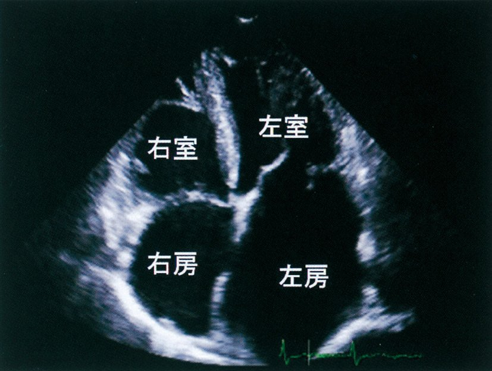
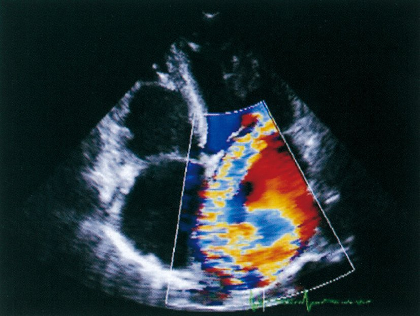
ａ 左室形成術
ｂ 僧帽弁形成術
ｃ 僧帽弁置換術
ｄ 僧帽弁交連切開術
ｅ 冠動脈バイパス手術
✅
ｂ 僧帽弁形成術 ＋ ｃ 僧帽弁置換術
MR（全収縮期雑音+Ⅲ音）→手術適応：弁形成術（第一選択）または弁置換術（形成不可能時）。
❤️ MR手術の選択
僧帽弁形成術（第一選択）：弁温存→生体機能維持・抗凝固不要・耐久性良僧帽弁置換術：形成不可能時（重度石灰化・弁組織欠損）→機械弁or生体弁
×交連切開術：MSの治療（MRには適応なし）
×冠動脈バイパス：MRの治療ではなくCAD治療
🎯 国試ポイント
MRの手術：弁形成術（annuloplasty含む）が第一選択。交連切開術（PTMC含む）はMSの治療。左室形成術は拡張型心筋症（DCM）の補助的治療。🔍 選択肢解説
MR(心尖部全収縮期雑音)。a 左室形成術：不適。
b 僧帽弁形成術：MRの第一選択(弁形成)。✓
c 僧帽弁置換術：形成困難なら置換。✓
d 僧帽弁交連切開術：MS用。
e 冠動脈バイパス手術：虚血でない。
Q.344(108I-21)一般95%
僧帽弁閉鎖不全症の直接の原因とならないのはどれか。
ａ 乳頭筋断裂
ｂ リウマチ熱
ｃ 僧帽弁逸脱
ｄ 感染性心内膜炎
ｅ 急性大動脈解離
✅
ｅ 急性大動脈解離
大動脈解離→大動脈弁閉鎖不全症（AR）の原因。MRの直接原因にはなりにくい（解剖学的に弁輪に影響は少ない）。
📋 MR原因 vs AR原因
| 原因 | 機序 | 特徴 |
|---|---|---|
| MRの原因 | ||
| 乳頭筋断裂 | AMI後（後壁梗塞） | 急性MR |
| リウマチ熱 | 弁尖・腱索障害 | 慢性MR |
| 僧帽弁逸脱 | 弁尖の腱索弛緩 | MVP |
| 感染性心内膜炎 | 弁破壊 | 急性or慢性 |
| ARの原因（MR原因でない） | ||
| 急性大動脈解離 | 大動脈弁輪拡大・弁支持組織破壊 | Stanford A→緊急手術 |
| 上行大動脈瘤 | 大動脈基部拡大 | 慢性AR |
🎯 国試ポイント
急性大動脈解離（Stanford A）→大動脈弁輪に関与→AR（大動脈弁閉鎖不全）を合併。MR（僧帽弁）とは解剖学的に異なる。大動脈解離はARの重要な原因。🔍 選択肢解説
a 乳頭筋断裂：MRの原因。b リウマチ熱：MRの原因。
c 僧帽弁逸脱：MRの原因。
d 感染性心内膜炎：MRの原因。
e 急性大動脈解離：ARの原因でMRの直接原因でない。✓
Q.345(108I-63)臨床📷 画像98%
74 歳の女性。意識消失を主訴に来院した。8 年前に心雑音を指摘されていたが生来健康であり、そのままにしていた。数か月前から労作時に2 分程度の前胸部圧迫感を自覚していたという。昨日、自宅にて意識を失って倒れているところを家族に発見されたが、呼びかけにて意識は回復したため本日になって受診した。ADL は自立している。脈拍72/ 分、整。血圧144/68mmHg。胸骨右縁第2 肋間を最強点とする収縮期駆出性〈収縮中期性〉雑音を聴取し、心尖部にⅢ音とⅣ音とを聴取する。呼吸音に異常を認めない。下腿に浮腫を認めない。心電図で左室肥大所見を認める。胸部エックス線写真では、心胸郭比53％で、肺うっ血と胸水貯留とを認めない。心エコー検査で左室駆出率は43％。心エコー検査の断層像（A，B）と連続波ドプラ法で記録した左室駆出血流速パターン（C）とを示す。冠動脈造影で有意な狭窄病変を認めない。
対応として適切なのはどれか。
対応として適切なのはどれか。


ａ 経過観察
ｂ 強心薬投与
ｃ 大動脈弁置換術
ｄ 大動脈基部置換術
ｅ 心臓ペースメーカ植込み
✅
ｃ 大動脈弁置換術
AS3大症状（狭心症+失神+心不全）すべて揃い→手術適応あり→大動脈弁置換術（AVR）またはTAVI。
❤️ ASの手術適応
症状出現時（狭心症・失神・心不全）→手術適応あり重症AS基準：弁口面積<1.0cm²・最大圧較差>40mmHg・血流速度>4m/秒
AVR（手術弁置換）：低・中リスク患者の第一選択
TAVI（経カテーテル大動脈弁置換）：高リスク・超高齢者への適応拡大
🎯 国試ポイント
AS=症状が出たら即手術。3大症状のうち心不全が最も予後不良。手術しないと予後不良（失神後→平均3年、心不全後→平均1〜2年）。ASへの経過観察・ジギタリスは誤り。🔍 選択肢解説
症候性AS(失神・EF低下・弁口狭小)。a 経過観察：症候性で不適。
b 強心薬投与：不適。
c 大動脈弁置換術：症候性AS(失神)は弁置換。✓
d 大動脈基部置換術：基部拡大でなく不適。
e 心臓ペースメーカ植込み：不適。
Q.346(107A-31)臨床📷 画像93%
43 歳の女性。1 か月前から労作時の息切れを自覚し、心尖部にⅢ/ Ⅵ度の汎〈全〉収縮期雑音を聴取する。心エコー図（A，B）を示す。
この疾患について正しいのはどれか。
この疾患について正しいのはどれか。
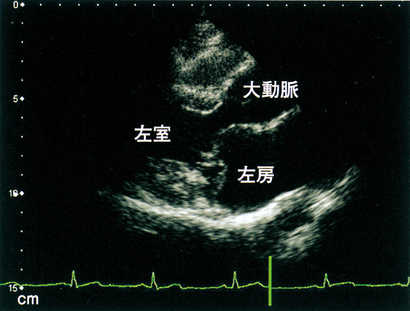
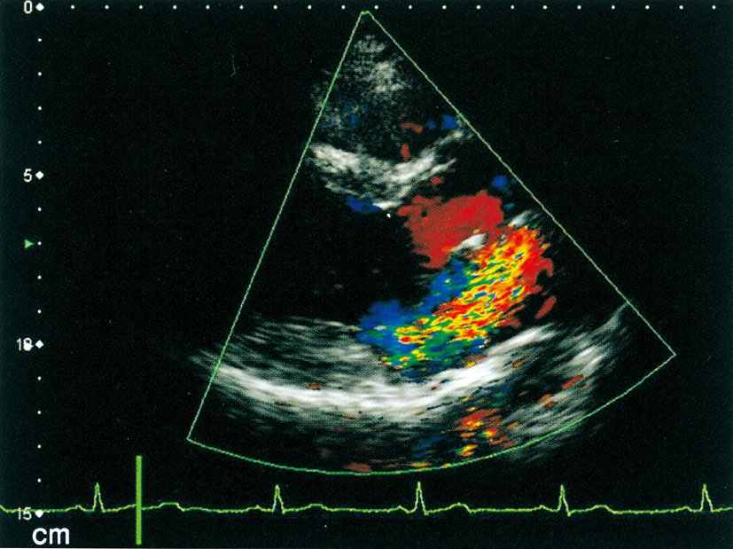
ａ 中心静脈圧が低下する。
ｂ 右 → 左シャントを認める。
ｃ 左室流出路狭窄を認める。
ｄ 左室の圧負荷が増大する。
ｅ 左房の容量負荷が増大する。
✅
ｅ 左房の容量負荷が増大する。
MR：左室→左房への収縮期逆流→左房に容量負荷↑。
❤️ MRの血行動態
左室→左房逆流：左房容量負荷↑・左室容量負荷↑中心静脈圧（CVP）：右心系への影響は後期（肺高血圧→右心不全で上昇）
シャント方向：MRは心内短絡なし（左右シャントなし）
左室流出路：狭窄なし（HCMがLVOT狭窄）
📋 MRの選択肢チェック
| 選択肢 | 理由 | |
|---|---|---|
| ×a：中心静脈圧低下 | MRでは左房圧↑→肺高血圧→CVP上昇 | |
| ×b：右→左シャント | MRには心内シャントなし | |
| ×c：左室流出路狭窄 | LVOTO→HCM（肥大型心筋症） | |
| ×d：左室の圧負荷 | MRは容量負荷（圧負荷はASが代表） | |
| ○e：左房の容量負荷増大 | 逆流血液が左房を充満 | 正答 |
🎯 国試ポイント
MR=左心系の容量負荷：左房↑左室↑。圧負荷=ASやHTN（後負荷↑）。シャント疾患（ASD・VSD・PDA）と混同しないこと。🔍 選択肢解説
MR(心尖部全収縮期雑音)。a 中心静脈圧が低下する：右心系でなく該当しない。
b 右→左シャントを認める：シャント疾患でない。
c 左室流出路狭窄を認める：HOCMでない。
d 左室の圧負荷が増大する：MRは容量負荷で誤り。
e 左房の容量負荷が増大する：逆流による左房容量負荷。✓
Q.347(107D-30)臨床📷 画像87%
82 歳の女性。胸部絞扼感を主訴に来院した。1 か月前から階段昇降時に胸部絞扼感があり受診した。1 人暮らし。生来健康である。ADL は自立している。脈拍76/ 分、整。血圧110/70mmHg。胸骨右縁第2 肋間に収縮期雑音を聴取する。心電図で左室肥大所見を認める。胸部エックス線写真で心胸郭比54％。連続波ドプラ法で記録した左室駆出血流速パターンを示す。冠動脈造影では冠動脈に有意な狭窄を認めなかった。
治療方針として適切なのはどれか。
治療方針として適切なのはどれか。

ａ 経過観察
ｂ ジギタリスの投与
ｃ 経皮的冠動脈形成術
ｄ 経皮的バルーン大動脈弁拡張術
ｅ 大動脈弁置換術
✅
ｅ 大動脈弁置換術
82歳でも症状あり重症ASなら手術適応。ADL自立・単独居住可能→手術耐容可能性あり→弁置換術（高齢者はTAVIも）。
❤️ 高齢AS患者の治療選択
TAVI（経カテーテル大動脈弁置換術）：高リスク・高齢者への適応拡大（82歳→TAVI適応）外科的AVR：標準的手術（中・低リスク）
バルーン拡張術（BAV）：緊急bridge・高齢重症→TAVI前の一時処置
×経過観察：症状あり重症AS→経過観察は不可
🎯 国試ポイント
症状ありASは手術適応：高齢者でもADL自立→弁置換術（またはTAVI）。バルーン拡張術（d）は再狭窄が高率（一時的処置）。ジギタリス（b）はASに意義なし。🔍 選択肢解説
症候性AS(冠動脈正常)。a 経過観察：症候性で不適。
b ジギタリスの投与：不適。
c 経皮的冠動脈形成術：冠動脈正常で不要。
d 経皮的バルーン大動脈弁拡張術：一時的で根治でない。
e 大動脈弁置換術：症候性ASは弁置換。✓
Q.348(107G-56)臨床📷 画像86%
79 歳の男性。息切れと胸痛とを主訴に来院した。生来健康であったが、5 年前から心雑音を指摘されていた。1 か月前から坂道や階段歩行で息切れと胸痛とを自覚したため受診した。体温36.2℃。脈拍72/ 分、整。血圧118/72mmHg。下腿に浮腫を認めない。聴診で収縮期駆出性〈収縮中期性〉雑音を聴取する。心エコーで大動脈弁の高度石灰化を認め、大動脈弁口面積は0.8cm2 であった。人工弁の写真（①, ②）を示す。
この患者の手術治療における2 種類の人工弁に関する説明で最も適切なのはどれか。
この患者の手術治療における2 種類の人工弁に関する説明で最も適切なのはどれか。


ａ 「あなたには①の弁をお勧めします」
ｂ 「②の弁は毎年交換する必要があります」
ｃ 「①の弁は②の弁より弁機能に優れています」
ｄ 「②の弁はアレルギー反応に関する術前精査が必要です」
ｅ 「①の弁は手術後生涯にわたりワルファリンの内服が必要です」
✅
ｅ 「①の弁は手術後生涯にわたりワルファリンの内服が必要です」
機械弁（①）：耐久性高いが血栓形成→生涯ワルファリン（抗凝固薬）必須。
📋 機械弁 vs 生体弁
| 項目 | 機械弁 | 生体弁 |
|---|---|---|
| 機械弁（①） | 生体弁（②） | |
| 耐久性 | 半永久的（20年以上） | 10〜15年で劣化 |
| 抗凝固薬 | 生涯ワルファリン必要 | 不要（術後3か月のみ） |
| 再手術 | 不要（通常） | 劣化後に再手術 |
| 妊婦・挙児希望 | 禁忌（催奇形性） | 推奨 |
| 高齢者（70歳超） | 過抗凝固→出血リスク | 推奨 |
🎯 国試ポイント
機械弁=生涯ワルファリン（DOAC不可）。ｂ（毎年交換）→誤り（生体弁は10〜15年使用）。ｃ（機械弁が弁機能優れる）→耐久性は優れるが機能的差は小さい。ｄ（アレルギー精査）→生体弁（ウシ・ブタ心膜）だが術前精査の必須はない。🔍 選択肢解説
弁口0.8cm²の重症AS。①機械弁・②生体弁。a 「あなたには①(機械弁)をお勧めします」：79歳では生体弁が推奨で誤り。
b 「②(生体弁)は毎年交換が必要」：10〜15年持ち誤り。
c 「①は②より弁機能に優れる」：機能差でなく誤り。
d 「②はアレルギー精査が必要」：不要で誤り。
e 「①(機械弁)は生涯ワルファリンの内服が必要」：正しい。✓
Q.349(107I-6)一般98%
大動脈弁狭窄症に特徴的なのはどれか。
ａ 遅 脈
ｂ 大 脈
ｃ 奇 脈
ｄ 交互脈
ｅ 二段脈
✅
ａ 遅脈
AS→大動脈弁口狭窄→左室からの駆出が遅くなる→脈の立ち上がりが遅い（遅脈：pulsus tardus）＋振幅小（小脈：pulsus parvus）。
📋 脈の種類と疾患
| 脈の種類 | 関連疾患 | 特徴 |
|---|---|---|
| 遅脈（pulsus tardus） | AS：立ち上がり遅い | 小脈とセット（parvus et tardus） |
| 大脈・速脈（pulsus magnus） | AR：脈圧増大・速い立ち上がり | 水撃脈（Corrigan） |
| 奇脈（pulsus paradoxus） | 心タンポナーデ・収縮性心膜炎 | 吸気時>10mmHg低下 |
| 交互脈（pulsus alternans） | 重症左心不全（HFrEF） | 心室機能低下 |
| 二段脈 | 期外収縮が2拍毎 | 上室・心室性 |
🎯 国試ポイント
AS=遅脈（parvus et tardus）。AR=速脈・大脈（水撃脈）。奇脈=タンポナーデ。これは頻出の脈の知識問題。🔍 選択肢解説
a 遅脈：ASのpulsus parvus et tardus。✓b 大脈：ARの所見。
c 奇脈：タンポナーデの所見。
d 交互脈：重症心不全の所見。
e 二段脈：期外収縮の所見。
Q.350(106A-24)臨床📷 画像95%
52 歳の男性。健康診断で心雑音を指摘されたため来院した。自覚症状はない。脈拍68/ 分、整。血圧142/84mmHg。心エコー図（A，B）を示す。
診断として考えられるのはどれか。
診断として考えられるのはどれか。
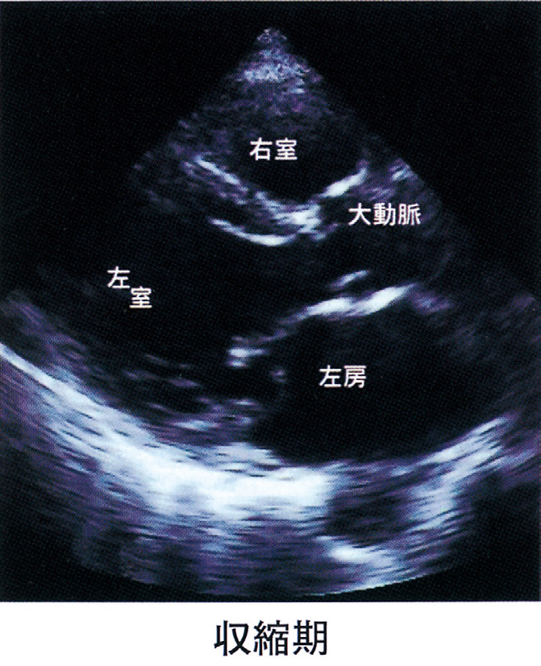
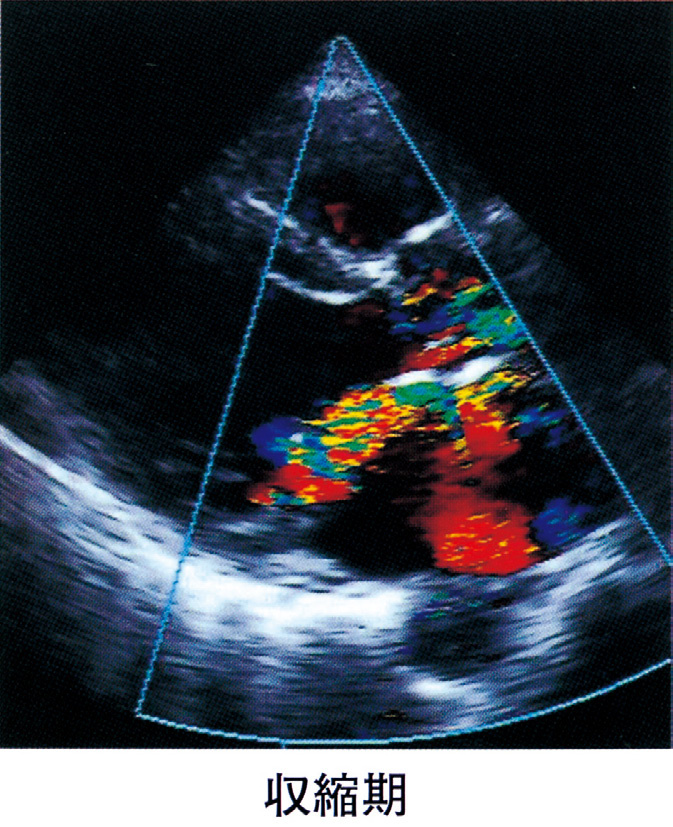
ａ 左房粘液腫
ｂ 僧帽弁狭窄症
ｃ 大動脈弁狭窄症
ｄ 心房中隔欠損症
ｅ 僧帽弁逸脱症候群
✅
ｅ 僧帽弁逸脱症候群（MVP）
MVP：収縮中期クリック+後収縮期雑音が典型。心エコーで収縮期に僧帽弁尖が左房側へ逸脱（収縮中期）。
❤️ 僧帽弁逸脱症候群（MVP）
聴診：収縮中期クリック＋後収縮期高音性雑音（blowing）心エコー：収縮期に弁尖が左房側へ突出（>2mm）
体位変化：立位・Valsalva→逸脱早期化（クリック前方移動）
原因：Marfan・弁組織の粘液変性・MEN
🎯 国試ポイント
MVP=収縮中期クリック（収縮期の前半でなく中期）。MVPはMRの最多原因。重症化→乳頭筋や腱索断裂→急性MR。Marfan症候群はMVP+大動脈基部拡大。🔍 選択肢解説
a 左房粘液腫：可動腫瘤で合わない。b 僧帽弁狭窄症：拡張期。
c 大動脈弁狭窄症：駆出性。
d 心房中隔欠損症：シャント。
e 僧帽弁逸脱症候群：弁尖の収縮期後方逸脱。✓
Q.351(106B-32)一般88%
突然死をきたしやすいのはどれか。
ａ 三尖弁閉鎖不全症
ｂ 僧帽弁狭窄症
ｃ 僧帽弁閉鎖不全症
ｄ 大動脈弁狭窄症
ｅ 大動脈弁閉鎖不全症
✅
ｄ 大動脈弁狭窄症
AS：労作時に固定された心拍出量で脳灌流・冠灌流が不足→突然の致死性不整脈・心停止。重症ASの突然死リスクは高い。
❤️ 突然死との関連
大動脈弁狭窄症（AS）：固定した心拍出量→労作時心室細動・完全ブロック→突然死肥大型閉塞性心筋症（HOCM）：若年突然死の代表（競技中）
MS・MR・TR・AR：慢性心不全で経過→突然死リスクは比較的低い
📋 突然死リスクが高い疾患
| 疾患 | 機序 | 対策 |
|---|---|---|
| AS（重症） | 労作時→心室細動・心室頻拍 | 症状出現→早期手術 |
| HOCM | 若年競技者の突然死 | ICD適応検討 |
| 長QT症候群 | torsade de pointes | β遮断薬・ICD |
| Brugada症候群 | 夜間・安静時のVf | ICD |
🎯 国試ポイント
突然死=AS・HOCMが代表。三尖弁・僧帽弁疾患（MS・MR・TR）は慢性心不全で経過し突然死は稀。ASの3大症状（狭心症・失神・心不全）のうち失神→突然死前兆として重要。🔍 選択肢解説
a 三尖弁閉鎖不全症：突然死はまれ。b 僧帽弁狭窄症：まれ。
c 僧帽弁閉鎖不全症：まれ。
d 大動脈弁狭窄症：失神・突然死をきたす。✓
e 大動脈弁閉鎖不全症：まれ。
Q.352(106D-47)臨床📷 画像96%
81 歳の男性。1 か月前からの労作時の呼吸困難を主訴に来院した。生来健康で農作業に従事していた。脈拍76/ 分、整。血圧126/74mmHg。頸動脈拍動の立ち上がりが遅い。胸骨右縁第2 肋間に収縮中期性〈収縮期駆出性〉雑音が聴取され、頸部に放散する。下腿に浮腫を認めない。心電図で左室肥大を認める。胸部エックス線写真で異常を認めない。カラードプラ心エコー図（A）と連続波ドプラ法で記録した左室駆出血流速パターン（B）とを示す。
治療として適切なのはどれか。
治療として適切なのはどれか。


ａ 利尿薬の投与
ｂ カルシウム拮抗薬の投与
ｃ アンジオテンシンⅡ受容体拮抗薬の投与
ｄ 僧帽弁輪縫縮術
ｅ 大動脈弁置換術
✅
ｅ 大動脈弁置換術
症状あり（呼吸困難=心不全）重症AS→手術適応。高齢者でも耐容可能ならAVR（またはTAVI）。
❤️ AS手術適応基準
症状あり（狭心症・失神・呼吸困難）→弁口面積にかかわらず手術適応重症基準：弁口面積<1.0cm²・平均圧較差>40mmHg・Vmax>4m/秒
TAVI：高齢・高リスク患者に経皮的弁置換→侵襲低
×薬物治療：ASは薬物で根治不可（利尿薬・ACE阻害薬は心不全症状管理のみ）
🎯 国試ポイント
呼吸困難=心不全=最も予後不良のAS症状→即手術（AVR/TAVI）。ａ（利尿薬）・ｂ（Ca拮抗薬）・ｃ（ARB）は補助的症状管理のみ。ｄ（僧帽弁輪縫縮術）はMRの手術。🔍 選択肢解説
症候性AS(遅脈・頸部放散駆出性雑音)。a 利尿薬の投与：対症のみ。
b カルシウム拮抗薬の投与：不適。
c ARBの投与：不適。
d 僧帽弁輪縫縮術：MR用。
e 大動脈弁置換術：症候性ASの根治。✓
Q.353(106G-23)一般74%
疾患と聴診所見の組合せで誤っているのはどれか。
ａ 肺高血圧症 ―――――――――― Ⅱ音の亢進
ｂ 大動脈弁閉鎖不全症 ―――――― 全収縮期雑音
ｃ 心房中隔欠損症 ―――――――― 拡張期ランブル
ｄ 拡張型心筋症 ――――――――― 奔馬調律
ｅ 僧帽弁閉鎖不全症 ――――――― Ⅲ 音
✅
ｂ 大動脈弁閉鎖不全症 ― 全収縮期雑音
AR（大動脈弁閉鎖不全症）の雑音は拡張期（拡張期漸減性雑音）。全収縮期雑音はMR・TR・VSD。
📋 疾患と聴診所見の対応（正解と誤り）
| 疾患 | 聴診所見 | 正誤 |
|---|---|---|
| 肺高血圧症 | Ⅱ音の亢進（P₂亢進） | ○（肺動脈圧↑→P₂亢進） |
| ×AR→全収縮期雑音 | ARは拡張期漸減性雑音（blowing） | 誤り→正答 |
| ASD（心房中隔欠損） | 拡張期ランブル（肺血流増加→相対的MS） | ○ |
| 拡張型心筋症（DCM） | 奔馬調律（S₃） | ○（心筋機能低下） |
| MR（僧帽弁閉鎖不全） | Ⅲ音（S₃） | ○（容量負荷→S₃） |
🎯 国試ポイント
AR=拡張期漸減性高調性blowing雑音（Erb点最強・吸気で増強）。全収縮期雑音=MR・TR・VSD。「誤り」を選ぶ設問ではARと全収縮期雑音の組み合わせは誤り。🔍 選択肢解説
a 肺高血圧症―Ⅱ音の亢進：正しい。b 大動脈弁閉鎖不全症―全収縮期雑音：ARは拡張期灌水様雑音で誤り。✓
c 心房中隔欠損症―拡張期ランブル：三尖弁通過血流増加で正しい。
d 拡張型心筋症―奔馬調律：正しい。
e 僧帽弁閉鎖不全症―Ⅲ音：正しい。
Q.354(106G-46)臨床📷 画像93%
53 歳の女性。会社の健康診断で心雑音を指摘され来院した。脈拍72/ 分、整。血圧132/60mmHg。胸骨左縁第3肋間を最強点とするⅡ/ Ⅵ度の拡張期雑音を聴取する。カラードプラ心エコー図を示す。
この疾患で拡張期雑音を聴取しやすくするための手法はどれか。
この疾患で拡張期雑音を聴取しやすくするための手法はどれか。

ａ 過換気にさせる。
ｂ 下肢を挙上させる。
ｃ 右側臥位にさせる。
ｄ 頸動脈洞マッサージを行う。
ｅ 座位で上半身を前傾させる。
✅
ｅ 座位で上半身を前傾させる。
AR（大動脈弁閉鎖不全）の拡張期雑音：前傾座位（座って前かがみ）+呼気止め→胸骨に近づき聴取しやすくなる。
❤️ ARの聴診ポイント
聴取体位：前傾座位（leaning forward）+呼気止め→大動脈弁が前胸壁に接近最強点：胸骨左縁第3〜4肋間（Erb点）
to and fro murmur：拡張期雑音（AR逆流）+収縮期雑音（駆出）
Austin Flint雑音：重症AR→拡張期ランブル（前尖が逆流血で揺れる）
📋 弁膜症の聴診を増強する体位
| 疾患 | 増強する体位・操作 | 聴取部位 |
|---|---|---|
| AR（拡張期雑音） | 前傾座位・呼気止め | Erb点（第3〜4肋間左縁） |
| MS（拡張中期ランブル） | 左側臥位・軽い運動後 | 心尖部 |
| HOCM（流出路狭窄） | 立位・Valsalva（静脈還流↓） | 胸骨左縁 |
| TR（三尖弁逆流） | 吸気（静脈還流↑） | Rivero-Carvallo徴候 |
🎯 国試ポイント
AR聴診体位=前傾座位（Erb点=第3〜4肋間胸骨左縁）。MS聴診体位=左側臥位。HCM=立位・Valsalva（静脈還流↓→LVOTO増強）。🔍 選択肢解説
AR(拡張期雑音)。a 過換気にさせる：不適。
b 下肢を挙上させる：主でない。
c 右側臥位にさせる：MSで用いる。
d 頸動脈洞マッサージを行う：不適。
e 座位で上半身を前傾させる：ARの拡張期雑音は前傾・呼気で増強。✓
Q.355(105A-28)臨床📷 画像93%
61 歳の女性。労作時の息切れを主訴に来院した。1 年前から呼吸困難を自覚するようになり、この2 か月で徐々に症状が増悪するようになった。最近6 か月で3kg の体重増加を認めた。意識は清明。身長154cm、体重52kg。呼吸数18/ 分。脈拍84/ 分、整。血圧132/74mmHg。心尖部で3/6 度の全収縮期雑音とⅢ音とを聴取する。呼吸音に異常を認めない。下腿に軽度の浮腫を認める。Holter 心電図で明らかな異常を認めない。心エコー図（A，B）とカラードプラ心エコー図（C）とを示す。
最も考えられるのはどれか。
最も考えられるのはどれか。
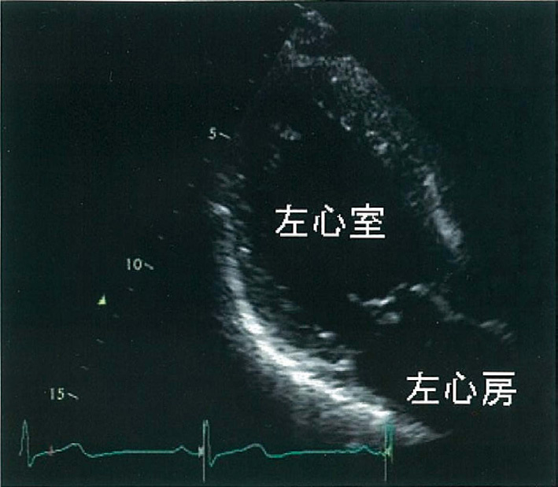
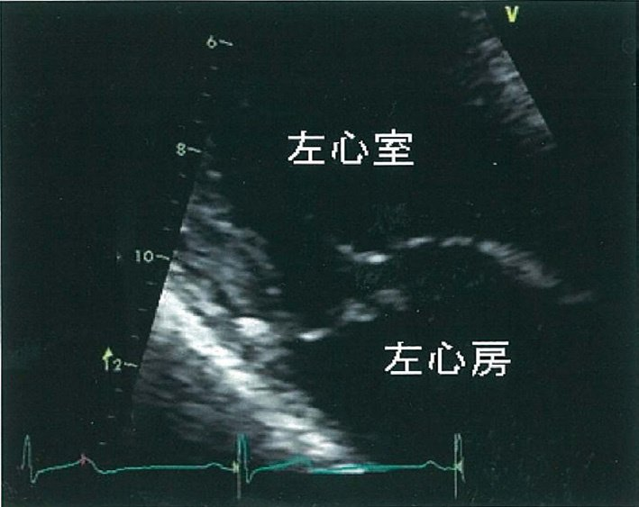
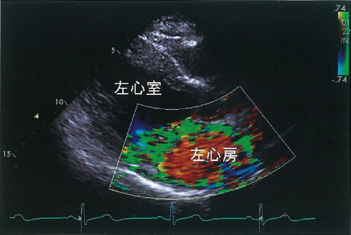
ａ 左房粘液腫
ｂ 僧帽弁狭窄症
ｃ 心室中隔欠損症
ｄ 大動脈弁狭窄症
ｅ 僧帽弁逸脱症候群
✅
ｅ 僧帽弁逸脱症候群
全収縮期雑音（MR）→MRの原因として僧帽弁逸脱症候群（MVP）が最多。体重増加は心不全による浮腫。
❤️ 僧帽弁逸脱症候群（MVP）の特徴
原因：MRの最多原因（弁組織の粘液変性→腱索弛緩→弁逸脱）聴診：収縮中期クリック+後収縮期雑音（blowing）
合併症：MR悪化・感染性心内膜炎・不整脈（Af・VT）
体型：細長い体型（Marfan様）に多い
🎯 国試ポイント
MRの最多原因=MVP。労作時息切れ＋全収縮期雑音＝MR→原因としてMVP第一選択。左房粘液腫→MS様症状（体位依存の収縮期雑音）。🔍 選択肢解説
a 左房粘液腫：可動腫瘤で合わない。b 僧帽弁狭窄症：拡張期。
c 心室中隔欠損症：胸骨左縁。
d 大動脈弁狭窄症：駆出性。
e 僧帽弁逸脱症候群：弁逸脱によるMR。✓
Q.356(104A-25)臨床📷 画像2択87%
62 歳の女性。安静時の息切れを主訴に来院した。60 歳ころから心雑音を指摘されていたが、放置していた。6 か月前から労作時の息切れと動悸とを感じるようになった。脈拍84/ 分、整。血圧126/74mmHg。呼吸音に異常を認めない。収縮終期心エコー図（A）と収縮中期カラードプラ心エコー図（B）とを示す。
聴診所見はどれか。2 つ選べ。
聴診所見はどれか。2 つ選べ。
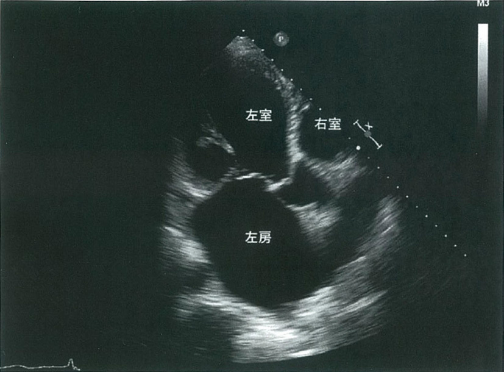
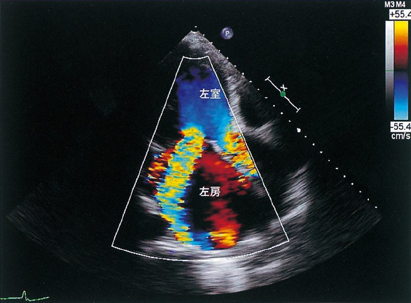
ａ Ⅰ音減弱
ｂ Ⅱ音減弱
ｃ Ⅱ音の固定性分裂
ｄ 連続性雑音
ｅ 全収縮期雑音
✅
ａ Ⅰ音減弱 ＋ ｅ 全収縮期雑音
MR：僧帽弁閉鎖不全→弁閉鎖不完全→Ⅰ音減弱。全収縮期雑音（pansystolic murmur）がMRの特徴的雑音。
❤️ MRの聴診所見
Ⅰ音減弱：僧帽弁閉鎖不全→閉鎖音（Ⅰ音）の振動エネルギーが逆流に分散全収縮期雑音：収縮期全体にわたるblowing音→心尖部最強→腋窩へ放散
Ⅲ音（S₃）：容量負荷による急速充満音
×Ⅱ音固定性分裂→ASD（心房中隔欠損）
🎯 国試ポイント
MR=Ⅰ音減弱+全収縮期雑音。Ⅱ音固定性分裂→ASD。連続性雑音→PDA・動脈瘻。Ⅱ音減弱→AS（A₂消失）。🔍 選択肢解説
MR。a Ⅰ音減弱：MRでⅠ音減弱。✓
b Ⅱ音減弱：ASなど。
c Ⅱ音の固定性分裂：ASD。
d 連続性雑音：PDA。
e 全収縮期雑音：MRの雑音。✓
Q.357(104E-56)臨床📷 画像2択58%
62 歳の女性。労作時の息切れを主訴に来院した。20 歳ころに微熱が続き、抗菌薬治療を受けたことがある。心尖部領域に雑音を聴取する。心エコー図（A，B）を示す。
心音聴診で聴取されるのはどれか。2 つ選べ。
心音聴診で聴取されるのはどれか。2 つ選べ。
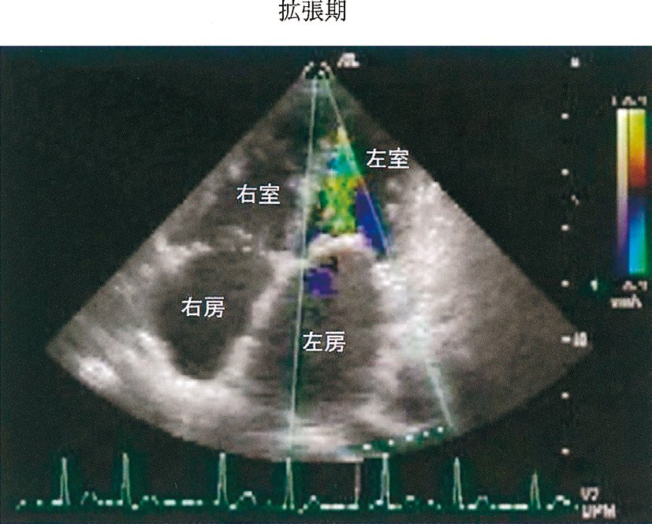
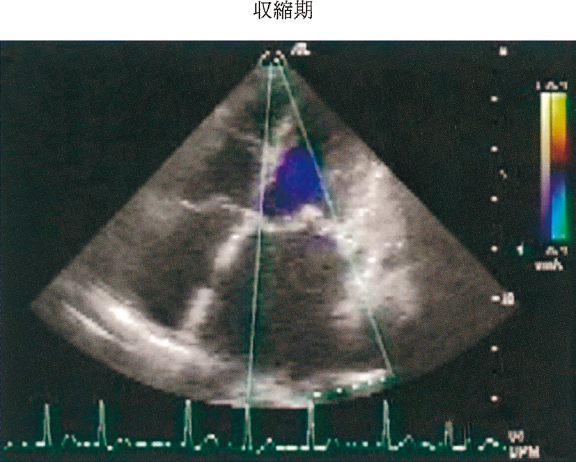
ａ opening snap
ｂ 収縮中期クリック
ｃ 収縮期駆出性雑音
ｄ 拡張早期高調性雑音
ｅ 拡張中期低調性雑音
✅
ａ opening snap ＋ ｅ 拡張中期低調性雑音
MS：僧帽弁狭窄→弁開放音（opening snap=OS）+拡張中期低調性ランブル音。リウマチ性MSに典型的。
📋 MS（僧帽弁狭窄症）の聴診所見
| 聴診所見 | 特徴 | 補足 |
|---|---|---|
| Ⅰ音亢進 | 弁が閉鎖時にバタンと→亢進 | 弁可動性あるとき |
| opening snap（OS） | A₂音の直後（0.04〜0.12秒） | 弁可動性あるとき |
| 拡張中期低調性ランブル | 低周波・ゴロゴロ音 | 心尖部・左側臥位で聴取 |
| ×収縮中期クリック | MVP（逸脱）の所見 | MSとは別 |
| ×収縮期駆出性雑音 | AS・PS | |
| ×拡張早期高調性雑音 | AR（blowing音） |
🎯 国試ポイント
MS=OS+拡張中期ランブル+Ⅰ音亢進。リウマチ熱の既往→リウマチ性MS（β溶連菌感染後自己免疫）。OS→MSの弁可動性を示す（石灰化が高度になると消失）。🔍 選択肢解説
リウマチ性MS。a opening snap：MSの開放音。✓
b 収縮中期クリック：MVP。
c 収縮期駆出性雑音：AS。
d 拡張早期高調性雑音：AR。
e 拡張中期低調性雑音：MSの拡張中期ランブル。✓
Q.358(103A-6)一般2択88%
大動脈弁閉鎖不全症でみられるのはどれか。2 つ選べ。
ａ 奇 脈
ｂ Ⅰ音の亢進
ｃ 脈圧の増大
ｄ Ⅱ音の固定性分裂
ｅ to and fro murmur
✅
ｃ 脈圧の増大 ＋ ｅ to and fro murmur
AR：大動脈→左室への拡張期逆流→収縮期圧↑・拡張期圧↓→脈圧増大。to and fro murmur（収縮期+拡張期雑音）。
📋 AR（大動脈弁閉鎖不全）の所見
| 所見 | 機序 | 特徴 |
|---|---|---|
| 脈圧増大 | 収縮期圧↑・拡張期圧↓ | 水撃脈（Corrigan脈） |
| to and fro murmur | 収縮期（駆出）+拡張期（逆流）雑音 | Erb点で聴取 |
| Austin Flint雑音 | 前尖が逆流血で揺れる→拡張期ランブル | MSとの鑑別（OS前にあるか） |
| 末梢血管徴候 | Quincke徴候・Musset徴候・De Musset徴候・頭部のうなずき | |
| ×奇脈 | 心タンポナーデ・収縮性心膜炎 | ARとは無関係 |
| ×固定性分裂 | ASD |
🎯 国試ポイント
AR=脈圧増大+to and fro murmur。奇脈（a）→タンポナーデ。Ⅰ音亢進（b）→MS・甲状腺機能亢進。固定性分裂（d）→ASD。ARは拡張期漸減性雑音+収縮期駆出性雑音（to and fro）。🔍 選択肢解説
a 奇脈：タンポナーデの所見。b Ⅰ音の亢進：MSの所見。
c 脈圧の増大：ARの脈圧開大。✓
d Ⅱ音の固定性分裂：ASDの所見。
e to and fro murmur：収縮期駆出性＋拡張期灌水様。✓
Q.359(103C-14)必修一般92%
失神発作を起こしにくいのはどれか。
ａ 起立性低血圧
ｂ 大動脈弁狭窄症
ｃ 僧帽弁閉鎖不全症
ｄ 洞機能不全症候群
ｅ 肥大型閉塞性心筋症
✅
ｃ 僧帽弁閉鎖不全症
MR：容量負荷疾患→心不全経過→心拍出量は維持（特に慢性期）→失神は起こりにくい。
❤️ 失神をきたす疾患と機序
起立性低血圧：体位変換時→一過性脳灌流低下AS（大動脈弁狭窄症）：労作時固定心拍出量→脳虚血
洞機能不全症候群（SSS）：長い洞停止→脳虚血
HOCM（肥大型閉塞性心筋症）：LVOT閉塞→心拍出量低下
×MR：容量負荷→心拍出量は保たれやすい→失神は起こりにくい
🎯 国試ポイント
MR=失神をきたしにくい（容量負荷で代償）。失神をきたす弁膜症=AS（圧負荷→固定CO）。HOCM・洞不全・起立性低血圧も失神の代表的原因。🔍 選択肢解説
a 起立性低血圧：失神をきたす。b 大動脈弁狭窄症：失神をきたす。
c 僧帽弁閉鎖不全症：失神を起こしにくい。✓
d 洞機能不全症候群：失神をきたす。
e 肥大型閉塞性心筋症：失神をきたす。
Q.360(103D-59)臨床📷 画像96%
52 歳の男性。労作時の息切れと胸痛とを主訴に来院した。5 年前から健康診断で心拡大を指摘されていたが放置していた。脈拍84/ 分、整。血圧142/42mmHg。胸骨左縁第3 肋間に拡張期雑音を聴取する。下肢に浮腫を認める。心尖部から記録したカラードプラ心エコー図を示す。
治療として適切なのはどれか。
治療として適切なのはどれか。

ａ Maze 手術
ｂ 交連切開術
ｃ 人工弁置換術
ｄ 欠損孔閉鎖術
ｅ ステントグラフト内挿術
✅
ｃ 人工弁置換術
脈圧増大+拡張期雑音（AR）→重症AR+心不全（浮腫）→手術適応：大動脈弁置換術（AVR）。
❤️ AR手術適応
症状あり重症AR：心不全・狭心症→手術（AVR）無症状重症AR手術適応：LVEF<50%またはLVESD>50mm
薬物療法：症状管理・高血圧コントロール（Ca拮抗薬・ARB）
×Maze手術：Afの外科的治療（不整脈手術）→ARには適応なし
🎯 国試ポイント
AR=人工弁置換術が根治治療。ａ（Maze手術）→Af治療。ｂ（交連切開術）→MS治療。ｄ（欠損孔閉鎖）→ASD・VSD治療。ｅ（ステントグラフト）→大動脈瘤・解離治療。🔍 選択肢解説
AR(拡張期雑音・脈圧開大142/42)。a Maze手術：AF用。
b 交連切開術：MS用。
c 人工弁置換術：ARの弁置換。✓
d 欠損孔閉鎖術：ASD/VSD用。
e ステントグラフト内挿術：大動脈瘤用。
Q.361(103F-30)必修臨床70%
次の文を読み、361 と362 の問いに答えよ。
29 歳の男性。動悸と労作時呼吸困難とを主訴に来院した。
現病歴：学生のころから心雑音を指摘されていたが放置していた。1 週前から誘因なく階段を昇るときの息切れを自覚し次第に増悪した。
既往歴：幼少時から背が高い。両腕が長く既製服を着用できない。強度の近視がある。
現 症：意識は清明。身長182cm、体重52kg。痩せ型で両側前腕と手指とが長い。体温36.6℃。脈拍96/ 分、整。血圧116/48mmHg。第2 肋間胸骨右縁に3/6 度の収縮期雑音と心尖部に放散する3/6 度の拡張期雑音とを認める。呼吸音に異常を認めない。腹部は平坦、軟で、肝・脾を触知しない。両下腿に浮腫を認めない。
検査所見： 尿所見：蛋白（－）、糖（－）、潜血（－）。血液所見：赤血球430 万、Hb 14.1g/dl、白血球6,800、血小板28 万。血液生化学所見：総蛋白7.2g/dl、アルブミン4.8g/dl、AST 30IU/l、ALT 24IU/l、尿素窒素18mg/dl、クレアチニン1.0mg/dl、総コレステロール182mg/dl。CRP 0.3mg/dl。
この患者の拡張期雑音を最も強く聴取するのはどれか。
29 歳の男性。動悸と労作時呼吸困難とを主訴に来院した。
現病歴：学生のころから心雑音を指摘されていたが放置していた。1 週前から誘因なく階段を昇るときの息切れを自覚し次第に増悪した。
既往歴：幼少時から背が高い。両腕が長く既製服を着用できない。強度の近視がある。
現 症：意識は清明。身長182cm、体重52kg。痩せ型で両側前腕と手指とが長い。体温36.6℃。脈拍96/ 分、整。血圧116/48mmHg。第2 肋間胸骨右縁に3/6 度の収縮期雑音と心尖部に放散する3/6 度の拡張期雑音とを認める。呼吸音に異常を認めない。腹部は平坦、軟で、肝・脾を触知しない。両下腿に浮腫を認めない。
検査所見： 尿所見：蛋白（－）、糖（－）、潜血（－）。血液所見：赤血球430 万、Hb 14.1g/dl、白血球6,800、血小板28 万。血液生化学所見：総蛋白7.2g/dl、アルブミン4.8g/dl、AST 30IU/l、ALT 24IU/l、尿素窒素18mg/dl、クレアチニン1.0mg/dl、総コレステロール182mg/dl。CRP 0.3mg/dl。
この患者の拡張期雑音を最も強く聴取するのはどれか。
ａ 立 位
ｂ 前屈位
ｃ 仰臥位
ｄ 右側臥位
ｅ 左側臥位
✅
ｂ 前屈位
AR拡張期雑音：前屈位（座位で前かがみ）+呼気止め→大動脈弁がErbの領域に近づく→聴取増強。
❤️ AR聴診の体位
前屈位（forward leaning）：大動脈弁が前胸壁に近接→Erb点（第3〜4肋間左縁）での聴取増強呼気止め：肺空気が減る→音が伝わりやすい
×左側臥位：MSの拡張中期ランブルを聴取増強
×立位：HOCM雑音増強
🎯 国試ポイント
ARの聴診増強体位=前屈位（前傾座位）。MSの聴診=左側臥位。体位と疾患の組み合わせは頻出。🔍 選択肢解説
Marfan＋AR。a 立位：主でない。
b 前屈位：ARの拡張期雑音は前傾位で増強。✓
c 仰臥位：主でない。
d 右側臥位：MSで用いる。
e 左側臥位：Ⅲ音/MSで用いる。
Q.362(103F-31)必修臨床98%
次の文を読み、361 と362 の問いに答えよ。
29 歳の男性。動悸と労作時呼吸困難とを主訴に来院した。
現病歴：学生のころから心雑音を指摘されていたが放置していた。1 週前から誘因なく階段を昇るときの息切れを自覚し次第に増悪した。
既往歴：幼少時から背が高い。両腕が長く既製服を着用できない。強度の近視がある。
現 症：意識は清明。身長182cm、体重52kg。痩せ型で両側前腕と手指とが長い。体温36.6℃。脈拍96/ 分、整。血圧116/48mmHg。第2 肋間胸骨右縁に3/6 度の収縮期雑音と心尖部に放散する3/6 度の拡張期雑音とを認める。呼吸音に異常を認めない。腹部は平坦、軟で、肝・脾を触知しない。両下腿に浮腫を認めない。
検査所見： 尿所見：蛋白（－）、糖（－）、潜血（－）。血液所見：赤血球430 万、Hb 14.1g/dl、白血球6,800、血小板28 万。血液生化学所見：総蛋白7.2g/dl、アルブミン4.8g/dl、AST 30IU/l、ALT 24IU/l、尿素窒素18mg/dl、クレアチニン1.0mg/dl、総コレステロール182mg/dl。CRP 0.3mg/dl。
診断に有用なのはどれか。
29 歳の男性。動悸と労作時呼吸困難とを主訴に来院した。
現病歴：学生のころから心雑音を指摘されていたが放置していた。1 週前から誘因なく階段を昇るときの息切れを自覚し次第に増悪した。
既往歴：幼少時から背が高い。両腕が長く既製服を着用できない。強度の近視がある。
現 症：意識は清明。身長182cm、体重52kg。痩せ型で両側前腕と手指とが長い。体温36.6℃。脈拍96/ 分、整。血圧116/48mmHg。第2 肋間胸骨右縁に3/6 度の収縮期雑音と心尖部に放散する3/6 度の拡張期雑音とを認める。呼吸音に異常を認めない。腹部は平坦、軟で、肝・脾を触知しない。両下腿に浮腫を認めない。
検査所見： 尿所見：蛋白（－）、糖（－）、潜血（－）。血液所見：赤血球430 万、Hb 14.1g/dl、白血球6,800、血小板28 万。血液生化学所見：総蛋白7.2g/dl、アルブミン4.8g/dl、AST 30IU/l、ALT 24IU/l、尿素窒素18mg/dl、クレアチニン1.0mg/dl、総コレステロール182mg/dl。CRP 0.3mg/dl。
診断に有用なのはどれか。
ａ 冠動脈造影
ｂ 心エコー検査
ｃ Holter 心電図
ｄ 心筋シンチグラフィ
ｅ トレッドミル運動負荷試験
✅
ｂ 心エコー検査
AR確定診断・重症度評価→心エコー（カラードプラで逆流ジェット評価）が第一選択の非侵襲的検査。
❤️ AR診断ツール
心エコー（カラードプラ）：逆流ジェット幅・LVOT比・圧半減時間（PHT）→重症度判定左室径・LVESd：手術タイミング判断（>50mm→手術検討）
×冠動脈造影：CAD評価（術前検査として施行するが診断には使わない）
×心筋シンチ：虚血評価（ARの診断には不要）
🎯 国試ポイント
弁膜症診断=心エコー（第一選択）。カラードプラで逆流方向・量を評価。術前に冠動脈造影（CAD合併確認）を追加。🔍 選択肢解説
a 冠動脈造影：主でない。b 心エコー検査：AR・大動脈基部の評価。✓
c Holter心電図：主でない。
d 心筋シンチグラフィ：主でない。
e トレッドミル運動負荷試験：不適。
Q.363(102D-24)臨床📷 画像80%
72 歳の女性。胸部圧迫感を主訴に来院した。1 か月前から駅の階段を上がるときに前胸部の圧迫感を自覚していた。数年前から心雑音を指摘されていたが、放置していた。心エコー図（A，B）を示す。
この患者でみられないのはどれか。
この患者でみられないのはどれか。
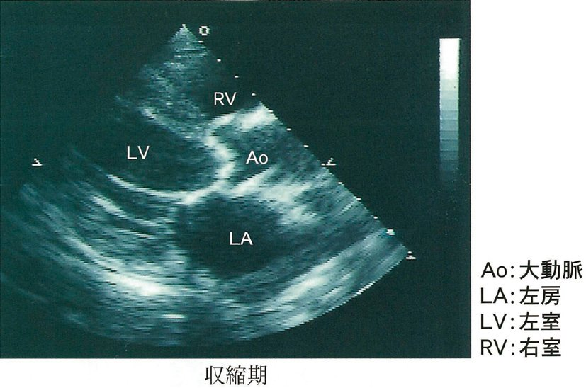
ａ Ⅳ 音
ｂ 振 戦〈thrill〉
ｃ 遅 脈
ｄ 脈圧の増大
ｅ 頸部に放散する収縮期雑音
✅
ｄ 脈圧の増大
AS：弁口狭窄→収縮期圧↓・脈圧縮小（増大しない）。脈圧増大はAR（大動脈弁閉鎖不全）の所見。
📋 ASでみられる所見とみられない所見
| 所見 | 機序 | |
|---|---|---|
| みられる（AS） | ||
| Ⅳ音（S₄） | 左室肥大→コンプライアンス↓ | ○ |
| 振戦（thrill） | 重症AS→触診で収縮期振動 | ○（右第2肋間） |
| 遅脈 | pulsus tardus et parvus | ○ |
| 頸部放散する収縮期雑音 | 右第2肋間→頸部 | ○ |
| ×脈圧の増大 | ASでは脈圧縮小 | →ARの所見 |
🎯 国試ポイント
AS=脈圧縮小（増大しない）。脈圧増大→AR（収縮期圧↑・拡張期圧↓）。ASでみられないもの：脈圧増大・A₂亢進・大脈。🔍 選択肢解説
本例は大動脈弁狭窄症。a Ⅳ音：ASでみられる。
b 振戦〈thrill〉：ASでみられる。
c 遅脈：ASでみられる。
d 脈圧の増大：ARの所見でASは狭小化しみられない。✓
e 頸部に放散する収縮期雑音：ASでみられる。
Q.364(101A-20)臨床📷 画像92%
55 歳の男性。胸痛と息苦しさとを主訴に来院した。3 か月前から、時々、めまいと前胸部痛とを自覚していた。意識は清明。身長166cm、体重66kg。脈拍88/ 分、整。血圧102/28mmHg。胸骨左縁第4 肋間に拡張期雑音を聴取する。呼吸音に異常はない。肝・脾は触知しない。大動脈造影（A，B，C）と冠動脈造影（D，E，F）とを示す。
治療として適切なのはどれか。
治療として適切なのはどれか。
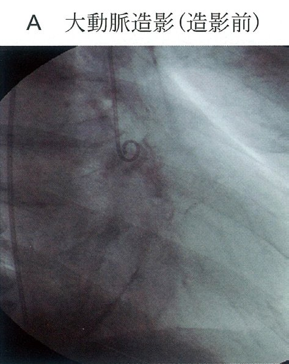
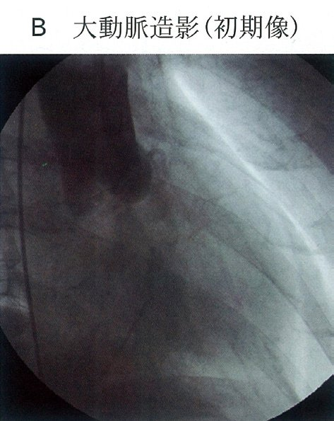
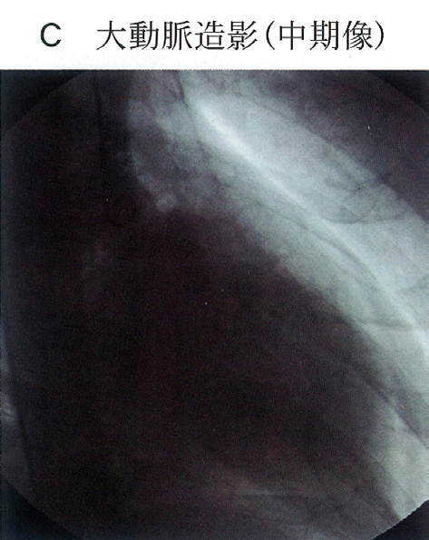
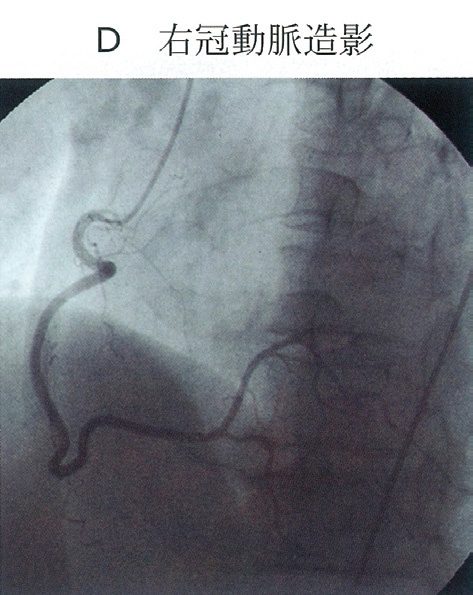
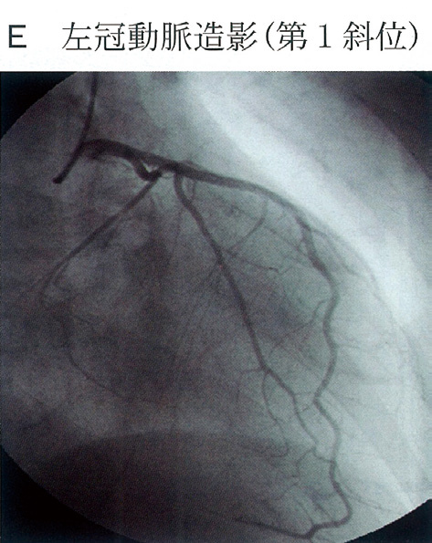
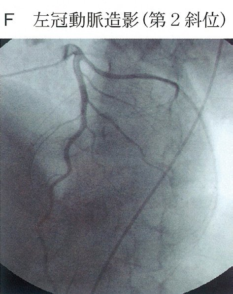
ａ IABP
ｂ 僧帽弁置換術
ｃ 大動脈弁置換術
ｄ 冠動脈バイパス術
ｅ 心室中隔穿孔閉鎖術
✅
ｃ 大動脈弁置換術
脈圧増大（102/28）+拡張期雑音（第3〜4肋間）→AR。症状あり（胸痛・息苦しさ・浮腫）→手術適応→大動脈弁置換術。
❤️ AR手術適応と選択
大動脈弁置換術（AVR）：症状あり重症AR→根治手術×IABP：IABPは拡張期に圧をかける→ARでは逆流増大→禁忌
×僧帽弁置換術：MRの手術（AR=大動脈弁）
×冠動脈バイパス術：CADの治療
🎯 国試ポイント
ARにIABPは禁忌：IABPは拡張期補助（バルーン膨張）→ARでは逆流が増大→心不全悪化。AR+心不全→早期AVR（手術）が原則。🔍 選択肢解説
AR(拡張期雑音・脈圧開大102/28)。a IABP：ARで禁忌。
b 僧帽弁置換術：僧帽弁でない。
c 大動脈弁置換術：ARの弁置換。✓
d 冠動脈バイパス術：虚血でない。
e 心室中隔穿孔閉鎖術：VSDでない。
Q.365(101B-72)一般2択96%
組合せで正しいのはどれか。2 つ選べ。
ａ Ⅰ音亢進 ――――――――――― 心房中隔欠損症
ｂ 連続性雑音 ―――――――――― 三尖弁閉鎖不全症
ｃ opening snap ―――――――――― 僧帽弁狭窄症
ｄ 収縮中期クリック ―――――――― 僧帽弁逸脱症候群
ｅ Austin Flint 雑音 ―――――――― 動脈管開存症
✅
ｃ opening snap ― 僧帽弁狭窄症 ＋ ｄ 収縮中期クリック ― 僧帽弁逸脱症候群
OS（opening snap）=MS（僧帽弁狭窄症）。収縮中期クリック=MVP（僧帽弁逸脱症候群）。
📋 聴診所見と疾患（全選択肢）
| 選択肢 | 理由 | 補足 |
|---|---|---|
| ×ａ：Ⅰ音亢進→ASD | Ⅰ音亢進は僧帽弁狭窄症（MS）の所見 | ASD=固定性Ⅱ音分裂 |
| ×ｂ：連続性雑音→TR | TR=全収縮期雑音（吸気増強） | 連続性雑音=PDA・AV瘻 |
| ○ｃ：OS→MS | 弁開放時→opening snap | A₂後の高調音 |
| ○ｄ：収縮中期クリック→MVP | 弁逸脱時の緊張音 | Valsalva・立位で前方移動 |
| ×ｅ：Austin Flint→MS | Austin Flint雑音はAR（逆流血が前尖を揺らす） | MSとの鑑別が必要 |
🎯 国試ポイント
OS=MS・クリック=MVPは最頻出の組み合わせ。Austin Flint雑音（拡張期ランブル）はARの所見でMSとの鑑別が重要（OSなし、カテーテルで左房圧正常）。🔍 選択肢解説
a Ⅰ音亢進―心房中隔欠損症：Ⅰ音亢進はMSで誤り。b 連続性雑音―三尖弁閉鎖不全症：連続性雑音はPDAで誤り。
c opening snap―僧帽弁狭窄症：正しい。✓
d 収縮中期クリック―僧帽弁逸脱症候群：正しい。✓
e Austin Flint雑音―動脈管開存症：Austin FlintはARで誤り。
Q.366(101G-21)臨床📷 画像2択92%
54 歳の女性。2 週前からの動悸を主訴に来院した。半年前から労作時の息切れを自覚している。意識は清明。身長162cm、体重50kg。脈拍108/ 分、不整。血圧102/72mmHg。心尖部でI 音の亢進と拡張期雑音とを聴取する。右肋骨弓下に肝を2cm 触知する。下腿に浮腫を認めない。心電図（A）と心エコー図（B，C）とを示す。
治療薬はどれか。2 つ選べ。
治療薬はどれか。2 つ選べ。
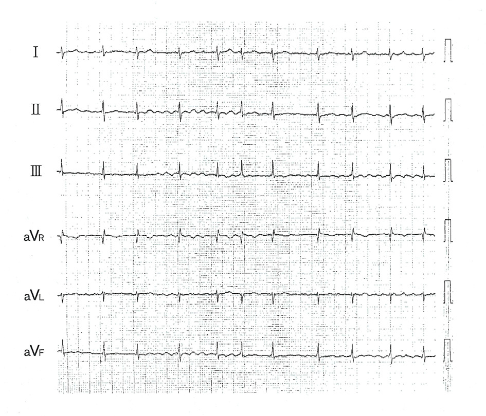
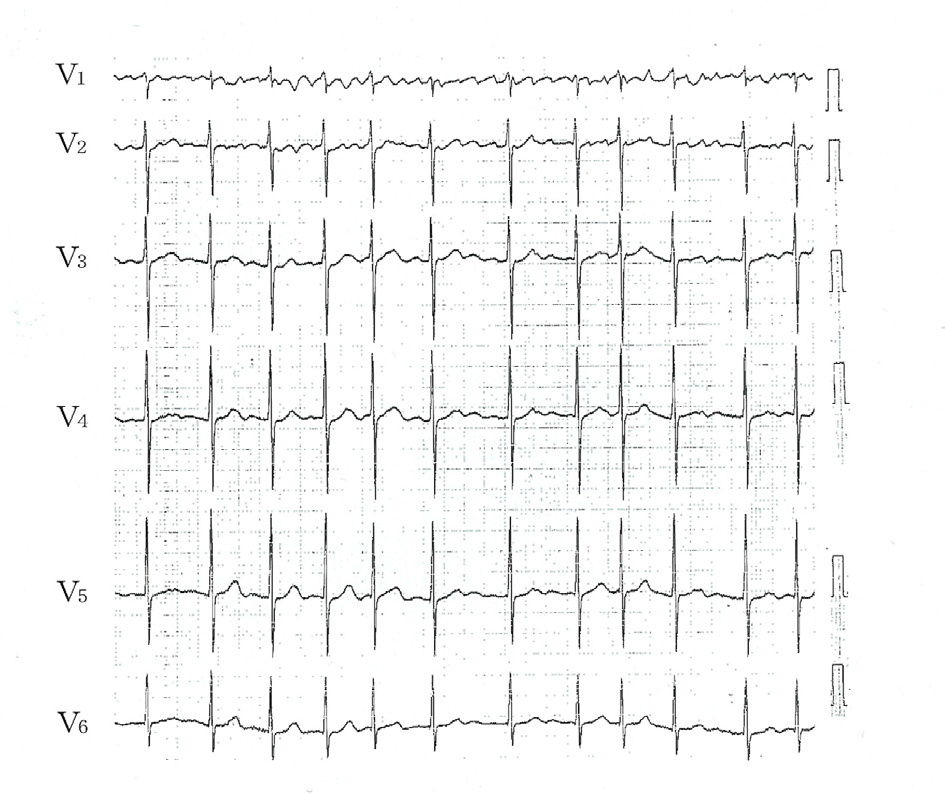
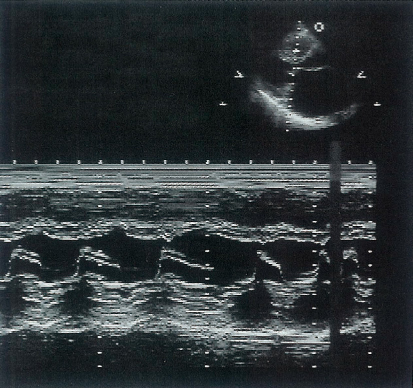
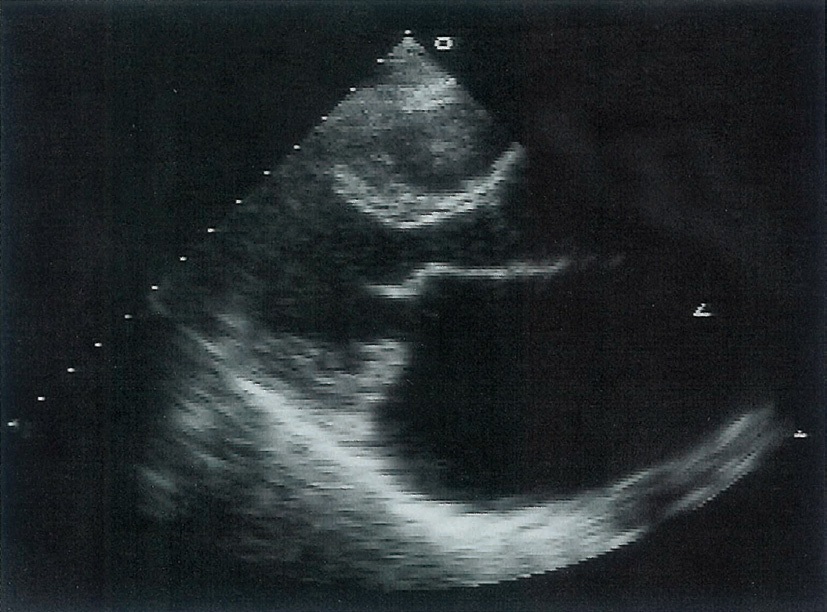
ａ アトロピン
ｂ ジギタリス
ｃ リドカイン
ｄ ワルファリン
ｅ ニトログリセリン
✅
ｂ ジギタリス ＋ ｄ ワルファリン
MS+Af→心拍数コントロール（ジギタリス）+脳塞栓予防（ワルファリン）の2剤が必要。
❤️ MS+Afの治療
ジギタリス：Afの心拍数コントロール（房室伝導抑制）→頻脈管理ワルファリン（抗凝固薬）：Af+MS→脳塞栓リスク極めて高い→抗凝固必須（DOAC不可→ワルファリン）
×アトロピン：洞不全・徐脈→抗コリン薬（頻脈AfにはNG）
×ニトログリセリン：狭心症・急性左心不全症状緩和（根本治療でない）
🎯 国試ポイント
MS+Af→ワルファリン必須（DOACより有効性確立）。ジギタリスはAfの心拍数管理に有効（陰性変時作用・陽性変力作用）。リドカイン→心室性不整脈（Af治療ではない）。🔍 選択肢解説
MS＋心房細動(Ⅰ音亢進・拡張期雑音)。a アトロピン：不適。
b ジギタリス：心房細動の心拍数調整。✓
c リドカイン：心室性用。
d ワルファリン：MS＋AFの血栓塞栓予防。✓
e ニトログリセリン：不適。
Q.367(100A-23)臨床📷 画像2択65%
26 歳の女性。会社の健康診断で心雑音を指摘され来院した。身長164cm、体重50kg。体温36.2℃。呼吸数16/ 分。脈拍56/ 分、整。血圧112/72mmHg。心エコー図（A，B）を示す。
この病態に特徴的なのはどれか。2 つ選べ。
この病態に特徴的なのはどれか。2 つ選べ。
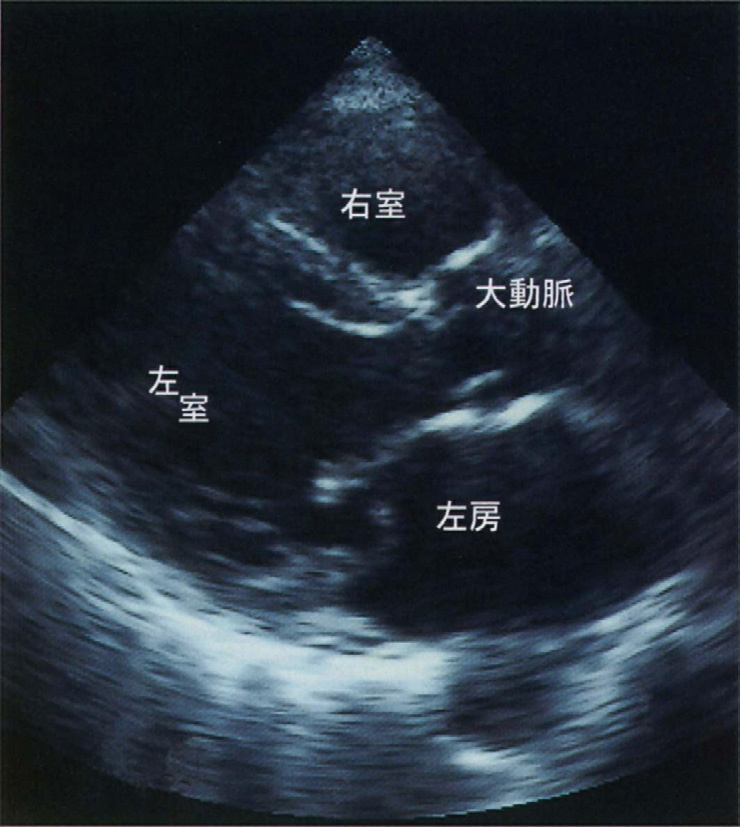
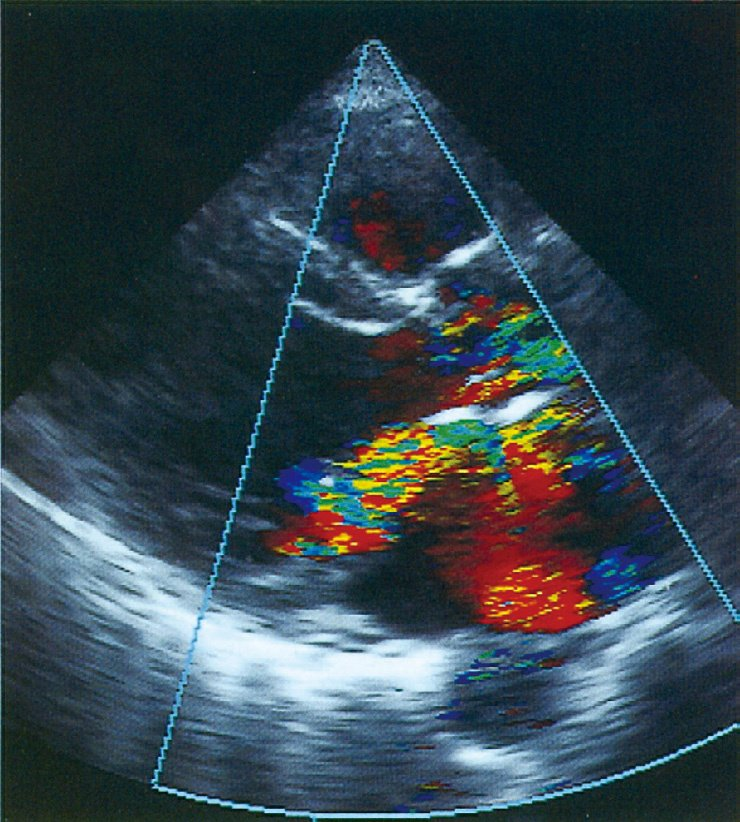
ａ 収縮後期雑音
ｂ Ⅰ音の亢進
ｃ 収縮中期クリック
ｄ 拡張期潅水様雑音
ｅ 連続性雑音
✅
ａ 収縮後期雑音 ＋ ｃ 収縮中期クリック
MVP特徴：収縮中期クリック（弁逸脱時の緊張音）+後収縮期雑音（blowing音）→この2つがセット。
❤️ MVP（僧帽弁逸脱症候群）の特徴
収縮中期クリック：弁逸脱時に腱索が緊張→高音クリック収縮後期（後収縮期）雑音：クリック後の逆流→blowing音
体位変化：立位・Valsalva→逸脱早期化（クリック前方移動→逸脱が早くなる）
座位・臥位：逸脱後期化（クリック後方移動）
📋 MVPの体位による変化
| 体位 | 変化 |
|---|---|
| 立位・Valsalva（静脈還流↓） | 左室容量↓→逸脱早期→クリック前方（早く）移動・雑音延長 |
| 座位・臥位（静脈還流↑） | 左室容量↑→逸脱後期→クリック後方（遅く）移動・雑音短縮 |
🎯 国試ポイント
MVP=収縮中期クリック+後収縮期雑音。Ⅰ音亢進（b）→MS。拡張期潅水様雑音（d）→AR（Erb点で聴取）。連続性雑音（e）→PDA。🔍 選択肢解説
僧帽弁逸脱症候群。a 収縮後期雑音：MVPの収縮後期雑音。✓
b Ⅰ音の亢進：MSの所見。
c 収縮中期クリック：MVPのクリック。✓
d 拡張期潅水様雑音：ARの所見。
e 連続性雑音：PDAの所見。
Q.368(100B-26)一般92%
僧帽弁閉鎖不全症に対する手術はどれか。
ａ Ross 手術
ｂ Bentall 手術
ｃ Rastelli 手術
ｄ 弁形成術
ｅ 左室縫縮術
✅
ｄ 弁形成術
MR手術の第一選択=僧帽弁形成術（弁修復）。弁の形態・機能を温存できる場合は形成術優先。
📋 心臓手術の対応疾患
| 手術名 | 内容 | 適応疾患 |
|---|---|---|
| Ross手術 | 肺動脈弁を大動脈弁位に移植 | 小児ASに適応 |
| Bentall手術 | 大動脈基部+上行大動脈+大動脈弁置換 | Marfan・大動脈瘤 |
| Rastelli手術 | 右室→肺動脈経路再建（導管） | TGA・TOFの根治術 |
| 弁形成術（annuloplasty等） | 僧帽弁修復（輪縫縮+腱索形成） | MRの第一選択 |
| 左室縫縮術（Dor手術） | 左室瘤切除+形成術 | AMI後左室瘤 |
🎯 国試ポイント
MR手術=弁形成術（第一選択）。形成困難→弁置換術（機械弁/生体弁）。Bentall手術→大動脈弁+基部疾患。Rastelli→右室流出路再建。🔍 選択肢解説
a Ross手術：AS(自己肺動脈弁移植)。b Bentall手術：大動脈基部の手術。
c Rastelli手術：先天性心疾患の手術。
d 弁形成術：MRの弁形成/置換。✓
e 左室縫縮術：拡張型心筋症の手術。
Q.369(99A-21)臨床
34 歳の男性。労作時の息切れを主訴に来院した。意識は清明。身長185cm、体重58kg。脈拍92/ 分、整。血圧162/48mmHg。四肢は細長く、口蓋は高い。胸骨左縁第4 肋間に3/6 度の収縮期・拡張期〈to and fro〉雑音を聴取する。
診断はどれか。
診断はどれか。
ａ 僧帽弁狭窄症
ｂ 僧帽弁閉鎖不全症
ｃ 大動脈弁閉鎖不全症
ｄ 大動脈弁狭窄症
ｅ 三尖弁閉鎖不全症
✅
ｃ 大動脈弁閉鎖不全症
Marfan症候群（高身長・蜘蛛指・高口蓋）+脈圧増大+to and fro雑音→大動脈弁閉鎖不全症（AR）。
❤️ Marfan症候群+AR
Marfan症候群：FBN1遺伝子変異→大動脈基部拡大→弁輪拡大→ARto and fro murmur：収縮期駆出性雑音+拡張期漸減性雑音→ARの特徴的聴診
脈圧増大（162/48=114mmHg）：正常脈圧40〜60mmHg→著明増大
🎯 国試ポイント
Marfan+大動脈基部拡大+脈圧増大+to and fro=AR。Marfanは大動脈解離リスクも高い（Stanford A型）。定期エコーフォロー必須。β遮断薬（大動脈拡張進行抑制）。🔍 選択肢解説
Marfan(高身長・to and fro雑音・脈圧開大162/48)。a 僧帽弁狭窄症：拡張期のみ。
b 僧帽弁閉鎖不全症：全収縮期。
c 大動脈弁閉鎖不全症：to and fro雑音＋脈圧開大＋Marfan。✓
d 大動脈弁狭窄症：駆出性のみ。
e 三尖弁閉鎖不全症：右心系。
Q.370(99D-80)一般2択
組合せで正しいのはどれか。2 つ選べ。
ａ Ⅰ音の亢進 ―――――――――― 僧帽弁狭窄症
ｂ Ⅱ音の呼吸性分裂 ――――――― 心房中隔欠損症
ｃ 僧帽弁開放音 ――――――――― 肥大型心筋症
ｄ 拡張期漸減性雑音 ――――――― 肺動脈弁狭窄症
ｅ 吸気で増強する収縮期雑音 ――― 三尖弁閉鎖不全症
✅
ａ Ⅰ音の亢進 ― 僧帽弁狭窄症 ＋ ｅ 吸気で増強する収縮期雑音 ― 三尖弁閉鎖不全症
MS→Ⅰ音亢進（弁可動性あり時）。TR→吸気時静脈還流↑→雑音増強（Rivero-Carvallo徴候）。
📋 全選択肢の正誤
| 選択肢 | 理由 | |
|---|---|---|
| ○ａ：Ⅰ音亢進→MS | MSでは弁可動性があると僧帽弁閉鎖時に亢進 | 正答 |
| ×ｂ：Ⅱ音呼吸性分裂→ASD | ASD=固定性Ⅱ音分裂（呼吸性でない） | 誤り |
| ×ｃ：僧帽弁開放音→HCM | OS=MS（僧帽弁狭窄）の所見 | 誤り |
| ×ｄ：拡張期漸減性雑音→PS | 拡張期漸減性雑音=AR（大動脈弁）、PSは収縮期 | 誤り |
| ○ｅ：吸気増強→TR | 吸気→胸腔陰圧→静脈還流↑→右心流量↑→TR雑音↑ | 正答 |
🎯 国試ポイント
TR=吸気で増強（Rivero-Carvallo徴候）。ASD=固定性Ⅱ音分裂（呼吸による変動なし）。MS=Ⅰ音亢進+OS+拡張中期ランブル。🔍 選択肢解説
a Ⅰ音の亢進―僧帽弁狭窄症：正しい。✓b Ⅱ音の呼吸性分裂―心房中隔欠損症：ASDは固定性分裂で誤り。
c 僧帽弁開放音―肥大型心筋症：開放音はMSで誤り。
d 拡張期漸減性雑音―肺動脈弁狭窄症：PSは収縮期で誤り。
e 吸気で増強する収縮期雑音―三尖弁閉鎖不全症：Rivero-Carvallo徴候で正しい。✓
Q.371(99E-26)一般📷 画像
心エコー図（A，B）を示す。
この疾患でみられるのはどれか。
この疾患でみられるのはどれか。
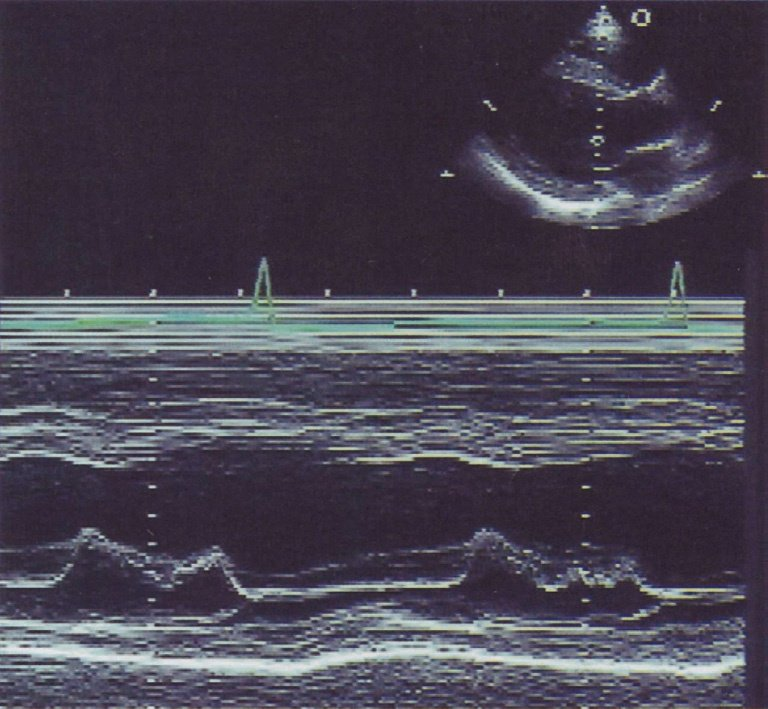
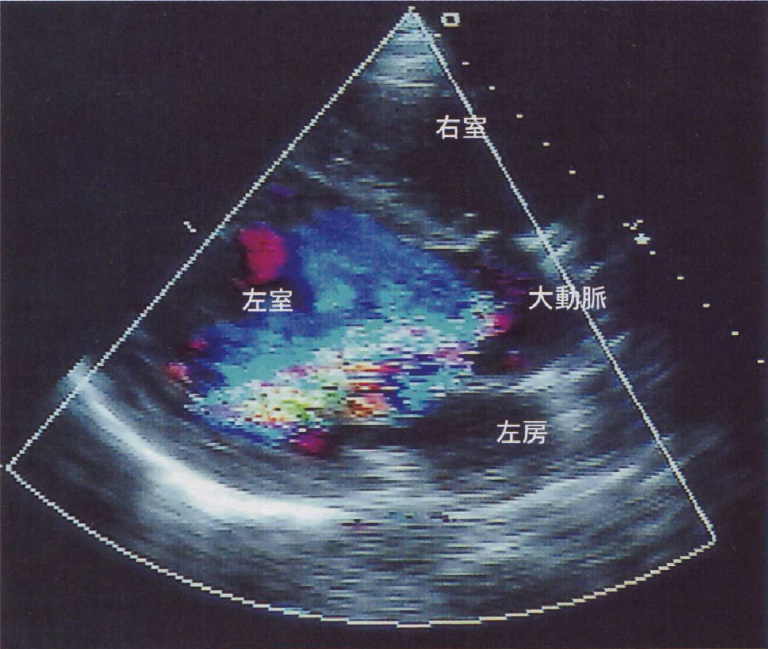
ａ 連続性雑音
ｂ 心膜摩擦音
ｃ opening snap
ｄ to and fro 雑音
ｅ Ⅱ音の奇異性分裂
✅
ｄ to and fro 雑音
AR：拡張期漸減性雑音（逆流）+収縮期駆出性雑音（順流増加）→to and fro murmur（往復雑音）。
❤️ ARの聴診所見
to and fro murmur：収縮期（駆出）+拡張期（逆流）の二相性雑音拡張期漸減性高調性雑音：主体となる特徴的雑音・Erb点最強
Austin Flint雑音：前尖揺れ→拡張中期ランブル
脈圧増大：水撃脈・Corrigan脈
🎯 国試ポイント
AR=to and fro murmur。連続性雑音（a）→PDA（連続性：収縮期から拡張期にかけて途切れない）。心膜摩擦音（b）→急性心膜炎。OS（c）→MS。Ⅱ音奇異性分裂（e）→重症AS・LBBB・WPW。🔍 選択肢解説
a 連続性雑音：PDAの所見。b 心膜摩擦音：心膜炎の所見。
c opening snap：MSの所見。
d to and fro雑音：大動脈弁の狭窄兼閉鎖不全等のto and fro雑音。✓
e Ⅱ音の奇異性分裂：AS/左脚ブロックの所見。
Q.372(98D-20)臨床📷 画像
59 歳の男性。通勤時に駅の階段を昇っていたところ、意識を失い救急車で搬入された。2 年前から労作時の息切れと胸部圧迫感とを自覚していた。5 分位の安静で症状は消失するため放置していた。来院時、意識は清明。脈拍96/ 分、整。血圧100/64mmHg。胸骨右縁第2 肋間に最強点を有する4/6 度の駆出性収縮期雑音を聴取する。心エコー図（A）と心カテーテル検査所見（B）とを示す。
適切な治療法はどれか。
適切な治療法はどれか。
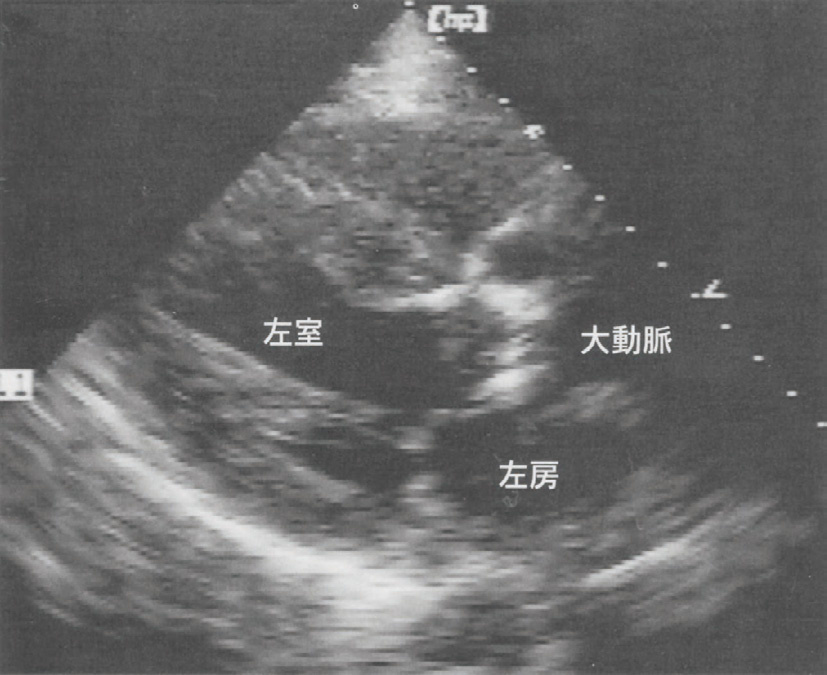
ａ 抗菌薬の投与
ｂ ノルアドレナリンの投与
ｃ 血栓溶解療法
ｄ 冠動脈形成術
ｅ 弁置換術
✅
ｅ 弁置換術
重症AS（3大症状全て出現→失神・狭心症・呼吸困難）+ショック状態→緊急弁置換術（またはTAVI）。
❤️ 重症AS急性期対応
弁置換術（AVR/TAVI）：根治治療→症状あり重症ASで適応緊急時（循環不全）：IABP→ARと異なりASでは禁忌でない（ただし効果限定的）
×抗菌薬：ASの治療でない（感染性心内膜炎予防に使用するが治療ではない）
×ノルアドレナリン：敗血症性ショック→ASへの適応は限定的
🎯 国試ポイント
ASの根治=弁置換術（AVR）またはTAVI。血栓溶解療法（c）→急性心筋梗塞・PE。冠動脈形成術（d）→ACS。ASは薬物療法では根治できない。🔍 選択肢解説
労作性失神＋AS(駆出性雑音)。a 抗菌薬の投与：不適。
b ノルアドレナリンの投与：不適。
c 血栓溶解療法：不適。
d 冠動脈形成術：虚血でない。
e 弁置換術：症候性ASの弁置換。✓
Q.373(98G-111)一般
機械弁による僧帽弁置換術後の患者で正しいのはどれか。
ａ 高エネルギー食を摂取する。
ｂ 納豆を多食する。
ｃ β受容体遮断薬を服用する。
ｄ 抗凝固薬を服用する。
ｅ 携帯電話の使用を避ける。
✅
ｄ 抗凝固薬を服用する。
機械弁：弁表面に血栓形成→塞栓症予防のため生涯にわたりワルファリン（抗凝固薬）服用が必要。
❤️ 機械弁置換術後の管理
ワルファリン（抗凝固薬）必須：血栓・塞栓症予防→生涯服用PT-INR目標値：2.0〜3.0（僧帽弁位は大動脈弁位より高めに設定）
×納豆：ビタミンK豊富→ワルファリン拮抗→摂取禁止
×高エネルギー食：心不全管理に反する（塩分制限・適切カロリー）
×β受容体遮断薬：心不全管理に使うが必須ではない
🎯 国試ポイント
機械弁=生涯ワルファリン（DOAC不可）。PT-INR定期モニタリング必須。納豆・クロレラ・青汁→ビタミンK→ワルファリン効果低下→摂取禁忌。携帯電話→問題なし（現在の機器は影響なし）。🔍 選択肢解説
機械弁による僧帽弁置換術後。a 高エネルギー食を摂取する：不適。
b 納豆を多食する：ビタミンKでワルファリンが拮抗し禁忌。
c β受容体遮断薬を服用する：必須でない。
d 抗凝固薬を服用する：機械弁は生涯ワルファリン。✓
e 携帯電話の使用を避ける：ペースメーカでなく不要。
Q.374(98H-26)一般2択
僧帽弁狭窄症で聴取されるのはどれか。2 つ選べ。
ａ 拡張期雑音
ｂ 収縮期雑音
ｃ 連続性雑音
ｄ Ⅱ音の固定性分裂
ｅ 開放音〈opening snap〉
✅
ａ 拡張期雑音 ＋ ｅ 開放音（opening snap）
MS（僧帽弁狭窄症）：拡張中期ランブル（低調性拡張期雑音）＋opening snap（OS）が2大聴診所見。
📋 MS聴診所見の確認
| 所見 | 特徴 | 補足 |
|---|---|---|
| 拡張期雑音（拡張中期ランブル） | 低調・ゴロゴロ音 | 心尖部・左側臥位で増強 |
| opening snap（OS） | A₂直後の高調音 | 弁可動性がある時に聴取 |
| Ⅰ音亢進 | 弁閉鎖時の高音 | 石灰化高度で消失 |
| ×収縮期雑音 | MR・TR・VSD | MS単独では聴取しない |
| ×連続性雑音 | PDA・動脈瘻 | |
| ×Ⅱ音固定性分裂 | ASD |
🎯 国試ポイント
MS=拡張期雑音+OS（opening snap）。収縮期雑音はMSではなくMRの所見。Ⅱ音固定性分裂→ASD。連続性雑音→PDA。🔍 選択肢解説
a 拡張期雑音：MSの拡張期ランブル。✓b 収縮期雑音：MRなどの所見。
c 連続性雑音：PDAの所見。
d Ⅱ音の固定性分裂：ASDの所見。
e 開放音〈opening snap〉：MSの開放音。✓
Q.375(97G-79)一般
脈拍に関する組合せで正しいのはどれか。
ａ 頻 脈 ―――――――――――― 甲状腺機能低下症
ｂ 徐 脈 ―――――――――――― 脱水症
ｃ 遅 脈 ―――――――――――― 心房中隔欠損症
ｄ 速 脈 ―――――――――――― 大動脈弁閉鎖不全症
ｅ 絶対性不整脈 ――――――――― 心室頻拍
✅
ｄ 速脈 ― 大動脈弁閉鎖不全症
AR（大動脈弁閉鎖不全）：拡張期に大量逆流→収縮期に代償的大量駆出→脈の立ち上がり速い（速脈・水撃脈）。
📋 脈拍の種類と疾患
| 選択肢 | 理由 | 補足 |
|---|---|---|
| ×頻脈→甲状腺機能低下症 | 甲状腺機能低下症=徐脈 | 頻脈=甲状腺機能亢進症 |
| ×徐脈→脱水症 | 脱水=頻脈（代償性） | 徐脈=甲状腺機能低下・高K血症 |
| ×遅脈→ASD | 遅脈=AS（大動脈弁狭窄症） | ASD≠遅脈 |
| ○速脈→AR | 収縮期急速駆出→速い立ち上がり（水撃脈） | 正答 |
| ×絶対性不整脈→VT | 絶対性不整脈=Af（心房細動） | VT=規則的頻脈 |
🎯 国試ポイント
速脈（水撃脈）=AR。遅脈（pulsus tardus）=AS。奇脈=タンポナーデ。交互脈=重症HFrEF。絶対性不整脈=Af（f波、心室応答不規則）。🔍 選択肢解説
a 頻脈―甲状腺機能低下症：亢進症で頻脈となり誤り。b 徐脈―脱水症：頻脈となり誤り。
c 遅脈―心房中隔欠損症：遅脈はASで誤り。
d 速脈―大動脈弁閉鎖不全症：ARの速脈(bounding pulse)で正しい。✓
e 絶対性不整脈―心室頻拍：絶対性不整脈は心房細動で誤り。
Q.376(97H-23)一般2択
僧帽弁閉鎖不全症の所見で正しいのはどれか。2 つ選べ。
ａ Ⅰ音増強
ｂ Ⅲ音聴取
ｃ 汎収縮期雑音
ｄ 拡張中期雑音
ｅ Austin Flint 雑音
✅
ｂ Ⅲ音聴取 ＋ ｃ 汎収縮期雑音
MR（僧帽弁閉鎖不全症）：左室→左房への逆流→収縮期全体にわたる全（汎）収縮期雑音＋左室拡大→Ⅲ音（急速充満音）。
📋 MR聴診所見の確認
| 所見 | 理由 | 補足 |
|---|---|---|
| ×Ⅰ音増強 | MRではⅠ音減弱（閉鎖不全→閉鎖音弱い） | Ⅰ音亢進=MS |
| ○Ⅲ音（S₃） | 左室容量負荷→急速充満→S₃ | 心尖部で聴取 |
| ○汎（全）収縮期雑音 | 収縮期全体のblowing音→腋窩放散 | 心尖部最強 |
| ×拡張中期雑音 | MSの拡張中期ランブル | MRとは別 |
| ×Austin Flint雑音 | ARの所見（逆流血が前尖を揺らす） | MRとは別 |
🎯 国試ポイント
MR=汎（全）収縮期雑音+Ⅲ音。Ⅰ音増強→MS（閉鎖時亢進）。拡張中期雑音→MS。Austin Flint雑音→AR。MRとMSとARの聴診所見の違いは頻出。🔍 選択肢解説
a Ⅰ音増強：MSの所見。b Ⅲ音聴取：MRでⅢ音。✓
c 汎収縮期雑音：MRの全収縮期雑音。✓
d 拡張中期雑音：MSの所見。
e Austin Flint雑音：ARの所見。